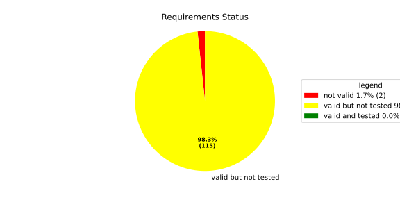
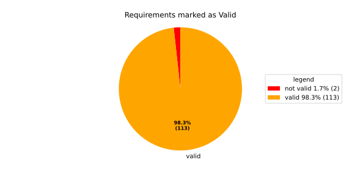
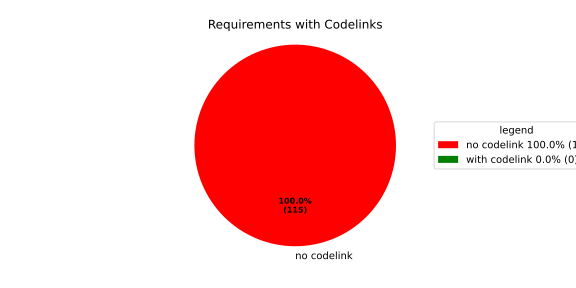

Component Requirements Statistics#
Overview#

In Detail#


No needs passed the filters
Failed Tests
Hint: This table should be empty. Before a PR can be merged all tests have to be successful.
No needs passed the filters
Skipped / Disabled Tests
No needs passed the filters
All passed Tests#
No needs passed the filters
Details About Testcases#
No needs passed the filters
No needs passed the filters
Test Log Files#
tests-report/score/health_monitor/src/rust/tests/test.log
exec ${PAGER:-/usr/bin/less} "$0" || exit 1
Executing tests from //score/health_monitor/src/rust:tests
-----------------------------------------------------------------------------
running 232 tests
test common::tests::duration_to_int_too_large - should panic ... ok
test common::tests::time_offset_diff_too_large - should panic ... ok
test common::tests::time_offset_valid ... ok
test common::tests::time_offset_wrong_order ... ok
test common::tests::time_range_from_interval_lower_too_large - should panic ... ok
test common::tests::time_range_from_interval_valid ... ok
test common::tests::time_range_new_valid ... ok
test common::tests::time_range_new_wrong_order - should panic ... ok
test deadline::common::tests::acquire_and_release_deadline ... ok
test deadline::common::tests::new_and_fields ... ok
test common::tests::duration_to_int_valid ... ok
test deadline::deadline_monitor::tests::deadline_failed_on_first_run_and_then_restarted_is_evaluated_as_error ... ok
test deadline::deadline_monitor::tests::deadline_outside_time_range_is_error_when_dropped_after_evaluate ... ok
test deadline::common::tests::concurrent_acquire ... ok
test deadline::deadline_monitor::tests::get_deadline_unknown_tag ... ok
test deadline::deadline_monitor::tests::start_stop_deadline_outside_ranges_is_evaluated_as_error ... ok
test deadline::deadline_monitor::tests::start_stop_deadline_outside_ranges_is_error_when_dropped_before_evaluate ... ok
test deadline::deadline_state::tests::as_u64_and_new ... ok
test deadline::deadline_state::tests::deadline_state_default_and_snapshot ... ok
test deadline::deadline_state::tests::deadline_state_update_none_returns_err ... ok
test deadline::deadline_state::tests::default_state ... ok
test deadline::deadline_state::tests::set_and_get_timestamp_ms ... ok
test deadline::deadline_state::tests::deadline_state_update_success ... ok
test deadline::deadline_state::tests::set_running ... ok
test deadline::deadline_state::tests::set_underrun ... ok
test deadline::ffi::tests::deadline_destroy_null_deadline ... ok
test deadline::ffi::tests::deadline_monitor_builder_add_deadline_invalid_range ... ok
test deadline::ffi::tests::deadline_monitor_builder_add_deadline_null_builder ... ok
test deadline::ffi::tests::deadline_monitor_builder_add_deadline_null_deadline_tag ... ok
test deadline::ffi::tests::deadline_monitor_builder_add_deadline_succeeds ... ok
test deadline::ffi::tests::deadline_monitor_builder_create_null_builder ... ok
test deadline::ffi::tests::deadline_monitor_builder_create_succeeds ... ok
test deadline::ffi::tests::deadline_monitor_builder_destroy_null_builder ... ok
test deadline::ffi::tests::deadline_monitor_destroy_null_monitor ... ok
test deadline::ffi::tests::deadline_monitor_get_deadline_null_deadline_handle ... ok
test deadline::ffi::tests::deadline_monitor_get_deadline_null_deadline_tag ... ok
test deadline::ffi::tests::deadline_monitor_get_deadline_null_monitor ... ok
test deadline::ffi::tests::deadline_monitor_get_deadline_unknown_deadline ... ok
test deadline::ffi::tests::deadline_monitor_get_deadline_succeeds ... ok
test deadline::ffi::tests::deadline_start_already_started ... ok
test deadline::ffi::tests::deadline_start_null_deadline ... ok
test deadline::ffi::tests::deadline_stop_null_deadline ... ok
test deadline::ffi::tests::deadline_start_succeeds ... ok
test deadline::ffi::tests::deadline_stop_succeeds ... ok
test ffi::tests::health_monitor_builder_add_deadline_monitor_null_deadline_monitor_builder ... ok
test ffi::tests::health_monitor_builder_add_deadline_monitor_null_hmon_builder ... ok
test ffi::tests::health_monitor_builder_add_deadline_monitor_null_monitor_tag ... ok
test ffi::tests::health_monitor_builder_add_deadline_monitor_succeeds ... ok
test ffi::tests::health_monitor_builder_add_heartbeat_monitor_null_hmon_builder ... ok
test ffi::tests::health_monitor_builder_add_heartbeat_monitor_null_heartbeat_monitor_builder ... ok
test ffi::tests::health_monitor_builder_add_heartbeat_monitor_null_monitor_tag ... ok
test ffi::tests::health_monitor_builder_add_heartbeat_monitor_succeeds ... ok
test ffi::tests::health_monitor_builder_add_logic_monitor_null_hmon_builder ... ok
test ffi::tests::health_monitor_builder_add_logic_monitor_null_logic_monitor_builder ... ok
test ffi::tests::health_monitor_builder_add_logic_monitor_null_monitor_tag ... ok
test ffi::tests::health_monitor_builder_add_logic_monitor_succeeds ... ok
test ffi::tests::health_monitor_builder_build_invalid_cycle_intervals ... ok
test ffi::tests::health_monitor_builder_build_no_monitors ... ok
test ffi::tests::health_monitor_builder_build_null_builder_handle ... ok
test ffi::tests::health_monitor_builder_build_null_monitor_handle ... ok
test ffi::tests::health_monitor_builder_build_succeeds ... ok
test ffi::tests::health_monitor_builder_build_thread_parameters ... ok
test ffi::tests::health_monitor_builder_build_valid_cycle_intervals_succeeds ... ok
test ffi::tests::health_monitor_builder_create_null_handle ... ok
test ffi::tests::health_monitor_builder_create_succeeds ... ok
test ffi::tests::health_monitor_builder_destroy_null_handle ... ok
test ffi::tests::health_monitor_destroy_null_hmon ... ok
test ffi::tests::health_monitor_get_deadline_monitor_already_taken ... ok
test ffi::tests::health_monitor_get_deadline_monitor_null_deadline_monitor ... ok
test ffi::tests::health_monitor_get_deadline_monitor_null_hmon ... ok
test ffi::tests::health_monitor_get_deadline_monitor_null_monitor_tag ... ok
test ffi::tests::health_monitor_get_deadline_monitor_succeeds ... ok
test ffi::tests::health_monitor_get_heartbeat_monitor_already_taken ... ok
test ffi::tests::health_monitor_get_heartbeat_monitor_null_heartbeat_monitor ... ok
test ffi::tests::health_monitor_get_heartbeat_monitor_null_monitor_tag ... ok
test ffi::tests::health_monitor_get_heartbeat_monitor_null_hmon ... ok
test ffi::tests::health_monitor_get_heartbeat_monitor_succeeds ... ok
test ffi::tests::health_monitor_get_logic_monitor_already_taken ... ok
test ffi::tests::health_monitor_get_logic_monitor_null_hmon ... ok
test ffi::tests::health_monitor_get_logic_monitor_null_logic_monitor ... ok
test ffi::tests::health_monitor_get_logic_monitor_null_monitor_tag ... ok
test ffi::tests::health_monitor_get_logic_monitor_succeeds ... ok
test ffi::tests::health_monitor_start_null_hmon ... ok
test ffi::tests::health_monitor_start_monitor_not_taken ... ok
test health_monitor::tests::health_monitor_builder_build_invalid_cycles ... ok
test health_monitor::tests::health_monitor_builder_build_no_monitors ... ok
test health_monitor::tests::health_monitor_builder_build_succeeds ... ok
test health_monitor::tests::health_monitor_builder_new_succeeds ... ok
test health_monitor::tests::health_monitor_get_deadline_monitor_available ... ok
test health_monitor::tests::health_monitor_get_deadline_monitor_invalid_state ... ok
test health_monitor::tests::health_monitor_get_deadline_monitor_taken ... ok
test health_monitor::tests::health_monitor_get_deadline_monitor_unknown ... ok
test health_monitor::tests::health_monitor_get_heartbeat_monitor_available ... ok
test health_monitor::tests::health_monitor_get_heartbeat_monitor_invalid_state ... ok
test health_monitor::tests::health_monitor_get_heartbeat_monitor_taken ... ok
test health_monitor::tests::health_monitor_get_heartbeat_monitor_unknown ... ok
test health_monitor::tests::health_monitor_get_logic_monitor_available ... ok
test health_monitor::tests::health_monitor_get_logic_monitor_invalid_state ... ok
[2026/06/01 13:07:08.7969051][7815][HMON][INFO] Monitoring thread started.
[2026/06/01 13:07:08.7969244][7815][HMON][INFO] Monitoring thread exiting.
test ffi::tests::health_monitor_start_succeeds ... ok
test health_monitor::tests::health_monitor_get_logic_monitor_taken ... ok
test health_monitor::tests::health_monitor_get_logic_monitor_unknown ... ok
[2026/06/01 13:07:08.7984349][7815][HMON][INFO] Monitoring thread started.
[2026/06/01 13:07:08.7984505][7815][HMON][INFO] Monitoring thread exiting.
test health_monitor::tests::health_monitor_start_monitors_not_taken - should panic ... ok
test health_monitor::tests::health_monitor_start_succeeds ... ok
test heartbeat::ffi::tests::heartbeat_monitor_builder_create_invalid_range ... ok
test heartbeat::ffi::tests::heartbeat_monitor_builder_create_null_builder ... ok
test heartbeat::ffi::tests::heartbeat_monitor_builder_create_succeeds ... ok
test heartbeat::ffi::tests::heartbeat_monitor_builder_destroy_null_builder ... ok
test heartbeat::ffi::tests::heartbeat_monitor_heartbeat_null_monitor ... ok
test heartbeat::ffi::tests::heartbeat_monitor_heartbeat_succeeds ... ok
test heartbeat::ffi::tests::heartbeat_monitor_destroy_null_monitor ... ok
test deadline::deadline_monitor::tests::monitor_with_multiple_running_deadlines ... ok
test heartbeat::heartbeat_monitor::tests::heartbeat_monitor_beat_early_evaluate_early ... ok
test heartbeat::heartbeat_monitor::tests::heartbeat_monitor_beat_early_evaluate_in_range ... ok
test heartbeat::heartbeat_monitor::tests::heartbeat_monitor_beat_in_range_evaluate_in_range ... ok
test heartbeat::heartbeat_monitor::tests::heartbeat_monitor_beat_early_evaluate_late ... ok
test heartbeat::heartbeat_monitor::tests::heartbeat_monitor_builder_build_invalid_internal_processing_cycle ... ok
test heartbeat::heartbeat_monitor::tests::heartbeat_monitor_builder_build_ok ... ok
test heartbeat::heartbeat_monitor::tests::heartbeat_monitor_beat_in_range_evaluate_late ... ok
test heartbeat::heartbeat_monitor::tests::heartbeat_monitor_beat_late_evaluate_late ... ok
test heartbeat::heartbeat_monitor::tests::heartbeat_monitor_cycle_early ... ok
test heartbeat::heartbeat_monitor::tests::heartbeat_monitor_multiple_beats_early_evaluate_early ... ok
test heartbeat::heartbeat_monitor::tests::heartbeat_monitor_cycle_in_range ... ok
test heartbeat::heartbeat_monitor::tests::heartbeat_monitor_multiple_beats_early_evaluate_in_range ... ok
test heartbeat::heartbeat_monitor::tests::heartbeat_monitor_multiple_beats_in_range_evaluate_in_range ... ok
test heartbeat::heartbeat_monitor::tests::heartbeat_monitor_cycle_late ... ok
test heartbeat::heartbeat_monitor::tests::heartbeat_monitor_multiple_beats_early_evaluate_late ... ok
test heartbeat::heartbeat_monitor::tests::heartbeat_monitor_no_beat_evaluate_early ... ok
test heartbeat::heartbeat_monitor::tests::heartbeat_monitor_no_beat_evaluate_in_range ... ok
test heartbeat::heartbeat_monitor::tests::heartbeat_monitor_multiple_beats_in_range_evaluate_late ... ok
test heartbeat::heartbeat_monitor::tests::heartbeat_monitor_multiple_beats_late_evaluate_late ... ok
test heartbeat::heartbeat_state::tests::snapshot_counter_increment ... ok
test heartbeat::heartbeat_state::tests::snapshot_default ... ok
test heartbeat::heartbeat_state::tests::snapshot_from_u64_max ... ok
test heartbeat::heartbeat_state::tests::snapshot_from_u64_valid ... ok
test heartbeat::heartbeat_state::tests::snapshot_from_u64_zero ... ok
test heartbeat::heartbeat_state::tests::snapshot_new_succeeds ... ok
test heartbeat::heartbeat_state::tests::snapshot_set_heartbeat_timestamp_out_of_range - should panic ... ok
test heartbeat::heartbeat_state::tests::snapshot_set_heartbeat_timestamp_valid ... ok
test heartbeat::heartbeat_state::tests::state_default ... ok
test heartbeat::heartbeat_state::tests::state_new ... ok
test heartbeat::heartbeat_state::tests::state_reset ... ok
test heartbeat::heartbeat_state::tests::state_snapshot ... ok
test heartbeat::heartbeat_state::tests::state_update_none ... ok
test heartbeat::heartbeat_state::tests::state_update_some ... ok
test logic::ffi::tests::logic_monitor_builder_add_state_null_allowed_states_many_elements ... ok
test logic::ffi::tests::logic_monitor_builder_add_state_null_allowed_states_zero_elements ... ok
test logic::ffi::tests::logic_monitor_builder_add_state_null_builder ... ok
test logic::ffi::tests::logic_monitor_builder_add_state_null_tag ... ok
test logic::ffi::tests::logic_monitor_builder_add_state_succeeds ... ok
test logic::ffi::tests::logic_monitor_builder_create_null_builder ... ok
test logic::ffi::tests::logic_monitor_builder_create_null_initial_state ... ok
test logic::ffi::tests::logic_monitor_builder_create_succeeds ... ok
test logic::ffi::tests::logic_monitor_builder_destroy_null_builder ... ok
test logic::ffi::tests::logic_monitor_destroy_null_monitor ... ok
test logic::ffi::tests::logic_monitor_state_fails ... ok
test logic::ffi::tests::logic_monitor_state_null_monitor ... ok
test logic::ffi::tests::logic_monitor_state_null_state ... ok
test logic::ffi::tests::logic_monitor_state_succeeds ... ok
test logic::ffi::tests::logic_monitor_transition_fails ... ok
test logic::ffi::tests::logic_monitor_transition_null_monitor ... ok
test logic::ffi::tests::logic_monitor_transition_null_target_state ... ok
test logic::ffi::tests::logic_monitor_transition_succeeds ... ok
test logic::logic_monitor::tests::logic_monitor_builder_build_no_states ... ok
test logic::logic_monitor::tests::logic_monitor_builder_build_succeeds ... ok
test logic::logic_monitor::tests::logic_monitor_builder_build_undefined_initial_state ... ok
test logic::logic_monitor::tests::logic_monitor_builder_build_undefined_target ... ok
test logic::logic_monitor::tests::logic_monitor_builder_new_succeeds ... ok
test logic::logic_monitor::tests::logic_monitor_evaluate_invalid_state ... ok
test logic::logic_monitor::tests::logic_monitor_evaluate_invalid_transition ... ok
test logic::logic_monitor::tests::logic_monitor_evaluate_succeeds ... ok
test logic::logic_monitor::tests::logic_monitor_state_indeterminate_current_state ... ok
test logic::logic_monitor::tests::logic_monitor_state_succeeds ... ok
test logic::logic_monitor::tests::logic_monitor_transition_indeterminate_current_state ... ok
test logic::logic_monitor::tests::logic_monitor_transition_invalid_transition ... ok
test logic::logic_monitor::tests::logic_monitor_transition_succeeds ... ok
test logic::logic_monitor::tests::logic_monitor_transition_unknown_node ... ok
test logic::logic_state::tests::snapshot_from_u64_max ... ok
test logic::logic_state::tests::snapshot_from_u64_valid ... ok
test logic::logic_state::tests::snapshot_from_u64_zero ... ok
test logic::logic_state::tests::snapshot_new_succeeds ... ok
test logic::logic_state::tests::snapshot_set_current_state_index_valid ... ok
test logic::logic_state::tests::snapshot_set_heartbeat_timestamp_out_of_range - should panic ... ok
test logic::logic_state::tests::snapshot_set_monitor_status_valid ... ok
test logic::logic_state::tests::state_new ... ok
test logic::logic_state::tests::state_snapshot ... ok
test logic::logic_state::tests::state_swap ... ok
test tag::tests::deadline_tag_debug ... ok
test tag::tests::deadline_tag_from_str ... ok
test tag::tests::deadline_tag_from_string ... ok
test tag::tests::deadline_tag_new ... ok
test tag::tests::deadline_tag_score_debug ... ok
test tag::tests::monitor_tag_debug ... ok
test tag::tests::monitor_tag_from_str ... ok
test tag::tests::monitor_tag_from_string ... ok
test tag::tests::monitor_tag_new ... ok
test tag::tests::monitor_tag_score_debug ... ok
test tag::tests::state_tag_debug ... ok
test tag::tests::state_tag_from_str ... ok
test tag::tests::state_tag_from_string ... ok
test tag::tests::state_tag_new ... ok
test tag::tests::state_tag_score_debug ... ok
test tag::tests::tag_debug ... ok
test tag::tests::tag_hash_is_eq ... ok
test tag::tests::tag_hash_is_ne ... ok
test tag::tests::tag_new ... ok
test tag::tests::tag_partial_eq_is_eq ... ok
test tag::tests::tag_partial_eq_is_ne ... ok
test tag::tests::tag_score_debug ... ok
test tag::tests::test_from_str ... ok
test tag::tests::test_from_string ... ok
test thread_ffi::tests::scheduler_policy_priority_max_null_priority ... ok
test thread_ffi::tests::scheduler_policy_priority_max_succeeds ... ok
test thread_ffi::tests::scheduler_policy_priority_min_null_priority ... ok
test thread_ffi::tests::scheduler_policy_priority_min_succeeds ... ok
test thread_ffi::tests::thread_parameters_affinity_null_affinity_many_elements ... ok
test thread_ffi::tests::thread_parameters_affinity_null_affinity_zero_elements ... ok
test thread_ffi::tests::thread_parameters_affinity_null_handle ... ok
test thread_ffi::tests::thread_parameters_affinity_succeeds ... ok
test thread_ffi::tests::thread_parameters_create_succeeds ... ok
test thread_ffi::tests::thread_parameters_destroy_null_handle ... ok
test thread_ffi::tests::thread_parameters_scheduler_parameters_invalid_priority ... ok
test thread_ffi::tests::thread_parameters_scheduler_parameters_null_handle ... ok
test thread_ffi::tests::thread_parameters_scheduler_parameters_succeeds ... ok
test thread_ffi::tests::thread_parameters_stack_size_null_handle ... ok
test thread_ffi::tests::thread_parameters_stack_size_succeeds ... ok
test worker::tests::monitoring_logic_report_alive_on_each_call_when_no_error ... ok
test heartbeat::heartbeat_monitor::tests::heartbeat_monitor_no_beat_evaluate_late ... ok
test worker::tests::monitoring_logic_report_error_when_deadline_failed ... ok
[2026/06/01 13:07:09.7562980][7815][HMON][INFO] Monitoring thread started.
test deadline::deadline_monitor::tests::start_stop_deadline_within_range_works ... ok
[2026/06/01 13:07:09.8167115][7815][HMON][WARN] Deadline (DeadlineTag(deadline_fast)) missed! Expected: 50, now: 60
[2026/06/01 13:07:09.8167394][7815][HMON][WARN] Deadline monitor with tag MonitorTag(deadline_monitor) reported error: TooLate.
[2026/06/01 13:07:09.8167466][7815][HMON][WARN] One or more monitors reported errors, skipping AliveAPI notification.
[2026/06/01 13:07:09.8167535][7815][HMON][INFO] Monitoring logic failed, stopping thread.
[2026/06/01 13:07:09.8167586][7815][HMON][INFO] Monitoring thread exiting.
test worker::tests::monitoring_logic_report_alive_respect_cycle ... ok
test worker::tests::unique_thread_runner_monitoring_works ... ok
test heartbeat::heartbeat_monitor::tests::heartbeat_monitor_timestamp_offset ... ok
test result: ok. 232 passed; 0 failed; 0 ignored; 0 measured; 0 filtered out; finished in 1.27s
tests-report/score/health_monitor/src/rust/loom_tests/test.log
exec ${PAGER:-/usr/bin/less} "$0" || exit 1
Executing tests from //score/health_monitor/src/rust:loom_tests
-----------------------------------------------------------------------------
running 3 tests
test heartbeat::heartbeat_monitor::loom_tests::heartbeat_monitor_heartbeat_evaluate_too_early ... ok
test heartbeat::heartbeat_monitor::loom_tests::heartbeat_monitor_heartbeat_evaluate_in_range ... ok
test heartbeat::heartbeat_monitor::loom_tests::heartbeat_monitor_heartbeat_evaluate_too_late ... ok
test result: ok. 3 passed; 0 failed; 0 ignored; 0 measured; 0 filtered out; finished in 0.70s
tests-report/score/health_monitor/src/cpp/cpp_integration_tests/test.log
exec ${PAGER:-/usr/bin/less} "$0" || exit 1
Executing tests from //score/health_monitor/src/cpp:cpp_integration_tests
-----------------------------------------------------------------------------
Running main() from gmock_main.cc
[==========] Running 1 test from 1 test suite.
[----------] Global test environment set-up.
[----------] 1 test from HealthMonitorTest
[ RUN ] HealthMonitorTest.Integrated
[2026/06/05 09:54:42.0717292][score/health_monitor/src/rust/deadline/deadline_monitor.rs:217][4986][HMON][ERROR] Deadline DeadlineTag(deadline_1) stopped too early by 100 ms
[2026/06/05 09:54:42.0717485][score/health_monitor/src/rust/worker.rs:121][4986][HMON][INFO] Monitoring thread started.
[2026/06/05 09:54:42.0717714][score/health_monitor/src/rust/worker.rs:139][4986][HMON][INFO] Monitoring thread exiting.
[ OK ] HealthMonitorTest.Integrated (3 ms)
[----------] 1 test from HealthMonitorTest (3 ms total)
[----------] Global test environment tear-down
[==========] 1 test from 1 test suite ran. (3 ms total)
[ PASSED ] 1 test.
tests-report/score/health_monitor/src/cpp/cpp_unit_tests/test.log
exec ${PAGER:-/usr/bin/less} "$0" || exit 1
Executing tests from //score/health_monitor/src/cpp:cpp_unit_tests
-----------------------------------------------------------------------------
Running main() from gmock_main.cc
[==========] Running 33 tests from 10 test suites.
[----------] Global test environment set-up.
[----------] 2 tests from DeadlineMonitorBuilderFixture
[ RUN ] DeadlineMonitorBuilderFixture.New_Succeeds
[ OK ] DeadlineMonitorBuilderFixture.New_Succeeds (0 ms)
[ RUN ] DeadlineMonitorBuilderFixture.AddDeadline_Succeeds
[ OK ] DeadlineMonitorBuilderFixture.AddDeadline_Succeeds (0 ms)
[----------] 2 tests from DeadlineMonitorBuilderFixture (0 ms total)
[----------] 2 tests from DeadlineMonitorFixture
[ RUN ] DeadlineMonitorFixture.GetDeadline_Succeeds
[ OK ] DeadlineMonitorFixture.GetDeadline_Succeeds (0 ms)
[ RUN ] DeadlineMonitorFixture.GetDeadline_Unknown
[ OK ] DeadlineMonitorFixture.GetDeadline_Unknown (0 ms)
[----------] 2 tests from DeadlineMonitorFixture (0 ms total)
[----------] 2 tests from DeadlineFixture
[ RUN ] DeadlineFixture.Start_Succeeds
[2026/06/05 09:54:43.4389358][score/health_monitor/src/rust/deadline/deadline_monitor.rs:217][5018][HMON][ERROR] Deadline DeadlineTag(deadline) stopped too early by 50 ms
[ OK ] DeadlineFixture.Start_Succeeds (0 ms)
[ RUN ] DeadlineFixture.Start_AlreadyRunning
[2026/06/05 09:54:43.4389870][score/health_monitor/src/rust/deadline/deadline_monitor.rs:217][5018][HMON][ERROR] Deadline DeadlineTag(deadline) stopped too early by 50 ms
[2026/06/05 09:54:43.4389935][score/health_monitor/src/rust/deadline/deadline_monitor.rs:172][5018][HMON][WARN] Trying to start deadline DeadlineTag(deadline) that already failed
[ OK ] DeadlineFixture.Start_AlreadyRunning (0 ms)
[----------] 2 tests from DeadlineFixture (0 ms total)
[----------] 4 tests from HealthMonitorBuilderFixture
[ RUN ] HealthMonitorBuilderFixture.New_Succeeds
[ OK ] HealthMonitorBuilderFixture.New_Succeeds (0 ms)
[ RUN ] HealthMonitorBuilderFixture.Build_Succeeds
[ OK ] HealthMonitorBuilderFixture.Build_Succeeds (0 ms)
[ RUN ] HealthMonitorBuilderFixture.Build_InvalidCycles
[2026/06/05 09:54:43.4390903][score/health_monitor/src/rust/health_monitor.rs:134][5018][HMON][ERROR] Supervisor API cycle duration (123 ms) must be a multiple of internal processing cycle interval (100 ms).
[ OK ] HealthMonitorBuilderFixture.Build_InvalidCycles (0 ms)
[ RUN ] HealthMonitorBuilderFixture.Build_NoMonitors
[2026/06/05 09:54:43.4391104][score/health_monitor/src/rust/health_monitor.rs:146][5018][HMON][ERROR] No monitors have been added. HealthMonitor cannot be created.
[ OK ] HealthMonitorBuilderFixture.Build_NoMonitors (0 ms)
[----------] 4 tests from HealthMonitorBuilderFixture (0 ms total)
[----------] 11 tests from HealthMonitor
[ RUN ] HealthMonitor.GetDeadlineMonitor_Available
[ OK ] HealthMonitor.GetDeadlineMonitor_Available (0 ms)
[ RUN ] HealthMonitor.GetDeadlineMonitor_Taken
[ OK ] HealthMonitor.GetDeadlineMonitor_Taken (0 ms)
[ RUN ] HealthMonitor.GetDeadlineMonitor_Unknown
[ OK ] HealthMonitor.GetDeadlineMonitor_Unknown (0 ms)
[ RUN ] HealthMonitor.GetHeartbeatMonitor_Available
[ OK ] HealthMonitor.GetHeartbeatMonitor_Available (0 ms)
[ RUN ] HealthMonitor.GetHeartbeatMonitor_Taken
[ OK ] HealthMonitor.GetHeartbeatMonitor_Taken (0 ms)
[ RUN ] HealthMonitor.GetHeartbeatMonitor_Unknown
[ OK ] HealthMonitor.GetHeartbeatMonitor_Unknown (0 ms)
[ RUN ] HealthMonitor.GetLogicMonitor_Available
[ OK ] HealthMonitor.GetLogicMonitor_Available (0 ms)
[ RUN ] HealthMonitor.GetLogicMonitor_Taken
[ OK ] HealthMonitor.GetLogicMonitor_Taken (0 ms)
[ RUN ] HealthMonitor.GetLogicMonitor_Unknown
[ OK ] HealthMonitor.GetLogicMonitor_Unknown (0 ms)
[ RUN ] HealthMonitor.Start_Succeeds
[2026/06/05 09:54:43.4393663][score/health_monitor/src/rust/worker.rs:121][5018][HMON][INFO] Monitoring thread started.
[2026/06/05 09:54:43.4393754][score/health_monitor/src/rust/worker.rs:139][5018][HMON][INFO] Monitoring thread exiting.
[ OK ] HealthMonitor.Start_Succeeds (0 ms)
[ RUN ] HealthMonitor.Start_MonitorsNotTaken
[2026/06/05 09:54:43.4400290][score/health_monitor/src/rust/health_monitor.rs:307][5023][HMON][ERROR] All monitors must be taken before starting HealthMonitor but MonitorTag(deadline_monitor) is not taken.
[ OK ] HealthMonitor.Start_MonitorsNotTaken (158 ms)
[----------] 11 tests from HealthMonitor (158 ms total)
[----------] 1 test from HeartbeatMonitorBuilder
[ RUN ] HeartbeatMonitorBuilder.New_Succeeds
[ OK ] HeartbeatMonitorBuilder.New_Succeeds (0 ms)
[----------] 1 test from HeartbeatMonitorBuilder (0 ms total)
[----------] 1 test from HeartbeatMonitor
[ RUN ] HeartbeatMonitor.Heartbeat_Succeeds
[ OK ] HeartbeatMonitor.Heartbeat_Succeeds (0 ms)
[----------] 1 test from HeartbeatMonitor (0 ms total)
[----------] 2 tests from LogicMonitorBuilderFixture
[ RUN ] LogicMonitorBuilderFixture.New_Succeeds
[ OK ] LogicMonitorBuilderFixture.New_Succeeds (0 ms)
[ RUN ] LogicMonitorBuilderFixture.AddState_Succeeds
[ OK ] LogicMonitorBuilderFixture.AddState_Succeeds (0 ms)
[----------] 2 tests from LogicMonitorBuilderFixture (0 ms total)
[----------] 5 tests from LogicMonitorFixture
[ RUN ] LogicMonitorFixture.Transition_Succeeds
[ OK ] LogicMonitorFixture.Transition_Succeeds (0 ms)
[ RUN ] LogicMonitorFixture.Transition_Unknown
[2026/06/05 09:54:43.5978984][score/health_monitor/src/rust/logic/logic_monitor.rs:265][5018][HMON][WARN] Requested state transition is invalid: StateTag(state1) -> StateTag(unknown)
[ OK ] LogicMonitorFixture.Transition_Unknown (0 ms)
[ RUN ] LogicMonitorFixture.Transition_Invalid
[2026/06/05 09:54:43.5979562][score/health_monitor/src/rust/logic/logic_monitor.rs:265][5018][HMON][WARN] Requested state transition is invalid: StateTag(state1) -> StateTag(unknown)
[2026/06/05 09:54:43.5979644][score/health_monitor/src/rust/logic/logic_monitor.rs:254][5018][HMON][WARN] Current logic monitor state cannot be determined
[ OK ] LogicMonitorFixture.Transition_Invalid (0 ms)
[ RUN ] LogicMonitorFixture.State_Succeeds
[ OK ] LogicMonitorFixture.State_Succeeds (0 ms)
[ RUN ] LogicMonitorFixture.State_Invalid
[2026/06/05 09:54:43.5980688][score/health_monitor/src/rust/logic/logic_monitor.rs:265][5018][HMON][WARN] Requested state transition is invalid: StateTag(state1) -> StateTag(unknown)
[2026/06/05 09:54:43.5980816][score/health_monitor/src/rust/logic/logic_monitor.rs:290][5018][HMON][WARN] Current logic monitor state cannot be determined
[ OK ] LogicMonitorFixture.State_Invalid (0 ms)
[----------] 5 tests from LogicMonitorFixture (0 ms total)
[----------] 3 tests from TimeRangeFixture
[ RUN ] TimeRangeFixture.New_Succeeds
[ OK ] TimeRangeFixture.New_Succeeds (0 ms)
[ RUN ] TimeRangeFixture.New_InvalidOrder
[ OK ] TimeRangeFixture.New_InvalidOrder (149 ms)
[ RUN ] TimeRangeFixture.MinMax
[ OK ] TimeRangeFixture.MinMax (0 ms)
[----------] 3 tests from TimeRangeFixture (149 ms total)
[----------] Global test environment tear-down
[==========] 33 tests from 10 test suites ran. (309 ms total)
[ PASSED ] 33 tests.
tests-report/score/launch_manager/exec_error_domain_UT/test.log
exec ${PAGER:-/usr/bin/less} "$0" || exit 1
Executing tests from //score/launch_manager:exec_error_domain_UT
-----------------------------------------------------------------------------
Running main() from gmock_main.cc
[==========] Running 3 tests from 1 test suite.
[----------] Global test environment set-up.
[----------] 3 tests from ExecErrorDomainTest
[ RUN ] ExecErrorDomainTest.AllKnownCodesReturnNonEmptyMessage
[ OK ] ExecErrorDomainTest.AllKnownCodesReturnNonEmptyMessage (0 ms)
[ RUN ] ExecErrorDomainTest.AllKnownCodesHaveDistinctMessages
[ OK ] ExecErrorDomainTest.AllKnownCodesHaveDistinctMessages (0 ms)
[ RUN ] ExecErrorDomainTest.UnknownCodeReturnsNonEmptyMessage
[ OK ] ExecErrorDomainTest.UnknownCodeReturnsNonEmptyMessage (0 ms)
[----------] 3 tests from ExecErrorDomainTest (0 ms total)
[----------] Global test environment tear-down
[==========] 3 tests from 1 test suite ran. (0 ms total)
[ PASSED ] 3 tests.
tests-report/score/launch_manager/daemon/src/process_state_client/process_state_client_ut/test.log
exec ${PAGER:-/usr/bin/less} "$0" || exit 1
Executing tests from //score/launch_manager/daemon/src/process_state_client:process_state_client_ut
-----------------------------------------------------------------------------
Running main() from gmock_main.cc
[==========] Running 4 tests from 1 test suite.
[----------] Global test environment set-up.
[----------] 4 tests from ProcessStateClient_UT
[ RUN ] ProcessStateClient_UT.ProcessStateClient_ConstructReceiver_Succeeds
[ OK ] ProcessStateClient_UT.ProcessStateClient_ConstructReceiver_Succeeds (0 ms)
[ RUN ] ProcessStateClient_UT.ProcessStateClient_QueueOneProcess_Succeeds
[ OK ] ProcessStateClient_UT.ProcessStateClient_QueueOneProcess_Succeeds (0 ms)
[ RUN ] ProcessStateClient_UT.ProcessStateClient_QueueMaxNumberOfProcesses_Succeeds
[ OK ] ProcessStateClient_UT.ProcessStateClient_QueueMaxNumberOfProcesses_Succeeds (8 ms)
[ RUN ] ProcessStateClient_UT.ProcessStateClient_QueueOneProcessTooMany_Fails
mw::log initialization error: Error No logging configuration files could be found. occurred with context information: Failed to load configuration files. Fallback to console logging.
2026/06/01 13:07:07.9227519 1538361 000 ECU1 NONE LM log error verbose 1 Failed to queue posix process
2026/06/01 13:07:07.9227520 1538363 000 ECU1 NONE LM log error verbose 1 ProcessStateReceiver::getNextChangedPosixProcess: Overflow occurred, will be reported as kCommunicationError
[ OK ] ProcessStateClient_UT.ProcessStateClient_QueueOneProcessTooMany_Fails (5 ms)
[----------] 4 tests from ProcessStateClient_UT (15 ms total)
[----------] Global test environment tear-down
[==========] 4 tests from 1 test suite ran. (15 ms total)
[ PASSED ] 4 tests.
tests-report/score/launch_manager/daemon/src/recovery_client/recovery_client_UT/test.log
exec ${PAGER:-/usr/bin/less} "$0" || exit 1
Executing tests from //score/launch_manager/daemon/src/recovery_client:recovery_client_UT
-----------------------------------------------------------------------------
Running main() from gmock_main.cc
[==========] Running 5 tests from 1 test suite.
[----------] Global test environment set-up.
[----------] 5 tests from RecoveryClientTest
[ RUN ] RecoveryClientTest.SendSingleRequest
[ OK ] RecoveryClientTest.SendSingleRequest (0 ms)
[ RUN ] RecoveryClientTest.GetNextRequest
[ OK ] RecoveryClientTest.GetNextRequest (0 ms)
[ RUN ] RecoveryClientTest.GetNextRequestEmpty
[ OK ] RecoveryClientTest.GetNextRequestEmpty (0 ms)
[ RUN ] RecoveryClientTest.RingBufferFull
[ OK ] RecoveryClientTest.RingBufferFull (0 ms)
[ RUN ] RecoveryClientTest.FIFOOrdering
[ OK ] RecoveryClientTest.FIFOOrdering (0 ms)
[----------] 5 tests from RecoveryClientTest (0 ms total)
[----------] Global test environment tear-down
[==========] 5 tests from 1 test suite ran. (0 ms total)
[ PASSED ] 5 tests.
tests-report/score/launch_manager/daemon/src/alive_monitor/details/MonitorImpl_UT/test.log
exec ${PAGER:-/usr/bin/less} "$0" || exit 1
Executing tests from //score/launch_manager/daemon/src/alive_monitor/details:MonitorImpl_UT
-----------------------------------------------------------------------------
Running main() from gmock_main.cc
[==========] Running 3 tests from 1 test suite.
[----------] Global test environment set-up.
[----------] 3 tests from MonitorImplTest
[ RUN ] MonitorImplTest.ThrowsWhenInterfacePathEnvVarIsNotSet
mw::log initialization error: Error No logging configuration files could be found. occurred with context information: Failed to load configuration files. Fallback to console logging.
2026/06/05 09:40:17.2417211 1457806 000 ECU1 NONE Sprv log error verbose 3 Failed to load interface path for Monitor ( test/instance )
[ OK ] MonitorImplTest.ThrowsWhenInterfacePathEnvVarIsNotSet (6 ms)
[ RUN ] MonitorImplTest.DoesNotThrowWhenInterfacePathEnvVarIsSet
2026/06/05 09:40:17.2417214 1457832 000 ECU1 NONE Sprv log error verbose 3 Connection to PHM daemon failed, for the Monitor ( test/instance )
[ OK ] MonitorImplTest.DoesNotThrowWhenInterfacePathEnvVarIsSet (0 ms)
[ RUN ] MonitorImplTest.ReportCheckpointSafeWhenNotConnected
2026/06/05 09:40:17.2417214 1457833 000 ECU1 NONE Sprv log error verbose 3 Connection to PHM daemon failed, for the Monitor ( test/instance )
[ OK ] MonitorImplTest.ReportCheckpointSafeWhenNotConnected (0 ms)
[----------] 3 tests from MonitorImplTest (8 ms total)
[----------] Global test environment tear-down
[==========] 3 tests from 1 test suite ran. (9 ms total)
[ PASSED ] 3 tests.
tests-report/score/launch_manager/daemon/src/alive_monitor/details/supervision/Alive_UT/test.log
exec ${PAGER:-/usr/bin/less} "$0" || exit 1
Executing tests from //score/launch_manager/daemon/src/alive_monitor/details/supervision:Alive_UT
-----------------------------------------------------------------------------
Running main() from gmock_main.cc
[==========] Running 4 tests from 1 test suite.
[----------] Global test environment set-up.
[----------] 4 tests from AliveSupervisionTest
[ RUN ] AliveSupervisionTest.AliveTransitionsOkToExpiredOnMissingHeartbeat
mw::log initialization error: Error No logging configuration files could be found. occurred with context information: Failed to load configuration files. Fallback to console logging.
2026/06/03 10:29:52.2592505 1296245 000 ECU1 NONE Sprv log warn verbose 13 Alive Supervision ( test_alive ) switched to EXPIRED , due to 0 reported alive indication(s) (expected >= 1 ). Failed supervision cycles: 0 / 0
[ OK ] AliveSupervisionTest.AliveTransitionsOkToExpiredOnMissingHeartbeat (5 ms)
[ RUN ] AliveSupervisionTest.AliveStaysOkWithCorrectHeartbeats
[ OK ] AliveSupervisionTest.AliveStaysOkWithCorrectHeartbeats (0 ms)
[ RUN ] AliveSupervisionTest.AliveReportsEnqueueFailureWhenRingBufferFull
2026/06/03 10:29:52.2592506 1296255 000 ECU1 NONE Sprv log warn verbose 13 Alive Supervision ( test_alive ) switched to EXPIRED , due to 0 reported alive indication(s) (expected >= 1 ). Failed supervision cycles: 0 / 0
2026/06/03 10:29:52.2592506 1296256 000 ECU1 NONE Sprv log error verbose 3 Failed to enqueue recovery request for alive supervision test_alive failure (ring buffer full)
[ OK ] AliveSupervisionTest.AliveReportsEnqueueFailureWhenRingBufferFull (0 ms)
[ RUN ] AliveSupervisionTest.AliveDebouncesThroughFailedBeforeExpired
2026/06/03 10:29:52.2592506 1296257 000 ECU1 NONE Sprv log warn verbose 13 Alive Supervision ( test_alive ) switched to FAILED , due to 0 reported alive indication(s) (expected >= 1 ). Failed supervision cycles: 1 / 1
2026/06/03 10:29:52.2592506 1296258 000 ECU1 NONE Sprv log warn verbose 13 Alive Supervision ( test_alive ) switched to EXPIRED , due to 0 reported alive indication(s) (expected >= 1 ). Failed supervision cycles: 2 / 1
[ OK ] AliveSupervisionTest.AliveDebouncesThroughFailedBeforeExpired (0 ms)
[----------] 4 tests from AliveSupervisionTest (5 ms total)
[----------] Global test environment tear-down
[==========] 4 tests from 1 test suite ran. (6 ms total)
[ PASSED ] 4 tests.
tests-report/score/launch_manager/daemon/src/alive_monitor/details/ifappl/MonitorIfDaemon_UT/test.log
exec ${PAGER:-/usr/bin/less} "$0" || exit 1
Executing tests from //score/launch_manager/daemon/src/alive_monitor/details/ifappl:MonitorIfDaemon_UT
-----------------------------------------------------------------------------
Running main() from gmock_main.cc
[==========] Running 16 tests from 1 test suite.
[----------] Global test environment set-up.
[----------] 16 tests from MonitorIfDaemonTest
[ RUN ] MonitorIfDaemonTest.GetInterfaceName_ReturnsNameGivenAtConstruction
mw::log initialization error: Error No logging configuration files could be found. occurred with context information: Failed to load configuration files. Fallback to console logging.
[ OK ] MonitorIfDaemonTest.GetInterfaceName_ReturnsNameGivenAtConstruction (2 ms)
[ RUN ] MonitorIfDaemonTest.InitiallyInactive_CheckForNewData_DoesNotNotifyCheckpoint
[ OK ] MonitorIfDaemonTest.InitiallyInactive_CheckForNewData_DoesNotNotifyCheckpoint (0 ms)
[ RUN ] MonitorIfDaemonTest.ProcessOffBeforeActivation_RemainsInactive
[ OK ] MonitorIfDaemonTest.ProcessOffBeforeActivation_RemainsInactive (0 ms)
[ RUN ] MonitorIfDaemonTest.ProcessRunning_ActivatesMonitorOnNextCheckForNewData
[ OK ] MonitorIfDaemonTest.ProcessRunning_ActivatesMonitorOnNextCheckForNewData (0 ms)
[ RUN ] MonitorIfDaemonTest.ProcessStarting_AlsoActivatesMonitor
[ OK ] MonitorIfDaemonTest.ProcessStarting_AlsoActivatesMonitor (0 ms)
[ RUN ] MonitorIfDaemonTest.ProcessOff_DeactivatesMonitor_NoFurtherDataForwarded
[ OK ] MonitorIfDaemonTest.ProcessOff_DeactivatesMonitor_NoFurtherDataForwarded (0 ms)
[ RUN ] MonitorIfDaemonTest.Active_CheckpointDataForwarded
[ OK ] MonitorIfDaemonTest.Active_CheckpointDataForwarded (0 ms)
[ RUN ] MonitorIfDaemonTest.Active_FutureTimestamp_NotForwardedInCurrentCycle
[ OK ] MonitorIfDaemonTest.Active_FutureTimestamp_NotForwardedInCurrentCycle (0 ms)
[ RUN ] MonitorIfDaemonTest.Active_FutureTimestampCheckpoint_ConsumedInLaterCycle
[ OK ] MonitorIfDaemonTest.Active_FutureTimestampCheckpoint_ConsumedInLaterCycle (0 ms)
[ RUN ] MonitorIfDaemonTest.Active_NonMatchingCheckpointId_NotForwarded
[ OK ] MonitorIfDaemonTest.Active_NonMatchingCheckpointId_NotForwarded (0 ms)
[ RUN ] MonitorIfDaemonTest.Active_MultipleCheckpointsInOneCycle_AllForwarded
[ OK ] MonitorIfDaemonTest.Active_MultipleCheckpointsInOneCycle_AllForwarded (0 ms)
[ RUN ] MonitorIfDaemonTest.Active_TwoAttachedCheckpoints_RoutedByCheckpointId
[ OK ] MonitorIfDaemonTest.Active_TwoAttachedCheckpoints_RoutedByCheckpointId (0 ms)
[ RUN ] MonitorIfDaemonTest.Active_OverflowDetected_TransitionsToInactiveOverflow
2026/06/03 10:29:52.2592545 1296648 000 ECU1 NONE Sprv log warn verbose 3 MonitorInterface: Potential data loss of checkpoint ring buffer occurred. Instance: test_interface
[ OK ] MonitorIfDaemonTest.Active_OverflowDetected_TransitionsToInactiveOverflow (1 ms)
[ RUN ] MonitorIfDaemonTest.InactiveOverflow_NoProcessRestart_DoesNotRepeatNotification
2026/06/03 10:29:52.2592546 1296653 000 ECU1 NONE Sprv log warn verbose 3 MonitorInterface: Potential data loss of checkpoint ring buffer occurred. Instance: test_interface
[ OK ] MonitorIfDaemonTest.InactiveOverflow_NoProcessRestart_DoesNotRepeatNotification (0 ms)
[ RUN ] MonitorIfDaemonTest.InactiveOverflow_ProcessRestarts_PushesOverflowNotificationAgain
2026/06/03 10:29:52.2592546 1296655 000 ECU1 NONE Sprv log warn verbose 3 MonitorInterface: Potential data loss of checkpoint ring buffer occurred. Instance: test_interface
[ OK ] MonitorIfDaemonTest.InactiveOverflow_ProcessRestarts_PushesOverflowNotificationAgain (0 ms)
[ RUN ] MonitorIfDaemonTest.InactiveOverflow_ProcessRestartFlag_ClearedAfterNotification
2026/06/03 10:29:52.2592546 1296658 000 ECU1 NONE Sprv log warn verbose 3 MonitorInterface: Potential data loss of checkpoint ring buffer occurred. Instance: test_interface
[ OK ] MonitorIfDaemonTest.InactiveOverflow_ProcessRestartFlag_ClearedAfterNotification (0 ms)
[----------] 16 tests from MonitorIfDaemonTest (7 ms total)
[----------] Global test environment tear-down
[==========] 16 tests from 1 test suite ran. (7 ms total)
[ PASSED ] 16 tests.
tests-report/score/launch_manager/daemon/src/process_group_manager/details/safeprocessmap_UT/test.log
exec ${PAGER:-/usr/bin/less} "$0" || exit 1
Executing tests from //score/launch_manager/daemon/src/process_group_manager/details:safeprocessmap_UT
-----------------------------------------------------------------------------
Running main() from gmock_main.cc
[==========] Running 13 tests from 1 test suite.
[----------] Global test environment set-up.
[----------] 13 tests from SafeProcessMapTest
[ RUN ] SafeProcessMapTest.ConstructWithZeroCapacity
[ OK ] SafeProcessMapTest.ConstructWithZeroCapacity (0 ms)
[ RUN ] SafeProcessMapTest.FindTerminatedWithNegativePidReturnsInvalid
[ OK ] SafeProcessMapTest.FindTerminatedWithNegativePidReturnsInvalid (0 ms)
[ RUN ] SafeProcessMapTest.FindTerminatedInsertsEntryWhenPidNotPresent
[ OK ] SafeProcessMapTest.FindTerminatedInsertsEntryWhenPidNotPresent (0 ms)
[ RUN ] SafeProcessMapTest.FindTerminatedMatchesExistingInsertAndCallsCallback
[ OK ] SafeProcessMapTest.FindTerminatedMatchesExistingInsertAndCallsCallback (0 ms)
[ RUN ] SafeProcessMapTest.InsertIntoEmptyTreeReturnsZero
[ OK ] SafeProcessMapTest.InsertIntoEmptyTreeReturnsZero (0 ms)
[ RUN ] SafeProcessMapTest.InsertMatchesExistingFindTerminatedEntry
[ OK ] SafeProcessMapTest.InsertMatchesExistingFindTerminatedEntry (0 ms)
[ RUN ] SafeProcessMapTest.InsertMultipleNodesThenFindTerminatedRemovesAll
[ OK ] SafeProcessMapTest.InsertMultipleNodesThenFindTerminatedRemovesAll (7 ms)
[ RUN ] SafeProcessMapTest.InsertBeyondCapacityReturnsOutOfMemory
[ OK ] SafeProcessMapTest.InsertBeyondCapacityReturnsOutOfMemory (2 ms)
[ RUN ] SafeProcessMapTest.InsertSamePidTwiceYieldsUntilFindTerminatedResolves
[ OK ] SafeProcessMapTest.InsertSamePidTwiceYieldsUntilFindTerminatedResolves (11 ms)
[ RUN ] SafeProcessMapTest.FindTerminatedSamePidTwiceYieldsUntilInsertResolves
[ OK ] SafeProcessMapTest.FindTerminatedSamePidTwiceYieldsUntilInsertResolves (11 ms)
[ RUN ] SafeProcessMapTest.FindTerminatedWorksAtMaxTreeDepth
[ OK ] SafeProcessMapTest.FindTerminatedWorksAtMaxTreeDepth (0 ms)
[ RUN ] SafeProcessMapTest.ConcurrentInsertAndFindFromMultipleThreads
[ OK ] SafeProcessMapTest.ConcurrentInsertAndFindFromMultipleThreads (2575 ms)
[ RUN ] SafeProcessMapTest.ConcurrentFindAndInsertFromMultipleThreads
[ OK ] SafeProcessMapTest.ConcurrentFindAndInsertFromMultipleThreads (2210 ms)
[----------] 13 tests from SafeProcessMapTest (4821 ms total)
[----------] Global test environment tear-down
[==========] 13 tests from 1 test suite ran. (4821 ms total)
[ PASSED ] 13 tests.
tests-report/score/launch_manager/daemon/src/process_group_manager/details/oshandler_UT/test.log
exec ${PAGER:-/usr/bin/less} "$0" || exit 1
Executing tests from //score/launch_manager/daemon/src/process_group_manager/details:oshandler_UT
-----------------------------------------------------------------------------
Running main() from gmock_main.cc
[==========] Running 6 tests from 1 test suite.
[----------] Global test environment set-up.
[----------] 6 tests from OsHandlerTest
[ RUN ] OsHandlerTest.WaitReturnsProcessId_FindTerminatedIsCalled
[ OK ] OsHandlerTest.WaitReturnsProcessId_FindTerminatedIsCalled (102 ms)
[ RUN ] OsHandlerTest.WaitReturnsError_OsHandlerSleepsAndDoesNotCallFindTerminated
[ OK ] OsHandlerTest.WaitReturnsError_OsHandlerSleepsAndDoesNotCallFindTerminated (101 ms)
[ RUN ] OsHandlerTest.WaitReturnsZeroPid_OsHandlerSleepsAndDoesNotCallFindTerminated
[ OK ] OsHandlerTest.WaitReturnsZeroPid_OsHandlerSleepsAndDoesNotCallFindTerminated (104 ms)
[ RUN ] OsHandlerTest.WaitReturnsProcessIdBeforeRegistration_LaterRegistrationReceivesStoredTermination
[ OK ] OsHandlerTest.WaitReturnsProcessIdBeforeRegistration_LaterRegistrationReceivesStoredTermination (102 ms)
[ RUN ] OsHandlerTest.WaitReturnsUnknownPidWhenMapIsFull_OutOfResourcesPathDoesNotNotifyCallbacks
mw::log initialization error: Error No logging configuration files could be found. occurred with context information: Failed to load configuration files. Fallback to console logging.
2026/06/03 06:59:29.9969867 1115355 000 ECU1 NONE LM log error verbose 3 No more resources available to track process with PID 9999 (SafeProcessMap capacity exceeded).
[ OK ] OsHandlerTest.WaitReturnsUnknownPidWhenMapIsFull_OutOfResourcesPathDoesNotNotifyCallbacks (112 ms)
[ RUN ] OsHandlerTest.WaitReturnsErrorThenProcessId_HandlerRecoversAndInvokesCallback
[ OK ] OsHandlerTest.WaitReturnsErrorThenProcessId_HandlerRecoversAndInvokesCallback (202 ms)
[----------] 6 tests from OsHandlerTest (813 ms total)
[----------] Global test environment tear-down
[==========] 6 tests from 1 test suite ran. (814 ms total)
[ PASSED ] 6 tests.
tests-report/score/launch_manager/daemon/src/common/identifier_hash_UT/test.log
exec ${PAGER:-/usr/bin/less} "$0" || exit 1
Executing tests from //score/launch_manager/daemon/src/common:identifier_hash_UT
-----------------------------------------------------------------------------
Running main() from gmock_main.cc
[==========] Running 7 tests from 1 test suite.
[----------] Global test environment set-up.
[----------] 7 tests from IdentifierHashTest
[ RUN ] IdentifierHashTest.IdentifierHash_with_string_view_created
[ OK ] IdentifierHashTest.IdentifierHash_with_string_view_created (0 ms)
[ RUN ] IdentifierHashTest.IdentifierHash_with_string_created
[ OK ] IdentifierHashTest.IdentifierHash_with_string_created (0 ms)
[ RUN ] IdentifierHashTest.IdentifierHash_default_created
[ OK ] IdentifierHashTest.IdentifierHash_default_created (0 ms)
[ RUN ] IdentifierHashTest.IdentifierHash_invalid_hash_no_string_representation
[ OK ] IdentifierHashTest.IdentifierHash_invalid_hash_no_string_representation (0 ms)
[ RUN ] IdentifierHashTest.IdentifierHash_no_dangling_pointer_after_source_string_dies
[ OK ] IdentifierHashTest.IdentifierHash_no_dangling_pointer_after_source_string_dies (0 ms)
[ RUN ] IdentifierHashTest.IdentifierHash_EqualityOperators
[ OK ] IdentifierHashTest.IdentifierHash_EqualityOperators (0 ms)
[ RUN ] IdentifierHashTest.IdentifierHash_LessThanOperator
[ OK ] IdentifierHashTest.IdentifierHash_LessThanOperator (0 ms)
[----------] 7 tests from IdentifierHashTest (0 ms total)
[----------] Global test environment tear-down
[==========] 7 tests from 1 test suite ran. (0 ms total)
[ PASSED ] 7 tests.
tests-report/score/launch_manager/daemon/src/common/concurrency/mpmc_concurrent_queue_tsan_test/test.log
exec ${PAGER:-/usr/bin/less} "$0" || exit 1
Executing tests from //score/launch_manager/daemon/src/common/concurrency:mpmc_concurrent_queue_tsan_test
-----------------------------------------------------------------------------
Running main() from gmock_main.cc
[==========] Running 15 tests from 5 test suites.
[----------] Global test environment set-up.
[----------] 5 tests from MPMCConcurrentQueueTest_Basic
[ RUN ] MPMCConcurrentQueueTest_Basic.PushAndPopSingleItem
[ OK ] MPMCConcurrentQueueTest_Basic.PushAndPopSingleItem (0 ms)
[ RUN ] MPMCConcurrentQueueTest_Basic.PushAndPopPreservesOrder
[ OK ] MPMCConcurrentQueueTest_Basic.PushAndPopPreservesOrder (0 ms)
[ RUN ] MPMCConcurrentQueueTest_Basic.LvaluePushCopiesItem
[ OK ] MPMCConcurrentQueueTest_Basic.LvaluePushCopiesItem (0 ms)
[ RUN ] MPMCConcurrentQueueTest_Basic.RvaluePushWorksWithMoveOnlyType
[ OK ] MPMCConcurrentQueueTest_Basic.RvaluePushWorksWithMoveOnlyType (0 ms)
[ RUN ] MPMCConcurrentQueueTest_Basic.PopReturnsNulloptOnSemaphoreWaitFailure
[ OK ] MPMCConcurrentQueueTest_Basic.PopReturnsNulloptOnSemaphoreWaitFailure (20 ms)
[----------] 5 tests from MPMCConcurrentQueueTest_Basic (21 ms total)
[----------] 2 tests from MPMCConcurrentQueueTest_Timeout
[ RUN ] MPMCConcurrentQueueTest_Timeout.PushWithTimeoutSucceedsWhenSlotAvailable
[ OK ] MPMCConcurrentQueueTest_Timeout.PushWithTimeoutSucceedsWhenSlotAvailable (0 ms)
[ RUN ] MPMCConcurrentQueueTest_Timeout.PushWithTimeoutReturnsFalseWhenFull
[ OK ] MPMCConcurrentQueueTest_Timeout.PushWithTimeoutReturnsFalseWhenFull (20 ms)
[----------] 2 tests from MPMCConcurrentQueueTest_Timeout (20 ms total)
[----------] 3 tests from MPMCConcurrentQueueTest_Stop
[ RUN ] MPMCConcurrentQueueTest_Stop.PushReturnsFalseAfterStop
[ OK ] MPMCConcurrentQueueTest_Stop.PushReturnsFalseAfterStop (0 ms)
[ RUN ] MPMCConcurrentQueueTest_Stop.PopReturnsNulloptWhenStoppedAndEmpty
[ OK ] MPMCConcurrentQueueTest_Stop.PopReturnsNulloptWhenStoppedAndEmpty (0 ms)
[ RUN ] MPMCConcurrentQueueTest_Stop.ItemsAreDroppedAfterStop
[ OK ] MPMCConcurrentQueueTest_Stop.ItemsAreDroppedAfterStop (0 ms)
[----------] 3 tests from MPMCConcurrentQueueTest_Stop (0 ms total)
[----------] 4 tests from MPMCConcurrentQueueTest_Blocking
[ RUN ] MPMCConcurrentQueueTest_Blocking.PopBlocksUntilItemAvailable
[ OK ] MPMCConcurrentQueueTest_Blocking.PopBlocksUntilItemAvailable (0 ms)
[ RUN ] MPMCConcurrentQueueTest_Blocking.PushBlocksWhenFull
[ OK ] MPMCConcurrentQueueTest_Blocking.PushBlocksWhenFull (0 ms)
[ RUN ] MPMCConcurrentQueueTest_Blocking.StopUnblocksBlockedConsumer
[ OK ] MPMCConcurrentQueueTest_Blocking.StopUnblocksBlockedConsumer (0 ms)
[ RUN ] MPMCConcurrentQueueTest_Blocking.StopUnblocksBlockedProducer
[ OK ] MPMCConcurrentQueueTest_Blocking.StopUnblocksBlockedProducer (0 ms)
[----------] 4 tests from MPMCConcurrentQueueTest_Blocking (0 ms total)
[----------] 1 test from MPMCConcurrentQueueTest_MPMC
[ RUN ] MPMCConcurrentQueueTest_MPMC.AllItemsDelivered
[ OK ] MPMCConcurrentQueueTest_MPMC.AllItemsDelivered (1 ms)
[----------] 1 test from MPMCConcurrentQueueTest_MPMC (1 ms total)
[----------] Global test environment tear-down
[==========] 15 tests from 5 test suites ran. (45 ms total)
[ PASSED ] 15 tests.
tests-report/score/launch_manager/daemon/src/common/concurrency/mpmc_concurrent_queue_test/test.log
exec ${PAGER:-/usr/bin/less} "$0" || exit 1
Executing tests from //score/launch_manager/daemon/src/common/concurrency:mpmc_concurrent_queue_test
-----------------------------------------------------------------------------
Running main() from gmock_main.cc
[==========] Running 15 tests from 5 test suites.
[----------] Global test environment set-up.
[----------] 5 tests from MPMCConcurrentQueueTest_Basic
[ RUN ] MPMCConcurrentQueueTest_Basic.PushAndPopSingleItem
[ OK ] MPMCConcurrentQueueTest_Basic.PushAndPopSingleItem (0 ms)
[ RUN ] MPMCConcurrentQueueTest_Basic.PushAndPopPreservesOrder
[ OK ] MPMCConcurrentQueueTest_Basic.PushAndPopPreservesOrder (0 ms)
[ RUN ] MPMCConcurrentQueueTest_Basic.LvaluePushCopiesItem
[ OK ] MPMCConcurrentQueueTest_Basic.LvaluePushCopiesItem (0 ms)
[ RUN ] MPMCConcurrentQueueTest_Basic.RvaluePushWorksWithMoveOnlyType
[ OK ] MPMCConcurrentQueueTest_Basic.RvaluePushWorksWithMoveOnlyType (0 ms)
[ RUN ] MPMCConcurrentQueueTest_Basic.PopReturnsNulloptOnSemaphoreWaitFailure
[ OK ] MPMCConcurrentQueueTest_Basic.PopReturnsNulloptOnSemaphoreWaitFailure (20 ms)
[----------] 5 tests from MPMCConcurrentQueueTest_Basic (20 ms total)
[----------] 2 tests from MPMCConcurrentQueueTest_Timeout
[ RUN ] MPMCConcurrentQueueTest_Timeout.PushWithTimeoutSucceedsWhenSlotAvailable
[ OK ] MPMCConcurrentQueueTest_Timeout.PushWithTimeoutSucceedsWhenSlotAvailable (0 ms)
[ RUN ] MPMCConcurrentQueueTest_Timeout.PushWithTimeoutReturnsFalseWhenFull
[ OK ] MPMCConcurrentQueueTest_Timeout.PushWithTimeoutReturnsFalseWhenFull (20 ms)
[----------] 2 tests from MPMCConcurrentQueueTest_Timeout (20 ms total)
[----------] 3 tests from MPMCConcurrentQueueTest_Stop
[ RUN ] MPMCConcurrentQueueTest_Stop.PushReturnsFalseAfterStop
[ OK ] MPMCConcurrentQueueTest_Stop.PushReturnsFalseAfterStop (0 ms)
[ RUN ] MPMCConcurrentQueueTest_Stop.PopReturnsNulloptWhenStoppedAndEmpty
[ OK ] MPMCConcurrentQueueTest_Stop.PopReturnsNulloptWhenStoppedAndEmpty (0 ms)
[ RUN ] MPMCConcurrentQueueTest_Stop.ItemsAreDroppedAfterStop
[ OK ] MPMCConcurrentQueueTest_Stop.ItemsAreDroppedAfterStop (0 ms)
[----------] 3 tests from MPMCConcurrentQueueTest_Stop (0 ms total)
[----------] 4 tests from MPMCConcurrentQueueTest_Blocking
[ RUN ] MPMCConcurrentQueueTest_Blocking.PopBlocksUntilItemAvailable
[ OK ] MPMCConcurrentQueueTest_Blocking.PopBlocksUntilItemAvailable (0 ms)
[ RUN ] MPMCConcurrentQueueTest_Blocking.PushBlocksWhenFull
[ OK ] MPMCConcurrentQueueTest_Blocking.PushBlocksWhenFull (0 ms)
[ RUN ] MPMCConcurrentQueueTest_Blocking.StopUnblocksBlockedConsumer
[ OK ] MPMCConcurrentQueueTest_Blocking.StopUnblocksBlockedConsumer (0 ms)
[ RUN ] MPMCConcurrentQueueTest_Blocking.StopUnblocksBlockedProducer
[ OK ] MPMCConcurrentQueueTest_Blocking.StopUnblocksBlockedProducer (0 ms)
[----------] 4 tests from MPMCConcurrentQueueTest_Blocking (0 ms total)
[----------] 1 test from MPMCConcurrentQueueTest_MPMC
[ RUN ] MPMCConcurrentQueueTest_MPMC.AllItemsDelivered
[ OK ] MPMCConcurrentQueueTest_MPMC.AllItemsDelivered (0 ms)
[----------] 1 test from MPMCConcurrentQueueTest_MPMC (0 ms total)
[----------] Global test environment tear-down
[==========] 15 tests from 5 test suites ran. (42 ms total)
[ PASSED ] 15 tests.
tests-report/tests/integration/smoke/smoke/test.log
exec ${PAGER:-/usr/bin/less} "$0" || exit 1
Executing tests from //tests/integration/smoke:smoke
-----------------------------------------------------------------------------
============================= test session starts ==============================
platform linux -- Python 3.12.12, pytest-9.0.3, pluggy-1.5.0
rootdir: /home/runner/.bazel/sandbox/processwrapper-sandbox/895/execroot/_main/bazel-out/k8-fastbuild/bin/tests/integration/smoke/smoke.runfiles/score_itf+
configfile: pytest.ini
collected 1 item
../score_itf+::test_smoke
-------------------------------- live log setup --------------------------------
[2026-06-09 12:37:58.137] [INFO] [score.itf.plugins.docker] Executing custom image bootstrap command: tests/utils/environments/x86_64-linux/x86_64-linux.sh
[2026-06-09 12:37:58.244] [DEBUG] [docker.utils.config] Trying paths: ['/home/runner/.docker/config.json', '/home/runner/.dockercfg']
[2026-06-09 12:37:58.244] [DEBUG] [docker.utils.config] Found file at path: /home/runner/.docker/config.json
[2026-06-09 12:37:58.244] [DEBUG] [docker.auth] Found 'auths' section
[2026-06-09 12:37:58.244] [DEBUG] [docker.auth] Found entry (registry='https://index.docker.io/v1/', username='githubactions')
[2026-06-09 12:37:58.254] [DEBUG] [urllib3.connectionpool] http://localhost:None "GET /version HTTP/1.1" 200 823
[2026-06-09 12:37:58.282] [DEBUG] [urllib3.connectionpool] http://localhost:None "POST /v1.48/containers/create HTTP/1.1" 201 88
[2026-06-09 12:37:58.284] [DEBUG] [urllib3.connectionpool] http://localhost:None "GET /v1.48/containers/a3d68cc5f5cf8c3b74a85a7ffccf8586c9c5399651cadcc8317ad024aa74fd51/json HTTP/1.1" 200 None
[2026-06-09 12:37:58.406] [DEBUG] [urllib3.connectionpool] http://localhost:None "POST /v1.48/containers/a3d68cc5f5cf8c3b74a85a7ffccf8586c9c5399651cadcc8317ad024aa74fd51/start HTTP/1.1" 204 0
[2026-06-09 12:37:58.406] [DEBUG] [docker.utils.config] Trying paths: ['/home/runner/.docker/config.json', '/home/runner/.dockercfg']
[2026-06-09 12:37:58.407] [DEBUG] [docker.utils.config] Found file at path: /home/runner/.docker/config.json
[2026-06-09 12:37:58.407] [DEBUG] [docker.auth] Found 'auths' section
[2026-06-09 12:37:58.407] [DEBUG] [docker.auth] Found entry (registry='https://index.docker.io/v1/', username='githubactions')
[2026-06-09 12:37:58.421] [DEBUG] [urllib3.connectionpool] http://localhost:None "GET /version HTTP/1.1" 200 823
[2026-06-09 12:37:58.643] [INFO] [tests.utils.testing_utils.setup_test] Test case setup finished
-------------------------------- live log call ---------------------------------
[2026-06-09 12:37:58.802] [INFO] [launch_manager] 2026/06/09 12:37:58.8678794 1390534 000 ECU1 LM LM log debug verbose 1
[2026-06-09 12:37:58.803] [INFO] [launch_manager] Launch Manager Started !!!!
[2026-06-09 12:37:58.803] [INFO] [launch_manager] 2026/06/09 12:37:58.8678795 1390539 000 ECU1 LM LM log debug verbose 1
[2026-06-09 12:37:58.807] [INFO] [launch_manager] Loading LCM Configurations...
[2026-06-09 12:37:58.807] [INFO] [launch_manager] 2026/06/09 12:37:58.8678795 1390541 000 ECU1 LM LM log debug verbose 1
[2026-06-09 12:37:58.807] [INFO] [launch_manager] ECUCFG_ENV_VAR_ROOTFOLDER set successfully
[2026-06-09 12:37:58.807] [INFO] [launch_manager] 2026/06/09 12:37:58.8678795 1390544 000 ECU1 LM LM log debug verbose 5
[2026-06-09 12:37:58.807] [INFO] [launch_manager] FlatBufferParser::getModeGroupPgName: MainPG ( IdentifierHash: 18079021346025578134 )
[2026-06-09 12:37:58.807] [INFO] [launch_manager] 2026/06/09 12:37:58.8678795 1390546 000 ECU1 LM LM log debug verbose 5
[2026-06-09 12:37:58.807] [INFO] [launch_manager] FlatBufferParser::getModeGroupPgStateName: MainPG/Startup ( IdentifierHash: 10504605499600661529 )
[2026-06-09 12:37:58.808] [INFO] [launch_manager] 2026/06/09 12:37:58.8678795 1390548 000 ECU1 LM LM log debug verbose 5
[2026-06-09 12:37:58.808] [INFO] [launch_manager] FlatBufferParser::getModeGroupPgStateName: MainPG/Running ( IdentifierHash: 15039935902284124227 )
[2026-06-09 12:37:58.808] [INFO] [launch_manager] 2026/06/09 12:37:58.8678796 1390551 000 ECU1 LM LM log debug verbose 5
[2026-06-09 12:37:58.808] [INFO] [launch_manager] FlatBufferParser::getModeGroupPgStateName: MainPG/Off ( IdentifierHash: 15281793077830264047 )
[2026-06-09 12:37:58.808] [INFO] [launch_manager] 2026/06/09 12:37:58.8678796 1390552 000 ECU1 LM LM log debug verbose 5
[2026-06-09 12:37:58.808] [INFO] [launch_manager] FlatBufferParser::getModeGroupPgStateName: MainPG/fallback_run_target ( IdentifierHash: 4059409696722237352 )
[2026-06-09 12:37:58.808] [INFO] [launch_manager] 2026/06/09 12:37:58.8678796 1390555 000 ECU1 LM LM log debug verbose 4
[2026-06-09 12:37:58.811] [INFO] [launch_manager] parseProcessConfigurations: Process index: 0 executable_path_: /tmp/tests/smoke/control_daemon_mock
[2026-06-09 12:37:58.811] [INFO] [launch_manager] 2026/06/09 12:37:58.8678796 1390557 000 ECU1 LM LM log debug verbose 3
[2026-06-09 12:37:58.811] [INFO] [launch_manager] Process control_daemon is Reporting execution state
[2026-06-09 12:37:58.811] [INFO] [launch_manager] 2026/06/09 12:37:58.8678796 1390558 000 ECU1 LM LM log debug verbose 1
[2026-06-09 12:37:58.811] [INFO] [launch_manager] Process is STATE_MANAGEMENT function Cluster Affiliation
[2026-06-09 12:37:58.811] [INFO] [launch_manager] 2026/06/09 12:37:58.8678797 1390560 000 ECU1 LM LM log debug verbose 3
[2026-06-09 12:37:58.811] [INFO] [launch_manager] Process control_daemon is NOT Self terminating
[2026-06-09 12:37:58.811] [INFO] [launch_manager] 2026/06/09 12:37:58.8678797 1390561 000 ECU1 LM LM log debug verbose 4
[2026-06-09 12:37:58.812] [INFO] [launch_manager] ParseProcessProcessGroup: id:::pg_name_: MainPG , pg_state_name_: MainPG/Startup
[2026-06-09 12:37:58.812] [INFO] [launch_manager] 2026/06/09 12:37:58.8678797 1390563 000 ECU1 LM LM log debug verbose 4
[2026-06-09 12:37:58.812] [INFO] [launch_manager] ParseProcessProcessGroup: id:::pg_name_: MainPG , pg_state_name_: MainPG/Running
[2026-06-09 12:37:58.812] [INFO] [launch_manager] 2026/06/09 12:37:58.8678797 1390565 000 ECU1 LM LM log debug verbose 4
[2026-06-09 12:37:58.812] [INFO] [launch_manager] parseProcessConfigurations: Process index: 1 executable_path_: /tmp/tests/smoke/gtest_process
[2026-06-09 12:37:58.812] [INFO] [launch_manager] 2026/06/09 12:37:58.8678797 1390567 000 ECU1 LM LM log debug verbose 3
[2026-06-09 12:37:58.812] [INFO] [launch_manager] Process gtest_process is Reporting execution state
[2026-06-09 12:37:58.812] [INFO] [launch_manager] 2026/06/09 12:37:58.8678798 1390569 000 ECU1 LM LM log debug verbose 1
[2026-06-09 12:37:58.812] [INFO] [launch_manager] Process is NOT associated with any function Cluster Affiliation
[2026-06-09 12:37:58.812] [INFO] [launch_manager] 2026/06/09 12:37:58.8678798 1390571 000 ECU1 LM LM log debug verbose 3
[2026-06-09 12:37:58.812] [INFO] [launch_manager] Process gtest_process is NOT Self terminating
[2026-06-09 12:37:58.813] [INFO] [launch_manager] 2026/06/09 12:37:58.8678798 1390573 000 ECU1 LM LM log debug verbose 4
[2026-06-09 12:37:58.813] [INFO] [launch_manager] ParseProcessProcessGroup: id:::pg_name_: MainPG , pg_state_name_: MainPG/Running
[2026-06-09 12:37:58.813] [INFO] [launch_manager] 2026/06/09 12:37:58.8678798 1390576 000 ECU1 LM LM log debug verbose 3
[2026-06-09 12:37:58.813] [INFO] [launch_manager] Loading SWCL Nr. 0 Succeeded
[2026-06-09 12:37:58.813] [INFO] [launch_manager] 2026/06/09 12:37:58.8678798 1390577 000 ECU1 LM LM log debug verbose 2
[2026-06-09 12:37:58.813] [INFO] [launch_manager] 1 process group(s)
[2026-06-09 12:37:58.813] [INFO] [launch_manager] 2026/06/09 12:37:58.8678799 1390579 000 ECU1 LM LM log debug verbose 3
[2026-06-09 12:37:58.813] [INFO] [launch_manager] Creating graph with 2 nodes
[2026-06-09 12:37:58.813] [INFO] [launch_manager] 2026/06/09 12:37:58.8678799 1390581 000 ECU1 LM LM log debug verbose 1
[2026-06-09 12:37:58.814] [INFO] [launch_manager] Process groups initialized successfully
[2026-06-09 12:37:58.826] [INFO] [launch_manager] 2026/06/09 12:37:58.8678799 1390583 000 ECU1 LM LM log debug verbose 1
[2026-06-09 12:37:58.826] [INFO] [launch_manager] Process Group initialization done
[2026-06-09 12:37:58.827] [INFO] [launch_manager] 2026/06/09 12:37:58.8678799 1390584 000 ECU1 LM LM log debug verbose 3
[2026-06-09 12:37:58.827] [INFO] [launch_manager] Creating Safe Process Map with 2 entries
[2026-06-09 12:37:58.827] [INFO] [launch_manager] 2026/06/09 12:37:58.8678799 1390586 000 ECU1 LM LM log debug verbose 2
[2026-06-09 12:37:58.827] [INFO] [launch_manager] Creating job queue with capacity 1024
[2026-06-09 12:37:58.827] [INFO] [launch_manager] 2026/06/09 12:37:58.8678799 1390588 000 ECU1 LM LM log debug verbose 1
[2026-06-09 12:37:58.827] [INFO] [launch_manager] Creating worker threads...
[2026-06-09 12:37:58.827] [INFO] [launch_manager] 2026/06/09 12:37:58.8678801 1390604 000 ECU1 LM LM log debug verbose 7
[2026-06-09 12:37:58.827] [INFO] [launch_manager] Process group index 0 (with name MainPG ) has 2 processes
[2026-06-09 12:37:58.828] [INFO] [launch_manager] 2026/06/09 12:37:58.8678801 1390605 000 ECU1 LM LM log debug verbose 2
[2026-06-09 12:37:58.828] [INFO] [launch_manager] Creating process node with id: 0
[2026-06-09 12:37:58.828] [INFO] [launch_manager] 2026/06/09 12:37:58.8678801 1390607 000 ECU1 LM LM log debug verbose 5
[2026-06-09 12:37:58.828] [INFO] [launch_manager] Process 0 has 0 start dependencies
[2026-06-09 12:37:58.829] [INFO] [launch_manager] 2026/06/09 12:37:58.8678802 1390609 000 ECU1 LM LM log debug verbose 2
[2026-06-09 12:37:58.829] [INFO] [launch_manager] Creating process node with id: 1
[2026-06-09 12:37:58.829] [INFO] [launch_manager] 2026/06/09 12:37:58.8678802 1390611 000 ECU1 LM LM log debug verbose 5
[2026-06-09 12:37:58.829] [INFO] [launch_manager] Process 1 has 0 start dependencies
[2026-06-09 12:37:58.829] [INFO] [launch_manager] 2026/06/09 12:37:58.8678802 1390613 000 ECU1 LM LM log debug verbose 3
[2026-06-09 12:37:58.829] [INFO] [launch_manager] Created 2 process nodes
[2026-06-09 12:37:58.830] [INFO] [launch_manager] 2026/06/09 12:37:58.8678802 1390614 000 ECU1 LM LM log debug verbose 2
[2026-06-09 12:37:58.830] [INFO] [launch_manager] Creating successor lists for process group MainPG
[2026-06-09 12:37:58.830] [INFO] [launch_manager] 2026/06/09 12:37:58.8678802 1390615 000 ECU1 LM LM log debug verbose 1 Graphs initialized
[2026-06-09 12:37:58.830] [INFO] [launch_manager] 2026/06/09 12:37:58.8678802 1390617 000 ECU1 LM Fcty log info verbose 2
[2026-06-09 12:37:58.830] [INFO] [launch_manager] Factory for FlatCfg MachineConfig: Loading of HM Machine Configuration succeeded.
[2026-06-09 12:37:58.830] [INFO] [launch_manager] 2026/06/09 12:37:58.8678802 1390618 000 ECU1 LM Fcty log debug verbose 3
[2026-06-09 12:37:58.830] [INFO] [launch_manager] Factory for FlatCfg MachineConfig: Alive Supervision buffer size: 100
[2026-06-09 12:37:58.830] [INFO] [launch_manager] 2026/06/09 12:37:58.8678803 1390619 000 ECU1 LM Fcty log debug verbose 3 Factory for FlatCfg MachineConfig: Monitor buffer size: 512
[2026-06-09 12:37:58.830] [INFO] [launch_manager] 2026/06/09 12:37:58.8678803 1390619 000 ECU1 LM Fcty log debug verbose 4
[2026-06-09 12:37:58.831] [INFO] [launch_manager] Factory for FlatCfg MachineConfig: Periodicity: 50000000 ns
[2026-06-09 12:37:58.831] [INFO] [launch_manager] 2026/06/09 12:37:58.8678803 1390620 000 ECU1 LM Fcty log debug verbose 3
[2026-06-09 12:37:58.831] [INFO] [launch_manager] Factory for FlatCfg MachineConfig: Configured watchdogs: 0
[2026-06-09 12:37:58.832] [INFO] [launch_manager] 2026/06/09 12:37:58.8678803 1390621 000 ECU1 LM Fcty log warn verbose 2
[2026-06-09 12:37:58.832] [INFO] [launch_manager] Factory for FlatCfg MachineConfig: No watchdog configured
[2026-06-09 12:37:58.832] [INFO] [launch_manager] 2026/06/09 12:37:58.8678803 1390622 000 ECU1 LM Fcty log debug verbose 2 Software Cluster Handler starts constructing workers: MainCluster
[2026-06-09 12:37:58.832] [INFO] [launch_manager] 2026/06/09 12:37:58.8678803 1390624 000 ECU1 LM Fcty log debug verbose 3
[2026-06-09 12:37:58.832] [INFO] [launch_manager] Factory for FlatCfg AR24-11: Successfully created Process States: control_daemon
[2026-06-09 12:37:58.832] [INFO] [launch_manager] 2026/06/09 12:37:58.8678803 1390625 000 ECU1 LM Fcty log debug verbose 3 Factory for FlatCfg AR24-11: Number of constructed Process States: 1
[2026-06-09 12:37:58.832] [INFO] [launch_manager] 2026/06/09 12:37:58.8678803 1390626 000 ECU1 LM Fcty log debug verbose 3
[2026-06-09 12:37:58.832] [INFO] [launch_manager] Factory for FlatCfg AR24-11: Successfully created Monitor interface IPC with path: lifecycle_health_control_daemon
[2026-06-09 12:37:58.833] [INFO] [launch_manager] 2026/06/09 12:37:58.8678803 1390627 000 ECU1 LM Fcty log debug verbose 3
[2026-06-09 12:37:58.833] [INFO] [launch_manager] Factory for FlatCfg AR24-11: Number of constructed Monitor interface IPCs: 1
[2026-06-09 12:37:58.833] [INFO] [launch_manager] 2026/06/09 12:37:58.8678803 1390628 000 ECU1 LM Fcty log debug verbose 3 Factory for FlatCfg AR24-11: Successfully created MonitorInterface: /lifecycle_health_control_daemon
[2026-06-09 12:37:58.833] [INFO] [launch_manager] 2026/06/09 12:37:58.8678804 1390629 000 ECU1 LM Fcty log debug verbose 3
[2026-06-09 12:37:58.833] [INFO] [launch_manager] Factory for FlatCfg AR24-11: Number of constructed Monitor interfaces: 1
[2026-06-09 12:37:58.834] [INFO] [launch_manager] 2026/06/09 12:37:58.8678804 1390630 000 ECU1 LM Fcty log debug verbose 3 Factory for FlatCfg AR24-11: Successfully created supervision checkpoint: control_daemon_checkpoint
[2026-06-09 12:37:58.834] [INFO] [launch_manager] 2026/06/09 12:37:58.8678804 1390630 000 ECU1 LM Fcty log debug verbose 3
[2026-06-09 12:37:58.834] [INFO] [launch_manager] Factory for FlatCfg AR24-11: Number of constructed supervision checkpoints: 1
[2026-06-09 12:37:58.834] [INFO] [launch_manager] 2026/06/09 12:37:58.8678804 1390632 000 ECU1 LM Fcty log debug verbose 3 Factory for FlatCfg AR24-11: Successfully created alive supervision worker object: control_daemon_alive_supervision
[2026-06-09 12:37:58.834] [INFO] [launch_manager] 2026/06/09 12:37:58.8678804 1390633 000 ECU1 LM Fcty log debug verbose 3
[2026-06-09 12:37:58.834] [INFO] [launch_manager] Factory for FlatCfg AR24-11: Number of constructed alive supervisions: 1
[2026-06-09 12:37:58.834] [INFO] [launch_manager] 2026/06/09 12:37:58.8678804 1390633 000 ECU1 LM Fcty log info verbose 2
[2026-06-09 12:37:58.834] [INFO] [launch_manager] Phm Daemon: The (configured) periodicity in [ns] is set to: 50000000
[2026-06-09 12:37:58.835] [INFO] [launch_manager] 2026/06/09 12:37:58.8678804 1390634 000 ECU1 LM Fcty log debug verbose 2 Phm Daemon: The accuracy of the monotonic system clock in [ns] is: 1
[2026-06-09 12:37:58.835] [INFO] [launch_manager] 2026/06/09 12:37:58.8678804 1390635 000 ECU1 LM Fcty log debug verbose 3 HealthMonitor: Initialization took 1 ms
[2026-06-09 12:37:58.835] [INFO] [launch_manager] 2026/06/09 12:37:58.8678804 1390636 000 ECU1 LM LM log info verbose 1
[2026-06-09 12:37:58.835] [INFO] [launch_manager] LCM started successfully
[2026-06-09 12:37:58.835] [INFO] [launch_manager] 2026/06/09 12:37:58.8678804 1390637 000 ECU1 LM LM log debug verbose 3 clock() at run(): 36.907000 ms
[2026-06-09 12:37:58.835] [INFO] [launch_manager] 2026/06/09 12:37:58.8678804 1390638 000 ECU1 LM LM log debug verbose 1
[2026-06-09 12:37:58.835] [INFO] [launch_manager] =============STARTING MAINPG STARTUP STATE============
[2026-06-09 12:37:58.835] [INFO] [launch_manager] 2026/06/09 12:37:58.8678805 1390639 000 ECU1 LM LM log debug verbose 9
[2026-06-09 12:37:58.836] [INFO] [launch_manager] Graph::setState changes from kSuccess to kInTransition for PG 0 ( MainPG )
[2026-06-09 12:37:58.836] [INFO] [launch_manager] 2026/06/09 12:37:58.8678805 1390640 000 ECU1 LM LM log debug verbose 2 Stop Dependencies: 0
[2026-06-09 12:37:58.836] [INFO] [launch_manager] 2026/06/09 12:37:58.8678805 1390641 000 ECU1 LM LM log debug verbose 2
[2026-06-09 12:37:58.836] [INFO] [launch_manager] Stop Dependencies: 0
[2026-06-09 12:37:58.836] [INFO] [launch_manager] 2026/06/09 12:37:58.8678805 1390642 000 ECU1 LM LM log debug verbose 2 Start Dependencies: 0
[2026-06-09 12:37:58.836] [INFO] [launch_manager] 2026/06/09 12:37:58.8678805 1390643 000 ECU1 LM LM log debug verbose 2
[2026-06-09 12:37:58.836] [INFO] [launch_manager] Start Dependencies: 0
[2026-06-09 12:37:58.836] [INFO] [launch_manager] 2026/06/09 12:37:58.8678805 1390644 000 ECU1 LM LM log debug verbose 6 Starting process 0 ( control_daemon ) from executable /tmp/tests/smoke/control_daemon_mock
[2026-06-09 12:37:58.837] [INFO] [launch_manager] 2026/06/09 12:37:58.8678805 1390645 000 ECU1 LM LM log debug verbose 3 Initialize the control client for control_daemon process
[2026-06-09 12:37:58.837] [INFO] [launch_manager] 2026/06/09 12:37:58.8678805 1390645 000 ECU1 LM LM log debug verbose 1 ControlClientChannel initialized
[2026-06-09 12:37:58.837] [INFO] [launch_manager] 2026/06/09 12:37:58.8678806 1390652 000 ECU1 LM LM log debug verbose 4 startProcess pid 68 received for process: control_daemon
[2026-06-09 12:37:58.837] [INFO] [launch_manager] 2026/06/09 12:37:58.8678806 1390652 000 ECU1 LM LM log debug verbose 1 ControlClientChannel obtained from sync.
[2026-06-09 12:37:58.837] [INFO] [launch_manager] [==========] Running 1 test from 1 test suite.
[2026-06-09 12:37:58.837] [INFO] [launch_manager] [----------] Global test environment set-up.
[2026-06-09 12:37:58.837] [INFO] [launch_manager] [----------] 1 test from Smoke
[2026-06-09 12:37:58.837] [INFO] [launch_manager] [ RUN ] Smoke.Daemon
[2026-06-09 12:37:58.837] [INFO] [launch_manager] [ STEP ] Control daemon report kRunning
[2026-06-09 12:37:58.837] [INFO] [launch_manager] [ END STEP ] Control daemon report kRunning
[2026-06-09 12:37:58.837] [INFO] [launch_manager] [ STEP ] Activate RunTarget Running
[2026-06-09 12:37:58.838] [INFO] [launch_manager] 2026/06/09 12:37:58.8678811 1390703 000 ECU1 LM LM log debug verbose 1
[2026-06-09 12:37:58.838] [INFO] [launch_manager] Request sent. Waiting for acknowledgment...
[2026-06-09 12:37:58.838] [INFO] [launch_manager] 2026/06/09 12:37:58.8678812 1390716 000 ECU1 LM LM log debug verbose 8 ProcessGroupManager::ControlClientHandler: got request kSetStateRequest ( 16 ) re state MainPG/Running of PG MainPG
[2026-06-09 12:37:58.838] [INFO] [launch_manager] 2026/06/09 12:37:58.8678812 1390717 000 ECU1 LM LM log debug verbose 6 Pending state for process group MainPG changed from to MainPG/Running
[2026-06-09 12:37:58.838] [INFO] [launch_manager] 2026/06/09 12:37:58.8678812 1390717 000 ECU1 LM LM log debug verbose 9 Graph::setState changes from kInTransition to kCancelled for PG 0 ( MainPG )
[2026-06-09 12:37:58.838] [INFO] [launch_manager] 2026/06/09 12:37:58.8678812 1390717 000 ECU1 LM LM log debug verbose 1 Control Client handler nudged
[2026-06-09 12:37:58.838] [INFO] [launch_manager] 2026/06/09 12:37:58.8678812 1390718 000 ECU1 LM LM log debug verbose 1 Request acknowledged.
[2026-06-09 12:37:58.838] [INFO] [launch_manager] 2026/06/09 12:37:58.8678813 1390719 000 ECU1 LM LM log debug verbose 8 Got kRunning for pid 68 ( control_daemon ) process 0 of group MainPG
[2026-06-09 12:37:58.838] [INFO] [launch_manager] 2026/06/09 12:37:58.8678813 1390719 000 ECU1 LM LM log debug verbose 7 startProcess for MainPG process 0 ( control_daemon ) done
[2026-06-09 12:37:58.838] [INFO] [launch_manager] 2026/06/09 12:37:58.8678813 1390721 000 ECU1 LM LM log debug verbose 1 Control Client handler nudged
[2026-06-09 12:37:58.838] [INFO] [launch_manager] 2026/06/09 12:37:58.8678813 1390721 000 ECU1 LM LM log fatal verbose 3 clock() at failed initial state transition: 38.347000 ms
[2026-06-09 12:37:58.839] [INFO] [launch_manager] 2026/06/09 12:37:58.8678813 1390723 000 ECU1 LM LM log debug verbose 1 Request acknowledged.
[2026-06-09 12:37:58.840] [INFO] [launch_manager] 2026/06/09 12:37:58.8678813 1390723 000 ECU1 LM LM log debug verbose 9 Graph::setState changes from kCancelled to kUndefinedState for PG 0 ( MainPG )
[2026-06-09 12:37:58.840] [INFO] [launch_manager] 2026/06/09 12:37:58.8678813 1390724 000 ECU1 LM LM log debug verbose 1
[2026-06-09 12:37:58.842] [INFO] [launch_manager] Control Client handler nudged
[2026-06-09 12:37:58.842] [INFO] [launch_manager] 2026/06/09 12:37:58.8678815 1390739 000 ECU1 LM LM log debug verbose 6 Pending state for process group MainPG changed from MainPG/Running to
[2026-06-09 12:37:58.842] [INFO] [launch_manager] 2026/06/09 12:37:58.8678815 1390740 000 ECU1 LM LM log debug verbose 4
[2026-06-09 12:37:58.842] [INFO] [launch_manager] Start transition to MainPG/Running for PG MainPG
[2026-06-09 12:37:58.842] [INFO] [launch_manager] 2026/06/09 12:37:58.8678815 1390741 000 ECU1 LM LM log debug verbose 9
[2026-06-09 12:37:58.842] [INFO] [launch_manager] Graph::setState changes from kUndefinedState to kInTransition for PG 0 ( MainPG )
[2026-06-09 12:37:58.843] [INFO] [launch_manager] 2026/06/09 12:37:58.8678815 1390742 000 ECU1 LM LM log debug verbose 2 Stop Dependencies: 0
[2026-06-09 12:37:58.843] [INFO] [launch_manager] 2026/06/09 12:37:58.8678815 1390743 000 ECU1 LM LM log debug verbose 2
[2026-06-09 12:37:58.843] [INFO] [launch_manager] Stop Dependencies: 0
[2026-06-09 12:37:58.843] [INFO] [launch_manager] 2026/06/09 12:37:58.8678815 1390745 000 ECU1 LM LM log debug verbose 2
[2026-06-09 12:37:58.843] [INFO] [launch_manager] Start Dependencies: 0
[2026-06-09 12:37:58.843] [INFO] [launch_manager] 2026/06/09 12:37:58.8678815 1390746 000 ECU1 LM LM log debug verbose 2
[2026-06-09 12:37:58.843] [INFO] [launch_manager] Start Dependencies: 0
[2026-06-09 12:37:58.844] [INFO] [launch_manager] 2026/06/09 12:37:58.8678815 1390749 000 ECU1 LM LM log debug verbose 6
[2026-06-09 12:37:58.844] [INFO] [launch_manager] Starting process 1 ( gtest_process ) from executable /tmp/tests/smoke/gtest_process
[2026-06-09 12:37:58.844] [INFO] [launch_manager] 2026/06/09 12:37:58.8678817 1390768 000 ECU1 LM LM log debug verbose 4 startProcess pid 70 received for process: gtest_process
[2026-06-09 12:37:58.844] [INFO] [launch_manager] [==========] Running 1 test from 1 test suite.
[2026-06-09 12:37:58.844] [INFO] [launch_manager] [----------] Global test environment set-up.
[2026-06-09 12:37:58.844] [INFO] [launch_manager] [----------] 1 test from Smoke
[2026-06-09 12:37:58.844] [INFO] [launch_manager] [ RUN ] Smoke.Process
[2026-06-09 12:37:58.844] [INFO] [launch_manager] [ OK ] Smoke.Process (4 ms)
[2026-06-09 12:37:58.844] [INFO] [launch_manager] [----------] 1 test from Smoke (4 ms total)
[2026-06-09 12:37:58.844] [INFO] [launch_manager] [----------] Global test environment tear-down
[2026-06-09 12:37:58.845] [INFO] [launch_manager] [==========] 1 test from 1 test suite ran. (4 ms total)
[2026-06-09 12:37:58.845] [INFO] [launch_manager] [ PASSED ] 1 test.
[2026-06-09 12:37:58.845] [INFO] [launch_manager] 2026/06/09 12:37:58.8678828 1390876 000 ECU1 LM LM log debug verbose 8 Got kRunning for pid 70 ( gtest_process ) process 1 of group MainPG
[2026-06-09 12:37:58.845] [INFO] [launch_manager] 2026/06/09 12:37:58.8678828 1390877 000 ECU1 LM LM log debug verbose 7 startProcess for MainPG process 1 ( gtest_process ) done
[2026-06-09 12:37:58.845] [INFO] [launch_manager] 2026/06/09 12:37:58.8678828 1390877 000 ECU1 LM LM log debug verbose 9 Graph::setState changes from kInTransition to kSuccess for PG 0 ( MainPG )
[2026-06-09 12:37:58.845] [INFO] [launch_manager] 2026/06/09 12:37:58.8678828 1390877 000 ECU1 LM LM log info verbose 7 Completed the request for PG MainPG to State MainPG/Running in 16 ms
[2026-06-09 12:37:58.845] [INFO] [launch_manager] 2026/06/09 12:37:58.8678828 1390877 000 ECU1 LM LM log debug verbose 1 Control Client handler nudged
[2026-06-09 12:37:58.845] [INFO] [launch_manager] 2026/06/09 12:37:58.8678828 1390878 000 ECU1 LM LM log debug verbose 8 ProcessGroupManager::ControlClientHandler: Sending kSetStateSuccess ( 20 ) re state MainPG/Running of PG MainPG
[2026-06-09 12:37:58.845] [INFO] [launch_manager] 2026/06/09 12:37:58.8678828 1390878 000 ECU1 LM LM log debug verbose 1 Response sent.
[2026-06-09 12:37:58.855] [INFO] [launch_manager] 2026/06/09 12:37:58.8678854 1391137 000 ECU1 LM Sprv log debug verbose 6 Process with Id control_daemon changed state PG MainPG/Startup PS 1
[2026-06-09 12:37:58.855] [INFO] [launch_manager] 2026/06/09 12:37:58.8678854 1391138 000 ECU1 LM Sprv log debug verbose 6 Process with Id control_daemon changed state PG MainPG/Startup PS 2
[2026-06-09 12:37:58.855] [INFO] [launch_manager] 2026/06/09 12:37:58.8678855 1391139 000 ECU1 LM Sprv log debug verbose 6 Process with Id gtest_process changed state PG MainPG/Running PS 1
[2026-06-09 12:37:58.855] [INFO] [launch_manager] 2026/06/09 12:37:58.8678855 1391140 000 ECU1 LM Sprv log debug verbose 6 Process with Id gtest_process changed state PG MainPG/Running PS 2
[2026-06-09 12:37:58.855] [INFO] [launch_manager] 2026/06/09 12:37:58.8678855 1391141 000 ECU1 LM Sprv log info verbose 3 Alive Supervision ( control_daemon_alive_supervision ) switched to OK.
[2026-06-09 12:37:58.878] [DEBUG] [tests.utils.testing_utils.run_until_file_deployed] Waiting for /tmp/tests/test_end
[2026-06-09 12:37:58.909] [INFO] [launch_manager] 2026/06/09 12:37:58.8678908 1391676 000 ECU1 LM LM log debug verbose 1
[2026-06-09 12:37:58.909] [INFO] [launch_manager] Response retrieved.
[2026-06-09 12:37:58.909] [INFO] [launch_manager] [ END STEP ] Activate RunTarget Running
[2026-06-09 12:37:58.909] [INFO] [launch_manager] [ STEP ] Activate RunTarget Startup
[2026-06-09 12:37:58.909] [INFO] [launch_manager] 2026/06/09 12:37:58.8678909 1391683 000 ECU1 LM LM log debug verbose 1 Request sent. Waiting for acknowledgment...
[2026-06-09 12:37:58.910] [INFO] [launch_manager] 2026/06/09 12:37:58.8678910 1391693 000 ECU1 LM LM log debug verbose 8
[2026-06-09 12:37:58.910] [INFO] [launch_manager] ProcessGroupManager::ControlClientHandler: got request kSetStateRequest ( 16 ) re state MainPG/Startup of PG MainPG
[2026-06-09 12:37:58.911] [INFO] [launch_manager] 2026/06/09 12:37:58.8678911 1391699 000 ECU1 LM LM log debug verbose 6
[2026-06-09 12:37:58.911] [INFO] [launch_manager] Pending state for process group MainPG changed from to MainPG/Startup
[2026-06-09 12:37:58.911] [INFO] [launch_manager] 2026/06/09 12:37:58.8678911 1391705 000 ECU1 LM LM log debug verbose 1
[2026-06-09 12:37:58.911] [INFO] [launch_manager] 2026/06/09 12:37:58.8678911 1391705 000 ECU1 LM LM log debug verbose 1 Request acknowledged.
[2026-06-09 12:37:58.912] [INFO] [launch_manager] Request acknowledged.
[2026-06-09 12:37:58.912] [INFO] [launch_manager] 2026/06/09 12:37:58.8678912 1391711 000 ECU1 LM LM log debug verbose 6
[2026-06-09 12:37:58.912] [INFO] [launch_manager] Pending state for process group MainPG changed from MainPG/Startup to
[2026-06-09 12:37:58.912] [INFO] [launch_manager] 2026/06/09 12:37:58.8678912 1391717 000 ECU1 LM LM log debug verbose 4
[2026-06-09 12:37:58.913] [INFO] [launch_manager] Start transition to MainPG/Startup for PG MainPG
[2026-06-09 12:37:58.913] [INFO] [launch_manager] 2026/06/09 12:37:58.8678913 1391724 000 ECU1 LM LM log debug verbose 9
[2026-06-09 12:37:58.913] [INFO] [launch_manager] Graph::setState changes from kSuccess to kInTransition for PG 0 ( MainPG )
[2026-06-09 12:37:58.914] [INFO] [launch_manager] 2026/06/09 12:37:58.8678914 1391730 000 ECU1 LM LM log debug verbose 2
[2026-06-09 12:37:58.914] [INFO] [launch_manager] Stop Dependencies: 0
[2026-06-09 12:37:58.914] [INFO] [launch_manager] 2026/06/09 12:37:58.8678914 1391736 000 ECU1 LM LM log debug verbose 2
[2026-06-09 12:37:58.915] [INFO] [launch_manager] Stop Dependencies: 0
[2026-06-09 12:37:58.915] [INFO] [launch_manager] 2026/06/09 12:37:58.8678915 1391742 000 ECU1 LM LM log debug verbose 5 terminating process 1 ( gtest_process )
[2026-06-09 12:37:58.915] [INFO] [launch_manager] 2026/06/09 12:37:58.8678915 1391744 000 ECU1 LM LM log debug verbose 9
[2026-06-09 12:37:58.915] [INFO] [launch_manager] Requesting termination of process 1 of MainPG pid 70 ( gtest_process )
[2026-06-09 12:37:58.916] [INFO] [launch_manager] 2026/06/09 12:37:58.8678916 1391750 000 ECU1 LM LM log debug verbose 2
[2026-06-09 12:37:58.916] [INFO] [launch_manager] Request termination received for 70
[2026-06-09 12:37:58.917] [INFO] [launch_manager] 2026/06/09 12:37:58.8678917 1391762 000 ECU1 LM LM log debug verbose 12
[2026-06-09 12:37:58.917] [INFO] [launch_manager] Child process 1 of MainPG pid 70 ( gtest_process ) for node True terminated with status 0
[2026-06-09 12:37:58.919] [INFO] [launch_manager] 2026/06/09 12:37:58.8678918 1391776 000 ECU1 LM LM log debug verbose 5
[2026-06-09 12:37:58.919] [INFO] [launch_manager] Queuing jobs after regular termination of process wait 1 ( gtest_process )
[2026-06-09 12:37:58.919] [INFO] [launch_manager] 2026/06/09 12:37:58.8678918 1391778 000 ECU1 LM LM log debug verbose 7
[2026-06-09 12:37:58.920] [INFO] [launch_manager] terminateProcess for MainPG process 1 ( gtest_process ) done
[2026-06-09 12:37:58.920] [INFO] [launch_manager] 2026/06/09 12:37:58.8678919 1391779 000 ECU1 LM LM log debug verbose 2
[2026-06-09 12:37:58.920] [INFO] [launch_manager] Start Dependencies: 0
[2026-06-09 12:37:58.920] [INFO] [launch_manager] 2026/06/09 12:37:58.8678919 1391782 000 ECU1 LM LM log debug verbose 2
[2026-06-09 12:37:58.920] [INFO] [launch_manager] Start Dependencies: 0
[2026-06-09 12:37:58.920] [INFO] [launch_manager] 2026/06/09 12:37:58.8678919 1391784 000 ECU1 LM LM log debug verbose 9 Graph::setState changes from kInTransition to kSuccess for PG 0 ( MainPG )
[2026-06-09 12:37:58.920] [INFO] [launch_manager] 2026/06/09 12:37:58.8678919 1391784 000 ECU1 LM LM log info verbose 7 Completed the request for PG MainPG to State MainPG/Startup in 7 ms
[2026-06-09 12:37:58.920] [INFO] [launch_manager] 2026/06/09 12:37:58.8678919 1391785 000 ECU1 LM LM log debug verbose 1 Control Client handler nudged
[2026-06-09 12:37:58.922] [INFO] [launch_manager] 2026/06/09 12:37:58.8678921 1391806 000 ECU1 LM LM log debug verbose 8 ProcessGroupManager::ControlClientHandler: Sending kSetStateSuccess ( 20 ) re state MainPG/Startup of PG MainPG
[2026-06-09 12:37:58.922] [INFO] [launch_manager] 2026/06/09 12:37:58.8678921 1391806 000 ECU1 LM LM log debug verbose 1 Response sent.
[2026-06-09 12:37:58.955] [INFO] [launch_manager] 2026/06/09 12:37:58.8678954 1392137 000 ECU1 LM Sprv log debug verbose 6 Process with Id gtest_process changed state PG MainPG/Startup PS 3
[2026-06-09 12:37:58.955] [INFO] [launch_manager] 2026/06/09 12:37:58.8678954 1392137 000 ECU1 LM Sprv log debug verbose 6 Process with Id gtest_process changed state PG MainPG/Startup PS 4
[2026-06-09 12:37:59.009] [INFO] [launch_manager] 2026/06/09 12:37:59.8679009 1392684 000 ECU1 LM LM log debug verbose 1 Response retrieved.
[2026-06-09 12:37:59.010] [INFO] [launch_manager] [ END STEP ] Activate RunTarget Startup
[2026-06-09 12:37:59.010] [INFO] [launch_manager] [ STEP ] Activate RunTarget Off
[2026-06-09 12:37:59.010] [INFO] [launch_manager] 2026/06/09 12:37:59.8679009 1392686 000 ECU1 LM LM log debug verbose 1 Request sent. Waiting for acknowledgment...
[2026-06-09 12:37:59.011] [INFO] [launch_manager] 2026/06/09 12:37:59.8679009 1392688 000 ECU1 LM LM log debug verbose 8 ProcessGroupManager::ControlClientHandler: got request kSetStateRequest ( 16 ) re state MainPG/Off of PG MainPG
[2026-06-09 12:37:59.011] [INFO] [launch_manager] 2026/06/09 12:37:59.8679009 1392688 000 ECU1 LM LM log debug verbose 6 Pending state for process group MainPG changed from to MainPG/Off
[2026-06-09 12:37:59.011] [INFO] [launch_manager] 2026/06/09 12:37:59.8679009 1392689 000 ECU1 LM LM log debug verbose 1 Request acknowledged.
[2026-06-09 12:37:59.011] [INFO] [launch_manager] 2026/06/09 12:37:59.8679010 1392689 000 ECU1 LM LM log debug verbose 6 Pending state for process group MainPG changed from MainPG/Off to
[2026-06-09 12:37:59.011] [INFO] [launch_manager] 2026/06/09 12:37:59.8679010 1392689 000 ECU1 LM LM log debug verbose 4 Start transition to MainPG/Off for PG MainPG
[2026-06-09 12:37:59.011] [INFO] [launch_manager] 2026/06/09 12:37:59.8679010 1392690 000 ECU1 LM LM log debug verbose 9 Graph::setState changes from kSuccess to kInTransition for PG 0 ( MainPG )
[2026-06-09 12:37:59.012] [INFO] [launch_manager] 2026/06/09 12:37:59.8679010 1392690 000 ECU1 LM LM log debug verbose 2 Stop Dependencies: 0
[2026-06-09 12:37:59.012] [INFO] [launch_manager] 2026/06/09 12:37:59.8679010 1392690 000 ECU1 LM LM log debug verbose 2 Stop Dependencies: 0
[2026-06-09 12:37:59.012] [INFO] [launch_manager] 2026/06/09 12:37:59.8679010 1392692 000 ECU1 LM LM log debug verbose 5 terminating process 0 ( control_daemon )
[2026-06-09 12:37:59.012] [INFO] [launch_manager] 2026/06/09 12:37:59.8679010 1392693 000 ECU1 LM LM log debug verbose 9 Requesting termination of process 0 of MainPG pid 68 ( control_daemon )
[2026-06-09 12:37:59.012] [INFO] [launch_manager] 2026/06/09 12:37:59.8679010 1392693 000 ECU1 LM LM log debug verbose 2 Request termination received for 68
[2026-06-09 12:37:59.012] [INFO] [launch_manager] 2026/06/09 12:37:59.8679011 1392699 000 ECU1 LM LM log debug verbose 1 Request acknowledged.
[2026-06-09 12:37:59.013] [INFO] [launch_manager] [ END STEP ] Activate RunTarget Off
[2026-06-09 12:37:59.055] [INFO] [launch_manager] 2026/06/09 12:37:59.8679054 1393137 000 ECU1 LM Sprv log debug verbose 6
[2026-06-09 12:37:59.055] [INFO] [launch_manager] Process with Id control_daemon changed state PG MainPG/Off PS 3
[2026-06-09 12:37:59.055] [INFO] [launch_manager] 2026/06/09 12:37:59.8679055 1393140 000 ECU1 LM Sprv log debug verbose 3
[2026-06-09 12:37:59.056] [INFO] [launch_manager] Alive Supervision ( control_daemon_alive_supervision ) switched to DEACTIVATED.
[2026-06-09 12:37:59.111] [INFO] [launch_manager] [ OK ] Smoke.Daemon (302 ms)
[2026-06-09 12:37:59.111] [INFO] [launch_manager] [----------] 1 test from Smoke (302 ms total)
[2026-06-09 12:37:59.112] [INFO] [launch_manager] [----------] Global test environment tear-down
[2026-06-09 12:37:59.112] [INFO] [launch_manager] [==========] 1 test from 1 test suite ran. (302 ms total)
[2026-06-09 12:37:59.112] [INFO] [launch_manager] [ PASSED ] 1 test.
[2026-06-09 12:37:59.112] [INFO] [launch_manager] 2026/06/09 12:37:59.8679111 1393709 000 ECU1 LM LM log debug verbose 12 Child process 0 of MainPG pid 68 ( control_daemon ) for node True terminated with status 0
[2026-06-09 12:37:59.113] [INFO] [launch_manager] 2026/06/09 12:37:59.8679113 1393720 000 ECU1 LM LM log debug verbose 5 Queuing jobs after regular termination of process wait 0 ( control_daemon )
[2026-06-09 12:37:59.113] [INFO] [launch_manager] 2026/06/09 12:37:59.8679113 1393720 000 ECU1 LM LM log debug verbose 7 terminateProcess for MainPG process 0 ( control_daemon ) done
[2026-06-09 12:37:59.115] [INFO] [launch_manager] 2026/06/09 12:37:59.8679113 1393720 000 ECU1 LM LM log debug verbose 2
[2026-06-09 12:37:59.115] [INFO] [launch_manager] Start Dependencies: 0
[2026-06-09 12:37:59.115] [INFO] [launch_manager] 2026/06/09 12:37:59.8679113 1393722 000 ECU1 LM LM log debug verbose 2 Start Dependencies: 0
[2026-06-09 12:37:59.115] [INFO] [launch_manager] 2026/06/09 12:37:59.8679113 1393722 000 ECU1 LM LM log debug verbose 9 Graph::setState changes from kInTransition to kSuccess for PG 0 ( MainPG )
[2026-06-09 12:37:59.115] [INFO] [launch_manager] 2026/06/09 12:37:59.8679113 1393723 000 ECU1 LM LM log info verbose 7 Completed the request for PG MainPG to State MainPG/Off in 103 ms
[2026-06-09 12:37:59.115] [INFO] [launch_manager] 2026/06/09 12:37:59.8679113 1393723 000 ECU1 LM LM log debug verbose 1 Control Client handler nudged
[2026-06-09 12:37:59.155] [INFO] [launch_manager] 2026/06/09 12:37:59.8679154 1394137 000 ECU1 LM Sprv log debug verbose 6 Process with Id control_daemon changed state PG MainPG/Off PS 4
[2026-06-09 12:37:59.538] [INFO] [launch_manager] 2026/06/09 12:37:59.8679538 1397974 000 ECU1 LM LM log debug verbose 1 Cancel all process group transitions
[2026-06-09 12:37:59.539] [INFO] [launch_manager] 2026/06/09 12:37:59.8679538 1397974 000 ECU1 LM LM log debug verbose 9 Graph::setState changes from kSuccess to kUndefinedState for PG 0 ( MainPG )
[2026-06-09 12:37:59.539] [INFO] [launch_manager] 2026/06/09 12:37:59.8679538 1397974 000 ECU1 LM LM log debug verbose 1 Wait for process group cancellations
[2026-06-09 12:37:59.539] [INFO] [launch_manager] 2026/06/09 12:37:59.8679538 1397974 000 ECU1 LM LM log debug verbose 1 Start transitioning process groups to Off state
[2026-06-09 12:37:59.539] [INFO] [launch_manager] 2026/06/09 12:37:59.8679538 1397975 000 ECU1 LM LM log debug verbose 9 Graph::setState changes from kUndefinedState to kInTransition for PG 0 ( MainPG )
[2026-06-09 12:37:59.539] [INFO] [launch_manager] 2026/06/09 12:37:59.8679538 1397975 000 ECU1 LM LM log debug verbose 2 Stop Dependencies: 0
[2026-06-09 12:37:59.539] [INFO] [launch_manager] 2026/06/09 12:37:59.8679538 1397975 000 ECU1 LM LM log debug verbose 2 Stop Dependencies: 0
[2026-06-09 12:37:59.539] [INFO] [launch_manager] 2026/06/09 12:37:59.8679538 1397975 000 ECU1 LM LM log debug verbose 2 Start Dependencies: 0
[2026-06-09 12:37:59.539] [INFO] [launch_manager] 2026/06/09 12:37:59.8679538 1397975 000 ECU1 LM LM log debug verbose 2 Start Dependencies: 0
[2026-06-09 12:37:59.539] [INFO] [launch_manager] 2026/06/09 12:37:59.8679538 1397975 000 ECU1 LM LM log debug verbose 9 Graph::setState changes from kInTransition to kSuccess for PG 0 ( MainPG )
[2026-06-09 12:37:59.539] [INFO] [launch_manager] 2026/06/09 12:37:59.8679538 1397976 000 ECU1 LM LM log info verbose 7 Completed the request for PG MainPG to State MainPG/Off in 0 ms
[2026-06-09 12:37:59.539] [INFO] [launch_manager] 2026/06/09 12:37:59.8679538 1397976 000 ECU1 LM LM log debug verbose 1 Control Client handler nudged
[2026-06-09 12:37:59.539] [INFO] [launch_manager] 2026/06/09 12:37:59.8679538 1397976 000 ECU1 LM LM log debug verbose 1 Wait for all process groups to complete the transition
[2026-06-09 12:37:59.613] [INFO] [launch_manager] 2026/06/09 12:37:59.8679612 1398717 000 ECU1 LM LM log debug verbose 1 LCM run successfully
[2026-06-09 12:37:59.655] [INFO] [launch_manager] 2026/06/09 12:37:59.8679654 1399137 000 ECU1 LM Fcty log info verbose 1 Phm Daemon: Received termination request - shutting down
[2026-06-09 12:37:59.656] [INFO] [launch_manager] 2026/06/09 12:37:59.8679656 1399150 000 ECU1 LM LM log debug verbose 1 Graph destroyed
[2026-06-09 12:37:59.656] [INFO] [launch_manager] 2026/06/09 12:37:59.8679656 1399151 000 ECU1 LM LM log info verbose 2 Launch Manager completed with exit code value: 0
PASSED [100%]
- generated xml file: /home/runner/.bazel/sandbox/processwrapper-sandbox/895/execroot/_main/bazel-out/k8-fastbuild/testlogs/tests/integration/smoke/smoke/test.xml -
============================== 1 passed in 2.18s ===============================
tests-report/tests/integration/process_launch_args/process_launch_args/test.log
exec ${PAGER:-/usr/bin/less} "$0" || exit 1
Executing tests from //tests/integration/process_launch_args:process_launch_args
-----------------------------------------------------------------------------
============================= test session starts ==============================
platform linux -- Python 3.12.12, pytest-9.0.3, pluggy-1.5.0
rootdir: /home/runner/.bazel/sandbox/processwrapper-sandbox/896/execroot/_main/bazel-out/k8-fastbuild/bin/tests/integration/process_launch_args/process_launch_args.runfiles/score_itf+
configfile: pytest.ini
collected 1 item
../score_itf+::test_process_launch_args
-------------------------------- live log setup --------------------------------
[2026-06-09 12:37:58.860] [INFO] [score.itf.plugins.docker] Executing custom image bootstrap command: tests/utils/environments/x86_64-linux/x86_64-linux.sh
[2026-06-09 12:37:59.070] [DEBUG] [docker.utils.config] Trying paths: ['/home/runner/.docker/config.json', '/home/runner/.dockercfg']
[2026-06-09 12:37:59.070] [DEBUG] [docker.utils.config] Found file at path: /home/runner/.docker/config.json
[2026-06-09 12:37:59.070] [DEBUG] [docker.auth] Found 'auths' section
[2026-06-09 12:37:59.070] [DEBUG] [docker.auth] Found entry (registry='https://index.docker.io/v1/', username='githubactions')
[2026-06-09 12:37:59.082] [DEBUG] [urllib3.connectionpool] http://localhost:None "GET /version HTTP/1.1" 200 823
[2026-06-09 12:37:59.101] [DEBUG] [urllib3.connectionpool] http://localhost:None "POST /v1.48/containers/create HTTP/1.1" 201 88
[2026-06-09 12:37:59.102] [DEBUG] [urllib3.connectionpool] http://localhost:None "GET /v1.48/containers/66f3dcdb8f7bd0ab095508ea1c212001cee76f63f44b91f5a15c6a621760880c/json HTTP/1.1" 200 None
[2026-06-09 12:37:59.210] [DEBUG] [urllib3.connectionpool] http://localhost:None "POST /v1.48/containers/66f3dcdb8f7bd0ab095508ea1c212001cee76f63f44b91f5a15c6a621760880c/start HTTP/1.1" 204 0
[2026-06-09 12:37:59.211] [DEBUG] [docker.utils.config] Trying paths: ['/home/runner/.docker/config.json', '/home/runner/.dockercfg']
[2026-06-09 12:37:59.211] [DEBUG] [docker.utils.config] Found file at path: /home/runner/.docker/config.json
[2026-06-09 12:37:59.211] [DEBUG] [docker.auth] Found 'auths' section
[2026-06-09 12:37:59.211] [DEBUG] [docker.auth] Found entry (registry='https://index.docker.io/v1/', username='githubactions')
[2026-06-09 12:37:59.218] [DEBUG] [urllib3.connectionpool] http://localhost:None "GET /version HTTP/1.1" 200 823
[2026-06-09 12:37:59.353] [INFO] [tests.utils.testing_utils.setup_test] Test case setup finished
-------------------------------- live log call ---------------------------------
[2026-06-09 12:37:59.454] [INFO] [launch_manager] 2026/06/09 12:37:59.8679454 1397132 000 ECU1 LM LM log debug verbose 1 Launch Manager Started !!!!
[2026-06-09 12:37:59.455] [INFO] [launch_manager] 2026/06/09 12:37:59.8679454 1397137 000 ECU1 LM LM log debug verbose 1 Loading LCM Configurations...
[2026-06-09 12:37:59.455] [INFO] [launch_manager] 2026/06/09 12:37:59.8679454 1397138 000 ECU1 LM LM log debug verbose 1
[2026-06-09 12:37:59.455] [INFO] [launch_manager] ECUCFG_ENV_VAR_ROOTFOLDER set successfully
[2026-06-09 12:37:59.455] [INFO] [launch_manager] 2026/06/09 12:37:59.8679455 1397140 000 ECU1 LM LM log debug verbose 5 FlatBufferParser::getModeGroupPgName: MainPG ( IdentifierHash: 18079021346025578134 )
[2026-06-09 12:37:59.455] [INFO] [launch_manager] 2026/06/09 12:37:59.8679455 1397142 000 ECU1 LM LM log debug verbose 5 FlatBufferParser::getModeGroupPgStateName: MainPG/Startup ( IdentifierHash: 10504605499600661529 )
[2026-06-09 12:37:59.455] [INFO] [launch_manager] 2026/06/09 12:37:59.8679455 1397142 000 ECU1 LM LM log debug verbose 5
[2026-06-09 12:37:59.455] [INFO] [launch_manager] FlatBufferParser::getModeGroupPgStateName: MainPG/fallback_run_target ( IdentifierHash: 4059409696722237352 )
[2026-06-09 12:37:59.456] [INFO] [launch_manager] 2026/06/09 12:37:59.8679455 1397145 000 ECU1 LM LM log debug verbose 4 parseProcessConfigurations: Process index: 0 executable_path_: /tmp/tests/process_launch_args/process_initial
[2026-06-09 12:37:59.456] [INFO] [launch_manager] 2026/06/09 12:37:59.8679455 1397146 000 ECU1 LM LM log debug verbose 3 Process component_initial is Reporting execution state
[2026-06-09 12:37:59.456] [INFO] [launch_manager] 2026/06/09 12:37:59.8679455 1397147 000 ECU1 LM LM log debug verbose 1 Process is NOT associated with any function Cluster Affiliation
[2026-06-09 12:37:59.456] [INFO] [launch_manager] 2026/06/09 12:37:59.8679455 1397147 000 ECU1 LM LM log debug verbose 3
[2026-06-09 12:37:59.456] [INFO] [launch_manager] Process component_initial is Self terminating
[2026-06-09 12:37:59.456] [INFO] [launch_manager] 2026/06/09 12:37:59.8679456 1397149 000 ECU1 LM LM log debug verbose 4 ParseProcessProcessGroup: id:::pg_name_: MainPG , pg_state_name_: MainPG/Startup
[2026-06-09 12:37:59.456] [INFO] [launch_manager] 2026/06/09 12:37:59.8679456 1397150 000 ECU1 LM LM log debug verbose 3 Loading SWCL Nr. 0 Succeeded
[2026-06-09 12:37:59.456] [INFO] [launch_manager] 2026/06/09 12:37:59.8679456 1397152 000 ECU1 LM LM log debug verbose 2 1 process group(s)
[2026-06-09 12:37:59.456] [INFO] [launch_manager] 2026/06/09 12:37:59.8679456 1397153 000 ECU1 LM LM log debug verbose 3
[2026-06-09 12:37:59.457] [INFO] [launch_manager] Creating graph with 1 nodes
[2026-06-09 12:37:59.457] [INFO] [launch_manager] 2026/06/09 12:37:59.8679456 1397154 000 ECU1 LM LM log debug verbose 1 Process groups initialized successfully
[2026-06-09 12:37:59.457] [INFO] [launch_manager] 2026/06/09 12:37:59.8679456 1397155 000 ECU1 LM LM log debug verbose 1 Process Group initialization done
[2026-06-09 12:37:59.457] [INFO] [launch_manager] 2026/06/09 12:37:59.8679456 1397156 000 ECU1 LM LM log debug verbose 3 Creating Safe Process Map with 1 entries
[2026-06-09 12:37:59.457] [INFO] [launch_manager] 2026/06/09 12:37:59.8679456 1397158 000 ECU1 LM LM log debug verbose 2 Creating job queue with capacity 1024
[2026-06-09 12:37:59.457] [INFO] [launch_manager] 2026/06/09 12:37:59.8679457 1397159 000 ECU1 LM LM log debug verbose 1 Creating worker threads...
[2026-06-09 12:37:59.461] [INFO] [launch_manager] 2026/06/09 12:37:59.8679459 1397179 000 ECU1 LM LM log debug verbose 7 Process group index 0 (with name MainPG ) has 1 processes
[2026-06-09 12:37:59.461] [INFO] [launch_manager] 2026/06/09 12:37:59.8679459 1397179 000 ECU1 LM LM log debug verbose 2 Creating process node with id: 0
[2026-06-09 12:37:59.461] [INFO] [launch_manager] 2026/06/09 12:37:59.8679459 1397180 000 ECU1 LM LM log debug verbose 5 Process 0 has 0 start dependencies
[2026-06-09 12:37:59.462] [INFO] [launch_manager] 2026/06/09 12:37:59.8679459 1397180 000 ECU1 LM LM log debug verbose 3 Created 1 process nodes
[2026-06-09 12:37:59.462] [INFO] [launch_manager] 2026/06/09 12:37:59.8679459 1397180 000 ECU1 LM LM log debug verbose 2 Creating successor lists for process group MainPG
[2026-06-09 12:37:59.462] [INFO] [launch_manager] 2026/06/09 12:37:59.8679459 1397181 000 ECU1 LM LM log debug verbose 1 Graphs initialized
[2026-06-09 12:37:59.462] [INFO] [launch_manager] 2026/06/09 12:37:59.8679459 1397182 000 ECU1 LM Fcty log info verbose 2 Factory for FlatCfg MachineConfig: Loading of HM Machine Configuration succeeded.
[2026-06-09 12:37:59.462] [INFO] [launch_manager] 2026/06/09 12:37:59.8679459 1397183 000 ECU1 LM Fcty log debug verbose 3 Factory for FlatCfg MachineConfig: Alive Supervision buffer size: 100
[2026-06-09 12:37:59.462] [INFO] [launch_manager] 2026/06/09 12:37:59.8679459 1397183 000 ECU1 LM Fcty log debug verbose 3 Factory for FlatCfg MachineConfig: Monitor buffer size: 512
[2026-06-09 12:37:59.462] [INFO] [launch_manager] 2026/06/09 12:37:59.8679459 1397183 000 ECU1 LM Fcty log debug verbose 4 Factory for FlatCfg MachineConfig: Periodicity: 50000000 ns
[2026-06-09 12:37:59.462] [INFO] [launch_manager] 2026/06/09 12:37:59.8679459 1397183 000 ECU1 LM Fcty log debug verbose 3 Factory for FlatCfg MachineConfig: Configured watchdogs: 0
[2026-06-09 12:37:59.462] [INFO] [launch_manager] 2026/06/09 12:37:59.8679459 1397183 000 ECU1 LM Fcty log warn verbose 2 Factory for FlatCfg MachineConfig: No watchdog configured
[2026-06-09 12:37:59.462] [INFO] [launch_manager] 2026/06/09 12:37:59.8679459 1397184 000 ECU1 LM Fcty log debug verbose 2 Software Cluster Handler starts constructing workers: MainCluster
[2026-06-09 12:37:59.463] [INFO] [launch_manager] 2026/06/09 12:37:59.8679459 1397184 000 ECU1 LM Fcty log debug verbose 3 Factory for FlatCfg AR24-11: Number of constructed Process States: 0
[2026-06-09 12:37:59.464] [INFO] [launch_manager] 2026/06/09 12:37:59.8679459 1397184 000 ECU1 LM Fcty log debug verbose 3 Factory for FlatCfg AR24-11: Number of constructed Monitor interface IPCs: 0
[2026-06-09 12:37:59.464] [INFO] [launch_manager] 2026/06/09 12:37:59.8679459 1397185 000 ECU1 LM Fcty log debug verbose 3 Factory for FlatCfg AR24-11: Number of constructed Monitor interfaces: 0
[2026-06-09 12:37:59.464] [INFO] [launch_manager] 2026/06/09 12:37:59.8679459 1397185 000 ECU1 LM Fcty log debug verbose 3 Factory for FlatCfg AR24-11: Number of constructed supervision checkpoints: 0
[2026-06-09 12:37:59.464] [INFO] [launch_manager] 2026/06/09 12:37:59.8679459 1397185 000 ECU1 LM Fcty log debug verbose 3 Factory for FlatCfg AR24-11: Number of constructed alive supervisions: 0
[2026-06-09 12:37:59.464] [INFO] [launch_manager] 2026/06/09 12:37:59.8679459 1397185 000 ECU1 LM Fcty log info verbose 2 Phm Daemon: The (configured) periodicity in [ns] is set to: 50000000
[2026-06-09 12:37:59.464] [INFO] [launch_manager] 2026/06/09 12:37:59.8679459 1397185 000 ECU1 LM Fcty log debug verbose 2 Phm Daemon: The accuracy of the monotonic system clock in [ns] is: 1
[2026-06-09 12:37:59.465] [INFO] [launch_manager] 2026/06/09 12:37:59.8679459 1397186 000 ECU1 LM Fcty log debug verbose 3 HealthMonitor: Initialization took 0 ms
[2026-06-09 12:37:59.465] [INFO] [launch_manager] 2026/06/09 12:37:59.8679459 1397186 000 ECU1 LM LM log info verbose 1 LCM started successfully
[2026-06-09 12:37:59.465] [INFO] [launch_manager] 2026/06/09 12:37:59.8679459 1397187 000 ECU1 LM LM log debug verbose 3 clock() at run(): 37.477000 ms
[2026-06-09 12:37:59.465] [INFO] [launch_manager] 2026/06/09 12:37:59.8679459 1397187 000 ECU1 LM LM log debug verbose 1 =============STARTING MAINPG STARTUP STATE============
[2026-06-09 12:37:59.465] [INFO] [launch_manager] 2026/06/09 12:37:59.8679459 1397188 000 ECU1 LM LM log debug verbose 9 Graph::setState changes from kSuccess to kInTransition for PG 0 ( MainPG )
[2026-06-09 12:37:59.465] [INFO] [launch_manager] 2026/06/09 12:37:59.8679459 1397188 000 ECU1 LM LM log debug verbose 2 Stop Dependencies: 0
[2026-06-09 12:37:59.466] [INFO] [launch_manager] 2026/06/09 12:37:59.8679459 1397188 000 ECU1 LM LM log debug verbose 2 Start Dependencies: 0
[2026-06-09 12:37:59.466] [INFO] [launch_manager] 2026/06/09 12:37:59.8679460 1397189 000 ECU1 LM LM log debug verbose 6 Starting process 0 ( component_initial ) from executable /tmp/tests/process_launch_args/process_initial
[2026-06-09 12:37:59.466] [INFO] [launch_manager] 2026/06/09 12:37:59.8679460 1397194 000 ECU1 LM LM log debug verbose 4 startProcess pid 67 received for process: component_initial
[2026-06-09 12:37:59.466] [INFO] [launch_manager] [==========] Running 1 test from 1 test suite.
[2026-06-09 12:37:59.466] [INFO] [launch_manager] [----------] Global test environment set-up.
[2026-06-09 12:37:59.466] [INFO] [launch_manager] [----------] 1 test from ProcessLaunchArgs
[2026-06-09 12:37:59.466] [INFO] [launch_manager] [ RUN ] ProcessLaunchArgs.ProcessInitial
[2026-06-09 12:37:59.466] [INFO] [launch_manager] [ STEP ] Report kRunning
[2026-06-09 12:37:59.467] [INFO] [launch_manager] [ END STEP ] Report kRunning
[2026-06-09 12:37:59.467] [INFO] [launch_manager] [ STEP ] Check args
[2026-06-09 12:37:59.467] [INFO] [launch_manager] [ END STEP ] Check args
[2026-06-09 12:37:59.467] [INFO] [launch_manager] [ OK ] ProcessLaunchArgs.ProcessInitial (2 ms)
[2026-06-09 12:37:59.467] [INFO] [launch_manager] [----------] 1 test from ProcessLaunchArgs (2 ms total)
[2026-06-09 12:37:59.467] [INFO] [launch_manager] [----------] Global test environment tear-down
[2026-06-09 12:37:59.467] [INFO] [launch_manager] [==========] 1 test from 1 test suite ran. (2 ms total)
[2026-06-09 12:37:59.467] [INFO] [launch_manager] [ PASSED ] 1 test.
[2026-06-09 12:37:59.467] [INFO] [launch_manager] 2026/06/09 12:37:59.8679466 1397251 000 ECU1 LM LM log debug verbose 8 Got kRunning for pid 67 ( component_initial ) process 0 of group MainPG
[2026-06-09 12:37:59.467] [INFO] [launch_manager] 2026/06/09 12:37:59.8679466 1397251 000 ECU1 LM LM log debug verbose 7 startProcess for MainPG process 0 ( component_initial ) done
[2026-06-09 12:37:59.468] [INFO] [launch_manager] 2026/06/09 12:37:59.8679466 1397252 000 ECU1 LM LM log debug verbose 1 Control Client handler nudged
[2026-06-09 12:37:59.468] [INFO] [launch_manager] 2026/06/09 12:37:59.8679466 1397252 000 ECU1 LM LM log debug verbose 3 clock() at successful initial state transition: 38.454000 ms
[2026-06-09 12:37:59.468] [INFO] [launch_manager] 2026/06/09 12:37:59.8679466 1397252 000 ECU1 LM LM log debug verbose 9 Graph::setState changes from kInTransition to kSuccess for PG 0 ( MainPG )
[2026-06-09 12:37:59.468] [INFO] [launch_manager] 2026/06/09 12:37:59.8679466 1397253 000 ECU1 LM LM log info verbose 7 Completed the request for PG MainPG to State MainPG/Startup in 6 ms
[2026-06-09 12:37:59.468] [INFO] [launch_manager] 2026/06/09 12:37:59.8679466 1397253 000 ECU1 LM LM log debug verbose 1 Control Client handler nudged
[2026-06-09 12:37:59.510] [INFO] [launch_manager] 2026/06/09 12:37:59.8679509 1397688 000 ECU1 LM Sprv log debug verbose 6 Process with Id component_initial changed state PG MainPG/Startup PS 1
[2026-06-09 12:37:59.510] [INFO] [launch_manager] 2026/06/09 12:37:59.8679509 1397688 000 ECU1 LM Sprv log debug verbose 6 Process with Id component_initial changed state PG MainPG/Startup PS 2
[2026-06-09 12:37:59.560] [INFO] [launch_manager] 2026/06/09 12:37:59.8679560 1398190 000 ECU1 LM LM log debug verbose 12 Child process 0 of MainPG pid 67 ( component_initial ) for node True terminated with status 0
[2026-06-09 12:37:59.571] [INFO] [launch_manager] 2026/06/09 12:37:59.8679570 1398298 000 ECU1 LM LM log debug verbose 1 Cancel all process group transitions
[2026-06-09 12:37:59.571] [INFO] [launch_manager] 2026/06/09 12:37:59.8679571 1398299 000 ECU1 LM LM log debug verbose 9 Graph::setState changes from kSuccess to kUndefinedState for PG 0 ( MainPG )
[2026-06-09 12:37:59.571] [INFO] [launch_manager] 2026/06/09 12:37:59.8679571 1398300 000 ECU1 LM LM log debug verbose 1 Wait for process group cancellations
[2026-06-09 12:37:59.571] [INFO] [launch_manager] 2026/06/09 12:37:59.8679571 1398300 000 ECU1 LM LM log debug verbose 1 Start transitioning process groups to Off state
[2026-06-09 12:37:59.571] [INFO] [launch_manager] 2026/06/09 12:37:59.8679571 1398300 000 ECU1 LM LM log debug verbose 9 Graph::setState changes from kUndefinedState to kInTransition for PG 0 ( MainPG )
[2026-06-09 12:37:59.571] [INFO] [launch_manager] 2026/06/09 12:37:59.8679571 1398301 000 ECU1 LM LM log debug verbose 2 Stop Dependencies: 0
[2026-06-09 12:37:59.571] [INFO] [launch_manager] 2026/06/09 12:37:59.8679571 1398301 000 ECU1 LM LM log debug verbose 2 Start Dependencies: 0
[2026-06-09 12:37:59.571] [INFO] [launch_manager] 2026/06/09 12:37:59.8679571 1398301 000 ECU1 LM LM log debug verbose 9 Graph::setState changes from kInTransition to kSuccess for PG 0 ( MainPG )
[2026-06-09 12:37:59.571] [INFO] [launch_manager] 2026/06/09 12:37:59.8679571 1398302 000 ECU1 LM LM log info verbose 7 Completed the request for PG MainPG to State Off in 0 ms
[2026-06-09 12:37:59.572] [INFO] [launch_manager] 2026/06/09 12:37:59.8679571 1398302 000 ECU1 LM LM log debug verbose 1 Control Client handler nudged
[2026-06-09 12:37:59.572] [INFO] [launch_manager] 2026/06/09 12:37:59.8679571 1398302 000 ECU1 LM LM log debug verbose 1 Wait for all process groups to complete the transition
[2026-06-09 12:37:59.609] [INFO] [launch_manager] 2026/06/09 12:37:59.8679609 1398687 000 ECU1 LM Sprv log debug verbose 6 Process with Id component_initial changed state PG MainPG/Startup PS 4
[2026-06-09 12:37:59.660] [INFO] [launch_manager] 2026/06/09 12:37:59.8679660 1399192 000 ECU1 LM LM log debug verbose 1 LCM run successfully
[2026-06-09 12:37:59.710] [INFO] [launch_manager] 2026/06/09 12:37:59.8679709 1399687 000 ECU1 LM Fcty log info verbose 1 Phm Daemon: Received termination request - shutting down
[2026-06-09 12:37:59.711] [INFO] [launch_manager] 2026/06/09 12:37:59.8679711 1399699 000 ECU1 LM LM log debug verbose 1 Graph destroyed
[2026-06-09 12:37:59.711] [INFO] [launch_manager] 2026/06/09 12:37:59.8679711 1399700 000 ECU1 LM LM log info verbose 2 Launch Manager completed with exit code value: 0
PASSED [100%]
- generated xml file: /home/runner/.bazel/sandbox/processwrapper-sandbox/896/execroot/_main/bazel-out/k8-fastbuild/testlogs/tests/integration/process_launch_args/process_launch_args/test.xml -
============================== 1 passed in 1.50s ===============================
tests-report/tests/integration/crash_on_startup/crash_on_startup/test.log
exec ${PAGER:-/usr/bin/less} "$0" || exit 1
Executing tests from //tests/integration/crash_on_startup:crash_on_startup
-----------------------------------------------------------------------------
============================= test session starts ==============================
platform linux -- Python 3.12.12, pytest-9.0.3, pluggy-1.5.0
rootdir: /home/runner/.bazel/sandbox/processwrapper-sandbox/897/execroot/_main/bazel-out/k8-fastbuild/bin/tests/integration/crash_on_startup/crash_on_startup.runfiles/score_itf+
configfile: pytest.ini
collected 1 item
../score_itf+::test_crash_on_startup
-------------------------------- live log setup --------------------------------
[2026-06-09 12:38:00.136] [INFO] [score.itf.plugins.docker] Executing custom image bootstrap command: tests/utils/environments/x86_64-linux/x86_64-linux.sh
[2026-06-09 12:38:00.317] [DEBUG] [docker.utils.config] Trying paths: ['/home/runner/.docker/config.json', '/home/runner/.dockercfg']
[2026-06-09 12:38:00.317] [DEBUG] [docker.utils.config] Found file at path: /home/runner/.docker/config.json
[2026-06-09 12:38:00.318] [DEBUG] [docker.auth] Found 'auths' section
[2026-06-09 12:38:00.318] [DEBUG] [docker.auth] Found entry (registry='https://index.docker.io/v1/', username='githubactions')
[2026-06-09 12:38:00.327] [DEBUG] [urllib3.connectionpool] http://localhost:None "GET /version HTTP/1.1" 200 823
[2026-06-09 12:38:00.348] [DEBUG] [urllib3.connectionpool] http://localhost:None "POST /v1.48/containers/create HTTP/1.1" 201 88
[2026-06-09 12:38:00.350] [DEBUG] [urllib3.connectionpool] http://localhost:None "GET /v1.48/containers/988d58fe6dda054610de02255f47b2c14f56c58d63f8ba2edf16066366d911dd/json HTTP/1.1" 200 None
[2026-06-09 12:38:00.469] [DEBUG] [urllib3.connectionpool] http://localhost:None "POST /v1.48/containers/988d58fe6dda054610de02255f47b2c14f56c58d63f8ba2edf16066366d911dd/start HTTP/1.1" 204 0
[2026-06-09 12:38:00.470] [DEBUG] [docker.utils.config] Trying paths: ['/home/runner/.docker/config.json', '/home/runner/.dockercfg']
[2026-06-09 12:38:00.470] [DEBUG] [docker.utils.config] Found file at path: /home/runner/.docker/config.json
[2026-06-09 12:38:00.470] [DEBUG] [docker.auth] Found 'auths' section
[2026-06-09 12:38:00.470] [DEBUG] [docker.auth] Found entry (registry='https://index.docker.io/v1/', username='githubactions')
[2026-06-09 12:38:00.477] [DEBUG] [urllib3.connectionpool] http://localhost:None "GET /version HTTP/1.1" 200 823
[2026-06-09 12:38:00.617] [INFO] [tests.utils.testing_utils.setup_test] Test case setup finished
-------------------------------- live log call ---------------------------------
[2026-06-09 12:38:00.699] [INFO] [launch_manager] 2026/06/09 12:38:00.8680696 1409556 000 ECU1 LM LM log debug verbose 1 Launch Manager Started !!!!
[2026-06-09 12:38:00.699] [INFO] [launch_manager] 2026/06/09 12:38:00.8680697 1409559 000 ECU1 LM LM log debug verbose 1 Loading LCM Configurations...
[2026-06-09 12:38:00.700] [INFO] [launch_manager] 2026/06/09 12:38:00.8680697 1409559 000 ECU1 LM LM log debug verbose 1 ECUCFG_ENV_VAR_ROOTFOLDER set successfully
[2026-06-09 12:38:00.700] [INFO] [launch_manager] 2026/06/09 12:38:00.8680697 1409561 000 ECU1 LM LM log debug verbose 5 FlatBufferParser::getModeGroupPgName: MainPG ( IdentifierHash: 18079021346025578134 )
[2026-06-09 12:38:00.700] [INFO] [launch_manager] 2026/06/09 12:38:00.8680697 1409561 000 ECU1 LM LM log debug verbose 5 FlatBufferParser::getModeGroupPgStateName: MainPG/Startup ( IdentifierHash: 10504605499600661529 )
[2026-06-09 12:38:00.700] [INFO] [launch_manager] 2026/06/09 12:38:00.8680697 1409561 000 ECU1 LM LM log debug verbose 5 FlatBufferParser::getModeGroupPgStateName: MainPG/run_target_crash_on_startup_twice ( IdentifierHash: 16083544560338850016 )
[2026-06-09 12:38:00.700] [INFO] [launch_manager] 2026/06/09 12:38:00.8680697 1409562 000 ECU1 LM LM log debug verbose 5 FlatBufferParser::getModeGroupPgStateName: MainPG/run_target_crash_on_startup_always ( IdentifierHash: 12093248490838190123 )
[2026-06-09 12:38:00.700] [INFO] [launch_manager] 2026/06/09 12:38:00.8680697 1409562 000 ECU1 LM LM log debug verbose 5 FlatBufferParser::getModeGroupPgStateName: MainPG/Off ( IdentifierHash: 15281793077830264047 )
[2026-06-09 12:38:00.701] [INFO] [launch_manager] 2026/06/09 12:38:00.8680697 1409562 000 ECU1 LM LM log debug verbose 5 FlatBufferParser::getModeGroupPgStateName: MainPG/fallback_run_target ( IdentifierHash: 4059409696722237352 )
[2026-06-09 12:38:00.701] [INFO] [launch_manager] 2026/06/09 12:38:00.8680697 1409563 000 ECU1 LM LM log debug verbose 4 parseProcessConfigurations: Process index: 0 executable_path_: /tmp/tests/crash_on_startup/control_client_mock
[2026-06-09 12:38:00.701] [INFO] [launch_manager] 2026/06/09 12:38:00.8680697 1409563 000 ECU1 LM LM log debug verbose 3 Process control_client_mock is Reporting execution state
[2026-06-09 12:38:00.702] [INFO] [launch_manager] 2026/06/09 12:38:00.8680697 1409563 000 ECU1 LM LM log debug verbose 1 Process is STATE_MANAGEMENT function Cluster Affiliation
[2026-06-09 12:38:00.702] [INFO] [launch_manager] 2026/06/09 12:38:00.8680697 1409563 000 ECU1 LM LM log debug verbose 3 Process control_client_mock is NOT Self terminating
[2026-06-09 12:38:00.702] [INFO] [launch_manager] 2026/06/09 12:38:00.8680697 1409564 000 ECU1 LM LM log debug verbose 4 ParseProcessProcessGroup: id:::pg_name_: MainPG , pg_state_name_: MainPG/Startup
[2026-06-09 12:38:00.702] [INFO] [launch_manager] 2026/06/09 12:38:00.8680697 1409564 000 ECU1 LM LM log debug verbose 4 ParseProcessProcessGroup: id:::pg_name_: MainPG , pg_state_name_: MainPG/run_target_crash_on_startup_twice
[2026-06-09 12:38:00.702] [INFO] [launch_manager] 2026/06/09 12:38:00.8680697 1409564 000 ECU1 LM LM log debug verbose 4 ParseProcessProcessGroup: id:::pg_name_: MainPG , pg_state_name_: MainPG/run_target_crash_on_startup_always
[2026-06-09 12:38:00.703] [INFO] [launch_manager] 2026/06/09 12:38:00.8680697 1409564 000 ECU1 LM LM log debug verbose 4 ParseProcessProcessGroup: id:::pg_name_: MainPG , pg_state_name_: MainPG/fallback_run_target
[2026-06-09 12:38:00.703] [INFO] [launch_manager] 2026/06/09 12:38:00.8680697 1409564 000 ECU1 LM LM log debug verbose 4 parseProcessConfigurations: Process index: 1 executable_path_: /tmp/tests/crash_on_startup/process_crashing_on_startup_twice
[2026-06-09 12:38:00.703] [INFO] [launch_manager] 2026/06/09 12:38:00.8680697 1409565 000 ECU1 LM LM log debug verbose 3 Process process_crashing_on_startup_twice is Reporting execution state
[2026-06-09 12:38:00.703] [INFO] [launch_manager] 2026/06/09 12:38:00.8680697 1409565 000 ECU1 LM LM log debug verbose 1 Process is NOT associated with any function Cluster Affiliation
[2026-06-09 12:38:00.704] [INFO] [launch_manager] 2026/06/09 12:38:00.8680697 1409565 000 ECU1 LM LM log debug verbose 3 Process process_crashing_on_startup_twice is NOT Self terminating
[2026-06-09 12:38:00.704] [INFO] [launch_manager] 2026/06/09 12:38:00.8680697 1409565 000 ECU1 LM LM log debug verbose 4 ParseProcessProcessGroup: id:::pg_name_: MainPG , pg_state_name_: MainPG/run_target_crash_on_startup_twice
[2026-06-09 12:38:00.704] [INFO] [launch_manager] 2026/06/09 12:38:00.8680697 1409565 000 ECU1 LM LM log debug verbose 4 parseProcessConfigurations: Process index: 2 executable_path_: /tmp/tests/crash_on_startup/process_crashing_on_startup_always
[2026-06-09 12:38:00.704] [INFO] [launch_manager] 2026/06/09 12:38:00.8680697 1409566 000 ECU1 LM LM log debug verbose 3 Process process_crashing_on_startup_always is Reporting execution state
[2026-06-09 12:38:00.704] [INFO] [launch_manager] 2026/06/09 12:38:00.8680697 1409566 000 ECU1 LM LM log debug verbose 1 Process is NOT associated with any function Cluster Affiliation
[2026-06-09 12:38:00.705] [INFO] [launch_manager] 2026/06/09 12:38:00.8680697 1409566 000 ECU1 LM LM log debug verbose 3 Process process_crashing_on_startup_always is NOT Self terminating
[2026-06-09 12:38:00.705] [INFO] [launch_manager] 2026/06/09 12:38:00.8680697 1409566 000 ECU1 LM LM log debug verbose 4 ParseProcessProcessGroup: id:::pg_name_: MainPG , pg_state_name_: MainPG/run_target_crash_on_startup_always
[2026-06-09 12:38:00.705] [INFO] [launch_manager] 2026/06/09 12:38:00.8680697 1409566 000 ECU1 LM LM log debug verbose 4 parseProcessConfigurations: Process index: 3 executable_path_: /tmp/tests/crash_on_startup/verification_process
[2026-06-09 12:38:00.705] [INFO] [launch_manager] 2026/06/09 12:38:00.8680697 1409566 000 ECU1 LM LM log debug verbose 3 Process verification_component is NOT Reporting execution state
[2026-06-09 12:38:00.705] [INFO] [launch_manager] 2026/06/09 12:38:00.8680697 1409567 000 ECU1 LM LM log debug verbose 1 Process is NOT associated with any function Cluster Affiliation
[2026-06-09 12:38:00.705] [INFO] [launch_manager] 2026/06/09 12:38:00.8680697 1409567 000 ECU1 LM LM log debug verbose 3 Process verification_component is Self terminating
[2026-06-09 12:38:00.705] [INFO] [launch_manager] 2026/06/09 12:38:00.8680697 1409567 000 ECU1 LM LM log debug verbose 4 ParseProcessProcessGroup: id:::pg_name_: MainPG , pg_state_name_: MainPG/fallback_run_target
[2026-06-09 12:38:00.705] [INFO] [launch_manager] 2026/06/09 12:38:00.8680697 1409567 000 ECU1 LM LM log debug verbose 3 Loading SWCL Nr. 0 Succeeded
[2026-06-09 12:38:00.706] [INFO] [launch_manager] 2026/06/09 12:38:00.8680697 1409567 000 ECU1 LM LM log debug verbose 2 1 process group(s)
[2026-06-09 12:38:00.706] [INFO] [launch_manager] 2026/06/09 12:38:00.8680697 1409567 000 ECU1 LM LM log debug verbose 3 Creating graph with 4 nodes
[2026-06-09 12:38:00.706] [INFO] [launch_manager] 2026/06/09 12:38:00.8680697 1409568 000 ECU1 LM LM log debug verbose 1 Process groups initialized successfully
[2026-06-09 12:38:00.706] [INFO] [launch_manager] 2026/06/09 12:38:00.8680697 1409568 000 ECU1 LM LM log debug verbose 1 Process Group initialization done
[2026-06-09 12:38:00.706] [INFO] [launch_manager] 2026/06/09 12:38:00.8680697 1409568 000 ECU1 LM LM log debug verbose 3 Creating Safe Process Map with 4 entries
[2026-06-09 12:38:00.706] [INFO] [launch_manager] 2026/06/09 12:38:00.8680697 1409568 000 ECU1 LM LM log debug verbose 2 Creating job queue with capacity 1024
[2026-06-09 12:38:00.706] [INFO] [launch_manager] 2026/06/09 12:38:00.8680697 1409568 000 ECU1 LM LM log debug verbose 1 Creating worker threads...
[2026-06-09 12:38:00.707] [INFO] [launch_manager] 2026/06/09 12:38:00.8680699 1409582 000 ECU1 LM LM log debug verbose 7 Process group index 0 (with name MainPG ) has 4 processes
[2026-06-09 12:38:00.707] [INFO] [launch_manager] 2026/06/09 12:38:00.8680699 1409582 000 ECU1 LM LM log debug verbose 2 Creating process node with id: 0
[2026-06-09 12:38:00.707] [INFO] [launch_manager] 2026/06/09 12:38:00.8680699 1409583 000 ECU1 LM LM log debug verbose 5
[2026-06-09 12:38:00.707] [INFO] [launch_manager] Process 0 has 0 start dependencies
[2026-06-09 12:38:00.707] [INFO] [launch_manager] 2026/06/09 12:38:00.8680699 1409583 000 ECU1 LM LM log debug verbose 2 Creating process node with id: 1
[2026-06-09 12:38:00.707] [INFO] [launch_manager] 2026/06/09 12:38:00.8680699 1409584 000 ECU1 LM LM log debug verbose 5 Process 1 has 0 start dependencies
[2026-06-09 12:38:00.707] [INFO] [launch_manager] 2026/06/09 12:38:00.8680699 1409584 000 ECU1 LM LM log debug verbose 2 Creating process node with id: 2
[2026-06-09 12:38:00.707] [INFO] [launch_manager] 2026/06/09 12:38:00.8680699 1409584 000 ECU1 LM LM log debug verbose 5
[2026-06-09 12:38:00.708] [INFO] [launch_manager] Process 2 has 0 start dependencies
[2026-06-09 12:38:00.708] [INFO] [launch_manager] 2026/06/09 12:38:00.8680699 1409585 000 ECU1 LM LM log debug verbose 2 Creating process node with id: 3
[2026-06-09 12:38:00.708] [INFO] [launch_manager] 2026/06/09 12:38:00.8680699 1409585 000 ECU1 LM LM log debug verbose 5 Process 3 has 0 start dependencies
[2026-06-09 12:38:00.708] [INFO] [launch_manager] 2026/06/09 12:38:00.8680699 1409586 000 ECU1 LM LM log debug verbose 3 Created 4 process nodes
[2026-06-09 12:38:00.708] [INFO] [launch_manager] 2026/06/09 12:38:00.8680699 1409586 000 ECU1 LM LM log debug verbose 2
[2026-06-09 12:38:00.708] [INFO] [launch_manager] Creating successor lists for process group MainPG
[2026-06-09 12:38:00.708] [INFO] [launch_manager] 2026/06/09 12:38:00.8680699 1409587 000 ECU1 LM LM log debug verbose 1 Graphs initialized
[2026-06-09 12:38:00.708] [INFO] [launch_manager] 2026/06/09 12:38:00.8680700 1409589 000 ECU1 LM Fcty log info verbose 2
[2026-06-09 12:38:00.708] [INFO] [launch_manager] Factory for FlatCfg MachineConfig: Loading of HM Machine Configuration succeeded.
[2026-06-09 12:38:00.709] [INFO] [launch_manager] 2026/06/09 12:38:00.8680700 1409590 000 ECU1 LM Fcty log debug verbose 3 Factory for FlatCfg MachineConfig: Alive Supervision buffer size: 100
[2026-06-09 12:38:00.709] [INFO] [launch_manager] 2026/06/09 12:38:00.8680700 1409591 000 ECU1 LM Fcty log debug verbose 3 Factory for FlatCfg MachineConfig: Monitor buffer size: 512
[2026-06-09 12:38:00.709] [INFO] [launch_manager] 2026/06/09 12:38:00.8680700 1409591 000 ECU1 LM Fcty log debug verbose 4 Factory for FlatCfg MachineConfig: Periodicity: 50000000 ns
[2026-06-09 12:38:00.709] [INFO] [launch_manager] 2026/06/09 12:38:00.8680700 1409593 000 ECU1 LM Fcty log debug verbose 3 Factory for FlatCfg MachineConfig: Configured watchdogs: 0
[2026-06-09 12:38:00.709] [INFO] [launch_manager] 2026/06/09 12:38:00.8680700 1409593 000 ECU1 LM Fcty log warn verbose 2 Factory for FlatCfg MachineConfig: No watchdog configured
[2026-06-09 12:38:00.709] [INFO] [launch_manager] 2026/06/09 12:38:00.8680700 1409594 000 ECU1 LM Fcty log debug verbose 2 Software Cluster Handler starts constructing workers: MainCluster
[2026-06-09 12:38:00.709] [INFO] [launch_manager] 2026/06/09 12:38:00.8680700 1409594 000 ECU1 LM Fcty log debug verbose 3
[2026-06-09 12:38:00.709] [INFO] [launch_manager] Factory for FlatCfg AR24-11: Successfully created Process States: control_client_mock
[2026-06-09 12:38:00.709] [INFO] [launch_manager] 2026/06/09 12:38:00.8680700 1409597 000 ECU1 LM Fcty log debug verbose 3 Factory for FlatCfg AR24-11: Number of constructed Process States: 1
[2026-06-09 12:38:00.710] [INFO] [launch_manager] 2026/06/09 12:38:00.8680700 1409598 000 ECU1 LM Fcty log debug verbose 3 Factory for FlatCfg AR24-11: Successfully created Monitor interface IPC with path: lifecycle_health_control_client_mock
[2026-06-09 12:38:00.710] [INFO] [launch_manager] 2026/06/09 12:38:00.8680700 1409599 000 ECU1 LM Fcty log debug verbose 3 Factory for FlatCfg AR24-11: Number of constructed Monitor interface IPCs: 1
[2026-06-09 12:38:00.710] [INFO] [launch_manager] 2026/06/09 12:38:00.8680701 1409599 000 ECU1 LM Fcty log debug verbose 3 Factory for FlatCfg AR24-11: Successfully created MonitorInterface: /lifecycle_health_control_client_mock
[2026-06-09 12:38:00.710] [INFO] [launch_manager] 2026/06/09 12:38:00.8680701 1409599 000 ECU1 LM Fcty log debug verbose 3
[2026-06-09 12:38:00.710] [INFO] [launch_manager] Factory for FlatCfg AR24-11: Number of constructed Monitor interfaces: 1
[2026-06-09 12:38:00.710] [INFO] [launch_manager] 2026/06/09 12:38:00.8680701 1409600 000 ECU1 LM Fcty log debug verbose 3 Factory for FlatCfg AR24-11: Successfully created supervision checkpoint: control_client_mock_checkpoint
[2026-06-09 12:38:00.710] [INFO] [launch_manager] 2026/06/09 12:38:00.8680701 1409601 000 ECU1 LM Fcty log debug verbose 3 Factory for FlatCfg AR24-11: Number of constructed supervision checkpoints: 1
[2026-06-09 12:38:00.710] [INFO] [launch_manager] 2026/06/09 12:38:00.8680701 1409601 000 ECU1 LM Fcty log debug verbose 3
[2026-06-09 12:38:00.710] [INFO] [launch_manager] Factory for FlatCfg AR24-11: Successfully created alive supervision worker object: control_client_mock_alive_supervision
[2026-06-09 12:38:00.710] [INFO] [launch_manager] 2026/06/09 12:38:00.8680701 1409603 000 ECU1 LM Fcty log debug verbose 3
[2026-06-09 12:38:00.710] [INFO] [launch_manager] Factory for FlatCfg AR24-11: Number of constructed alive supervisions: 1
[2026-06-09 12:38:00.711] [INFO] [launch_manager] 2026/06/09 12:38:00.8680701 1409604 000 ECU1 LM Fcty log info verbose 2 Phm Daemon: The (configured) periodicity in [ns] is set to: 50000000
[2026-06-09 12:38:00.711] [INFO] [launch_manager] 2026/06/09 12:38:00.8680701 1409605 000 ECU1 LM Fcty log debug verbose 2
[2026-06-09 12:38:00.711] [INFO] [launch_manager] Phm Daemon: The accuracy of the monotonic system clock in [ns] is: 1
[2026-06-09 12:38:00.711] [INFO] [launch_manager] 2026/06/09 12:38:00.8680701 1409606 000 ECU1 LM Fcty log debug verbose 3 HealthMonitor: Initialization took 1 ms
[2026-06-09 12:38:00.711] [INFO] [launch_manager] 2026/06/09 12:38:00.8680701 1409607 000 ECU1 LM LM log info verbose 1
[2026-06-09 12:38:00.711] [INFO] [launch_manager] LCM started successfully
[2026-06-09 12:38:00.711] [INFO] [launch_manager] 2026/06/09 12:38:00.8680701 1409608 000 ECU1 LM LM log debug verbose 3 clock() at run(): 29.769000 ms
[2026-06-09 12:38:00.712] [INFO] [launch_manager] 2026/06/09 12:38:00.8680701 1409608 000 ECU1 LM LM log debug verbose 1
[2026-06-09 12:38:00.712] [INFO] [launch_manager] =============STARTING MAINPG STARTUP STATE============
[2026-06-09 12:38:00.712] [INFO] [launch_manager] 2026/06/09 12:38:00.8680702 1409609 000 ECU1 LM LM log debug verbose 9 Graph::setState changes from kSuccess to kInTransition for PG 0 ( MainPG )
[2026-06-09 12:38:00.712] [INFO] [launch_manager] 2026/06/09 12:38:00.8680702 1409611 000 ECU1 LM LM log debug verbose 2
[2026-06-09 12:38:00.712] [INFO] [launch_manager] Stop Dependencies: 0
[2026-06-09 12:38:00.712] [INFO] [launch_manager] 2026/06/09 12:38:00.8680702 1409611 000 ECU1 LM LM log debug verbose 2 Stop Dependencies: 0
[2026-06-09 12:38:00.712] [INFO] [launch_manager] 2026/06/09 12:38:00.8680702 1409612 000 ECU1 LM LM log debug verbose 2 Stop Dependencies: 0
[2026-06-09 12:38:00.713] [INFO] [launch_manager] 2026/06/09 12:38:00.8680702 1409612 000 ECU1 LM LM log debug verbose 2 Stop Dependencies: 0
[2026-06-09 12:38:00.713] [INFO] [launch_manager] 2026/06/09 12:38:00.8680702 1409612 000 ECU1 LM LM log debug verbose 2
[2026-06-09 12:38:00.713] [INFO] [launch_manager] Start Dependencies: 0
[2026-06-09 12:38:00.713] [INFO] [launch_manager] 2026/06/09 12:38:00.8680702 1409613 000 ECU1 LM LM log debug verbose 2
[2026-06-09 12:38:00.713] [INFO] [launch_manager] Start Dependencies: 0
[2026-06-09 12:38:00.713] [INFO] [launch_manager] 2026/06/09 12:38:00.8680702 1409613 000 ECU1 LM LM log debug verbose 2 Start Dependencies: 0
[2026-06-09 12:38:00.713] [INFO] [launch_manager] 2026/06/09 12:38:00.8680702 1409614 000 ECU1 LM LM log debug verbose 2 Start Dependencies: 0
[2026-06-09 12:38:00.713] [INFO] [launch_manager] 2026/06/09 12:38:00.8680702 1409615 000 ECU1 LM LM log debug verbose 6 Starting process 0 ( control_client_mock ) from executable /tmp/tests/crash_on_startup/control_client_mock
[2026-06-09 12:38:00.714] [INFO] [launch_manager] 2026/06/09 12:38:00.8680702 1409615 000 ECU1 LM LM log debug verbose 3 Initialize the control client for control_client_mock process
[2026-06-09 12:38:00.714] [INFO] [launch_manager] 2026/06/09 12:38:00.8680702 1409616 000 ECU1 LM LM log debug verbose 1 ControlClientChannel initialized
[2026-06-09 12:38:00.714] [INFO] [launch_manager] 2026/06/09 12:38:00.8680703 1409621 000 ECU1 LM LM log debug verbose 4 startProcess pid 68 received for process: control_client_mock
[2026-06-09 12:38:00.714] [INFO] [launch_manager] 2026/06/09 12:38:00.8680703 1409622 000 ECU1 LM LM log debug verbose 1 ControlClientChannel obtained from sync.
[2026-06-09 12:38:00.714] [INFO] [launch_manager] [==========] Running 1 test from 1 test suite.
[2026-06-09 12:38:00.714] [INFO] [launch_manager] [----------] Global test environment set-up.
[2026-06-09 12:38:00.714] [INFO] [launch_manager] [----------] 1 test from CrashOnStartup
[2026-06-09 12:38:00.714] [INFO] [launch_manager] [ RUN ] CrashOnStartup.ControlClientMock
[2026-06-09 12:38:00.715] [INFO] [launch_manager] [ STEP ] Report kRunning
[2026-06-09 12:38:00.715] [INFO] [launch_manager] [ END STEP ] Report kRunning
[2026-06-09 12:38:00.715] [INFO] [launch_manager] [ STEP ] Launch process crashing on startup twice
[2026-06-09 12:38:00.715] [INFO] [launch_manager] 2026/06/09 12:38:00.8680708 1409675 000 ECU1 LM LM log debug verbose 1 Request sent. Waiting for acknowledgment...
[2026-06-09 12:38:00.715] [INFO] [launch_manager] 2026/06/09 12:38:00.8680709 1409686 000 ECU1 LM LM log debug verbose 8 Got kRunning for pid 68 ( control_client_mock ) process 0 of group MainPG
[2026-06-09 12:38:00.715] [INFO] [launch_manager] 2026/06/09 12:38:00.8680709 1409687 000 ECU1 LM LM log debug verbose 7 startProcess for MainPG process 0 ( control_client_mock ) done
[2026-06-09 12:38:00.715] [INFO] [launch_manager] 2026/06/09 12:38:00.8680709 1409687 000 ECU1 LM LM log debug verbose 1 Control Client handler nudged
[2026-06-09 12:38:00.715] [INFO] [launch_manager] 2026/06/09 12:38:00.8680709 1409687 000 ECU1 LM LM log debug verbose 3 clock() at successful initial state transition: 31.229000 ms
[2026-06-09 12:38:00.716] [INFO] [launch_manager] 2026/06/09 12:38:00.8680709 1409688 000 ECU1 LM LM log debug verbose 9 Graph::setState changes from kInTransition to kSuccess for PG 0 ( MainPG )
[2026-06-09 12:38:00.716] [INFO] [launch_manager] 2026/06/09 12:38:00.8680710 1409689 000 ECU1 LM LM log info verbose 7 Completed the request for PG MainPG to State MainPG/Startup in 7 ms
[2026-06-09 12:38:00.716] [INFO] [launch_manager] 2026/06/09 12:38:00.8680710 1409689 000 ECU1 LM LM log debug verbose 1
[2026-06-09 12:38:00.716] [INFO] [launch_manager] Control Client handler nudged
[2026-06-09 12:38:00.716] [INFO] [launch_manager] 2026/06/09 12:38:00.8680710 1409698 000 ECU1 LM LM log debug verbose 8 ProcessGroupManager::ControlClientHandler: got request kSetStateRequest ( 16 ) re state MainPG/run_target_crash_on_startup_twice of PG MainPG
[2026-06-09 12:38:00.716] [INFO] [launch_manager] 2026/06/09 12:38:00.8680711 1409699 000 ECU1 LM LM log debug verbose 6 Pending state for process group MainPG changed from to MainPG/run_target_crash_on_startup_twice
[2026-06-09 12:38:00.716] [INFO] [launch_manager] 2026/06/09 12:38:00.8680711 1409700 000 ECU1 LM LM log debug verbose 1
[2026-06-09 12:38:00.716] [INFO] [launch_manager] 2026/06/09 12:38:00.8680711 1409701 000 ECU1 LM LM log debug verbose 1
[2026-06-09 12:38:00.717] [INFO] [launch_manager] Request acknowledged.
[2026-06-09 12:38:00.717] [INFO] [launch_manager] Request acknowledged.
[2026-06-09 12:38:00.717] [INFO] [launch_manager] 2026/06/09 12:38:00.8680711 1409702 000 ECU1 LM LM log debug verbose 6 Pending state for process group MainPG changed from MainPG/run_target_crash_on_startup_twice to
[2026-06-09 12:38:00.717] [INFO] [launch_manager] 2026/06/09 12:38:00.8680711 1409703 000 ECU1 LM LM log debug verbose 4 Start transition to MainPG/run_target_crash_on_startup_twice for PG MainPG
[2026-06-09 12:38:00.717] [INFO] [launch_manager] 2026/06/09 12:38:00.8680711 1409703 000 ECU1 LM LM log debug verbose 9 Graph::setState changes from kSuccess to kInTransition for PG 0 ( MainPG )
[2026-06-09 12:38:00.717] [INFO] [launch_manager] 2026/06/09 12:38:00.8680711 1409704 000 ECU1 LM LM log debug verbose 2 Stop Dependencies: 0
[2026-06-09 12:38:00.717] [INFO] [launch_manager] 2026/06/09 12:38:00.8680711 1409704 000 ECU1 LM LM log debug verbose 2 Stop Dependencies: 0
[2026-06-09 12:38:00.717] [INFO] [launch_manager] 2026/06/09 12:38:00.8680711 1409705 000 ECU1 LM LM log debug verbose 2
[2026-06-09 12:38:00.717] [INFO] [launch_manager] Stop Dependencies: 0
[2026-06-09 12:38:00.717] [INFO] [launch_manager] 2026/06/09 12:38:00.8680711 1409708 000 ECU1 LM LM log debug verbose 2
[2026-06-09 12:38:00.718] [INFO] [launch_manager] Stop Dependencies: 0
[2026-06-09 12:38:00.718] [INFO] [launch_manager] 2026/06/09 12:38:00.8680712 1409710 000 ECU1 LM LM log debug verbose 2
[2026-06-09 12:38:00.718] [INFO] [launch_manager] Start Dependencies: 0
[2026-06-09 12:38:00.718] [INFO] [launch_manager] 2026/06/09 12:38:00.8680712 1409714 000 ECU1 LM LM log debug verbose 2
[2026-06-09 12:38:00.718] [INFO] [launch_manager] Start Dependencies: 0
[2026-06-09 12:38:00.718] [INFO] [launch_manager] 2026/06/09 12:38:00.8680712 1409717 000 ECU1 LM LM log debug verbose 2
[2026-06-09 12:38:00.718] [INFO] [launch_manager] Start Dependencies: 0
[2026-06-09 12:38:00.719] [INFO] [launch_manager] 2026/06/09 12:38:00.8680713 1409723 000 ECU1 LM LM log debug verbose 2
[2026-06-09 12:38:00.719] [INFO] [launch_manager] Start Dependencies: 0
[2026-06-09 12:38:00.719] [INFO] [launch_manager] 2026/06/09 12:38:00.8680713 1409726 000 ECU1 LM LM log debug verbose 6 Starting process 1 ( process_crashing_on_startup_twice ) from executable /tmp/tests/crash_on_startup/process_crashing_on_startup_twice
[2026-06-09 12:38:00.719] [INFO] [launch_manager] 2026/06/09 12:38:00.8680714 1409731 000 ECU1 LM LM log debug verbose 4 startProcess pid 70 received for process: process_crashing_on_startup_twice
[2026-06-09 12:38:00.719] [INFO] [launch_manager] Process crashing on startup...
[2026-06-09 12:38:00.746] [DEBUG] [tests.utils.testing_utils.run_until_file_deployed] Waiting for /tmp/tests/test_end
[2026-06-09 12:38:00.752] [INFO] [launch_manager] 2026/06/09 12:38:00.8680751 1410108 000 ECU1 LM Sprv log debug verbose 6 Process with Id control_client_mock changed state PG MainPG/Startup PS 1
[2026-06-09 12:38:00.752] [INFO] [launch_manager] 2026/06/09 12:38:00.8680751 1410108 000 ECU1 LM Sprv log debug verbose 6 Process with Id control_client_mock changed state PG MainPG/Startup PS 2
[2026-06-09 12:38:00.752] [INFO] [launch_manager] 2026/06/09 12:38:00.8680752 1410109 000 ECU1 LM Sprv log debug verbose 6 Process with Id process_crashing_on_startup_twice changed state PG MainPG/run_target_crash_on_startup_twice PS 1
[2026-06-09 12:38:00.752] [INFO] [launch_manager] 2026/06/09 12:38:00.8680752 1410109 000 ECU1 LM Sprv log info verbose 3 Alive Supervision ( control_client_mock_alive_supervision ) switched to OK.
[2026-06-09 12:38:00.802] [INFO] [launch_manager] 2026/06/09 12:38:00.8680802 1410611 000 ECU1 LM LM log debug verbose 12 Child process 1 of MainPG pid 70 ( process_crashing_on_startup_twice ) for node True terminated with status 134
[2026-06-09 12:38:00.802] [INFO] [launch_manager] 2026/06/09 12:38:00.8680802 1410611 000 ECU1 LM LM log warn verbose 7 unexpected termination of process 1 pid 70 ( process_crashing_on_startup_twice )
[2026-06-09 12:38:00.852] [INFO] [launch_manager] 2026/06/09 12:38:00.8680851 1411108 000 ECU1 LM Sprv log debug verbose 6 Process with Id process_crashing_on_startup_twice changed state PG MainPG/run_target_crash_on_startup_twice PS 4
[2026-06-09 12:38:00.906] [INFO] [launch_manager] 2026/06/09 12:38:00.8680906 1411655 000 ECU1 LM LM log warn verbose 5 Got kRunning timeout for process 1 ( process_crashing_on_startup_twice )
[2026-06-09 12:38:00.907] [INFO] [launch_manager] 2026/06/09 12:38:00.8680906 1411656 000 ECU1 LM LM log debug verbose 5 terminating process 1 ( process_crashing_on_startup_twice )
[2026-06-09 12:38:00.907] [INFO] [launch_manager] 2026/06/09 12:38:00.8680906 1411656 000 ECU1 LM LM log debug verbose 7 terminateProcess for MainPG process 1 ( process_crashing_on_startup_twice ) done
[2026-06-09 12:38:00.907] [INFO] [launch_manager] 2026/06/09 12:38:00.8680907 1411663 000 ECU1 LM LM log debug verbose 4 startProcess pid 77 received for process: process_crashing_on_startup_twice
[2026-06-09 12:38:00.909] [INFO] [launch_manager] Process crashing on startup...
[2026-06-09 12:38:00.952] [INFO] [launch_manager] 2026/06/09 12:38:00.8680951 1412108 000 ECU1 LM Sprv log debug verbose 6 Process with Id process_crashing_on_startup_twice changed state PG MainPG/run_target_crash_on_startup_twice PS 1
[2026-06-09 12:38:00.981] [INFO] [launch_manager] 2026/06/09 12:38:00.8680980 1412399 000 ECU1 LM LM log debug verbose 12 Child process 1 of MainPG pid 77 ( process_crashing_on_startup_twice ) for node True terminated with status 134
[2026-06-09 12:38:00.981] [INFO] [launch_manager] 2026/06/09 12:38:00.8680981 1412399 000 ECU1 LM LM log warn verbose 7 unexpected termination of process 1 pid 77 ( process_crashing_on_startup_twice )
[2026-06-09 12:38:01.002] [INFO] [launch_manager] 2026/06/09 12:38:01.8681001 1412608 000 ECU1 LM Sprv log debug verbose 6 Process with Id process_crashing_on_startup_twice changed state PG MainPG/run_target_crash_on_startup_twice PS 4
[2026-06-09 12:38:01.086] [INFO] [launch_manager] 2026/06/09 12:38:01.8681086 1413451 000 ECU1 LM LM log warn verbose 5 Got kRunning timeout for process 1 ( process_crashing_on_startup_twice )
[2026-06-09 12:38:01.086] [INFO] [launch_manager] 2026/06/09 12:38:01.8681086 1413451 000 ECU1 LM LM log debug verbose 5 terminating process 1 ( process_crashing_on_startup_twice )
[2026-06-09 12:38:01.087] [INFO] [launch_manager] 2026/06/09 12:38:01.8681086 1413451 000 ECU1 LM LM log debug verbose 7 terminateProcess for MainPG process 1 ( process_crashing_on_startup_twice ) done
[2026-06-09 12:38:01.087] [INFO] [launch_manager] 2026/06/09 12:38:01.8681087 1413459 000 ECU1 LM LM log debug verbose 4 startProcess pid 78 received for process: process_crashing_on_startup_twice
[2026-06-09 12:38:01.088] [INFO] [launch_manager] Process starting successfully...
[2026-06-09 12:38:01.089] [INFO] [launch_manager] [==========] Running 1 test from 1 test suite.
[2026-06-09 12:38:01.089] [INFO] [launch_manager] [----------] Global test environment set-up.
[2026-06-09 12:38:01.089] [INFO] [launch_manager] [----------] 1 test from CrashOnStartup
[2026-06-09 12:38:01.089] [INFO] [launch_manager] [ RUN ] CrashOnStartup.ProcessCrashingOnStartupTwice
[2026-06-09 12:38:01.089] [INFO] [launch_manager] [ STEP ] Report kRunning
[2026-06-09 12:38:01.091] [INFO] [launch_manager] [ END STEP ] Report kRunning
[2026-06-09 12:38:01.091] [INFO] [launch_manager] [ OK ] CrashOnStartup.ProcessCrashingOnStartupTwice (2 ms)
[2026-06-09 12:38:01.091] [INFO] [launch_manager] [----------] 1 test from CrashOnStartup (2 ms total)
[2026-06-09 12:38:01.091] [INFO] [launch_manager] [----------] Global test environment tear-down
[2026-06-09 12:38:01.091] [INFO] [launch_manager] [==========] 1 test from 1 test suite ran. (2 ms total)
[2026-06-09 12:38:01.091] [INFO] [launch_manager] [ PASSED ] 1 test.
[2026-06-09 12:38:01.091] [INFO] [launch_manager] 2026/06/09 12:38:01.8681091 1413503 000 ECU1 LM LM log debug verbose 8 Got kRunning for pid 78 ( process_crashing_on_startup_twice ) process 1 of group MainPG
[2026-06-09 12:38:01.092] [INFO] [launch_manager] 2026/06/09 12:38:01.8681091 1413504 000 ECU1 LM LM log debug verbose 7 startProcess for MainPG process 1 ( process_crashing_on_startup_twice ) done
[2026-06-09 12:38:01.092] [INFO] [launch_manager] 2026/06/09 12:38:01.8681091 1413504 000 ECU1 LM LM log debug verbose 9 Graph::setState changes from kInTransition to kSuccess for PG 0 ( MainPG )
[2026-06-09 12:38:01.092] [INFO] [launch_manager] 2026/06/09 12:38:01.8681091 1413504 000 ECU1 LM LM log info verbose 7 Completed the request for PG MainPG to State MainPG/run_target_crash_on_startup_twice in 380 ms
[2026-06-09 12:38:01.092] [INFO] [launch_manager] 2026/06/09 12:38:01.8681091 1413505 000 ECU1 LM LM log debug verbose 1 Control Client handler nudged
[2026-06-09 12:38:01.092] [INFO] [launch_manager] 2026/06/09 12:38:01.8681092 1413515 000 ECU1 LM LM log debug verbose 8 ProcessGroupManager::ControlClientHandler: Sending kSetStateSuccess ( 20 ) re state MainPG/run_target_crash_on_startup_twice of PG MainPG
[2026-06-09 12:38:01.093] [INFO] [launch_manager] 2026/06/09 12:38:01.8681092 1413516 000 ECU1 LM LM log debug verbose 1 Response sent.
[2026-06-09 12:38:01.102] [INFO] [launch_manager] 2026/06/09 12:38:01.8681101 1413608 000 ECU1 LM Sprv log debug verbose 6 Process with Id process_crashing_on_startup_twice changed state PG MainPG/run_target_crash_on_startup_twice PS 1
[2026-06-09 12:38:01.102] [INFO] [launch_manager] 2026/06/09 12:38:01.8681101 1413608 000 ECU1 LM Sprv log debug verbose 6 Process with Id process_crashing_on_startup_twice changed state PG MainPG/run_target_crash_on_startup_twice PS 2
[2026-06-09 12:38:01.106] [INFO] [launch_manager] 2026/06/09 12:38:01.8681106 1413651 000 ECU1 LM LM log debug verbose 1 Response retrieved.
[2026-06-09 12:38:01.106] [INFO] [launch_manager] [ END STEP ] Launch process crashing on startup twice
[2026-06-09 12:38:01.106] [INFO] [launch_manager] [ STEP ] Verify fallback run target was not activated, i.e. process eventually started successfully
[2026-06-09 12:38:01.106] [INFO] [launch_manager] [ END STEP ] Verify fallback run target was not activated, i.e. process eventually started successfully
[2026-06-09 12:38:01.106] [INFO] [launch_manager] [ STEP ] Attempt to launch process crashing on startup always
[2026-06-09 12:38:01.107] [INFO] [launch_manager] 2026/06/09 12:38:01.8681106 1413652 000 ECU1 LM LM log debug verbose 1 Request sent. Waiting for acknowledgment...
[2026-06-09 12:38:01.108] [INFO] [launch_manager] 2026/06/09 12:38:01.8681107 1413665 000 ECU1 LM LM log debug verbose 8 ProcessGroupManager::ControlClientHandler: got request kSetStateRequest ( 16 ) re state MainPG/run_target_crash_on_startup_always of PG MainPG
[2026-06-09 12:38:01.108] [INFO] [launch_manager] 2026/06/09 12:38:01.8681107 1413666 000 ECU1 LM LM log debug verbose 6 Pending state for process group MainPG changed from to MainPG/run_target_crash_on_startup_always
[2026-06-09 12:38:01.108] [INFO] [launch_manager] 2026/06/09 12:38:01.8681107 1413667 000 ECU1 LM LM log debug verbose 1 Request acknowledged.
[2026-06-09 12:38:01.108] [INFO] [launch_manager] 2026/06/09 12:38:01.8681107 1413667 000 ECU1 LM LM log debug verbose 6 Pending state for process group MainPG changed from MainPG/run_target_crash_on_startup_always to
[2026-06-09 12:38:01.108] [INFO] [launch_manager] 2026/06/09 12:38:01.8681107 1413667 000 ECU1 LM LM log debug verbose 4 Start transition to MainPG/run_target_crash_on_startup_always for PG MainPG
[2026-06-09 12:38:01.108] [INFO] [launch_manager] 2026/06/09 12:38:01.8681107 1413668 000 ECU1 LM LM log debug verbose 9 Graph::setState changes from kSuccess to kInTransition for PG 0 ( MainPG )
[2026-06-09 12:38:01.108] [INFO] [launch_manager] 2026/06/09 12:38:01.8681107 1413668 000 ECU1 LM LM log debug verbose 2 Stop Dependencies: 0
[2026-06-09 12:38:01.109] [INFO] [launch_manager] 2026/06/09 12:38:01.8681107 1413668 000 ECU1 LM LM log debug verbose 2 Stop Dependencies: 0
[2026-06-09 12:38:01.109] [INFO] [launch_manager] 2026/06/09 12:38:01.8681107 1413669 000 ECU1 LM LM log debug verbose 2 Stop Dependencies: 0
[2026-06-09 12:38:01.109] [INFO] [launch_manager] 2026/06/09 12:38:01.8681108 1413669 000 ECU1 LM LM log debug verbose 2 Stop Dependencies: 0
[2026-06-09 12:38:01.109] [INFO] [launch_manager] 2026/06/09 12:38:01.8681108 1413670 000 ECU1 LM LM log debug verbose 5 terminating process 1 ( process_crashing_on_startup_twice )
[2026-06-09 12:38:01.109] [INFO] [launch_manager] 2026/06/09 12:38:01.8681108 1413670 000 ECU1 LM LM log debug verbose 9 Requesting termination of process 1 of MainPG pid 78 ( process_crashing_on_startup_twice )
[2026-06-09 12:38:01.109] [INFO] [launch_manager] 2026/06/09 12:38:01.8681108 1413671 000 ECU1 LM LM log debug verbose 2 Request termination received for 78
[2026-06-09 12:38:01.109] [INFO] [launch_manager] 2026/06/09 12:38:01.8681108 1413675 000 ECU1 LM LM log debug verbose 1 Request acknowledged.
[2026-06-09 12:38:01.109] [INFO] [launch_manager] 2026/06/09 12:38:01.8681108 1413677 000 ECU1 LM LM log debug verbose 12 Child process 1 of MainPG pid 78 ( process_crashing_on_startup_twice ) for node True terminated with status 0
[2026-06-09 12:38:01.110] [INFO] [launch_manager] 2026/06/09 12:38:01.8681110 1413692 000 ECU1 LM LM log debug verbose 5 Queuing jobs after regular termination of process wait 1 ( process_crashing_on_startup_twice )
[2026-06-09 12:38:01.110] [INFO] [launch_manager] 2026/06/09 12:38:01.8681110 1413692 000 ECU1 LM LM log debug verbose 7 terminateProcess for MainPG process 1 ( process_crashing_on_startup_twice ) done
[2026-06-09 12:38:01.110] [INFO] [launch_manager] 2026/06/09 12:38:01.8681110 1413693 000 ECU1 LM LM log debug verbose 2 Start Dependencies: 0
[2026-06-09 12:38:01.111] [INFO] [launch_manager] 2026/06/09 12:38:01.8681110 1413693 000 ECU1 LM LM log debug verbose 2 Start Dependencies: 0
[2026-06-09 12:38:01.111] [INFO] [launch_manager] 2026/06/09 12:38:01.8681110 1413693 000 ECU1 LM LM log debug verbose 2 Start Dependencies: 0
[2026-06-09 12:38:01.111] [INFO] [launch_manager] 2026/06/09 12:38:01.8681110 1413693 000 ECU1 LM LM log debug verbose 2 Start Dependencies: 0
[2026-06-09 12:38:01.111] [INFO] [launch_manager] 2026/06/09 12:38:01.8681110 1413693 000 ECU1 LM LM log debug verbose 6 Starting process 2 ( process_crashing_on_startup_always ) from executable /tmp/tests/crash_on_startup/process_crashing_on_startup_always
[2026-06-09 12:38:01.111] [INFO] [launch_manager] 2026/06/09 12:38:01.8681111 1413700 000 ECU1 LM LM log debug verbose 4 startProcess pid 79 received for process: process_crashing_on_startup_always
[2026-06-09 12:38:01.112] [INFO] [launch_manager] Process crashing on startup (always)...
[2026-06-09 12:38:01.152] [INFO] [launch_manager] 2026/06/09 12:38:01.8681151 1414108 000 ECU1 LM Sprv log debug verbose 6 Process with Id process_crashing_on_startup_twice changed state PG MainPG/run_target_crash_on_startup_always PS 3
[2026-06-09 12:38:01.152] [INFO] [launch_manager] 2026/06/09 12:38:01.8681151 1414108 000 ECU1 LM Sprv log debug verbose 6 Process with Id process_crashing_on_startup_twice changed state PG MainPG/run_target_crash_on_startup_always PS 4
[2026-06-09 12:38:01.152] [INFO] [launch_manager] 2026/06/09 12:38:01.8681151 1414109 000 ECU1 LM Sprv log debug verbose 6 Process with Id process_crashing_on_startup_always changed state PG MainPG/run_target_crash_on_startup_always PS 1
[2026-06-09 12:38:01.213] [INFO] [launch_manager] 2026/06/09 12:38:01.8681213 1414724 000 ECU1 LM LM log debug verbose 12
[2026-06-09 12:38:01.214] [INFO] [launch_manager] Child process 2 of MainPG pid 79 ( process_crashing_on_startup_always ) for node True terminated with status 134
[2026-06-09 12:38:01.214] [INFO] [launch_manager] 2026/06/09 12:38:01.8681214 1414731 000 ECU1 LM LM log warn verbose 7 unexpected termination of process 2 pid 79 ( process_crashing_on_startup_always )
[2026-06-09 12:38:01.261] [INFO] [launch_manager] 2026/06/09 12:38:01.8681251 1415108 000 ECU1 LM Sprv log debug verbose 6 Process with Id process_crashing_on_startup_always changed state PG MainPG/run_target_crash_on_startup_always PS 4
[2026-06-09 12:38:01.304] [DEBUG] [tests.utils.testing_utils.run_until_file_deployed] Waiting for /tmp/tests/test_end
[2026-06-09 12:38:01.329] [INFO] [launch_manager] 2026/06/09 12:38:01.8681329 1415881 000 ECU1 LM LM log warn verbose 5
[2026-06-09 12:38:01.329] [INFO] [launch_manager] Got kRunning timeout for process 2 ( process_crashing_on_startup_always )
[2026-06-09 12:38:01.330] [INFO] [launch_manager] 2026/06/09 12:38:01.8681330 1415889 000 ECU1 LM LM log debug verbose 5
[2026-06-09 12:38:01.330] [INFO] [launch_manager] terminating process 2 ( process_crashing_on_startup_always )
[2026-06-09 12:38:01.330] [INFO] [launch_manager] 2026/06/09 12:38:01.8681330 1415894 000 ECU1 LM LM log debug verbose 7
[2026-06-09 12:38:01.330] [INFO] [launch_manager] terminateProcess for MainPG process 2 ( process_crashing_on_startup_always ) done
[2026-06-09 12:38:01.331] [INFO] [launch_manager] 2026/06/09 12:38:01.8681331 1415906 000 ECU1 LM LM log debug verbose 4
[2026-06-09 12:38:01.333] [INFO] [launch_manager] startProcess pid 86 received for process: process_crashing_on_startup_always
[2026-06-09 12:38:01.333] [INFO] [launch_manager] Process crashing on startup (always)...
[2026-06-09 12:38:01.352] [INFO] [launch_manager] 2026/06/09 12:38:01.8681351 1416108 000 ECU1 LM Sprv log debug verbose 6 Process with Id process_crashing_on_startup_always changed state PG MainPG/run_target_crash_on_startup_always PS 1
[2026-06-09 12:38:01.423] [INFO] [launch_manager] 2026/06/09 12:38:01.8681423 1416822 000 ECU1 LM LM log debug verbose 12 Child process 2 of MainPG pid 86 ( process_crashing_on_startup_always ) for node True terminated with status 134
[2026-06-09 12:38:01.423] [INFO] [launch_manager] 2026/06/09 12:38:01.8681423 1416822 000 ECU1 LM LM log warn verbose 7 unexpected termination of process 2 pid 86 ( process_crashing_on_startup_always )
[2026-06-09 12:38:01.452] [INFO] [launch_manager] 2026/06/09 12:38:01.8681451 1417108 000 ECU1 LM Sprv log debug verbose 6 Process with Id process_crashing_on_startup_always changed state PG MainPG/run_target_crash_on_startup_always PS 4
[2026-06-09 12:38:01.529] [INFO] [launch_manager] 2026/06/09 12:38:01.8681529 1417884 000 ECU1 LM LM log warn verbose 5 Got kRunning timeout for process 2 ( process_crashing_on_startup_always )
[2026-06-09 12:38:01.530] [INFO] [launch_manager] 2026/06/09 12:38:01.8681529 1417884 000 ECU1 LM LM log debug verbose 5 terminating process 2 ( process_crashing_on_startup_always )
[2026-06-09 12:38:01.530] [INFO] [launch_manager] 2026/06/09 12:38:01.8681529 1417885 000 ECU1 LM LM log debug verbose 7 terminateProcess for MainPG process 2 ( process_crashing_on_startup_always ) done
[2026-06-09 12:38:01.530] [INFO] [launch_manager] 2026/06/09 12:38:01.8681530 1417892 000 ECU1 LM LM log debug verbose 4 startProcess pid 87 received for process: process_crashing_on_startup_always
[2026-06-09 12:38:01.533] [INFO] [launch_manager] Process crashing on startup (always)...
[2026-06-09 12:38:01.552] [INFO] [launch_manager] 2026/06/09 12:38:01.8681551 1418108 000 ECU1 LM Sprv log debug verbose 6 Process with Id process_crashing_on_startup_always changed state PG MainPG/run_target_crash_on_startup_always PS 1
[2026-06-09 12:38:01.672] [INFO] [launch_manager] 2026/06/09 12:38:01.8681672 1419312 000 ECU1 LM LM log debug verbose 12 Child process 2 of MainPG pid 87 ( process_crashing_on_startup_always ) for node True terminated with status 134
[2026-06-09 12:38:01.673] [INFO] [launch_manager] 2026/06/09 12:38:01.8681672 1419312 000 ECU1 LM LM log warn verbose 7 unexpected termination of process 2 pid 87 ( process_crashing_on_startup_always )
[2026-06-09 12:38:01.702] [INFO] [launch_manager] 2026/06/09 12:38:01.8681701 1419608 000 ECU1 LM Sprv log debug verbose 6 Process with Id process_crashing_on_startup_always changed state PG MainPG/run_target_crash_on_startup_always PS 4
[2026-06-09 12:38:01.779] [INFO] [launch_manager] 2026/06/09 12:38:01.8681778 1420375 000 ECU1 LM LM log warn verbose 5 Got kRunning timeout for process 2 ( process_crashing_on_startup_always )
[2026-06-09 12:38:01.779] [INFO] [launch_manager] 2026/06/09 12:38:01.8681778 1420375 000 ECU1 LM LM log debug verbose 5 terminating process 2 ( process_crashing_on_startup_always )
[2026-06-09 12:38:01.779] [INFO] [launch_manager] 2026/06/09 12:38:01.8681778 1420376 000 ECU1 LM LM log debug verbose 7 terminateProcess for MainPG process 2 ( process_crashing_on_startup_always ) done
[2026-06-09 12:38:01.779] [INFO] [launch_manager] 2026/06/09 12:38:01.8681778 1420376 000 ECU1 LM LM log debug verbose 9 Graph::setState changes from kInTransition to kAborting for PG 0 ( MainPG )
[2026-06-09 12:38:01.779] [INFO] [launch_manager] 2026/06/09 12:38:01.8681778 1420377 000 ECU1 LM LM log debug verbose 7 startProcess for MainPG process 2 ( process_crashing_on_startup_always ) done
[2026-06-09 12:38:01.779] [INFO] [launch_manager] 2026/06/09 12:38:01.8681778 1420377 000 ECU1 LM LM log debug verbose 9 Graph::setState changes from kAborting to kUndefinedState for PG 0 ( MainPG )
[2026-06-09 12:38:01.780] [INFO] [launch_manager] 2026/06/09 12:38:01.8681778 1420377 000 ECU1 LM LM log debug verbose 1 Control Client handler nudged
[2026-06-09 12:38:01.781] [INFO] [launch_manager] 2026/06/09 12:38:01.8681780 1420396 000 ECU1 LM LM log debug verbose 8 ProcessGroupManager::ControlClientHandler: Sending kFailedUnexpectedTerminationOnEnter ( 23 ) re state MainPG/run_target_crash_on_startup_always of PG MainPG
[2026-06-09 12:38:01.781] [INFO] [launch_manager] 2026/06/09 12:38:01.8681780 1420396 000 ECU1 LM LM log debug verbose 1 Response sent.
[2026-06-09 12:38:01.781] [INFO] [launch_manager] 2026/06/09 12:38:01.8681780 1420396 000 ECU1 LM LM log warn verbose 3 Problem discovered in PG MainPG Activating Recovery state.
[2026-06-09 12:38:01.781] [INFO] [launch_manager] 2026/06/09 12:38:01.8681780 1420397 000 ECU1 LM LM log debug verbose 9 Graph::setState changes from kUndefinedState to kInTransition for PG 0 ( MainPG )
[2026-06-09 12:38:01.781] [INFO] [launch_manager] 2026/06/09 12:38:01.8681780 1420397 000 ECU1 LM LM log debug verbose 2 Stop Dependencies: 0
[2026-06-09 12:38:01.781] [INFO] [launch_manager] 2026/06/09 12:38:01.8681780 1420397 000 ECU1 LM LM log debug verbose 2 Stop Dependencies: 0
[2026-06-09 12:38:01.781] [INFO] [launch_manager] 2026/06/09 12:38:01.8681780 1420397 000 ECU1 LM LM log debug verbose 2 Stop Dependencies: 0
[2026-06-09 12:38:01.781] [INFO] [launch_manager] 2026/06/09 12:38:01.8681780 1420397 000 ECU1 LM LM log debug verbose 2 Stop Dependencies: 0
[2026-06-09 12:38:01.781] [INFO] [launch_manager] 2026/06/09 12:38:01.8681780 1420397 000 ECU1 LM LM log debug verbose 2 Start Dependencies: 0
[2026-06-09 12:38:01.782] [INFO] [launch_manager] 2026/06/09 12:38:01.8681780 1420398 000 ECU1 LM LM log debug verbose 2 Start Dependencies: 0
[2026-06-09 12:38:01.782] [INFO] [launch_manager] 2026/06/09 12:38:01.8681780 1420398 000 ECU1 LM LM log debug verbose 2 Start Dependencies: 0
[2026-06-09 12:38:01.782] [INFO] [launch_manager] 2026/06/09 12:38:01.8681780 1420398 000 ECU1 LM LM log debug verbose 2 Start Dependencies: 0
[2026-06-09 12:38:01.782] [INFO] [launch_manager] 2026/06/09 12:38:01.8681780 1420399 000 ECU1 LM LM log debug verbose 6 Starting process 3 ( verification_component ) from executable /tmp/tests/crash_on_startup/verification_process
[2026-06-09 12:38:01.783] [INFO] [launch_manager] 2026/06/09 12:38:01.8681783 1420419 000 ECU1 LM LM log debug verbose 4
[2026-06-09 12:38:01.783] [INFO] [launch_manager] startProcess pid 88 received for process: verification_component
[2026-06-09 12:38:01.783] [INFO] [launch_manager] 2026/06/09 12:38:01.8681783 1420426 000 ECU1 LM LM log debug verbose 8
[2026-06-09 12:38:01.784] [INFO] [launch_manager] Considered kRunning for Non Reporting Process pid 88 ( verification_component ) process 3 of group MainPG
[2026-06-09 12:38:01.784] [INFO] [launch_manager] 2026/06/09 12:38:01.8681784 1420432 000 ECU1 LM LM log debug verbose 7
[2026-06-09 12:38:01.784] [INFO] [launch_manager] startProcess for MainPG process 3 ( verification_component ) done
[2026-06-09 12:38:01.785] [INFO] [launch_manager] 2026/06/09 12:38:01.8681784 1420437 000 ECU1 LM LM log debug verbose 9
[2026-06-09 12:38:01.785] [INFO] [launch_manager] Graph::setState changes from kInTransition to kSuccess for PG 0 ( MainPG )
[2026-06-09 12:38:01.785] [INFO] [launch_manager] 2026/06/09 12:38:01.8681785 1420443 000 ECU1 LM LM log info verbose 7
[2026-06-09 12:38:01.785] [INFO] [launch_manager] Completed the request for PG MainPG to State MainPG/fallback_run_target in 4 ms
[2026-06-09 12:38:01.786] [INFO] [launch_manager] 2026/06/09 12:38:01.8681786 1420449 000 ECU1 LM LM log debug verbose 12
[2026-06-09 12:38:01.786] [INFO] [launch_manager] Child process 3 of MainPG pid 88 ( verification_component ) for node True terminated with status 0
[2026-06-09 12:38:01.786] [INFO] [launch_manager] 2026/06/09 12:38:01.8681786 1420456 000 ECU1 LM LM log debug verbose 1
[2026-06-09 12:38:01.787] [INFO] [launch_manager] Control Client handler nudged
[2026-06-09 12:38:01.787] [INFO] [launch_manager] 2026/06/09 12:38:01.8681787 1420464 000 ECU1 LM LM log debug verbose 8 ProcessGroupManager::ControlClientHandler: Sending kSetStateSuccess ( 20 ) re state MainPG/fallback_run_target of PG MainPG
[2026-06-09 12:38:01.787] [INFO] [launch_manager] 2026/06/09 12:38:01.8681787 1420464 000 ECU1 LM LM log debug verbose 1 Failed to send response: response is not empty.
[2026-06-09 12:38:01.787] [INFO] [launch_manager] 2026/06/09 12:38:01.8681787 1420464 000 ECU1 LM LM log debug verbose 1 Control Client handler nudged
[2026-06-09 12:38:01.788] [INFO] [launch_manager] 2026/06/09 12:38:01.8681787 1420464 000 ECU1 LM LM log debug verbose 8 ProcessGroupManager::ControlClientHandler: Sending kSetStateSuccess ( 20 ) re state MainPG/fallback_run_target of PG MainPG
[2026-06-09 12:38:01.788] [INFO] [launch_manager] 2026/06/09 12:38:01.8681787 1420465 000 ECU1 LM LM log debug verbose 1 Failed to send response: response is not empty.
[2026-06-09 12:38:01.788] [INFO] [launch_manager] 2026/06/09 12:38:01.8681787 1420465 000 ECU1 LM LM log debug verbose 1 Control Client handler nudged
[2026-06-09 12:38:01.788] [INFO] [launch_manager] 2026/06/09 12:38:01.8681787 1420465 000 ECU1 LM LM log debug verbose 8 ProcessGroupManager::ControlClientHandler: Sending kSetStateSuccess ( 20 ) re state MainPG/fallback_run_target of PG MainPG
[2026-06-09 12:38:01.788] [INFO] [launch_manager] 2026/06/09 12:38:01.8681787 1420465 000 ECU1 LM LM log debug verbose 1 Failed to send response: response is not empty.
[2026-06-09 12:38:01.788] [INFO] [launch_manager] 2026/06/09 12:38:01.8681787 1420466 000 ECU1 LM LM log debug verbose 1 Control Client handler nudged
[2026-06-09 12:38:01.788] [INFO] [launch_manager] 2026/06/09 12:38:01.8681787 1420466 000 ECU1 LM LM log debug verbose 8 ProcessGroupManager::ControlClientHandler: Sending kSetStateSuccess ( 20 ) re state MainPG/fallback_run_target of PG MainPG
[2026-06-09 12:38:01.790] [INFO] [launch_manager] 2026/06/09 12:38:01.8681787 1420466 000 ECU1 LM LM log debug verbose 1 Failed to send response: response is not empty.
[2026-06-09 12:38:01.791] [INFO] [launch_manager] 2026/06/09 12:38:01.8681787 1420466 000 ECU1 LM LM log debug verbose 1 Control Client handler nudged
[2026-06-09 12:38:01.791] [INFO] [launch_manager] 2026/06/09 12:38:01.8681787 1420467 000 ECU1 LM LM log debug verbose 8 ProcessGroupManager::ControlClientHandler: Sending kSetStateSuccess ( 20 ) re state MainPG/fallback_run_target of PG MainPG
[2026-06-09 12:38:01.791] [INFO] [launch_manager] 2026/06/09 12:38:01.8681787 1420467 000 ECU1 LM LM log debug verbose 1 Failed to send response: response is not empty.
[2026-06-09 12:38:01.791] [INFO] [launch_manager] 2026/06/09 12:38:01.8681787 1420467 000 ECU1 LM LM log debug verbose 1 Control Client handler nudged
[2026-06-09 12:38:01.791] [INFO] [launch_manager] 2026/06/09 12:38:01.8681787 1420468 000 ECU1 LM LM log debug verbose 8 ProcessGroupManager::ControlClientHandler: Sending kSetStateSuccess ( 20 ) re state MainPG/fallback_run_target of PG MainPG
[2026-06-09 12:38:01.791] [INFO] [launch_manager] 2026/06/09 12:38:01.8681787 1420468 000 ECU1 LM LM log debug verbose 1 Failed to send response: response is not empty.
[2026-06-09 12:38:01.791] [INFO] [launch_manager] 2026/06/09 12:38:01.8681787 1420468 000 ECU1 LM LM log debug verbose 1 Control Client handler nudged
[2026-06-09 12:38:01.792] [INFO] [launch_manager] 2026/06/09 12:38:01.8681787 1420468 000 ECU1 LM LM log debug verbose 8 ProcessGroupManager::ControlClientHandler: Sending kSetStateSuccess ( 20 ) re state MainPG/fallback_run_target of PG MainPG
[2026-06-09 12:38:01.792] [INFO] [launch_manager] 2026/06/09 12:38:01.8681788 1420469 000 ECU1 LM LM log debug verbose 1 Failed to send response: response is not empty.
[2026-06-09 12:38:01.792] [INFO] [launch_manager] 2026/06/09 12:38:01.8681788 1420469 000 ECU1 LM LM log debug verbose 1 Control Client handler nudged
[2026-06-09 12:38:01.792] [INFO] [launch_manager] 2026/06/09 12:38:01.8681788 1420469 000 ECU1 LM LM log debug verbose 8 ProcessGroupManager::ControlClientHandler: Sending kSetStateSuccess ( 20 ) re state MainPG/fallback_run_target of PG MainPG
[2026-06-09 12:38:01.792] [INFO] [launch_manager] 2026/06/09 12:38:01.8681788 1420469 000 ECU1 LM LM log debug verbose 1 Failed to send response: response is not empty.
[2026-06-09 12:38:01.792] [INFO] [launch_manager] 2026/06/09 12:38:01.8681788 1420470 000 ECU1 LM LM log debug verbose 1 Control Client handler nudged
[2026-06-09 12:38:01.792] [INFO] [launch_manager] 2026/06/09 12:38:01.8681788 1420470 000 ECU1 LM LM log debug verbose 8 ProcessGroupManager::ControlClientHandler: Sending kSetStateSuccess ( 20 ) re state MainPG/fallback_run_target of PG MainPG
[2026-06-09 12:38:01.792] [INFO] [launch_manager] 2026/06/09 12:38:01.8681788 1420470 000 ECU1 LM LM log debug verbose 1 Failed to send response: response is not empty.
[2026-06-09 12:38:01.792] [INFO] [launch_manager] 2026/06/09 12:38:01.8681788 1420471 000 ECU1 LM LM log debug verbose 1 Control Client handler nudged
[2026-06-09 12:38:01.792] [INFO] [launch_manager] 2026/06/09 12:38:01.8681788 1420471 000 ECU1 LM LM log debug verbose 8 ProcessGroupManager::ControlClientHandler: Sending kSetStateSuccess ( 20 ) re state MainPG/fallback_run_target of PG MainPG
[2026-06-09 12:38:01.792] [INFO] [launch_manager] 2026/06/09 12:38:01.8681788 1420471 000 ECU1 LM LM log debug verbose 1 Failed to send response: response is not empty.
[2026-06-09 12:38:01.793] [INFO] [launch_manager] 2026/06/09 12:38:01.8681788 1420471 000 ECU1 LM LM log debug verbose 1 Control Client handler nudged
[2026-06-09 12:38:01.793] [INFO] [launch_manager] 2026/06/09 12:38:01.8681788 1420472 000 ECU1 LM LM log debug verbose 8 ProcessGroupManager::ControlClientHandler: Sending kSetStateSuccess ( 20 ) re state MainPG/fallback_run_target of PG MainPG
[2026-06-09 12:38:01.793] [INFO] [launch_manager] 2026/06/09 12:38:01.8681788 1420472 000 ECU1 LM LM log debug verbose 1 Failed to send response: response is not empty.
[2026-06-09 12:38:01.793] [INFO] [launch_manager] 2026/06/09 12:38:01.8681788 1420472 000 ECU1 LM LM log debug verbose 1 Control Client handler nudged
[2026-06-09 12:38:01.793] [INFO] [launch_manager] 2026/06/09 12:38:01.8681788 1420473 000 ECU1 LM LM log debug verbose 8 ProcessGroupManager::ControlClientHandler: Sending kSetStateSuccess ( 20 ) re state MainPG/fallback_run_target of PG MainPG
[2026-06-09 12:38:01.794] [INFO] [launch_manager] 2026/06/09 12:38:01.8681788 1420473 000 ECU1 LM LM log debug verbose 1 Failed to send response: response is not empty.
[2026-06-09 12:38:01.794] [INFO] [launch_manager] 2026/06/09 12:38:01.8681788 1420473 000 ECU1 LM LM log debug verbose 1 Control Client handler nudged
[2026-06-09 12:38:01.794] [INFO] [launch_manager] 2026/06/09 12:38:01.8681788 1420473 000 ECU1 LM LM log debug verbose 8 ProcessGroupManager::ControlClientHandler: Sending kSetStateSuccess ( 20 ) re state MainPG/fallback_run_target of PG MainPG
[2026-06-09 12:38:01.794] [INFO] [launch_manager] 2026/06/09 12:38:01.8681788 1420474 000 ECU1 LM LM log debug verbose 1 Failed to send response: response is not empty.
[2026-06-09 12:38:01.794] [INFO] [launch_manager] 2026/06/09 12:38:01.8681788 1420474 000 ECU1 LM LM log debug verbose 1 Control Client handler nudged
[2026-06-09 12:38:01.795] [INFO] [launch_manager] 2026/06/09 12:38:01.8681788 1420474 000 ECU1 LM LM log debug verbose 8 ProcessGroupManager::ControlClientHandler: Sending kSetStateSuccess ( 20 ) re state MainPG/fallback_run_target of PG MainPG
[2026-06-09 12:38:01.795] [INFO] [launch_manager] 2026/06/09 12:38:01.8681788 1420474 000 ECU1 LM LM log debug verbose 1 Failed to send response: response is not empty.
[2026-06-09 12:38:01.795] [INFO] [launch_manager] 2026/06/09 12:38:01.8681788 1420475 000 ECU1 LM LM log debug verbose 1 Control Client handler nudged
[2026-06-09 12:38:01.795] [INFO] [launch_manager] 2026/06/09 12:38:01.8681788 1420475 000 ECU1 LM LM log debug verbose 8 ProcessGroupManager::ControlClientHandler: Sending kSetStateSuccess ( 20 ) re state MainPG/fallback_run_target of PG MainPG
[2026-06-09 12:38:01.795] [INFO] [launch_manager] 2026/06/09 12:38:01.8681788 1420475 000 ECU1 LM LM log debug verbose 1 Failed to send response: response is not empty.
[2026-06-09 12:38:01.795] [INFO] [launch_manager] 2026/06/09 12:38:01.8681788 1420475 000 ECU1 LM LM log debug verbose 1 Control Client handler nudged
[2026-06-09 12:38:01.795] [INFO] [launch_manager] 2026/06/09 12:38:01.8681788 1420476 000 ECU1 LM LM log debug verbose 8 ProcessGroupManager::ControlClientHandler: Sending kSetStateSuccess ( 20 ) re state MainPG/fallback_run_target of PG MainPG
[2026-06-09 12:38:01.795] [INFO] [launch_manager] 2026/06/09 12:38:01.8681788 1420476 000 ECU1 LM LM log debug verbose 1 Failed to send response: response is not empty.
[2026-06-09 12:38:01.795] [INFO] [launch_manager] 2026/06/09 12:38:01.8681788 1420476 000 ECU1 LM LM log debug verbose 1 Control Client handler nudged
[2026-06-09 12:38:01.795] [INFO] [launch_manager] 2026/06/09 12:38:01.8681788 1420476 000 ECU1 LM LM log debug verbose 8 ProcessGroupManager::ControlClientHandler: Sending kSetStateSuccess ( 20 ) re state MainPG/fallback_run_target of PG MainPG
[2026-06-09 12:38:01.796] [INFO] [launch_manager] 2026/06/09 12:38:01.8681788 1420477 000 ECU1 LM LM log debug verbose 1 Failed to send response: response is not empty.
[2026-06-09 12:38:01.796] [INFO] [launch_manager] 2026/06/09 12:38:01.8681788 1420477 000 ECU1 LM LM log debug verbose 1 Control Client handler nudged
[2026-06-09 12:38:01.796] [INFO] [launch_manager] 2026/06/09 12:38:01.8681788 1420477 000 ECU1 LM LM log debug verbose 8 ProcessGroupManager::ControlClientHandler: Sending kSetStateSuccess ( 20 ) re state MainPG/fallback_run_target of PG MainPG
[2026-06-09 12:38:01.796] [INFO] [launch_manager] 2026/06/09 12:38:01.8681788 1420477 000 ECU1 LM LM log debug verbose 1 Failed to send response: response is not empty.
[2026-06-09 12:38:01.796] [INFO] [launch_manager] 2026/06/09 12:38:01.8681788 1420478 000 ECU1 LM LM log debug verbose 1 Control Client handler nudged
[2026-06-09 12:38:01.797] [INFO] [launch_manager] 2026/06/09 12:38:01.8681788 1420478 000 ECU1 LM LM log debug verbose 8 ProcessGroupManager::ControlClientHandler: Sending kSetStateSuccess ( 20 ) re state MainPG/fallback_run_target of PG MainPG
[2026-06-09 12:38:01.797] [INFO] [launch_manager] 2026/06/09 12:38:01.8681788 1420478 000 ECU1 LM LM log debug verbose 1 Failed to send response: response is not empty.
[2026-06-09 12:38:01.797] [INFO] [launch_manager] 2026/06/09 12:38:01.8681788 1420478 000 ECU1 LM LM log debug verbose 1 Control Client handler nudged
[2026-06-09 12:38:01.797] [INFO] [launch_manager] 2026/06/09 12:38:01.8681789 1420479 000 ECU1 LM LM log debug verbose 8 ProcessGroupManager::ControlClientHandler: Sending kSetStateSuccess ( 20 ) re state MainPG/fallback_run_target of PG MainPG
[2026-06-09 12:38:01.797] [INFO] [launch_manager] 2026/06/09 12:38:01.8681789 1420479 000 ECU1 LM LM log debug verbose 1 Failed to send response: response is not empty.
[2026-06-09 12:38:01.797] [INFO] [launch_manager] 2026/06/09 12:38:01.8681789 1420479 000 ECU1 LM LM log debug verbose 1 Control Client handler nudged
[2026-06-09 12:38:01.797] [INFO] [launch_manager] 2026/06/09 12:38:01.8681789 1420480 000 ECU1 LM LM log debug verbose 8 ProcessGroupManager::ControlClientHandler: Sending kSetStateSuccess ( 20 ) re state MainPG/fallback_run_target of PG MainPG
[2026-06-09 12:38:01.797] [INFO] [launch_manager] 2026/06/09 12:38:01.8681789 1420480 000 ECU1 LM LM log debug verbose 1 Failed to send response: response is not empty.
[2026-06-09 12:38:01.797] [INFO] [launch_manager] 2026/06/09 12:38:01.8681789 1420480 000 ECU1 LM LM log debug verbose 1 Control Client handler nudged
[2026-06-09 12:38:01.797] [INFO] [launch_manager] 2026/06/09 12:38:01.8681789 1420481 000 ECU1 LM LM log debug verbose 8 ProcessGroupManager::ControlClientHandler: Sending kSetStateSuccess ( 20 ) re state MainPG/fallback_run_target of PG MainPG
[2026-06-09 12:38:01.798] [INFO] [launch_manager] 2026/06/09 12:38:01.8681789 1420481 000 ECU1 LM LM log debug verbose 1 Failed to send response: response is not empty.
[2026-06-09 12:38:01.798] [INFO] [launch_manager] 2026/06/09 12:38:01.8681789 1420481 000 ECU1 LM LM log debug verbose 1 Control Client handler nudged
[2026-06-09 12:38:01.798] [INFO] [launch_manager] 2026/06/09 12:38:01.8681789 1420482 000 ECU1 LM LM log debug verbose 8 ProcessGroupManager::ControlClientHandler: Sending kSetStateSuccess ( 20 ) re state MainPG/fallback_run_target of PG MainPG
[2026-06-09 12:38:01.798] [INFO] [launch_manager] 2026/06/09 12:38:01.8681789 1420482 000 ECU1 LM LM log debug verbose 1 Failed to send response: response is not empty.
[2026-06-09 12:38:01.799] [INFO] [launch_manager] 2026/06/09 12:38:01.8681789 1420482 000 ECU1 LM LM log debug verbose 1 Control Client handler nudged
[2026-06-09 12:38:01.799] [INFO] [launch_manager] 2026/06/09 12:38:01.8681789 1420483 000 ECU1 LM LM log debug verbose 8 ProcessGroupManager::ControlClientHandler: Sending kSetStateSuccess ( 20 ) re state MainPG/fallback_run_target of PG MainPG
[2026-06-09 12:38:01.799] [INFO] [launch_manager] 2026/06/09 12:38:01.8681789 1420483 000 ECU1 LM LM log debug verbose 1 Failed to send response: response is not empty.
[2026-06-09 12:38:01.800] [INFO] [launch_manager] 2026/06/09 12:38:01.8681789 1420483 000 ECU1 LM LM log debug verbose 1 Control Client handler nudged
[2026-06-09 12:38:01.800] [INFO] [launch_manager] 2026/06/09 12:38:01.8681789 1420483 000 ECU1 LM LM log debug verbose 8 ProcessGroupManager::ControlClientHandler: Sending kSetStateSuccess ( 20 ) re state MainPG/fallback_run_target of PG MainPG
[2026-06-09 12:38:01.800] [INFO] [launch_manager] 2026/06/09 12:38:01.8681789 1420484 000 ECU1 LM LM log debug verbose 1 Failed to send response: response is not empty.
[2026-06-09 12:38:01.800] [INFO] [launch_manager] 2026/06/09 12:38:01.8681789 1420484 000 ECU1 LM LM log debug verbose 1 Control Client handler nudged
[2026-06-09 12:38:01.801] [INFO] [launch_manager] 2026/06/09 12:38:01.8681789 1420484 000 ECU1 LM LM log debug verbose 8 ProcessGroupManager::ControlClientHandler: Sending kSetStateSuccess ( 20 ) re state MainPG/fallback_run_target of PG MainPG
[2026-06-09 12:38:01.801] [INFO] [launch_manager] 2026/06/09 12:38:01.8681789 1420484 000 ECU1 LM LM log debug verbose 1 Failed to send response: response is not empty.
[2026-06-09 12:38:01.801] [INFO] [launch_manager] 2026/06/09 12:38:01.8681789 1420485 000 ECU1 LM LM log debug verbose 1 Control Client handler nudged
[2026-06-09 12:38:01.801] [INFO] [launch_manager] 2026/06/09 12:38:01.8681789 1420485 000 ECU1 LM LM log debug verbose 8 ProcessGroupManager::ControlClientHandler: Sending kSetStateSuccess ( 20 ) re state MainPG/fallback_run_target of PG MainPG
[2026-06-09 12:38:01.801] [INFO] [launch_manager] 2026/06/09 12:38:01.8681789 1420485 000 ECU1 LM LM log debug verbose 1 Failed to send response: response is not empty.
[2026-06-09 12:38:01.801] [INFO] [launch_manager] 2026/06/09 12:38:01.8681789 1420486 000 ECU1 LM LM log debug verbose 1 Control Client handler nudged
[2026-06-09 12:38:01.801] [INFO] [launch_manager] 2026/06/09 12:38:01.8681789 1420486 000 ECU1 LM LM log debug verbose 8 ProcessGroupManager::ControlClientHandler: Sending kSetStateSuccess ( 20 ) re state MainPG/fallback_run_target of PG MainPG
[2026-06-09 12:38:01.801] [INFO] [launch_manager] 2026/06/09 12:38:01.8681789 1420486 000 ECU1 LM LM log debug verbose 1 Failed to send response: response is not empty.
[2026-06-09 12:38:01.801] [INFO] [launch_manager] 2026/06/09 12:38:01.8681789 1420486 000 ECU1 LM LM log debug verbose 1 Control Client handler nudged
[2026-06-09 12:38:01.802] [INFO] [launch_manager] 2026/06/09 12:38:01.8681789 1420487 000 ECU1 LM LM log debug verbose 8 ProcessGroupManager::ControlClientHandler: Sending kSetStateSuccess ( 20 ) re state MainPG/fallback_run_target of PG MainPG
[2026-06-09 12:38:01.802] [INFO] [launch_manager] 2026/06/09 12:38:01.8681789 1420487 000 ECU1 LM LM log debug verbose 1 Failed to send response: response is not empty.
[2026-06-09 12:38:01.802] [INFO] [launch_manager] 2026/06/09 12:38:01.8681789 1420487 000 ECU1 LM LM log debug verbose 1 Control Client handler nudged
[2026-06-09 12:38:01.802] [INFO] [launch_manager] 2026/06/09 12:38:01.8681789 1420488 000 ECU1 LM LM log debug verbose 8 ProcessGroupManager::ControlClientHandler: Sending kSetStateSuccess ( 20 ) re state MainPG/fallback_run_target of PG MainPG
[2026-06-09 12:38:01.802] [INFO] [launch_manager] 2026/06/09 12:38:01.8681789 1420488 000 ECU1 LM LM log debug verbose 1 Failed to send response: response is not empty.
[2026-06-09 12:38:01.802] [INFO] [launch_manager] 2026/06/09 12:38:01.8681789 1420488 000 ECU1 LM LM log debug verbose 1 Control Client handler nudged
[2026-06-09 12:38:01.802] [INFO] [launch_manager] 2026/06/09 12:38:01.8681790 1420489 000 ECU1 LM LM log debug verbose 8 ProcessGroupManager::ControlClientHandler: Sending kSetStateSuccess ( 20 ) re state MainPG/fallback_run_target of PG MainPG
[2026-06-09 12:38:01.802] [INFO] [launch_manager] 2026/06/09 12:38:01.8681790 1420489 000 ECU1 LM LM log debug verbose 1 Failed to send response: response is not empty.
[2026-06-09 12:38:01.802] [INFO] [launch_manager] 2026/06/09 12:38:01.8681790 1420489 000 ECU1 LM LM log debug verbose 1 Control Client handler nudged
[2026-06-09 12:38:01.802] [INFO] [launch_manager] 2026/06/09 12:38:01.8681790 1420490 000 ECU1 LM LM log debug verbose 8 ProcessGroupManager::ControlClientHandler: Sending kSetStateSuccess ( 20 ) re state MainPG/fallback_run_target of PG MainPG
[2026-06-09 12:38:01.803] [INFO] [launch_manager] 2026/06/09 12:38:01.8681790 1420490 000 ECU1 LM LM log debug verbose 1
[2026-06-09 12:38:01.803] [INFO] [launch_manager] Failed to send response: response is not empty.
[2026-06-09 12:38:01.803] [INFO] [launch_manager] 2026/06/09 12:38:01.8681790 1420491 000 ECU1 LM LM log debug verbose 1 Control Client handler nudged
[2026-06-09 12:38:01.803] [INFO] [launch_manager] 2026/06/09 12:38:01.8681790 1420491 000 ECU1 LM LM log debug verbose 8 ProcessGroupManager::ControlClientHandler: Sending kSetStateSuccess ( 20 ) re state MainPG/fallback_run_target of PG MainPG
[2026-06-09 12:38:01.803] [INFO] [launch_manager] 2026/06/09 12:38:01.8681790 1420492 000 ECU1 LM LM log debug verbose 1 Failed to send response: response is not empty.
[2026-06-09 12:38:01.803] [INFO] [launch_manager] 2026/06/09 12:38:01.8681790 1420492 000 ECU1 LM LM log debug verbose 1 Control Client handler nudged
[2026-06-09 12:38:01.803] [INFO] [launch_manager] 2026/06/09 12:38:01.8681790 1420492 000 ECU1 LM LM log debug verbose 8 ProcessGroupManager::ControlClientHandler: Sending kSetStateSuccess ( 20 ) re state MainPG/fallback_run_target of PG MainPG
[2026-06-09 12:38:01.803] [INFO] [launch_manager] 2026/06/09 12:38:01.8681790 1420492 000 ECU1 LM LM log debug verbose 1
[2026-06-09 12:38:01.803] [INFO] [launch_manager] Failed to send response: response is not empty.
[2026-06-09 12:38:01.803] [INFO] [launch_manager] 2026/06/09 12:38:01.8681790 1420493 000 ECU1 LM LM log debug verbose 1 Control Client handler nudged
[2026-06-09 12:38:01.804] [INFO] [launch_manager] 2026/06/09 12:38:01.8681790 1420493 000 ECU1 LM LM log debug verbose 8 ProcessGroupManager::ControlClientHandler: Sending kSetStateSuccess ( 20 ) re state MainPG/fallback_run_target of PG MainPG
[2026-06-09 12:38:01.804] [INFO] [launch_manager] 2026/06/09 12:38:01.8681790 1420493 000 ECU1 LM LM log debug verbose 1 Failed to send response: response is not empty.
[2026-06-09 12:38:01.804] [INFO] [launch_manager] 2026/06/09 12:38:01.8681790 1420493 000 ECU1 LM LM log debug verbose 1 Control Client handler nudged
[2026-06-09 12:38:01.804] [INFO] [launch_manager] 2026/06/09 12:38:01.8681790 1420494 000 ECU1 LM LM log debug verbose 8 ProcessGroupManager::ControlClientHandler: Sending kSetStateSuccess ( 20 ) re state MainPG/fallback_run_target of PG MainPG
[2026-06-09 12:38:01.804] [INFO] [launch_manager] 2026/06/09 12:38:01.8681790 1420494 000 ECU1 LM LM log debug verbose 1 Failed to send response: response is not empty.
[2026-06-09 12:38:01.804] [INFO] [launch_manager] 2026/06/09 12:38:01.8681790 1420494 000 ECU1 LM LM log debug verbose 1 Control Client handler nudged
[2026-06-09 12:38:01.804] [INFO] [launch_manager] 2026/06/09 12:38:01.8681790 1420495 000 ECU1 LM LM log debug verbose 8 ProcessGroupManager::ControlClientHandler: Sending kSetStateSuccess ( 20 ) re state MainPG/fallback_run_target of PG MainPG
[2026-06-09 12:38:01.804] [INFO] [launch_manager] 2026/06/09 12:38:01.8681790 1420495 000 ECU1 LM LM log debug verbose 1 Failed to send response: response is not empty.
[2026-06-09 12:38:01.805] [INFO] [launch_manager] 2026/06/09 12:38:01.8681790 1420495 000 ECU1 LM LM log debug verbose 1 Control Client handler nudged
[2026-06-09 12:38:01.805] [INFO] [launch_manager] 2026/06/09 12:38:01.8681790 1420496 000 ECU1 LM LM log debug verbose 8 ProcessGroupManager::ControlClientHandler: Sending kSetStateSuccess ( 20 ) re state MainPG/fallback_run_target of PG MainPG
[2026-06-09 12:38:01.805] [INFO] [launch_manager] 2026/06/09 12:38:01.8681790 1420496 000 ECU1 LM LM log debug verbose 1 Failed to send response: response is not empty.
[2026-06-09 12:38:01.805] [INFO] [launch_manager] 2026/06/09 12:38:01.8681790 1420496 000 ECU1 LM LM log debug verbose 1 Control Client handler nudged
[2026-06-09 12:38:01.805] [INFO] [launch_manager] 2026/06/09 12:38:01.8681790 1420496 000 ECU1 LM LM log debug verbose 8 ProcessGroupManager::ControlClientHandler: Sending kSetStateSuccess ( 20 ) re state MainPG/fallback_run_target of PG MainPG
[2026-06-09 12:38:01.805] [INFO] [launch_manager] 2026/06/09 12:38:01.8681790 1420497 000 ECU1 LM LM log debug verbose 1 Failed to send response: response is not empty.
[2026-06-09 12:38:01.805] [INFO] [launch_manager] 2026/06/09 12:38:01.8681790 1420497 000 ECU1 LM LM log debug verbose 1 Control Client handler nudged
[2026-06-09 12:38:01.805] [INFO] [launch_manager] 2026/06/09 12:38:01.8681790 1420497 000 ECU1 LM LM log debug verbose 8 ProcessGroupManager::ControlClientHandler: Sending kSetStateSuccess ( 20 ) re state MainPG/fallback_run_target of PG MainPG
[2026-06-09 12:38:01.805] [INFO] [launch_manager] 2026/06/09 12:38:01.8681790 1420497 000 ECU1 LM LM log debug verbose 1 Failed to send response: response is not empty.
[2026-06-09 12:38:01.805] [INFO] [launch_manager] 2026/06/09 12:38:01.8681790 1420498 000 ECU1 LM LM log debug verbose 1 Control Client handler nudged
[2026-06-09 12:38:01.806] [INFO] [launch_manager] 2026/06/09 12:38:01.8681790 1420498 000 ECU1 LM LM log debug verbose 8 ProcessGroupManager::ControlClientHandler: Sending kSetStateSuccess ( 20 ) re state MainPG/fallback_run_target of PG MainPG
[2026-06-09 12:38:01.806] [INFO] [launch_manager] 2026/06/09 12:38:01.8681790 1420498 000 ECU1 LM LM log debug verbose 1 Failed to send response: response is not empty.
[2026-06-09 12:38:01.807] [INFO] [launch_manager] 2026/06/09 12:38:01.8681790 1420498 000 ECU1 LM LM log debug verbose 1 Control Client handler nudged
[2026-06-09 12:38:01.807] [INFO] [launch_manager] 2026/06/09 12:38:01.8681791 1420499 000 ECU1 LM LM log debug verbose 8 ProcessGroupManager::ControlClientHandler: Sending kSetStateSuccess ( 20 ) re state MainPG/fallback_run_target of PG MainPG
[2026-06-09 12:38:01.808] [INFO] [launch_manager] 2026/06/09 12:38:01.8681791 1420499 000 ECU1 LM LM log debug verbose 1 Failed to send response: response is not empty.
[2026-06-09 12:38:01.808] [INFO] [launch_manager] 2026/06/09 12:38:01.8681791 1420499 000 ECU1 LM LM log debug verbose 1 Control Client handler nudged
[2026-06-09 12:38:01.808] [INFO] [launch_manager] 2026/06/09 12:38:01.8681791 1420500 000 ECU1 LM LM log debug verbose 8 ProcessGroupManager::ControlClientHandler: Sending kSetStateSuccess ( 20 ) re state MainPG/fallback_run_target of PG MainPG
[2026-06-09 12:38:01.808] [INFO] [launch_manager] 2026/06/09 12:38:01.8681791 1420500 000 ECU1 LM LM log debug verbose 1 Failed to send response: response is not empty.
[2026-06-09 12:38:01.808] [INFO] [launch_manager] 2026/06/09 12:38:01.8681791 1420500 000 ECU1 LM LM log debug verbose 1 Control Client handler nudged
[2026-06-09 12:38:01.808] [INFO] [launch_manager] 2026/06/09 12:38:01.8681791 1420501 000 ECU1 LM LM log debug verbose 8 ProcessGroupManager::ControlClientHandler: Sending kSetStateSuccess ( 20 ) re state MainPG/fallback_run_target of PG MainPG
[2026-06-09 12:38:01.808] [INFO] [launch_manager] 2026/06/09 12:38:01.8681791 1420501 000 ECU1 LM LM log debug verbose 1
[2026-06-09 12:38:01.809] [INFO] [launch_manager] Failed to send response: response is not empty.
[2026-06-09 12:38:01.809] [INFO] [launch_manager] 2026/06/09 12:38:01.8681791 1420501 000 ECU1 LM LM log debug verbose 1 Control Client handler nudged
[2026-06-09 12:38:01.809] [INFO] [launch_manager] 2026/06/09 12:38:01.8681791 1420502 000 ECU1 LM LM log debug verbose 8 ProcessGroupManager::ControlClientHandler: Sending kSetStateSuccess ( 20 ) re state MainPG/fallback_run_target of PG MainPG
[2026-06-09 12:38:01.809] [INFO] [launch_manager] 2026/06/09 12:38:01.8681791 1420502 000 ECU1 LM LM log debug verbose 1 Failed to send response: response is not empty.
[2026-06-09 12:38:01.809] [INFO] [launch_manager] 2026/06/09 12:38:01.8681791 1420502 000 ECU1 LM LM log debug verbose 1 Control Client handler nudged
[2026-06-09 12:38:01.809] [INFO] [launch_manager] 2026/06/09 12:38:01.8681791 1420502 000 ECU1 LM LM log debug verbose 8 ProcessGroupManager::ControlClientHandler: Sending kSetStateSuccess ( 20 ) re state MainPG/fallback_run_target of PG MainPG
[2026-06-09 12:38:01.809] [INFO] [launch_manager] 2026/06/09 12:38:01.8681791 1420503 000 ECU1 LM LM log debug verbose 1 Failed to send response: response is not empty.
[2026-06-09 12:38:01.809] [INFO] [launch_manager] 2026/06/09 12:38:01.8681791 1420503 000 ECU1 LM LM log debug verbose 1 Control Client handler nudged
[2026-06-09 12:38:01.809] [INFO] [launch_manager] 2026/06/09 12:38:01.8681791 1420503 000 ECU1 LM LM log debug verbose 8 ProcessGroupManager::ControlClientHandler: Sending kSetStateSuccess ( 20 ) re state MainPG/fallback_run_target of PG MainPG
[2026-06-09 12:38:01.809] [INFO] [launch_manager] 2026/06/09 12:38:01.8681791 1420503 000 ECU1 LM LM log debug verbose 1 Failed to send response: response is not empty.
[2026-06-09 12:38:01.809] [INFO] [launch_manager] 2026/06/09 12:38:01.8681791 1420504 000 ECU1 LM LM log debug verbose 1 Control Client handler nudged
[2026-06-09 12:38:01.809] [INFO] [launch_manager] 2026/06/09 12:38:01.8681791 1420504 000 ECU1 LM LM log debug verbose 8 ProcessGroupManager::ControlClientHandler: Sending kSetStateSuccess ( 20 ) re state MainPG/fallback_run_target of PG MainPG
[2026-06-09 12:38:01.810] [INFO] [launch_manager] 2026/06/09 12:38:01.8681791 1420504 000 ECU1 LM LM log debug verbose 1 Failed to send response: response is not empty.
[2026-06-09 12:38:01.810] [INFO] [launch_manager] 2026/06/09 12:38:01.8681791 1420504 000 ECU1 LM LM log debug verbose 1 Control Client handler nudged
[2026-06-09 12:38:01.811] [INFO] [launch_manager] 2026/06/09 12:38:01.8681791 1420505 000 ECU1 LM LM log debug verbose 8 ProcessGroupManager::ControlClientHandler: Sending kSetStateSuccess ( 20 ) re state MainPG/fallback_run_target of PG MainPG
[2026-06-09 12:38:01.811] [INFO] [launch_manager] 2026/06/09 12:38:01.8681791 1420505 000 ECU1 LM LM log debug verbose 1 Failed to send response: response is not empty.
[2026-06-09 12:38:01.811] [INFO] [launch_manager] 2026/06/09 12:38:01.8681791 1420505 000 ECU1 LM LM log debug verbose 1 Control Client handler nudged
[2026-06-09 12:38:01.811] [INFO] [launch_manager] 2026/06/09 12:38:01.8681791 1420505 000 ECU1 LM LM log debug verbose 8 ProcessGroupManager::ControlClientHandler: Sending kSetStateSuccess ( 20 ) re state MainPG/fallback_run_target of PG MainPG
[2026-06-09 12:38:01.811] [INFO] [launch_manager] 2026/06/09 12:38:01.8681791 1420506 000 ECU1 LM LM log debug verbose 1 Failed to send response: response is not empty.
[2026-06-09 12:38:01.811] [INFO] [launch_manager] 2026/06/09 12:38:01.8681791 1420506 000 ECU1 LM LM log debug verbose 1 Control Client handler nudged
[2026-06-09 12:38:01.812] [INFO] [launch_manager] 2026/06/09 12:38:01.8681791 1420506 000 ECU1 LM LM log debug verbose 8 ProcessGroupManager::ControlClientHandler: Sending kSetStateSuccess ( 20 ) re state MainPG/fallback_run_target of PG MainPG
[2026-06-09 12:38:01.812] [INFO] [launch_manager] 2026/06/09 12:38:01.8681791 1420506 000 ECU1 LM LM log debug verbose 1 Failed to send response: response is not empty.
[2026-06-09 12:38:01.813] [INFO] [launch_manager] 2026/06/09 12:38:01.8681791 1420507 000 ECU1 LM LM log debug verbose 1 Control Client handler nudged
[2026-06-09 12:38:01.813] [INFO] [launch_manager] 2026/06/09 12:38:01.8681791 1420507 000 ECU1 LM LM log debug verbose 8 ProcessGroupManager::ControlClientHandler: Sending kSetStateSuccess ( 20 ) re state MainPG/fallback_run_target of PG MainPG
[2026-06-09 12:38:01.813] [INFO] [launch_manager] 2026/06/09 12:38:01.8681791 1420507 000 ECU1 LM LM log debug verbose 1 Failed to send response: response is not empty.
[2026-06-09 12:38:01.813] [INFO] [launch_manager] 2026/06/09 12:38:01.8681791 1420507 000 ECU1 LM LM log debug verbose 1 Control Client handler nudged
[2026-06-09 12:38:01.813] [INFO] [launch_manager] 2026/06/09 12:38:01.8681791 1420508 000 ECU1 LM LM log debug verbose 8 ProcessGroupManager::ControlClientHandler: Sending kSetStateSuccess ( 20 ) re state MainPG/fallback_run_target of PG MainPG
[2026-06-09 12:38:01.813] [INFO] [launch_manager] 2026/06/09 12:38:01.8681791 1420508 000 ECU1 LM LM log debug verbose 1 Failed to send response: response is not empty.
[2026-06-09 12:38:01.813] [INFO] [launch_manager] 2026/06/09 12:38:01.8681791 1420508 000 ECU1 LM LM log debug verbose 1 Control Client handler nudged
[2026-06-09 12:38:01.814] [INFO] [launch_manager] 2026/06/09 12:38:01.8681791 1420508 000 ECU1 LM LM log debug verbose 8 ProcessGroupManager::ControlClientHandler: Sending kSetStateSuccess ( 20 ) re state MainPG/fallback_run_target of PG MainPG
[2026-06-09 12:38:01.814] [INFO] [launch_manager] 2026/06/09 12:38:01.8681791 1420508 000 ECU1 LM LM log debug verbose 1 Failed to send response: response is not empty.
[2026-06-09 12:38:01.814] [INFO] [launch_manager] 2026/06/09 12:38:01.8681792 1420509 000 ECU1 LM LM log debug verbose 1 Control Client handler nudged
[2026-06-09 12:38:01.814] [INFO] [launch_manager] 2026/06/09 12:38:01.8681792 1420509 000 ECU1 LM LM log debug verbose 8 ProcessGroupManager::ControlClientHandler: Sending kSetStateSuccess ( 20 ) re state MainPG/fallback_run_target of PG MainPG
[2026-06-09 12:38:01.814] [INFO] [launch_manager] 2026/06/09 12:38:01.8681792 1420509 000 ECU1 LM LM log debug verbose 1 Failed to send response: response is not empty.
[2026-06-09 12:38:01.814] [INFO] [launch_manager] 2026/06/09 12:38:01.8681792 1420509 000 ECU1 LM LM log debug verbose 1 Control Client handler nudged
[2026-06-09 12:38:01.814] [INFO] [launch_manager] 2026/06/09 12:38:01.8681792 1420510 000 ECU1 LM LM log debug verbose 8 ProcessGroupManager::ControlClientHandler: Sending kSetStateSuccess ( 20 ) re state MainPG/fallback_run_target of PG MainPG
[2026-06-09 12:38:01.814] [INFO] [launch_manager] 2026/06/09 12:38:01.8681792 1420511 000 ECU1 LM LM log debug verbose 1 Failed to send response: response is not empty.
[2026-06-09 12:38:01.814] [INFO] [launch_manager] 2026/06/09 12:38:01.8681792 1420511 000 ECU1 LM LM log debug verbose 1 Control Client handler nudged
[2026-06-09 12:38:01.814] [INFO] [launch_manager] 2026/06/09 12:38:01.8681792 1420512 000 ECU1 LM LM log debug verbose 8 ProcessGroupManager::ControlClientHandler: Sending kSetStateSuccess ( 20 ) re state MainPG/fallback_run_target of PG MainPG
[2026-06-09 12:38:01.814] [INFO] [launch_manager] 2026/06/09 12:38:01.8681792 1420512 000 ECU1 LM LM log debug verbose 1 Failed to send response: response is not empty.
[2026-06-09 12:38:01.815] [INFO] [launch_manager] 2026/06/09 12:38:01.8681792 1420512 000 ECU1 LM LM log debug verbose 1 Control Client handler nudged
[2026-06-09 12:38:01.815] [INFO] [launch_manager] 2026/06/09 12:38:01.8681792 1420513 000 ECU1 LM LM log debug verbose 8 ProcessGroupManager::ControlClientHandler: Sending kSetStateSuccess ( 20 ) re state MainPG/fallback_run_target of PG MainPG
[2026-06-09 12:38:01.815] [INFO] [launch_manager] 2026/06/09 12:38:01.8681792 1420513 000 ECU1 LM LM log debug verbose 1 Failed to send response: response is not empty.
[2026-06-09 12:38:01.815] [INFO] [launch_manager] 2026/06/09 12:38:01.8681792 1420513 000 ECU1 LM LM log debug verbose 1 Control Client handler nudged
[2026-06-09 12:38:01.815] [INFO] [launch_manager] 2026/06/09 12:38:01.8681792 1420513 000 ECU1 LM LM log debug verbose 8 ProcessGroupManager::ControlClientHandler: Sending kSetStateSuccess ( 20 ) re state MainPG/fallback_run_target of PG MainPG
[2026-06-09 12:38:01.815] [INFO] [launch_manager] 2026/06/09 12:38:01.8681792 1420514 000 ECU1 LM LM log debug verbose 1 Failed to send response: response is not empty.
[2026-06-09 12:38:01.815] [INFO] [launch_manager] 2026/06/09 12:38:01.8681792 1420514 000 ECU1 LM LM log debug verbose 1 Control Client handler nudged
[2026-06-09 12:38:01.815] [INFO] [launch_manager] 2026/06/09 12:38:01.8681792 1420514 000 ECU1 LM LM log debug verbose 8 ProcessGroupManager::ControlClientHandler: Sending kSetStateSuccess ( 20 ) re state MainPG/fallback_run_target of PG MainPG
[2026-06-09 12:38:01.815] [INFO] [launch_manager] 2026/06/09 12:38:01.8681792 1420514 000 ECU1 LM LM log debug verbose 1 Failed to send response: response is not empty.
[2026-06-09 12:38:01.815] [INFO] [launch_manager] 2026/06/09 12:38:01.8681792 1420515 000 ECU1 LM LM log debug verbose 1 Control Client handler nudged
[2026-06-09 12:38:01.816] [INFO] [launch_manager] 2026/06/09 12:38:01.8681792 1420515 000 ECU1 LM LM log debug verbose 8 ProcessGroupManager::ControlClientHandler: Sending kSetStateSuccess ( 20 ) re state MainPG/fallback_run_target of PG MainPG
[2026-06-09 12:38:01.816] [INFO] [launch_manager] 2026/06/09 12:38:01.8681792 1420515 000 ECU1 LM LM log debug verbose 1 Failed to send response: response is not empty.
[2026-06-09 12:38:01.816] [INFO] [launch_manager] 2026/06/09 12:38:01.8681792 1420515 000 ECU1 LM LM log debug verbose 1 Control Client handler nudged
[2026-06-09 12:38:01.816] [INFO] [launch_manager] 2026/06/09 12:38:01.8681792 1420516 000 ECU1 LM LM log debug verbose 8 ProcessGroupManager::ControlClientHandler: Sending kSetStateSuccess ( 20 ) re state MainPG/fallback_run_target of PG MainPG
[2026-06-09 12:38:01.816] [INFO] [launch_manager] 2026/06/09 12:38:01.8681792 1420516 000 ECU1 LM LM log debug verbose 1 Failed to send response: response is not empty.
[2026-06-09 12:38:01.816] [INFO] [launch_manager] 2026/06/09 12:38:01.8681792 1420516 000 ECU1 LM LM log debug verbose 1 Control Client handler nudged
[2026-06-09 12:38:01.816] [INFO] [launch_manager] 2026/06/09 12:38:01.8681792 1420516 000 ECU1 LM LM log debug verbose 8 ProcessGroupManager::ControlClientHandler: Sending kSetStateSuccess ( 20 ) re state MainPG/fallback_run_target of PG MainPG
[2026-06-09 12:38:01.816] [INFO] [launch_manager] 2026/06/09 12:38:01.8681792 1420517 000 ECU1 LM LM log debug verbose 1 Failed to send response: response is not empty.
[2026-06-09 12:38:01.816] [INFO] [launch_manager] 2026/06/09 12:38:01.8681792 1420517 000 ECU1 LM LM log debug verbose 1 Control Client handler nudged
[2026-06-09 12:38:01.816] [INFO] [launch_manager] 2026/06/09 12:38:01.8681792 1420517 000 ECU1 LM LM log debug verbose 8 ProcessGroupManager::ControlClientHandler: Sending kSetStateSuccess ( 20 ) re state MainPG/fallback_run_target of PG MainPG
[2026-06-09 12:38:01.817] [INFO] [launch_manager] 2026/06/09 12:38:01.8681792 1420518 000 ECU1 LM LM log debug verbose 1 Failed to send response: response is not empty.
[2026-06-09 12:38:01.817] [INFO] [launch_manager] 2026/06/09 12:38:01.8681792 1420518 000 ECU1 LM LM log debug verbose 1 Control Client handler nudged
[2026-06-09 12:38:01.817] [INFO] [launch_manager] 2026/06/09 12:38:01.8681792 1420518 000 ECU1 LM LM log debug verbose 8 ProcessGroupManager::ControlClientHandler: Sending kSetStateSuccess ( 20 ) re state MainPG/fallback_run_target of PG MainPG
[2026-06-09 12:38:01.817] [INFO] [launch_manager] 2026/06/09 12:38:01.8681792 1420518 000 ECU1 LM LM log debug verbose 1 Failed to send response: response is not empty.
[2026-06-09 12:38:01.817] [INFO] [launch_manager] 2026/06/09 12:38:01.8681792 1420519 000 ECU1 LM LM log debug verbose 1 Control Client handler nudged
[2026-06-09 12:38:01.817] [INFO] [launch_manager] 2026/06/09 12:38:01.8681793 1420519 000 ECU1 LM LM log debug verbose 8 ProcessGroupManager::ControlClientHandler: Sending kSetStateSuccess ( 20 ) re state MainPG/fallback_run_target of PG MainPG
[2026-06-09 12:38:01.817] [INFO] [launch_manager] 2026/06/09 12:38:01.8681793 1420519 000 ECU1 LM LM log debug verbose 1 Failed to send response: response is not empty.
[2026-06-09 12:38:01.817] [INFO] [launch_manager] 2026/06/09 12:38:01.8681793 1420519 000 ECU1 LM LM log debug verbose 1 Control Client handler nudged
[2026-06-09 12:38:01.817] [INFO] [launch_manager] 2026/06/09 12:38:01.8681793 1420520 000 ECU1 LM LM log debug verbose 8
[2026-06-09 12:38:01.817] [INFO] [launch_manager] ProcessGroupManager::ControlClientHandler: Sending kSetStateSuccess ( 20 ) re state MainPG/fallback_run_target of PG MainPG
[2026-06-09 12:38:01.818] [INFO] [launch_manager] 2026/06/09 12:38:01.8681793 1420521 000 ECU1 LM LM log debug verbose 1 Failed to send response: response is not empty.
[2026-06-09 12:38:01.818] [INFO] [launch_manager] 2026/06/09 12:38:01.8681793 1420522 000 ECU1 LM LM log debug verbose 1 Control Client handler nudged
[2026-06-09 12:38:01.818] [INFO] [launch_manager] 2026/06/09 12:38:01.8681793 1420523 000 ECU1 LM LM log debug verbose 8
[2026-06-09 12:38:01.818] [INFO] [launch_manager] ProcessGroupManager::ControlClientHandler: Sending kSetStateSuccess ( 20 ) re state MainPG/fallback_run_target of PG MainPG
[2026-06-09 12:38:01.818] [INFO] [launch_manager] 2026/06/09 12:38:01.8681793 1420524 000 ECU1 LM LM log debug verbose 1
[2026-06-09 12:38:01.818] [INFO] [launch_manager] Failed to send response: response is not empty.
[2026-06-09 12:38:01.818] [INFO] [launch_manager] 2026/06/09 12:38:01.8681793 1420525 000 ECU1 LM LM log debug verbose 1
[2026-06-09 12:38:01.819] [INFO] [launch_manager] Control Client handler nudged
[2026-06-09 12:38:01.819] [INFO] [launch_manager] 2026/06/09 12:38:01.8681793 1420526 000 ECU1 LM LM log debug verbose 8 ProcessGroupManager::ControlClientHandler: Sending kSetStateSuccess ( 20 ) re state MainPG/fallback_run_target of PG MainPG
[2026-06-09 12:38:01.819] [INFO] [launch_manager] 2026/06/09 12:38:01.8681793 1420527 000 ECU1 LM LM log debug verbose 1 Failed to send response: response is not empty.
[2026-06-09 12:38:01.819] [INFO] [launch_manager] 2026/06/09 12:38:01.8681793 1420528 000 ECU1 LM LM log debug verbose 1 Control Client handler nudged
[2026-06-09 12:38:01.819] [INFO] [launch_manager] 2026/06/09 12:38:01.8681793 1420528 000 ECU1 LM LM log debug verbose 8 ProcessGroupManager::ControlClientHandler: Sending kSetStateSuccess ( 20 ) re state MainPG/fallback_run_target of PG MainPG
[2026-06-09 12:38:01.819] [INFO] [launch_manager] 2026/06/09 12:38:01.8681794 1420529 000 ECU1 LM LM log debug verbose 1 Failed to send response: response is not empty.
[2026-06-09 12:38:01.819] [INFO] [launch_manager] 2026/06/09 12:38:01.8681794 1420530 000 ECU1 LM LM log debug verbose 1
[2026-06-09 12:38:01.819] [INFO] [launch_manager] Control Client handler nudged
[2026-06-09 12:38:01.819] [INFO] [launch_manager] 2026/06/09 12:38:01.8681794 1420531 000 ECU1 LM LM log debug verbose 8 ProcessGroupManager::ControlClientHandler: Sending kSetStateSuccess ( 20 ) re state MainPG/fallback_run_target of PG MainPG
[2026-06-09 12:38:01.819] [INFO] [launch_manager] 2026/06/09 12:38:01.8681794 1420532 000 ECU1 LM LM log debug verbose 1
[2026-06-09 12:38:01.820] [INFO] [launch_manager] Failed to send response: response is not empty.
[2026-06-09 12:38:01.820] [INFO] [launch_manager] 2026/06/09 12:38:01.8681794 1420533 000 ECU1 LM LM log debug verbose 1 Control Client handler nudged
[2026-06-09 12:38:01.820] [INFO] [launch_manager] 2026/06/09 12:38:01.8681794 1420533 000 ECU1 LM LM log debug verbose 8 ProcessGroupManager::ControlClientHandler: Sending kSetStateSuccess ( 20 ) re state MainPG/fallback_run_target of PG MainPG
[2026-06-09 12:38:01.820] [INFO] [launch_manager] 2026/06/09 12:38:01.8681794 1420534 000 ECU1 LM LM log debug verbose 1 Failed to send response: response is not empty.
[2026-06-09 12:38:01.820] [INFO] [launch_manager] 2026/06/09 12:38:01.8681794 1420535 000 ECU1 LM LM log debug verbose 1
[2026-06-09 12:38:01.820] [INFO] [launch_manager] Control Client handler nudged
[2026-06-09 12:38:01.820] [INFO] [launch_manager] 2026/06/09 12:38:01.8681794 1420536 000 ECU1 LM LM log debug verbose 8 ProcessGroupManager::ControlClientHandler: Sending kSetStateSuccess ( 20 ) re state MainPG/fallback_run_target of PG MainPG
[2026-06-09 12:38:01.820] [INFO] [launch_manager] 2026/06/09 12:38:01.8681794 1420536 000 ECU1 LM LM log debug verbose 1 Failed to send response: response is not empty.
[2026-06-09 12:38:01.820] [INFO] [launch_manager] 2026/06/09 12:38:01.8681794 1420537 000 ECU1 LM LM log debug verbose 1 Control Client handler nudged
[2026-06-09 12:38:01.821] [INFO] [launch_manager] 2026/06/09 12:38:01.8681794 1420538 000 ECU1 LM LM log debug verbose 8 ProcessGroupManager::ControlClientHandler: Sending kSetStateSuccess ( 20 ) re state MainPG/fallback_run_target of PG MainPG
[2026-06-09 12:38:01.821] [INFO] [launch_manager] 2026/06/09 12:38:01.8681795 1420539 000 ECU1 LM LM log debug verbose 1 Failed to send response: response is not empty.
[2026-06-09 12:38:01.821] [INFO] [launch_manager] 2026/06/09 12:38:01.8681795 1420539 000 ECU1 LM LM log debug verbose 1 Control Client handler nudged
[2026-06-09 12:38:01.821] [INFO] [launch_manager] 2026/06/09 12:38:01.8681795 1420540 000 ECU1 LM LM log debug verbose 8 ProcessGroupManager::ControlClientHandler: Sending kSetStateSuccess ( 20 ) re state MainPG/fallback_run_target of PG MainPG
[2026-06-09 12:38:01.821] [INFO] [launch_manager] 2026/06/09 12:38:01.8681795 1420541 000 ECU1 LM LM log debug verbose 1 Failed to send response: response is not empty.
[2026-06-09 12:38:01.821] [INFO] [launch_manager] 2026/06/09 12:38:01.8681795 1420542 000 ECU1 LM LM log debug verbose 1 Control Client handler nudged
[2026-06-09 12:38:01.821] [INFO] [launch_manager] 2026/06/09 12:38:01.8681795 1420543 000 ECU1 LM LM log debug verbose 8 ProcessGroupManager::ControlClientHandler: Sending kSetStateSuccess ( 20 ) re state MainPG/fallback_run_target of PG MainPG
[2026-06-09 12:38:01.822] [INFO] [launch_manager] 2026/06/09 12:38:01.8681795 1420543 000 ECU1 LM LM log debug verbose 1 Failed to send response: response is not empty.
[2026-06-09 12:38:01.822] [INFO] [launch_manager] 2026/06/09 12:38:01.8681795 1420544 000 ECU1 LM LM log debug verbose 1 Control Client handler nudged
[2026-06-09 12:38:01.822] [INFO] [launch_manager] 2026/06/09 12:38:01.8681795 1420545 000 ECU1 LM LM log debug verbose 8 ProcessGroupManager::ControlClientHandler: Sending kSetStateSuccess ( 20 ) re state MainPG/fallback_run_target of PG MainPG
[2026-06-09 12:38:01.822] [INFO] [launch_manager] 2026/06/09 12:38:01.8681795 1420546 000 ECU1 LM LM log debug verbose 1 Failed to send response: response is not empty.
[2026-06-09 12:38:01.822] [INFO] [launch_manager] 2026/06/09 12:38:01.8681795 1420546 000 ECU1 LM LM log debug verbose 1 Control Client handler nudged
[2026-06-09 12:38:01.822] [INFO] [launch_manager] 2026/06/09 12:38:01.8681795 1420547 000 ECU1 LM LM log debug verbose 8 ProcessGroupManager::ControlClientHandler: Sending kSetStateSuccess ( 20 ) re state MainPG/fallback_run_target of PG MainPG
[2026-06-09 12:38:01.822] [INFO] [launch_manager] 2026/06/09 12:38:01.8681795 1420548 000 ECU1 LM LM log debug verbose 1 Failed to send response: response is not empty.
[2026-06-09 12:38:01.822] [INFO] [launch_manager] 2026/06/09 12:38:01.8681796 1420549 000 ECU1 LM LM log debug verbose 1 Control Client handler nudged
[2026-06-09 12:38:01.822] [INFO] [launch_manager] 2026/06/09 12:38:01.8681796 1420550 000 ECU1 LM LM log debug verbose 8 ProcessGroupManager::ControlClientHandler: Sending kSetStateSuccess ( 20 ) re state MainPG/fallback_run_target of PG MainPG
[2026-06-09 12:38:01.822] [INFO] [launch_manager] 2026/06/09 12:38:01.8681796 1420551 000 ECU1 LM LM log debug verbose 1 Failed to send response: response is not empty.
[2026-06-09 12:38:01.822] [INFO] [launch_manager] 2026/06/09 12:38:01.8681796 1420552 000 ECU1 LM LM log debug verbose 1 Control Client handler nudged
[2026-06-09 12:38:01.822] [INFO] [launch_manager] 2026/06/09 12:38:01.8681796 1420553 000 ECU1 LM LM log debug verbose 8
[2026-06-09 12:38:01.823] [INFO] [launch_manager] ProcessGroupManager::ControlClientHandler: Sending kSetStateSuccess ( 20 ) re state MainPG/fallback_run_target of PG MainPG
[2026-06-09 12:38:01.823] [INFO] [launch_manager] 2026/06/09 12:38:01.8681796 1420553 000 ECU1 LM LM log debug verbose 1
[2026-06-09 12:38:01.823] [INFO] [launch_manager] Failed to send response: response is not empty.
[2026-06-09 12:38:01.823] [INFO] [launch_manager] 2026/06/09 12:38:01.8681796 1420554 000 ECU1 LM LM log debug verbose 1 Control Client handler nudged
[2026-06-09 12:38:01.823] [INFO] [launch_manager] 2026/06/09 12:38:01.8681796 1420554 000 ECU1 LM LM log debug verbose 8 ProcessGroupManager::ControlClientHandler: Sending kSetStateSuccess ( 20 ) re state MainPG/fallback_run_target of PG MainPG
[2026-06-09 12:38:01.823] [INFO] [launch_manager] 2026/06/09 12:38:01.8681796 1420555 000 ECU1 LM LM log debug verbose 1 Failed to send response: response is not empty.
[2026-06-09 12:38:01.823] [INFO] [launch_manager] 2026/06/09 12:38:01.8681796 1420555 000 ECU1 LM LM log debug verbose 1 Control Client handler nudged
[2026-06-09 12:38:01.823] [INFO] [launch_manager] 2026/06/09 12:38:01.8681796 1420555 000 ECU1 LM LM log debug verbose 8 ProcessGroupManager::ControlClientHandler: Sending kSetStateSuccess ( 20 ) re state MainPG/fallback_run_target of PG MainPG
[2026-06-09 12:38:01.823] [INFO] [launch_manager] 2026/06/09 12:38:01.8681796 1420555 000 ECU1 LM LM log debug verbose 1 Failed to send response: response is not empty.
[2026-06-09 12:38:01.823] [INFO] [launch_manager] 2026/06/09 12:38:01.8681796 1420556 000 ECU1 LM LM log debug verbose 1 Control Client handler nudged
[2026-06-09 12:38:01.824] [INFO] [launch_manager] 2026/06/09 12:38:01.8681796 1420556 000 ECU1 LM LM log debug verbose 8 ProcessGroupManager::ControlClientHandler: Sending kSetStateSuccess ( 20 ) re state MainPG/fallback_run_target of PG MainPG
[2026-06-09 12:38:01.824] [INFO] [launch_manager] 2026/06/09 12:38:01.8681796 1420556 000 ECU1 LM LM log debug verbose 1 Failed to send response: response is not empty.
[2026-06-09 12:38:01.824] [INFO] [launch_manager] 2026/06/09 12:38:01.8681796 1420556 000 ECU1 LM LM log debug verbose 1 Control Client handler nudged
[2026-06-09 12:38:01.824] [INFO] [launch_manager] 2026/06/09 12:38:01.8681796 1420557 000 ECU1 LM LM log debug verbose 8 ProcessGroupManager::ControlClientHandler: Sending kSetStateSuccess ( 20 ) re state MainPG/fallback_run_target of PG MainPG
[2026-06-09 12:38:01.824] [INFO] [launch_manager] 2026/06/09 12:38:01.8681796 1420557 000 ECU1 LM LM log debug verbose 1 Failed to send response: response is not empty.
[2026-06-09 12:38:01.825] [INFO] [launch_manager] 2026/06/09 12:38:01.8681796 1420557 000 ECU1 LM LM log debug verbose 1 Control Client handler nudged
[2026-06-09 12:38:01.825] [INFO] [launch_manager] 2026/06/09 12:38:01.8681796 1420557 000 ECU1 LM LM log debug verbose 8 ProcessGroupManager::ControlClientHandler: Sending kSetStateSuccess ( 20 ) re state MainPG/fallback_run_target of PG MainPG
[2026-06-09 12:38:01.825] [INFO] [launch_manager] 2026/06/09 12:38:01.8681796 1420558 000 ECU1 LM LM log debug verbose 1 Failed to send response: response is not empty.
[2026-06-09 12:38:01.825] [INFO] [launch_manager] 2026/06/09 12:38:01.8681796 1420558 000 ECU1 LM LM log debug verbose 1 Control Client handler nudged
[2026-06-09 12:38:01.825] [INFO] [launch_manager] 2026/06/09 12:38:01.8681796 1420558 000 ECU1 LM LM log debug verbose 8 ProcessGroupManager::ControlClientHandler: Sending kSetStateSuccess ( 20 ) re state MainPG/fallback_run_target of PG MainPG
[2026-06-09 12:38:01.825] [INFO] [launch_manager] 2026/06/09 12:38:01.8681796 1420558 000 ECU1 LM LM log debug verbose 1 Failed to send response: response is not empty.
[2026-06-09 12:38:01.825] [INFO] [launch_manager] 2026/06/09 12:38:01.8681797 1420559 000 ECU1 LM LM log debug verbose 1 Control Client handler nudged
[2026-06-09 12:38:01.825] [INFO] [launch_manager] 2026/06/09 12:38:01.8681797 1420559 000 ECU1 LM LM log debug verbose 8 ProcessGroupManager::ControlClientHandler: Sending kSetStateSuccess ( 20 ) re state MainPG/fallback_run_target of PG MainPG
[2026-06-09 12:38:01.825] [INFO] [launch_manager] 2026/06/09 12:38:01.8681797 1420559 000 ECU1 LM LM log debug verbose 1 Failed to send response: response is not empty.
[2026-06-09 12:38:01.826] [INFO] [launch_manager] 2026/06/09 12:38:01.8681797 1420559 000 ECU1 LM LM log debug verbose 1 Control Client handler nudged
[2026-06-09 12:38:01.826] [INFO] [launch_manager] 2026/06/09 12:38:01.8681797 1420560 000 ECU1 LM LM log debug verbose 8 ProcessGroupManager::ControlClientHandler: Sending kSetStateSuccess ( 20 ) re state MainPG/fallback_run_target of PG MainPG
[2026-06-09 12:38:01.826] [INFO] [launch_manager] 2026/06/09 12:38:01.8681797 1420560 000 ECU1 LM LM log debug verbose 1 Failed to send response: response is not empty.
[2026-06-09 12:38:01.826] [INFO] [launch_manager] 2026/06/09 12:38:01.8681797 1420561 000 ECU1 LM LM log debug verbose 1 Control Client handler nudged
[2026-06-09 12:38:01.826] [INFO] [launch_manager] 2026/06/09 12:38:01.8681797 1420561 000 ECU1 LM LM log debug verbose 8 ProcessGroupManager::ControlClientHandler: Sending kSetStateSuccess ( 20 ) re state MainPG/fallback_run_target of PG MainPG
[2026-06-09 12:38:01.826] [INFO] [launch_manager] 2026/06/09 12:38:01.8681797 1420561 000 ECU1 LM LM log debug verbose 1 Failed to send response: response is not empty.
[2026-06-09 12:38:01.826] [INFO] [launch_manager] 2026/06/09 12:38:01.8681797 1420561 000 ECU1 LM LM log debug verbose 1 Control Client handler nudged
[2026-06-09 12:38:01.826] [INFO] [launch_manager] 2026/06/09 12:38:01.8681797 1420562 000 ECU1 LM LM log debug verbose 8 ProcessGroupManager::ControlClientHandler: Sending kSetStateSuccess ( 20 ) re state MainPG/fallback_run_target of PG MainPG
[2026-06-09 12:38:01.826] [INFO] [launch_manager] 2026/06/09 12:38:01.8681797 1420562 000 ECU1 LM LM log debug verbose 1 Failed to send response: response is not empty.
[2026-06-09 12:38:01.826] [INFO] [launch_manager] 2026/06/09 12:38:01.8681797 1420562 000 ECU1 LM LM log debug verbose 1 Control Client handler nudged
[2026-06-09 12:38:01.826] [INFO] [launch_manager] 2026/06/09 12:38:01.8681797 1420563 000 ECU1 LM LM log debug verbose 8 ProcessGroupManager::ControlClientHandler: Sending kSetStateSuccess ( 20 ) re state MainPG/fallback_run_target of PG MainPG
[2026-06-09 12:38:01.826] [INFO] [launch_manager] 2026/06/09 12:38:01.8681797 1420563 000 ECU1 LM LM log debug verbose 1 Failed to send response: response is not empty.
[2026-06-09 12:38:01.827] [INFO] [launch_manager] 2026/06/09 12:38:01.8681797 1420563 000 ECU1 LM LM log debug verbose 1 Control Client handler nudged
[2026-06-09 12:38:01.827] [INFO] [launch_manager] 2026/06/09 12:38:01.8681797 1420563 000 ECU1 LM LM log debug verbose 8 ProcessGroupManager::ControlClientHandler: Sending kSetStateSuccess ( 20 ) re state MainPG/fallback_run_target of PG MainPG
[2026-06-09 12:38:01.827] [INFO] [launch_manager] 2026/06/09 12:38:01.8681797 1420563 000 ECU1 LM LM log debug verbose 1 Failed to send response: response is not empty.
[2026-06-09 12:38:01.827] [INFO] [launch_manager] 2026/06/09 12:38:01.8681797 1420564 000 ECU1 LM LM log debug verbose 1 Control Client handler nudged
[2026-06-09 12:38:01.827] [INFO] [launch_manager] 2026/06/09 12:38:01.8681797 1420564 000 ECU1 LM LM log debug verbose 8 ProcessGroupManager::ControlClientHandler: Sending kSetStateSuccess ( 20 ) re state MainPG/fallback_run_target of PG MainPG
[2026-06-09 12:38:01.827] [INFO] [launch_manager] 2026/06/09 12:38:01.8681797 1420564 000 ECU1 LM LM log debug verbose 1 Failed to send response: response is not empty.
[2026-06-09 12:38:01.827] [INFO] [launch_manager] 2026/06/09 12:38:01.8681797 1420565 000 ECU1 LM LM log debug verbose 1 Control Client handler nudged
[2026-06-09 12:38:01.827] [INFO] [launch_manager] 2026/06/09 12:38:01.8681797 1420565 000 ECU1 LM LM log debug verbose 8 ProcessGroupManager::ControlClientHandler: Sending kSetStateSuccess ( 20 ) re state MainPG/fallback_run_target of PG MainPG
[2026-06-09 12:38:01.827] [INFO] [launch_manager] 2026/06/09 12:38:01.8681797 1420565 000 ECU1 LM LM log debug verbose 1 Failed to send response: response is not empty.
[2026-06-09 12:38:01.827] [INFO] [launch_manager] 2026/06/09 12:38:01.8681797 1420565 000 ECU1 LM LM log debug verbose 1 Control Client handler nudged
[2026-06-09 12:38:01.827] [INFO] [launch_manager] 2026/06/09 12:38:01.8681797 1420566 000 ECU1 LM LM log debug verbose 8 ProcessGroupManager::ControlClientHandler: Sending kSetStateSuccess ( 20 ) re state MainPG/fallback_run_target of PG MainPG
[2026-06-09 12:38:01.827] [INFO] [launch_manager] 2026/06/09 12:38:01.8681797 1420566 000 ECU1 LM LM log debug verbose 1 Failed to send response: response is not empty.
[2026-06-09 12:38:01.827] [INFO] [launch_manager] 2026/06/09 12:38:01.8681797 1420566 000 ECU1 LM LM log debug verbose 1 Control Client handler nudged
[2026-06-09 12:38:01.827] [INFO] [launch_manager] 2026/06/09 12:38:01.8681797 1420566 000 ECU1 LM LM log debug verbose 8 ProcessGroupManager::ControlClientHandler: Sending kSetStateSuccess ( 20 ) re state MainPG/fallback_run_target of PG MainPG
[2026-06-09 12:38:01.828] [INFO] [launch_manager] 2026/06/09 12:38:01.8681797 1420567 000 ECU1 LM LM log debug verbose 1 Failed to send response: response is not empty.
[2026-06-09 12:38:01.828] [INFO] [launch_manager] 2026/06/09 12:38:01.8681797 1420567 000 ECU1 LM LM log debug verbose 1 Control Client handler nudged
[2026-06-09 12:38:01.828] [INFO] [launch_manager] 2026/06/09 12:38:01.8681797 1420567 000 ECU1 LM LM log debug verbose 8 ProcessGroupManager::ControlClientHandler: Sending kSetStateSuccess ( 20 ) re state MainPG/fallback_run_target of PG MainPG
[2026-06-09 12:38:01.828] [INFO] [launch_manager] 2026/06/09 12:38:01.8681797 1420567 000 ECU1 LM LM log debug verbose 1 Failed to send response: response is not empty.
[2026-06-09 12:38:01.828] [INFO] [launch_manager] 2026/06/09 12:38:01.8681797 1420568 000 ECU1 LM LM log debug verbose 1 Control Client handler nudged
[2026-06-09 12:38:01.828] [INFO] [launch_manager] 2026/06/09 12:38:01.8681797 1420568 000 ECU1 LM LM log debug verbose 8 ProcessGroupManager::ControlClientHandler: Sending kSetStateSuccess ( 20 ) re state MainPG/fallback_run_target of PG MainPG
[2026-06-09 12:38:01.828] [INFO] [launch_manager] 2026/06/09 12:38:01.8681797 1420568 000 ECU1 LM LM log debug verbose 1 Failed to send response: response is not empty.
[2026-06-09 12:38:01.828] [INFO] [launch_manager] 2026/06/09 12:38:01.8681797 1420568 000 ECU1 LM LM log debug verbose 1 Control Client handler nudged
[2026-06-09 12:38:01.828] [INFO] [launch_manager] 2026/06/09 12:38:01.8681798 1420569 000 ECU1 LM LM log debug verbose 8 ProcessGroupManager::ControlClientHandler: Sending kSetStateSuccess ( 20 ) re state MainPG/fallback_run_target of PG MainPG
[2026-06-09 12:38:01.828] [INFO] [launch_manager] 2026/06/09 12:38:01.8681798 1420569 000 ECU1 LM LM log debug verbose 1 Failed to send response: response is not empty.
[2026-06-09 12:38:01.828] [INFO] [launch_manager] 2026/06/09 12:38:01.8681798 1420569 000 ECU1 LM LM log debug verbose 1 Control Client handler nudged
[2026-06-09 12:38:01.828] [INFO] [launch_manager] 2026/06/09 12:38:01.8681798 1420570 000 ECU1 LM LM log debug verbose 8 ProcessGroupManager::ControlClientHandler: Sending kSetStateSuccess ( 20 ) re state MainPG/fallback_run_target of PG MainPG
[2026-06-09 12:38:01.828] [INFO] [launch_manager] 2026/06/09 12:38:01.8681798 1420571 000 ECU1 LM LM log debug verbose 1 Failed to send response: response is not empty.
[2026-06-09 12:38:01.829] [INFO] [launch_manager] 2026/06/09 12:38:01.8681798 1420572 000 ECU1 LM LM log debug verbose 1 Control Client handler nudged
[2026-06-09 12:38:01.829] [INFO] [launch_manager] 2026/06/09 12:38:01.8681798 1420572 000 ECU1 LM LM log debug verbose 8
[2026-06-09 12:38:01.829] [INFO] [launch_manager] ProcessGroupManager::ControlClientHandler: Sending kSetStateSuccess ( 20 ) re state MainPG/fallback_run_target of PG MainPG
[2026-06-09 12:38:01.829] [INFO] [launch_manager] 2026/06/09 12:38:01.8681798 1420573 000 ECU1 LM LM log debug verbose 1
[2026-06-09 12:38:01.829] [INFO] [launch_manager] Failed to send response: response is not empty.
[2026-06-09 12:38:01.829] [INFO] [launch_manager] 2026/06/09 12:38:01.8681798 1420574 000 ECU1 LM LM log debug verbose 1 Control Client handler nudged
[2026-06-09 12:38:01.829] [INFO] [launch_manager] 2026/06/09 12:38:01.8681798 1420575 000 ECU1 LM LM log debug verbose 8
[2026-06-09 12:38:01.829] [INFO] [launch_manager] ProcessGroupManager::ControlClientHandler: Sending kSetStateSuccess ( 20 ) re state MainPG/fallback_run_target of PG MainPG
[2026-06-09 12:38:01.830] [INFO] [launch_manager] 2026/06/09 12:38:01.8681798 1420575 000 ECU1 LM LM log debug verbose 1 Failed to send response: response is not empty.
[2026-06-09 12:38:01.830] [INFO] [launch_manager] 2026/06/09 12:38:01.8681798 1420576 000 ECU1 LM LM log debug verbose 1 Control Client handler nudged
[2026-06-09 12:38:01.830] [INFO] [launch_manager] 2026/06/09 12:38:01.8681798 1420577 000 ECU1 LM LM log debug verbose 8 ProcessGroupManager::ControlClientHandler: Sending kSetStateSuccess ( 20 ) re state MainPG/fallback_run_target of PG MainPG
[2026-06-09 12:38:01.830] [INFO] [launch_manager] 2026/06/09 12:38:01.8681798 1420578 000 ECU1 LM LM log debug verbose 1
[2026-06-09 12:38:01.830] [INFO] [launch_manager] Failed to send response: response is not empty.
[2026-06-09 12:38:01.830] [INFO] [launch_manager] 2026/06/09 12:38:01.8681798 1420579 000 ECU1 LM LM log debug verbose 1 Control Client handler nudged
[2026-06-09 12:38:01.830] [INFO] [launch_manager] 2026/06/09 12:38:01.8681799 1420579 000 ECU1 LM LM log debug verbose 8
[2026-06-09 12:38:01.830] [INFO] [launch_manager] ProcessGroupManager::ControlClientHandler: Sending kSetStateSuccess ( 20 ) re state MainPG/fallback_run_target of PG MainPG
[2026-06-09 12:38:01.830] [INFO] [launch_manager] 2026/06/09 12:38:01.8681799 1420580 000 ECU1 LM LM log debug verbose 1 Failed to send response: response is not empty.
[2026-06-09 12:38:01.831] [INFO] [launch_manager] 2026/06/09 12:38:01.8681799 1420581 000 ECU1 LM LM log debug verbose 1 Control Client handler nudged
[2026-06-09 12:38:01.831] [INFO] [launch_manager] 2026/06/09 12:38:01.8681799 1420582 000 ECU1 LM LM log debug verbose 8 ProcessGroupManager::ControlClientHandler: Sending kSetStateSuccess ( 20 ) re state MainPG/fallback_run_target of PG MainPG
[2026-06-09 12:38:01.831] [INFO] [launch_manager] 2026/06/09 12:38:01.8681799 1420583 000 ECU1 LM LM log debug verbose 1 Failed to send response: response is not empty.
[2026-06-09 12:38:01.831] [INFO] [launch_manager] 2026/06/09 12:38:01.8681799 1420583 000 ECU1 LM LM log debug verbose 1 Control Client handler nudged
[2026-06-09 12:38:01.831] [INFO] [launch_manager] 2026/06/09 12:38:01.8681799 1420584 000 ECU1 LM LM log debug verbose 8 ProcessGroupManager::ControlClientHandler: Sending kSetStateSuccess ( 20 ) re state MainPG/fallback_run_target of PG MainPG
[2026-06-09 12:38:01.831] [INFO] [launch_manager] 2026/06/09 12:38:01.8681799 1420585 000 ECU1 LM LM log debug verbose 1 Failed to send response: response is not empty.
[2026-06-09 12:38:01.831] [INFO] [launch_manager] 2026/06/09 12:38:01.8681799 1420585 000 ECU1 LM LM log debug verbose 1 Control Client handler nudged
[2026-06-09 12:38:01.831] [INFO] [launch_manager] 2026/06/09 12:38:01.8681799 1420586 000 ECU1 LM LM log debug verbose 8
[2026-06-09 12:38:01.831] [INFO] [launch_manager] ProcessGroupManager::ControlClientHandler: Sending kSetStateSuccess ( 20 ) re state MainPG/fallback_run_target of PG MainPG
[2026-06-09 12:38:01.832] [INFO] [launch_manager] 2026/06/09 12:38:01.8681799 1420587 000 ECU1 LM LM log debug verbose 1 Failed to send response: response is not empty.
[2026-06-09 12:38:01.832] [INFO] [launch_manager] 2026/06/09 12:38:01.8681799 1420588 000 ECU1 LM LM log debug verbose 1
[2026-06-09 12:38:01.832] [INFO] [launch_manager] Control Client handler nudged
[2026-06-09 12:38:01.832] [INFO] [launch_manager] 2026/06/09 12:38:01.8681799 1420588 000 ECU1 LM LM log debug verbose 8 ProcessGroupManager::ControlClientHandler: Sending kSetStateSuccess ( 20 ) re state MainPG/fallback_run_target of PG MainPG
[2026-06-09 12:38:01.832] [INFO] [launch_manager] 2026/06/09 12:38:01.8681800 1420589 000 ECU1 LM LM log debug verbose 1
[2026-06-09 12:38:01.832] [INFO] [launch_manager] Failed to send response: response is not empty.
[2026-06-09 12:38:01.832] [INFO] [launch_manager] 2026/06/09 12:38:01.8681800 1420590 000 ECU1 LM LM log debug verbose 1 Control Client handler nudged
[2026-06-09 12:38:01.832] [INFO] [launch_manager] 2026/06/09 12:38:01.8681800 1420591 000 ECU1 LM LM log debug verbose 8 ProcessGroupManager::ControlClientHandler: Sending kSetStateSuccess ( 20 ) re state MainPG/fallback_run_target of PG MainPG
[2026-06-09 12:38:01.832] [INFO] [launch_manager] 2026/06/09 12:38:01.8681800 1420592 000 ECU1 LM LM log debug verbose 1
[2026-06-09 12:38:01.833] [INFO] [launch_manager] Failed to send response: response is not empty.
[2026-06-09 12:38:01.833] [INFO] [launch_manager] 2026/06/09 12:38:01.8681800 1420593 000 ECU1 LM LM log debug verbose 1 Control Client handler nudged
[2026-06-09 12:38:01.833] [INFO] [launch_manager] 2026/06/09 12:38:01.8681800 1420593 000 ECU1 LM LM log debug verbose 8 ProcessGroupManager::ControlClientHandler: Sending kSetStateSuccess ( 20 ) re state MainPG/fallback_run_target of PG MainPG
[2026-06-09 12:38:01.833] [INFO] [launch_manager] 2026/06/09 12:38:01.8681800 1420594 000 ECU1 LM LM log debug verbose 1 Failed to send response: response is not empty.
[2026-06-09 12:38:01.833] [INFO] [launch_manager] 2026/06/09 12:38:01.8681800 1420595 000 ECU1 LM LM log debug verbose 1
[2026-06-09 12:38:01.833] [INFO] [launch_manager] Control Client handler nudged
[2026-06-09 12:38:01.833] [INFO] [launch_manager] 2026/06/09 12:38:01.8681800 1420596 000 ECU1 LM LM log debug verbose 8 ProcessGroupManager::ControlClientHandler: Sending kSetStateSuccess ( 20 ) re state MainPG/fallback_run_target of PG MainPG
[2026-06-09 12:38:01.833] [INFO] [launch_manager] 2026/06/09 12:38:01.8681800 1420597 000 ECU1 LM LM log debug verbose 1 Failed to send response: response is not empty.
[2026-06-09 12:38:01.834] [INFO] [launch_manager] 2026/06/09 12:38:01.8681800 1420597 000 ECU1 LM LM log debug verbose 1 Control Client handler nudged
[2026-06-09 12:38:01.834] [INFO] [launch_manager] 2026/06/09 12:38:01.8681800 1420598 000 ECU1 LM LM log debug verbose 8 ProcessGroupManager::ControlClientHandler: Sending kSetStateSuccess ( 20 ) re state MainPG/fallback_run_target of PG MainPG
[2026-06-09 12:38:01.834] [INFO] [launch_manager] 2026/06/09 12:38:01.8681801 1420599 000 ECU1 LM LM log debug verbose 1 Failed to send response: response is not empty.
[2026-06-09 12:38:01.835] [INFO] [launch_manager] 2026/06/09 12:38:01.8681801 1420599 000 ECU1 LM LM log debug verbose 1 Control Client handler nudged
[2026-06-09 12:38:01.835] [INFO] [launch_manager] 2026/06/09 12:38:01.8681801 1420601 000 ECU1 LM LM log debug verbose 8 ProcessGroupManager::ControlClientHandler: Sending kSetStateSuccess ( 20 ) re state MainPG/fallback_run_target of PG MainPG
[2026-06-09 12:38:01.836] [INFO] [launch_manager] 2026/06/09 12:38:01.8681801 1420601 000 ECU1 LM LM log debug verbose 1 Failed to send response: response is not empty.
[2026-06-09 12:38:01.836] [INFO] [launch_manager] 2026/06/09 12:38:01.8681801 1420602 000 ECU1 LM LM log debug verbose 1 Control Client handler nudged
[2026-06-09 12:38:01.836] [INFO] [launch_manager] 2026/06/09 12:38:01.8681801 1420603 000 ECU1 LM LM log debug verbose 8 ProcessGroupManager::ControlClientHandler: Sending kSetStateSuccess ( 20 ) re state MainPG/fallback_run_target of PG MainPG
[2026-06-09 12:38:01.836] [INFO] [launch_manager] 2026/06/09 12:38:01.8681801 1420603 000 ECU1 LM LM log debug verbose 1 Failed to send response: response is not empty.
[2026-06-09 12:38:01.836] [INFO] [launch_manager] 2026/06/09 12:38:01.8681801 1420604 000 ECU1 LM LM log debug verbose 1 Control Client handler nudged
[2026-06-09 12:38:01.836] [INFO] [launch_manager] 2026/06/09 12:38:01.8681801 1420605 000 ECU1 LM LM log debug verbose 8 ProcessGroupManager::ControlClientHandler: Sending kSetStateSuccess ( 20 ) re state MainPG/fallback_run_target of PG MainPG
[2026-06-09 12:38:01.836] [INFO] [launch_manager] 2026/06/09 12:38:01.8681801 1420606 000 ECU1 LM LM log debug verbose 1 Failed to send response: response is not empty.
[2026-06-09 12:38:01.836] [INFO] [launch_manager] 2026/06/09 12:38:01.8681801 1420606 000 ECU1 LM LM log debug verbose 1 Control Client handler nudged
[2026-06-09 12:38:01.836] [INFO] [launch_manager] 2026/06/09 12:38:01.8681801 1420607 000 ECU1 LM LM log debug verbose 8 ProcessGroupManager::ControlClientHandler: Sending kSetStateSuccess ( 20 ) re state MainPG/fallback_run_target of PG MainPG
[2026-06-09 12:38:01.836] [INFO] [launch_manager] 2026/06/09 12:38:01.8681801 1420609 000 ECU1 LM LM log debug verbose 1 Failed to send response: response is not empty.
[2026-06-09 12:38:01.837] [INFO] [launch_manager] 2026/06/09 12:38:01.8681802 1420609 000 ECU1 LM LM log debug verbose 1 Control Client handler nudged
[2026-06-09 12:38:01.837] [INFO] [launch_manager] 2026/06/09 12:38:01.8681802 1420609 000 ECU1 LM LM log debug verbose 8 ProcessGroupManager::ControlClientHandler: Sending kSetStateSuccess ( 20 ) re state MainPG/fallback_run_target of PG MainPG
[2026-06-09 12:38:01.837] [INFO] [launch_manager] 2026/06/09 12:38:01.8681802 1420609 000 ECU1 LM LM log debug verbose 1 Failed to send response: response is not empty.
[2026-06-09 12:38:01.837] [INFO] [launch_manager] 2026/06/09 12:38:01.8681802 1420610 000 ECU1 LM LM log debug verbose 1 Control Client handler nudged
[2026-06-09 12:38:01.837] [INFO] [launch_manager] 2026/06/09 12:38:01.8681802 1420610 000 ECU1 LM LM log debug verbose 8 ProcessGroupManager::ControlClientHandler: Sending kSetStateSuccess ( 20 ) re state MainPG/fallback_run_target of PG MainPG
[2026-06-09 12:38:01.837] [INFO] [launch_manager] 2026/06/09 12:38:01.8681802 1420610 000 ECU1 LM LM log debug verbose 1 Failed to send response: response is not empty.
[2026-06-09 12:38:01.837] [INFO] [launch_manager] 2026/06/09 12:38:01.8681802 1420611 000 ECU1 LM LM log debug verbose 1 Control Client handler nudged
[2026-06-09 12:38:01.837] [INFO] [launch_manager] 2026/06/09 12:38:01.8681802 1420611 000 ECU1 LM LM log debug verbose 8 ProcessGroupManager::ControlClientHandler: Sending kSetStateSuccess ( 20 ) re state MainPG/fallback_run_target of PG MainPG
[2026-06-09 12:38:01.837] [INFO] [launch_manager] 2026/06/09 12:38:01.8681802 1420611 000 ECU1 LM LM log debug verbose 1 Failed to send response: response is not empty.
[2026-06-09 12:38:01.837] [INFO] [launch_manager] 2026/06/09 12:38:01.8681802 1420611 000 ECU1 LM LM log debug verbose 1 Control Client handler nudged
[2026-06-09 12:38:01.838] [INFO] [launch_manager] 2026/06/09 12:38:01.8681802 1420612 000 ECU1 LM LM log debug verbose 8 ProcessGroupManager::ControlClientHandler: Sending kSetStateSuccess ( 20 ) re state MainPG/fallback_run_target of PG MainPG
[2026-06-09 12:38:01.838] [INFO] [launch_manager] 2026/06/09 12:38:01.8681802 1420612 000 ECU1 LM LM log debug verbose 1 Failed to send response: response is not empty.
[2026-06-09 12:38:01.838] [INFO] [launch_manager] 2026/06/09 12:38:01.8681802 1420612 000 ECU1 LM LM log debug verbose 1 Control Client handler nudged
[2026-06-09 12:38:01.838] [INFO] [launch_manager] 2026/06/09 12:38:01.8681802 1420613 000 ECU1 LM LM log debug verbose 8 ProcessGroupManager::ControlClientHandler: Sending kSetStateSuccess ( 20 ) re state MainPG/fallback_run_target of PG MainPG
[2026-06-09 12:38:01.838] [INFO] [launch_manager] 2026/06/09 12:38:01.8681802 1420613 000 ECU1 LM LM log debug verbose 1 Failed to send response: response is not empty.
[2026-06-09 12:38:01.838] [INFO] [launch_manager] 2026/06/09 12:38:01.8681802 1420613 000 ECU1 LM LM log debug verbose 1 Control Client handler nudged
[2026-06-09 12:38:01.838] [INFO] [launch_manager] 2026/06/09 12:38:01.8681802 1420613 000 ECU1 LM LM log debug verbose 8 ProcessGroupManager::ControlClientHandler: Sending kSetStateSuccess ( 20 ) re state MainPG/fallback_run_target of PG MainPG
[2026-06-09 12:38:01.838] [INFO] [launch_manager] 2026/06/09 12:38:01.8681802 1420614 000 ECU1 LM LM log debug verbose 1 Failed to send response: response is not empty.
[2026-06-09 12:38:01.838] [INFO] [launch_manager] 2026/06/09 12:38:01.8681802 1420614 000 ECU1 LM LM log debug verbose 1 Control Client handler nudged
[2026-06-09 12:38:01.838] [INFO] [launch_manager] 2026/06/09 12:38:01.8681802 1420614 000 ECU1 LM LM log debug verbose 8 ProcessGroupManager::ControlClientHandler: Sending kSetStateSuccess ( 20 ) re state MainPG/fallback_run_target of PG MainPG
[2026-06-09 12:38:01.838] [INFO] [launch_manager] 2026/06/09 12:38:01.8681802 1420614 000 ECU1 LM LM log debug verbose 1 Failed to send response: response is not empty.
[2026-06-09 12:38:01.838] [INFO] [launch_manager] 2026/06/09 12:38:01.8681802 1420615 000 ECU1 LM LM log debug verbose 1 Control Client handler nudged
[2026-06-09 12:38:01.838] [INFO] [launch_manager] 2026/06/09 12:38:01.8681802 1420615 000 ECU1 LM LM log debug verbose 8 ProcessGroupManager::ControlClientHandler: Sending kSetStateSuccess ( 20 ) re state MainPG/fallback_run_target of PG MainPG
[2026-06-09 12:38:01.838] [INFO] [launch_manager] 2026/06/09 12:38:01.8681802 1420615 000 ECU1 LM LM log debug verbose 1 Failed to send response: response is not empty.
[2026-06-09 12:38:01.839] [INFO] [launch_manager] 2026/06/09 12:38:01.8681802 1420615 000 ECU1 LM LM log debug verbose 1 Control Client handler nudged
[2026-06-09 12:38:01.839] [INFO] [launch_manager] 2026/06/09 12:38:01.8681802 1420616 000 ECU1 LM LM log debug verbose 8 ProcessGroupManager::ControlClientHandler: Sending kSetStateSuccess ( 20 ) re state MainPG/fallback_run_target of PG MainPG
[2026-06-09 12:38:01.839] [INFO] [launch_manager] 2026/06/09 12:38:01.8681802 1420616 000 ECU1 LM LM log debug verbose 1 Failed to send response: response is not empty.
[2026-06-09 12:38:01.839] [INFO] [launch_manager] 2026/06/09 12:38:01.8681802 1420616 000 ECU1 LM LM log debug verbose 1 Control Client handler nudged
[2026-06-09 12:38:01.839] [INFO] [launch_manager] 2026/06/09 12:38:01.8681802 1420616 000 ECU1 LM LM log debug verbose 8 ProcessGroupManager::ControlClientHandler: Sending kSetStateSuccess ( 20 ) re state MainPG/fallback_run_target of PG MainPG
[2026-06-09 12:38:01.839] [INFO] [launch_manager] 2026/06/09 12:38:01.8681802 1420617 000 ECU1 LM LM log debug verbose 1 Failed to send response: response is not empty.
[2026-06-09 12:38:01.839] [INFO] [launch_manager] 2026/06/09 12:38:01.8681802 1420617 000 ECU1 LM LM log debug verbose 1 Control Client handler nudged
[2026-06-09 12:38:01.839] [INFO] [launch_manager] 2026/06/09 12:38:01.8681802 1420617 000 ECU1 LM LM log debug verbose 8 ProcessGroupManager::ControlClientHandler: Sending kSetStateSuccess ( 20 ) re state MainPG/fallback_run_target of PG MainPG
[2026-06-09 12:38:01.839] [INFO] [launch_manager] 2026/06/09 12:38:01.8681802 1420618 000 ECU1 LM LM log debug verbose 1 Failed to send response: response is not empty.
[2026-06-09 12:38:01.839] [INFO] [launch_manager] 2026/06/09 12:38:01.8681802 1420618 000 ECU1 LM LM log debug verbose 1 Control Client handler nudged
[2026-06-09 12:38:01.839] [INFO] [launch_manager] 2026/06/09 12:38:01.8681802 1420618 000 ECU1 LM LM log debug verbose 8 ProcessGroupManager::ControlClientHandler: Sending kSetStateSuccess ( 20 ) re state MainPG/fallback_run_target of PG MainPG
[2026-06-09 12:38:01.839] [INFO] [launch_manager] 2026/06/09 12:38:01.8681802 1420618 000 ECU1 LM LM log debug verbose 1 Failed to send response: response is not empty.
[2026-06-09 12:38:01.839] [INFO] [launch_manager] 2026/06/09 12:38:01.8681802 1420619 000 ECU1 LM LM log debug verbose 1 Control Client handler nudged
[2026-06-09 12:38:01.840] [INFO] [launch_manager] 2026/06/09 12:38:01.8681803 1420619 000 ECU1 LM LM log debug verbose 8 ProcessGroupManager::ControlClientHandler: Sending kSetStateSuccess ( 20 ) re state MainPG/fallback_run_target of PG MainPG
[2026-06-09 12:38:01.840] [INFO] [launch_manager] 2026/06/09 12:38:01.8681803 1420619 000 ECU1 LM LM log debug verbose 1 Failed to send response: response is not empty.
[2026-06-09 12:38:01.840] [INFO] [launch_manager] 2026/06/09 12:38:01.8681803 1420619 000 ECU1 LM LM log debug verbose 1 Control Client handler nudged
[2026-06-09 12:38:01.840] [INFO] [launch_manager] 2026/06/09 12:38:01.8681803 1420620 000 ECU1 LM LM log debug verbose 8 ProcessGroupManager::ControlClientHandler: Sending kSetStateSuccess ( 20 ) re state MainPG/fallback_run_target of PG MainPG
[2026-06-09 12:38:01.840] [INFO] [launch_manager] 2026/06/09 12:38:01.8681803 1420620 000 ECU1 LM LM log debug verbose 1 Failed to send response: response is not empty.
[2026-06-09 12:38:01.840] [INFO] [launch_manager] 2026/06/09 12:38:01.8681803 1420620 000 ECU1 LM LM log debug verbose 1 Control Client handler nudged
[2026-06-09 12:38:01.840] [INFO] [launch_manager] 2026/06/09 12:38:01.8681803 1420621 000 ECU1 LM LM log debug verbose 8 ProcessGroupManager::ControlClientHandler: Sending kSetStateSuccess ( 20 ) re state MainPG/fallback_run_target of PG MainPG
[2026-06-09 12:38:01.840] [INFO] [launch_manager] 2026/06/09 12:38:01.8681803 1420621 000 ECU1 LM LM log debug verbose 1 Failed to send response: response is not empty.
[2026-06-09 12:38:01.840] [INFO] [launch_manager] 2026/06/09 12:38:01.8681803 1420621 000 ECU1 LM LM log debug verbose 1 Control Client handler nudged
[2026-06-09 12:38:01.840] [INFO] [launch_manager] 2026/06/09 12:38:01.8681803 1420622 000 ECU1 LM LM log debug verbose 8 ProcessGroupManager::ControlClientHandler: Sending kSetStateSuccess ( 20 ) re state MainPG/fallback_run_target of PG MainPG
[2026-06-09 12:38:01.840] [INFO] [launch_manager] 2026/06/09 12:38:01.8681803 1420622 000 ECU1 LM LM log debug verbose 1 Failed to send response: response is not empty.
[2026-06-09 12:38:01.841] [INFO] [launch_manager] 2026/06/09 12:38:01.8681803 1420622 000 ECU1 LM LM log debug verbose 1 Control Client handler nudged
[2026-06-09 12:38:01.841] [INFO] [launch_manager] 2026/06/09 12:38:01.8681803 1420622 000 ECU1 LM LM log debug verbose 8 ProcessGroupManager::ControlClientHandler: Sending kSetStateSuccess ( 20 ) re state MainPG/fallback_run_target of PG MainPG
[2026-06-09 12:38:01.841] [INFO] [launch_manager] 2026/06/09 12:38:01.8681803 1420623 000 ECU1 LM LM log debug verbose 1 Failed to send response: response is not empty.
[2026-06-09 12:38:01.841] [INFO] [launch_manager] 2026/06/09 12:38:01.8681803 1420623 000 ECU1 LM LM log debug verbose 1 Control Client handler nudged
[2026-06-09 12:38:01.841] [INFO] [launch_manager] 2026/06/09 12:38:01.8681803 1420623 000 ECU1 LM LM log debug verbose 8 ProcessGroupManager::ControlClientHandler: Sending kSetStateSuccess ( 20 ) re state MainPG/fallback_run_target of PG MainPG
[2026-06-09 12:38:01.841] [INFO] [launch_manager] 2026/06/09 12:38:01.8681803 1420623 000 ECU1 LM LM log debug verbose 1 Failed to send response: response is not empty.
[2026-06-09 12:38:01.841] [INFO] [launch_manager] 2026/06/09 12:38:01.8681803 1420624 000 ECU1 LM LM log debug verbose 1 Control Client handler nudged
[2026-06-09 12:38:01.841] [INFO] [launch_manager] 2026/06/09 12:38:01.8681803 1420624 000 ECU1 LM LM log debug verbose 8 ProcessGroupManager::ControlClientHandler: Sending kSetStateSuccess ( 20 ) re state MainPG/fallback_run_target of PG MainPG
[2026-06-09 12:38:01.841] [INFO] [launch_manager] 2026/06/09 12:38:01.8681803 1420624 000 ECU1 LM LM log debug verbose 1 Failed to send response: response is not empty.
[2026-06-09 12:38:01.841] [INFO] [launch_manager] 2026/06/09 12:38:01.8681803 1420624 000 ECU1 LM LM log debug verbose 1 Control Client handler nudged
[2026-06-09 12:38:01.841] [INFO] [launch_manager] 2026/06/09 12:38:01.8681803 1420625 000 ECU1 LM LM log debug verbose 8 ProcessGroupManager::ControlClientHandler: Sending kSetStateSuccess ( 20 ) re state MainPG/fallback_run_target of PG MainPG
[2026-06-09 12:38:01.841] [INFO] [launch_manager] 2026/06/09 12:38:01.8681803 1420625 000 ECU1 LM LM log debug verbose 1 Failed to send response: response is not empty.
[2026-06-09 12:38:01.841] [INFO] [launch_manager] 2026/06/09 12:38:01.8681803 1420625 000 ECU1 LM LM log debug verbose 1 Control Client handler nudged
[2026-06-09 12:38:01.841] [INFO] [launch_manager] 2026/06/09 12:38:01.8681803 1420625 000 ECU1 LM LM log debug verbose 8 ProcessGroupManager::ControlClientHandler: Sending kSetStateSuccess ( 20 ) re state MainPG/fallback_run_target of PG MainPG
[2026-06-09 12:38:01.842] [INFO] [launch_manager] 2026/06/09 12:38:01.8681803 1420626 000 ECU1 LM LM log debug verbose 1 Failed to send response: response is not empty.
[2026-06-09 12:38:01.842] [INFO] [launch_manager] 2026/06/09 12:38:01.8681803 1420626 000 ECU1 LM LM log debug verbose 1 Control Client handler nudged
[2026-06-09 12:38:01.842] [INFO] [launch_manager] 2026/06/09 12:38:01.8681803 1420626 000 ECU1 LM LM log debug verbose 8 ProcessGroupManager::ControlClientHandler: Sending kSetStateSuccess ( 20 ) re state MainPG/fallback_run_target of PG MainPG
[2026-06-09 12:38:01.842] [INFO] [launch_manager] 2026/06/09 12:38:01.8681803 1420626 000 ECU1 LM LM log debug verbose 1 Failed to send response: response is not empty.
[2026-06-09 12:38:01.842] [INFO] [launch_manager] 2026/06/09 12:38:01.8681803 1420627 000 ECU1 LM LM log debug verbose 1 Control Client handler nudged
[2026-06-09 12:38:01.842] [INFO] [launch_manager] 2026/06/09 12:38:01.8681803 1420627 000 ECU1 LM LM log debug verbose 8 ProcessGroupManager::ControlClientHandler: Sending kSetStateSuccess ( 20 ) re state MainPG/fallback_run_target of PG MainPG
[2026-06-09 12:38:01.842] [INFO] [launch_manager] 2026/06/09 12:38:01.8681803 1420627 000 ECU1 LM LM log debug verbose 1 Failed to send response: response is not empty.
[2026-06-09 12:38:01.842] [INFO] [launch_manager] 2026/06/09 12:38:01.8681803 1420627 000 ECU1 LM LM log debug verbose 1 Control Client handler nudged
[2026-06-09 12:38:01.842] [INFO] [launch_manager] 2026/06/09 12:38:01.8681803 1420628 000 ECU1 LM LM log debug verbose 8 ProcessGroupManager::ControlClientHandler: Sending kSetStateSuccess ( 20 ) re state MainPG/fallback_run_target of PG MainPG
[2026-06-09 12:38:01.842] [INFO] [launch_manager] 2026/06/09 12:38:01.8681803 1420628 000 ECU1 LM LM log debug verbose 1 Failed to send response: response is not empty.
[2026-06-09 12:38:01.842] [INFO] [launch_manager] 2026/06/09 12:38:01.8681803 1420628 000 ECU1 LM LM log debug verbose 1 Control Client handler nudged
[2026-06-09 12:38:01.842] [INFO] [launch_manager] 2026/06/09 12:38:01.8681803 1420629 000 ECU1 LM LM log debug verbose 8 ProcessGroupManager::ControlClientHandler: Sending kSetStateSuccess ( 20 ) re state MainPG/fallback_run_target of PG MainPG
[2026-06-09 12:38:01.842] [INFO] [launch_manager] 2026/06/09 12:38:01.8681804 1420629 000 ECU1 LM LM log debug verbose 1 Failed to send response: response is not empty.
[2026-06-09 12:38:01.842] [INFO] [launch_manager] 2026/06/09 12:38:01.8681804 1420629 000 ECU1 LM LM log debug verbose 1 Control Client handler nudged
[2026-06-09 12:38:01.843] [INFO] [launch_manager] 2026/06/09 12:38:01.8681804 1420629 000 ECU1 LM LM log debug verbose 8 ProcessGroupManager::ControlClientHandler: Sending kSetStateSuccess ( 20 ) re state MainPG/fallback_run_target of PG MainPG
[2026-06-09 12:38:01.843] [INFO] [launch_manager] 2026/06/09 12:38:01.8681804 1420630 000 ECU1 LM LM log debug verbose 1 Failed to send response: response is not empty.
[2026-06-09 12:38:01.843] [INFO] [launch_manager] 2026/06/09 12:38:01.8681804 1420631 000 ECU1 LM LM log debug verbose 1 Control Client handler nudged
[2026-06-09 12:38:01.843] [INFO] [launch_manager] 2026/06/09 12:38:01.8681804 1420631 000 ECU1 LM LM log debug verbose 8 ProcessGroupManager::ControlClientHandler: Sending kSetStateSuccess ( 20 ) re state MainPG/fallback_run_target of PG MainPG
[2026-06-09 12:38:01.843] [INFO] [launch_manager] 2026/06/09 12:38:01.8681804 1420632 000 ECU1 LM LM log debug verbose 1 Failed to send response: response is not empty.
[2026-06-09 12:38:01.843] [INFO] [launch_manager] 2026/06/09 12:38:01.8681804 1420632 000 ECU1 LM LM log debug verbose 1 Control Client handler nudged
[2026-06-09 12:38:01.843] [INFO] [launch_manager] 2026/06/09 12:38:01.8681804 1420632 000 ECU1 LM LM log debug verbose 8 ProcessGroupManager::ControlClientHandler: Sending kSetStateSuccess ( 20 ) re state MainPG/fallback_run_target of PG MainPG
[2026-06-09 12:38:01.843] [INFO] [launch_manager] 2026/06/09 12:38:01.8681804 1420633 000 ECU1 LM LM log debug verbose 1 Failed to send response: response is not empty.
[2026-06-09 12:38:01.843] [INFO] [launch_manager] 2026/06/09 12:38:01.8681804 1420633 000 ECU1 LM LM log debug verbose 1 Control Client handler nudged
[2026-06-09 12:38:01.843] [INFO] [launch_manager] 2026/06/09 12:38:01.8681804 1420633 000 ECU1 LM LM log debug verbose 8 ProcessGroupManager::ControlClientHandler: Sending kSetStateSuccess ( 20 ) re state MainPG/fallback_run_target of PG MainPG
[2026-06-09 12:38:01.843] [INFO] [launch_manager] 2026/06/09 12:38:01.8681804 1420633 000 ECU1 LM LM log debug verbose 1 Failed to send response: response is not empty.
[2026-06-09 12:38:01.843] [INFO] [launch_manager] 2026/06/09 12:38:01.8681804 1420633 000 ECU1 LM LM log debug verbose 1 Control Client handler nudged
[2026-06-09 12:38:01.844] [INFO] [launch_manager] 2026/06/09 12:38:01.8681804 1420634 000 ECU1 LM LM log debug verbose 8 ProcessGroupManager::ControlClientHandler: Sending kSetStateSuccess ( 20 ) re state MainPG/fallback_run_target of PG MainPG
[2026-06-09 12:38:01.844] [INFO] [launch_manager] 2026/06/09 12:38:01.8681804 1420634 000 ECU1 LM LM log debug verbose 1 Failed to send response: response is not empty.
[2026-06-09 12:38:01.844] [INFO] [launch_manager] 2026/06/09 12:38:01.8681804 1420634 000 ECU1 LM LM log debug verbose 1 Control Client handler nudged
[2026-06-09 12:38:01.844] [INFO] [launch_manager] 2026/06/09 12:38:01.8681804 1420635 000 ECU1 LM LM log debug verbose 8 ProcessGroupManager::ControlClientHandler: Sending kSetStateSuccess ( 20 ) re state MainPG/fallback_run_target of PG MainPG
[2026-06-09 12:38:01.844] [INFO] [launch_manager] 2026/06/09 12:38:01.8681804 1420635 000 ECU1 LM LM log debug verbose 1 Failed to send response: response is not empty.
[2026-06-09 12:38:01.844] [INFO] [launch_manager] 2026/06/09 12:38:01.8681804 1420635 000 ECU1 LM LM log debug verbose 1 Control Client handler nudged
[2026-06-09 12:38:01.844] [INFO] [launch_manager] 2026/06/09 12:38:01.8681804 1420635 000 ECU1 LM LM log debug verbose 8 ProcessGroupManager::ControlClientHandler: Sending kSetStateSuccess ( 20 ) re state MainPG/fallback_run_target of PG MainPG
[2026-06-09 12:38:01.844] [INFO] [launch_manager] 2026/06/09 12:38:01.8681804 1420636 000 ECU1 LM LM log debug verbose 1 Failed to send response: response is not empty.
[2026-06-09 12:38:01.844] [INFO] [launch_manager] 2026/06/09 12:38:01.8681804 1420636 000 ECU1 LM LM log debug verbose 1 Control Client handler nudged
[2026-06-09 12:38:01.844] [INFO] [launch_manager] 2026/06/09 12:38:01.8681804 1420636 000 ECU1 LM LM log debug verbose 8 ProcessGroupManager::ControlClientHandler: Sending kSetStateSuccess ( 20 ) re state MainPG/fallback_run_target of PG MainPG
[2026-06-09 12:38:01.844] [INFO] [launch_manager] 2026/06/09 12:38:01.8681804 1420636 000 ECU1 LM LM log debug verbose 1 Failed to send response: response is not empty.
[2026-06-09 12:38:01.844] [INFO] [launch_manager] 2026/06/09 12:38:01.8681804 1420637 000 ECU1 LM LM log debug verbose 1 Control Client handler nudged
[2026-06-09 12:38:01.844] [INFO] [launch_manager] 2026/06/09 12:38:01.8681804 1420637 000 ECU1 LM LM log debug verbose 8 ProcessGroupManager::ControlClientHandler: Sending kSetStateSuccess ( 20 ) re state MainPG/fallback_run_target of PG MainPG
[2026-06-09 12:38:01.844] [INFO] [launch_manager] 2026/06/09 12:38:01.8681804 1420637 000 ECU1 LM LM log debug verbose 1 Failed to send response: response is not empty.
[2026-06-09 12:38:01.845] [INFO] [launch_manager] 2026/06/09 12:38:01.8681804 1420637 000 ECU1 LM LM log debug verbose 1 Control Client handler nudged
[2026-06-09 12:38:01.845] [INFO] [launch_manager] 2026/06/09 12:38:01.8681804 1420638 000 ECU1 LM LM log debug verbose 8 ProcessGroupManager::ControlClientHandler: Sending kSetStateSuccess ( 20 ) re state MainPG/fallback_run_target of PG MainPG
[2026-06-09 12:38:01.845] [INFO] [launch_manager] 2026/06/09 12:38:01.8681804 1420638 000 ECU1 LM LM log debug verbose 1 Failed to send response: response is not empty.
[2026-06-09 12:38:01.845] [INFO] [launch_manager] 2026/06/09 12:38:01.8681804 1420638 000 ECU1 LM LM log debug verbose 1 Control Client handler nudged
[2026-06-09 12:38:01.845] [INFO] [launch_manager] 2026/06/09 12:38:01.8681804 1420639 000 ECU1 LM LM log debug verbose 8 ProcessGroupManager::ControlClientHandler: Sending kSetStateSuccess ( 20 ) re state MainPG/fallback_run_target of PG MainPG
[2026-06-09 12:38:01.845] [INFO] [launch_manager] 2026/06/09 12:38:01.8681805 1420639 000 ECU1 LM LM log debug verbose 1 Failed to send response: response is not empty.
[2026-06-09 12:38:01.845] [INFO] [launch_manager] 2026/06/09 12:38:01.8681805 1420639 000 ECU1 LM LM log debug verbose 1 Control Client handler nudged
[2026-06-09 12:38:01.845] [INFO] [launch_manager] 2026/06/09 12:38:01.8681805 1420639 000 ECU1 LM LM log debug verbose 8 ProcessGroupManager::ControlClientHandler: Sending kSetStateSuccess ( 20 ) re state MainPG/fallback_run_target of PG MainPG
[2026-06-09 12:38:01.845] [INFO] [launch_manager] 2026/06/09 12:38:01.8681805 1420640 000 ECU1 LM LM log debug verbose 1 Failed to send response: response is not empty.
[2026-06-09 12:38:01.845] [INFO] [launch_manager] 2026/06/09 12:38:01.8681805 1420640 000 ECU1 LM LM log debug verbose 1 Control Client handler nudged
[2026-06-09 12:38:01.845] [INFO] [launch_manager] 2026/06/09 12:38:01.8681805 1420640 000 ECU1 LM LM log debug verbose 8 ProcessGroupManager::ControlClientHandler: Sending kSetStateSuccess ( 20 ) re state MainPG/fallback_run_target of PG MainPG
[2026-06-09 12:38:01.845] [INFO] [launch_manager] 2026/06/09 12:38:01.8681805 1420641 000 ECU1 LM LM log debug verbose 1 Failed to send response: response is not empty.
[2026-06-09 12:38:01.845] [INFO] [launch_manager] 2026/06/09 12:38:01.8681805 1420641 000 ECU1 LM LM log debug verbose 1 Control Client handler nudged
[2026-06-09 12:38:01.845] [INFO] [launch_manager] 2026/06/09 12:38:01.8681805 1420641 000 ECU1 LM LM log debug verbose 8 ProcessGroupManager::ControlClientHandler: Sending kSetStateSuccess ( 20 ) re state MainPG/fallback_run_target of PG MainPG
[2026-06-09 12:38:01.846] [INFO] [launch_manager] 2026/06/09 12:38:01.8681805 1420641 000 ECU1 LM LM log debug verbose 1 Failed to send response: response is not empty.
[2026-06-09 12:38:01.846] [INFO] [launch_manager] 2026/06/09 12:38:01.8681805 1420642 000 ECU1 LM LM log debug verbose 1 Control Client handler nudged
[2026-06-09 12:38:01.846] [INFO] [launch_manager] 2026/06/09 12:38:01.8681805 1420642 000 ECU1 LM LM log debug verbose 8 ProcessGroupManager::ControlClientHandler: Sending kSetStateSuccess ( 20 ) re state MainPG/fallback_run_target of PG MainPG
[2026-06-09 12:38:01.846] [INFO] [launch_manager] 2026/06/09 12:38:01.8681805 1420642 000 ECU1 LM LM log debug verbose 1 Failed to send response: response is not empty.
[2026-06-09 12:38:01.846] [INFO] [launch_manager] 2026/06/09 12:38:01.8681805 1420642 000 ECU1 LM LM log debug verbose 1 Control Client handler nudged
[2026-06-09 12:38:01.846] [INFO] [launch_manager] 2026/06/09 12:38:01.8681805 1420643 000 ECU1 LM LM log debug verbose 8 ProcessGroupManager::ControlClientHandler: Sending kSetStateSuccess ( 20 ) re state MainPG/fallback_run_target of PG MainPG
[2026-06-09 12:38:01.846] [INFO] [launch_manager] 2026/06/09 12:38:01.8681805 1420643 000 ECU1 LM LM log debug verbose 1 Failed to send response: response is not empty.
[2026-06-09 12:38:01.846] [INFO] [launch_manager] 2026/06/09 12:38:01.8681805 1420643 000 ECU1 LM LM log debug verbose 1 Control Client handler nudged
[2026-06-09 12:38:01.846] [INFO] [launch_manager] 2026/06/09 12:38:01.8681805 1420644 000 ECU1 LM LM log debug verbose 8 ProcessGroupManager::ControlClientHandler: Sending kSetStateSuccess ( 20 ) re state MainPG/fallback_run_target of PG MainPG
[2026-06-09 12:38:01.846] [INFO] [launch_manager] 2026/06/09 12:38:01.8681805 1420644 000 ECU1 LM LM log debug verbose 1 Failed to send response: response is not empty.
[2026-06-09 12:38:01.846] [INFO] [launch_manager] 2026/06/09 12:38:01.8681805 1420644 000 ECU1 LM LM log debug verbose 1 Control Client handler nudged
[2026-06-09 12:38:01.846] [INFO] [launch_manager] 2026/06/09 12:38:01.8681805 1420644 000 ECU1 LM LM log debug verbose 8 ProcessGroupManager::ControlClientHandler: Sending kSetStateSuccess ( 20 ) re state MainPG/fallback_run_target of PG MainPG
[2026-06-09 12:38:01.846] [INFO] [launch_manager] 2026/06/09 12:38:01.8681805 1420645 000 ECU1 LM LM log debug verbose 1 Failed to send response: response is not empty.
[2026-06-09 12:38:01.846] [INFO] [launch_manager] 2026/06/09 12:38:01.8681805 1420645 000 ECU1 LM LM log debug verbose 1 Control Client handler nudged
[2026-06-09 12:38:01.847] [INFO] [launch_manager] 2026/06/09 12:38:01.8681805 1420645 000 ECU1 LM LM log debug verbose 8 ProcessGroupManager::ControlClientHandler: Sending kSetStateSuccess ( 20 ) re state MainPG/fallback_run_target of PG MainPG
[2026-06-09 12:38:01.847] [INFO] [launch_manager] 2026/06/09 12:38:01.8681805 1420645 000 ECU1 LM LM log debug verbose 1 Failed to send response: response is not empty.
[2026-06-09 12:38:01.847] [INFO] [launch_manager] 2026/06/09 12:38:01.8681805 1420646 000 ECU1 LM LM log debug verbose 1 Control Client handler nudged
[2026-06-09 12:38:01.847] [INFO] [launch_manager] 2026/06/09 12:38:01.8681805 1420646 000 ECU1 LM LM log debug verbose 8 ProcessGroupManager::ControlClientHandler: Sending kSetStateSuccess ( 20 ) re state MainPG/fallback_run_target of PG MainPG
[2026-06-09 12:38:01.847] [INFO] [launch_manager] 2026/06/09 12:38:01.8681805 1420646 000 ECU1 LM LM log debug verbose 1 Failed to send response: response is not empty.
[2026-06-09 12:38:01.847] [INFO] [launch_manager] 2026/06/09 12:38:01.8681805 1420646 000 ECU1 LM LM log debug verbose 1 Control Client handler nudged
[2026-06-09 12:38:01.847] [INFO] [launch_manager] 2026/06/09 12:38:01.8681805 1420647 000 ECU1 LM LM log debug verbose 8 ProcessGroupManager::ControlClientHandler: Sending kSetStateSuccess ( 20 ) re state MainPG/fallback_run_target of PG MainPG
[2026-06-09 12:38:01.847] [INFO] [launch_manager] 2026/06/09 12:38:01.8681805 1420647 000 ECU1 LM LM log debug verbose 1 Failed to send response: response is not empty.
[2026-06-09 12:38:01.847] [INFO] [launch_manager] 2026/06/09 12:38:01.8681805 1420647 000 ECU1 LM LM log debug verbose 1 Control Client handler nudged
[2026-06-09 12:38:01.847] [INFO] [launch_manager] 2026/06/09 12:38:01.8681805 1420647 000 ECU1 LM LM log debug verbose 8 ProcessGroupManager::ControlClientHandler: Sending kSetStateSuccess ( 20 ) re state MainPG/fallback_run_target of PG MainPG
[2026-06-09 12:38:01.847] [INFO] [launch_manager] 2026/06/09 12:38:01.8681805 1420648 000 ECU1 LM LM log debug verbose 1 Failed to send response: response is not empty.
[2026-06-09 12:38:01.847] [INFO] [launch_manager] 2026/06/09 12:38:01.8681805 1420648 000 ECU1 LM LM log debug verbose 1 Control Client handler nudged
[2026-06-09 12:38:01.848] [INFO] [launch_manager] 2026/06/09 12:38:01.8681805 1420648 000 ECU1 LM LM log debug verbose 8 ProcessGroupManager::ControlClientHandler: Sending kSetStateSuccess ( 20 ) re state MainPG/fallback_run_target of PG MainPG
[2026-06-09 12:38:01.848] [INFO] [launch_manager] 2026/06/09 12:38:01.8681805 1420648 000 ECU1 LM LM log debug verbose 1 Failed to send response: response is not empty.
[2026-06-09 12:38:01.848] [INFO] [launch_manager] 2026/06/09 12:38:01.8681805 1420649 000 ECU1 LM LM log debug verbose 1 Control Client handler nudged
[2026-06-09 12:38:01.848] [INFO] [launch_manager] 2026/06/09 12:38:01.8681806 1420649 000 ECU1 LM LM log debug verbose 8 ProcessGroupManager::ControlClientHandler: Sending kSetStateSuccess ( 20 ) re state MainPG/fallback_run_target of PG MainPG
[2026-06-09 12:38:01.848] [INFO] [launch_manager] 2026/06/09 12:38:01.8681806 1420649 000 ECU1 LM LM log debug verbose 1 Failed to send response: response is not empty.
[2026-06-09 12:38:01.848] [INFO] [launch_manager] 2026/06/09 12:38:01.8681806 1420649 000 ECU1 LM LM log debug verbose 1 Control Client handler nudged
[2026-06-09 12:38:01.848] [INFO] [launch_manager] 2026/06/09 12:38:01.8681806 1420650 000 ECU1 LM LM log debug verbose 8 ProcessGroupManager::ControlClientHandler: Sending kSetStateSuccess ( 20 ) re state MainPG/fallback_run_target of PG MainPG
[2026-06-09 12:38:01.848] [INFO] [launch_manager] 2026/06/09 12:38:01.8681806 1420650 000 ECU1 LM LM log debug verbose 1 Failed to send response: response is not empty.
[2026-06-09 12:38:01.848] [INFO] [launch_manager] 2026/06/09 12:38:01.8681806 1420650 000 ECU1 LM LM log debug verbose 1 Control Client handler nudged
[2026-06-09 12:38:01.848] [INFO] [launch_manager] 2026/06/09 12:38:01.8681806 1420651 000 ECU1 LM LM log debug verbose 8 ProcessGroupManager::ControlClientHandler: Sending kSetStateSuccess ( 20 ) re state MainPG/fallback_run_target of PG MainPG
[2026-06-09 12:38:01.848] [INFO] [launch_manager] 2026/06/09 12:38:01.8681806 1420651 000 ECU1 LM LM log debug verbose 1 Failed to send response: response is not empty.
[2026-06-09 12:38:01.848] [INFO] [launch_manager] 2026/06/09 12:38:01.8681806 1420651 000 ECU1 LM LM log debug verbose 1 Control Client handler nudged
[2026-06-09 12:38:01.849] [INFO] [launch_manager] 2026/06/09 12:38:01.8681806 1420651 000 ECU1 LM LM log debug verbose 8 ProcessGroupManager::ControlClientHandler: Sending kSetStateSuccess ( 20 ) re state MainPG/fallback_run_target of PG MainPG
[2026-06-09 12:38:01.849] [INFO] [launch_manager] 2026/06/09 12:38:01.8681806 1420652 000 ECU1 LM LM log debug verbose 1 Failed to send response: response is not empty.
[2026-06-09 12:38:01.849] [INFO] [launch_manager] 2026/06/09 12:38:01.8681806 1420652 000 ECU1 LM LM log debug verbose 1 Control Client handler nudged
[2026-06-09 12:38:01.849] [INFO] [launch_manager] 2026/06/09 12:38:01.8681806 1420652 000 ECU1 LM LM log debug verbose 8 ProcessGroupManager::ControlClientHandler: Sending kSetStateSuccess ( 20 ) re state MainPG/fallback_run_target of PG MainPG
[2026-06-09 12:38:01.849] [INFO] [launch_manager] 2026/06/09 12:38:01.8681806 1420652 000 ECU1 LM LM log debug verbose 1 Failed to send response: response is not empty.
[2026-06-09 12:38:01.849] [INFO] [launch_manager] 2026/06/09 12:38:01.8681806 1420652 000 ECU1 LM LM log debug verbose 1 Control Client handler nudged
[2026-06-09 12:38:01.849] [INFO] [launch_manager] 2026/06/09 12:38:01.8681806 1420653 000 ECU1 LM LM log debug verbose 8 ProcessGroupManager::ControlClientHandler: Sending kSetStateSuccess ( 20 ) re state MainPG/fallback_run_target of PG MainPG
[2026-06-09 12:38:01.849] [INFO] [launch_manager] 2026/06/09 12:38:01.8681806 1420653 000 ECU1 LM LM log debug verbose 1 Failed to send response: response is not empty.
[2026-06-09 12:38:01.849] [INFO] [launch_manager] 2026/06/09 12:38:01.8681806 1420653 000 ECU1 LM LM log debug verbose 1 Control Client handler nudged
[2026-06-09 12:38:01.849] [INFO] [launch_manager] 2026/06/09 12:38:01.8681806 1420653 000 ECU1 LM LM log debug verbose 8 ProcessGroupManager::ControlClientHandler: Sending kSetStateSuccess ( 20 ) re state MainPG/fallback_run_target of PG MainPG
[2026-06-09 12:38:01.849] [INFO] [launch_manager] 2026/06/09 12:38:01.8681806 1420654 000 ECU1 LM LM log debug verbose 1 Failed to send response: response is not empty.
[2026-06-09 12:38:01.849] [INFO] [launch_manager] 2026/06/09 12:38:01.8681806 1420654 000 ECU1 LM LM log debug verbose 1 Control Client handler nudged
[2026-06-09 12:38:01.849] [INFO] [launch_manager] 2026/06/09 12:38:01.8681806 1420654 000 ECU1 LM LM log debug verbose 8 ProcessGroupManager::ControlClientHandler: Sending kSetStateSuccess ( 20 ) re state MainPG/fallback_run_target of PG MainPG
[2026-06-09 12:38:01.850] [INFO] [launch_manager] 2026/06/09 12:38:01.8681806 1420654 000 ECU1 LM LM log debug verbose 1 Failed to send response: response is not empty.
[2026-06-09 12:38:01.850] [INFO] [launch_manager] 2026/06/09 12:38:01.8681806 1420655 000 ECU1 LM LM log debug verbose 1 Control Client handler nudged
[2026-06-09 12:38:01.850] [INFO] [launch_manager] 2026/06/09 12:38:01.8681806 1420655 000 ECU1 LM LM log debug verbose 8 ProcessGroupManager::ControlClientHandler: Sending kSetStateSuccess ( 20 ) re state MainPG/fallback_run_target of PG MainPG
[2026-06-09 12:38:01.850] [INFO] [launch_manager] 2026/06/09 12:38:01.8681806 1420655 000 ECU1 LM LM log debug verbose 1 Failed to send response: response is not empty.
[2026-06-09 12:38:01.850] [INFO] [launch_manager] 2026/06/09 12:38:01.8681806 1420655 000 ECU1 LM LM log debug verbose 1 Control Client handler nudged
[2026-06-09 12:38:01.850] [INFO] [launch_manager] 2026/06/09 12:38:01.8681806 1420656 000 ECU1 LM LM log debug verbose 8 ProcessGroupManager::ControlClientHandler: Sending kSetStateSuccess ( 20 ) re state MainPG/fallback_run_target of PG MainPG
[2026-06-09 12:38:01.850] [INFO] [launch_manager] 2026/06/09 12:38:01.8681806 1420656 000 ECU1 LM LM log debug verbose 1 Failed to send response: response is not empty.
[2026-06-09 12:38:01.850] [INFO] [launch_manager] 2026/06/09 12:38:01.8681806 1420656 000 ECU1 LM LM log debug verbose 1 Control Client handler nudged
[2026-06-09 12:38:01.850] [INFO] [launch_manager] 2026/06/09 12:38:01.8681806 1420656 000 ECU1 LM LM log debug verbose 8 ProcessGroupManager::ControlClientHandler: Sending kSetStateSuccess ( 20 ) re state MainPG/fallback_run_target of PG MainPG
[2026-06-09 12:38:01.850] [INFO] [launch_manager] 2026/06/09 12:38:01.8681806 1420656 000 ECU1 LM LM log debug verbose 1 Failed to send response: response is not empty.
[2026-06-09 12:38:01.850] [INFO] [launch_manager] 2026/06/09 12:38:01.8681806 1420657 000 ECU1 LM LM log debug verbose 1 Control Client handler nudged
[2026-06-09 12:38:01.850] [INFO] [launch_manager] 2026/06/09 12:38:01.8681806 1420658 000 ECU1 LM LM log debug verbose 8
[2026-06-09 12:38:01.851] [INFO] [launch_manager] 2026/06/09 12:38:01.8681807 1420662 000 ECU1 LM LM log debug verbose 1 Response retrieved.
[2026-06-09 12:38:01.851] [INFO] [launch_manager] ProcessGroupManager::ControlClientHandler: Sending kSetStateSuccess ( 20 ) re state MainPG/fallback_run_target of PG MainPG
[2026-06-09 12:38:01.851] [INFO] [launch_manager] 2026/06/09 12:38:01.8681807 1420663 000 ECU1 LM LM log debug verbose 1 Response sent.
[2026-06-09 12:38:01.851] [INFO] [launch_manager] [ END STEP ] Attempt to launch process crashing on startup always
[2026-06-09 12:38:01.881] [DEBUG] [tests.utils.testing_utils.run_until_file_deployed] Waiting for /tmp/tests/test_end
[2026-06-09 12:38:01.907] [INFO] [launch_manager] 2026/06/09 12:38:01.8681907 1421664 000 ECU1 LM LM log debug verbose 1 Response retrieved.
[2026-06-09 12:38:02.438] [DEBUG] [tests.utils.testing_utils.run_until_file_deployed] Waiting for /tmp/tests/test_end
[2026-06-09 12:38:02.807] [INFO] [launch_manager] [ STEP ] Verify fallback run target was activated
[2026-06-09 12:38:02.808] [INFO] [launch_manager] [ END STEP ] Verify fallback run target was activated
[2026-06-09 12:38:02.808] [INFO] [launch_manager] [ STEP ] Activate RunTarget Off
[2026-06-09 12:38:02.809] [INFO] [launch_manager] 2026/06/09 12:38:02.8682807 1430680 000 ECU1 LM LM log debug verbose 1
[2026-06-09 12:38:02.809] [INFO] [launch_manager] Request sent. Waiting for acknowledgment...
[2026-06-09 12:38:02.809] [INFO] [launch_manager] 2026/06/09 12:38:02.8682809 1430687 000 ECU1 LM LM log debug verbose 8 ProcessGroupManager::ControlClientHandler: got request kSetStateRequest ( 16 ) re state MainPG/Off of PG MainPG
[2026-06-09 12:38:02.810] [INFO] [launch_manager] 2026/06/09 12:38:02.8682809 1430688 000 ECU1 LM LM log debug verbose 6 Pending state for process group MainPG changed from to MainPG/Off
[2026-06-09 12:38:02.810] [INFO] [launch_manager] 2026/06/09 12:38:02.8682809 1430688 000 ECU1 LM LM log debug verbose 1 Request acknowledged.
[2026-06-09 12:38:02.810] [INFO] [launch_manager] 2026/06/09 12:38:02.8682809 1430688 000 ECU1 LM LM log debug verbose 6 Pending state for process group MainPG changed from MainPG/Off to
[2026-06-09 12:38:02.810] [INFO] [launch_manager] 2026/06/09 12:38:02.8682809 1430688 000 ECU1 LM LM log debug verbose 4 Start transition to MainPG/Off for PG MainPG
[2026-06-09 12:38:02.810] [INFO] [launch_manager] 2026/06/09 12:38:02.8682810 1430689 000 ECU1 LM LM log debug verbose 9 Graph::setState changes from kSuccess to kInTransition for PG 0 ( MainPG )
[2026-06-09 12:38:02.810] [INFO] [launch_manager] 2026/06/09 12:38:02.8682810 1430689 000 ECU1 LM LM log debug verbose 2 Stop Dependencies: 0
[2026-06-09 12:38:02.810] [INFO] [launch_manager] 2026/06/09 12:38:02.8682810 1430689 000 ECU1 LM LM log debug verbose 2 Stop Dependencies: 0
[2026-06-09 12:38:02.810] [INFO] [launch_manager] 2026/06/09 12:38:02.8682810 1430690 000 ECU1 LM LM log debug verbose 2 Stop Dependencies: 0
[2026-06-09 12:38:02.811] [INFO] [launch_manager] 2026/06/09 12:38:02.8682810 1430690 000 ECU1 LM LM log debug verbose 2 Stop Dependencies: 0
[2026-06-09 12:38:02.811] [INFO] [launch_manager] 2026/06/09 12:38:02.8682810 1430691 000 ECU1 LM LM log debug verbose 5 terminating process 0 ( control_client_mock )
[2026-06-09 12:38:02.811] [INFO] [launch_manager] 2026/06/09 12:38:02.8682810 1430692 000 ECU1 LM LM log debug verbose 9 Requesting termination of process 0 of MainPG pid 68 ( control_client_mock )
[2026-06-09 12:38:02.811] [INFO] [launch_manager] 2026/06/09 12:38:02.8682810 1430692 000 ECU1 LM LM log debug verbose 2 Request termination received for 68
[2026-06-09 12:38:02.811] [INFO] [launch_manager] 2026/06/09 12:38:02.8682810 1430697 000 ECU1 LM LM log debug verbose 1 Request acknowledged.
[2026-06-09 12:38:02.811] [INFO] [launch_manager] [ END STEP ] Activate RunTarget Off
[2026-06-09 12:38:02.852] [INFO] [launch_manager] 2026/06/09 12:38:02.8682851 1431108 000 ECU1 LM Sprv log debug verbose 6 Process with Id control_client_mock changed state PG MainPG/Off PS 3
[2026-06-09 12:38:02.852] [INFO] [launch_manager] 2026/06/09 12:38:02.8682851 1431109 000 ECU1 LM Sprv log debug verbose 3 Alive Supervision ( control_client_mock_alive_supervision ) switched to DEACTIVATED.
[2026-06-09 12:38:02.911] [INFO] [launch_manager] [ OK ] CrashOnStartup.ControlClientMock (2205 ms)
[2026-06-09 12:38:02.911] [INFO] [launch_manager] [----------] 1 test from CrashOnStartup (2205 ms total)
[2026-06-09 12:38:02.911] [INFO] [launch_manager] [----------] Global test environment tear-down
[2026-06-09 12:38:02.911] [INFO] [launch_manager] [==========] 1 test from 1 test suite ran. (2205 ms total)
[2026-06-09 12:38:02.911] [INFO] [launch_manager] [ PASSED ] 1 test.
[2026-06-09 12:38:02.912] [INFO] [launch_manager] 2026/06/09 12:38:02.8682912 1431711 000 ECU1 LM LM log debug verbose 12 Child process 0 of MainPG pid 68 ( control_client_mock ) for node True terminated with status 0
[2026-06-09 12:38:02.913] [INFO] [launch_manager] 2026/06/09 12:38:02.8682913 1431724 000 ECU1 LM LM log debug verbose 5 Queuing jobs after regular termination of process wait 0 ( control_client_mock )
[2026-06-09 12:38:02.913] [INFO] [launch_manager] 2026/06/09 12:38:02.8682913 1431724 000 ECU1 LM LM log debug verbose 7 terminateProcess for MainPG process 0 ( control_client_mock ) done
[2026-06-09 12:38:02.913] [INFO] [launch_manager] 2026/06/09 12:38:02.8682913 1431724 000 ECU1 LM LM log debug verbose 2 Start Dependencies: 0
[2026-06-09 12:38:02.913] [INFO] [launch_manager] 2026/06/09 12:38:02.8682913 1431725 000 ECU1 LM LM log debug verbose 2 Start Dependencies: 0
[2026-06-09 12:38:02.914] [INFO] [launch_manager] 2026/06/09 12:38:02.8682913 1431725 000 ECU1 LM LM log debug verbose 2 Start Dependencies: 0
[2026-06-09 12:38:02.914] [INFO] [launch_manager] 2026/06/09 12:38:02.8682913 1431725 000 ECU1 LM LM log debug verbose 2 Start Dependencies: 0
[2026-06-09 12:38:02.914] [INFO] [launch_manager] 2026/06/09 12:38:02.8682913 1431725 000 ECU1 LM LM log debug verbose 9 Graph::setState changes from kInTransition to kSuccess for PG 0 ( MainPG )
[2026-06-09 12:38:02.914] [INFO] [launch_manager] 2026/06/09 12:38:02.8682913 1431725 000 ECU1 LM LM log info verbose 7 Completed the request for PG MainPG to State MainPG/Off in 103 ms
[2026-06-09 12:38:02.914] [INFO] [launch_manager] 2026/06/09 12:38:02.8682913 1431726 000 ECU1 LM LM log debug verbose 1 Control Client handler nudged
[2026-06-09 12:38:02.954] [INFO] [launch_manager] 2026/06/09 12:38:02.8682951 1432108 000 ECU1 LM Sprv log debug verbose 6 Process with Id control_client_mock changed state PG MainPG/Off PS 4
[2026-06-09 12:38:03.133] [INFO] [launch_manager] 2026/06/09 12:38:03.8683132 1433918 000 ECU1 LM LM log debug verbose 1 Cancel all process group transitions
[2026-06-09 12:38:03.133] [INFO] [launch_manager] 2026/06/09 12:38:03.8683133 1433919 000 ECU1 LM LM log debug verbose 9 Graph::setState changes from kSuccess to kUndefinedState for PG 0 ( MainPG )
[2026-06-09 12:38:03.134] [INFO] [launch_manager] 2026/06/09 12:38:03.8683133 1433919 000 ECU1 LM LM log debug verbose 1 Wait for process group cancellations
[2026-06-09 12:38:03.134] [INFO] [launch_manager] 2026/06/09 12:38:03.8683133 1433919 000 ECU1 LM LM log debug verbose 1 Start transitioning process groups to Off state
[2026-06-09 12:38:03.134] [INFO] [launch_manager] 2026/06/09 12:38:03.8683133 1433920 000 ECU1 LM LM log debug verbose 9 Graph::setState changes from kUndefinedState to kInTransition for PG 0 ( MainPG )
[2026-06-09 12:38:03.134] [INFO] [launch_manager] 2026/06/09 12:38:03.8683133 1433920 000 ECU1 LM LM log debug verbose 2 Stop Dependencies: 0
[2026-06-09 12:38:03.134] [INFO] [launch_manager] 2026/06/09 12:38:03.8683133 1433920 000 ECU1 LM LM log debug verbose 2 Stop Dependencies: 0
[2026-06-09 12:38:03.134] [INFO] [launch_manager] 2026/06/09 12:38:03.8683133 1433920 000 ECU1 LM LM log debug verbose 2 Stop Dependencies: 0
[2026-06-09 12:38:03.134] [INFO] [launch_manager] 2026/06/09 12:38:03.8683133 1433921 000 ECU1 LM LM log debug verbose 2 Stop Dependencies: 0
[2026-06-09 12:38:03.134] [INFO] [launch_manager] 2026/06/09 12:38:03.8683133 1433921 000 ECU1 LM LM log debug verbose 2 Start Dependencies: 0
[2026-06-09 12:38:03.134] [INFO] [launch_manager] 2026/06/09 12:38:03.8683133 1433921 000 ECU1 LM LM log debug verbose 2 Start Dependencies: 0
[2026-06-09 12:38:03.134] [INFO] [launch_manager] 2026/06/09 12:38:03.8683133 1433921 000 ECU1 LM LM log debug verbose 2 Start Dependencies: 0
[2026-06-09 12:38:03.134] [INFO] [launch_manager] 2026/06/09 12:38:03.8683133 1433921 000 ECU1 LM LM log debug verbose 2 Start Dependencies: 0
[2026-06-09 12:38:03.134] [INFO] [launch_manager] 2026/06/09 12:38:03.8683133 1433922 000 ECU1 LM LM log debug verbose 9 Graph::setState changes from kInTransition to kSuccess for PG 0 ( MainPG )
[2026-06-09 12:38:03.134] [INFO] [launch_manager] 2026/06/09 12:38:03.8683133 1433922 000 ECU1 LM LM log info verbose 7 Completed the request for PG MainPG to State MainPG/Off in 0 ms
[2026-06-09 12:38:03.134] [INFO] [launch_manager] 2026/06/09 12:38:03.8683133 1433922 000 ECU1 LM LM log debug verbose 1 Control Client handler nudged
[2026-06-09 12:38:03.134] [INFO] [launch_manager] 2026/06/09 12:38:03.8683133 1433922 000 ECU1 LM LM log debug verbose 1 Wait for all process groups to complete the transition
[2026-06-09 12:38:03.213] [INFO] [launch_manager] 2026/06/09 12:38:03.8683213 1434720 000 ECU1 LM LM log debug verbose 1 LCM run successfully
[2026-06-09 12:38:03.253] [INFO] [launch_manager] 2026/06/09 12:38:03.8683252 1435111 000 ECU1 LM Fcty log info verbose 1 Phm Daemon: Received termination request - shutting down
[2026-06-09 12:38:03.254] [INFO] [launch_manager] 2026/06/09 12:38:03.8683254 1435129 000 ECU1 LM LM log debug verbose 1 Graph destroyed
[2026-06-09 12:38:03.254] [INFO] [launch_manager] 2026/06/09 12:38:03.8683254 1435130 000 ECU1 LM LM log info verbose 2 Launch Manager completed with exit code value: 0
PASSED [100%]
- generated xml file: /home/runner/.bazel/sandbox/processwrapper-sandbox/897/execroot/_main/bazel-out/k8-fastbuild/testlogs/tests/integration/crash_on_startup/crash_on_startup/test.xml -
============================== 1 passed in 3.70s ===============================
tests-report/tests/integration/process_crash_monitoring/process_crash_monitoring/test.log
exec ${PAGER:-/usr/bin/less} "$0" || exit 1
Executing tests from //tests/integration/process_crash_monitoring:process_crash_monitoring
-----------------------------------------------------------------------------
============================= test session starts ==============================
platform linux -- Python 3.12.12, pytest-9.0.3, pluggy-1.5.0
rootdir: /home/runner/.bazel/sandbox/processwrapper-sandbox/894/execroot/_main/bazel-out/k8-fastbuild/bin/tests/integration/process_crash_monitoring/process_crash_monitoring.runfiles/score_itf+
configfile: pytest.ini
collected 1 item
../score_itf+::test_process_crash_monitoring
-------------------------------- live log setup --------------------------------
[2026-06-09 12:37:49.261] [INFO] [score.itf.plugins.docker] Executing custom image bootstrap command: tests/utils/environments/x86_64-linux/x86_64-linux.sh
[2026-06-09 12:37:54.409] [DEBUG] [docker.utils.config] Trying paths: ['/home/runner/.docker/config.json', '/home/runner/.dockercfg']
[2026-06-09 12:37:54.409] [DEBUG] [docker.utils.config] Found file at path: /home/runner/.docker/config.json
[2026-06-09 12:37:54.409] [DEBUG] [docker.auth] Found 'auths' section
[2026-06-09 12:37:54.410] [DEBUG] [docker.auth] Found entry (registry='https://index.docker.io/v1/', username='githubactions')
[2026-06-09 12:37:54.427] [DEBUG] [urllib3.connectionpool] http://localhost:None "GET /version HTTP/1.1" 200 823
[2026-06-09 12:37:54.451] [DEBUG] [urllib3.connectionpool] http://localhost:None "POST /v1.48/containers/create HTTP/1.1" 201 88
[2026-06-09 12:37:54.454] [DEBUG] [urllib3.connectionpool] http://localhost:None "GET /v1.48/containers/337fb60f81a7409fef69263f779da0c1b1cef38f3a22e797d20d049e8165f43e/json HTTP/1.1" 200 None
[2026-06-09 12:37:55.105] [DEBUG] [urllib3.connectionpool] http://localhost:None "POST /v1.48/containers/337fb60f81a7409fef69263f779da0c1b1cef38f3a22e797d20d049e8165f43e/start HTTP/1.1" 204 0
[2026-06-09 12:37:55.106] [DEBUG] [docker.utils.config] Trying paths: ['/home/runner/.docker/config.json', '/home/runner/.dockercfg']
[2026-06-09 12:37:55.106] [DEBUG] [docker.utils.config] Found file at path: /home/runner/.docker/config.json
[2026-06-09 12:37:55.106] [DEBUG] [docker.auth] Found 'auths' section
[2026-06-09 12:37:55.106] [DEBUG] [docker.auth] Found entry (registry='https://index.docker.io/v1/', username='githubactions')
[2026-06-09 12:37:55.116] [DEBUG] [urllib3.connectionpool] http://localhost:None "GET /version HTTP/1.1" 200 823
[2026-06-09 12:37:55.323] [INFO] [tests.utils.testing_utils.setup_test] Test case setup finished
-------------------------------- live log call ---------------------------------
[2026-06-09 12:37:55.469] [INFO] [launch_manager] 2026/06/09 12:37:55.8675467 1357266 000 ECU1 LM LM log debug verbose 1
[2026-06-09 12:37:55.469] [INFO] [launch_manager] Launch Manager Started !!!!
[2026-06-09 12:37:55.469] [INFO] [launch_manager] 2026/06/09 12:37:55.8675468 1357270 000 ECU1 LM LM log debug verbose 1
[2026-06-09 12:37:55.469] [INFO] [launch_manager] Loading LCM Configurations...
[2026-06-09 12:37:55.470] [INFO] [launch_manager] 2026/06/09 12:37:55.8675468 1357271 000 ECU1 LM LM log debug verbose 1 ECUCFG_ENV_VAR_ROOTFOLDER set successfully
[2026-06-09 12:37:55.470] [INFO] [launch_manager] 2026/06/09 12:37:55.8675468 1357273 000 ECU1 LM LM log debug verbose 5
[2026-06-09 12:37:55.470] [INFO] [launch_manager] FlatBufferParser::getModeGroupPgName: MainPG ( IdentifierHash: 18079021346025578134 )
[2026-06-09 12:37:55.470] [INFO] [launch_manager] 2026/06/09 12:37:55.8675468 1357275 000 ECU1 LM LM log debug verbose 5 FlatBufferParser::getModeGroupPgStateName: MainPG/Startup ( IdentifierHash: 10504605499600661529 )
[2026-06-09 12:37:55.470] [INFO] [launch_manager] 2026/06/09 12:37:55.8675468 1357275 000 ECU1 LM LM log debug verbose 5 FlatBufferParser::getModeGroupPgStateName: MainPG/run_target_crashing_app_on_runtime ( IdentifierHash: 2790219684262892047 )
[2026-06-09 12:37:55.471] [INFO] [launch_manager] 2026/06/09 12:37:55.8675468 1357276 000 ECU1 LM LM log debug verbose 5 FlatBufferParser::getModeGroupPgStateName: MainPG/Off ( IdentifierHash: 15281793077830264047 )
[2026-06-09 12:37:55.471] [INFO] [launch_manager] 2026/06/09 12:37:55.8675468 1357276 000 ECU1 LM LM log debug verbose 5 FlatBufferParser::getModeGroupPgStateName: MainPG/fallback_run_target ( IdentifierHash: 4059409696722237352 )
[2026-06-09 12:37:55.471] [INFO] [launch_manager] 2026/06/09 12:37:55.8675468 1357277 000 ECU1 LM LM log debug verbose 4 parseProcessConfigurations: Process index: 0 executable_path_: /tmp/tests/process_crash_monitoring/control_client_mock
[2026-06-09 12:37:55.471] [INFO] [launch_manager] 2026/06/09 12:37:55.8675468 1357277 000 ECU1 LM LM log debug verbose 3 Process control_client_mock is Reporting execution state
[2026-06-09 12:37:55.471] [INFO] [launch_manager] 2026/06/09 12:37:55.8675468 1357277 000 ECU1 LM LM log debug verbose 1 Process is STATE_MANAGEMENT function Cluster Affiliation
[2026-06-09 12:37:55.471] [INFO] [launch_manager] 2026/06/09 12:37:55.8675468 1357277 000 ECU1 LM LM log debug verbose 3 Process control_client_mock is NOT Self terminating
[2026-06-09 12:37:55.472] [INFO] [launch_manager] 2026/06/09 12:37:55.8675468 1357278 000 ECU1 LM LM log debug verbose 4 ParseProcessProcessGroup: id:::pg_name_: MainPG , pg_state_name_: MainPG/Startup
[2026-06-09 12:37:55.472] [INFO] [launch_manager] 2026/06/09 12:37:55.8675468 1357278 000 ECU1 LM LM log debug verbose 4 ParseProcessProcessGroup: id:::pg_name_: MainPG , pg_state_name_: MainPG/run_target_crashing_app_on_runtime
[2026-06-09 12:37:55.473] [INFO] [launch_manager] 2026/06/09 12:37:55.8675468 1357278 000 ECU1 LM LM log debug verbose 4 ParseProcessProcessGroup: id:::pg_name_: MainPG , pg_state_name_: MainPG/fallback_run_target
[2026-06-09 12:37:55.473] [INFO] [launch_manager] 2026/06/09 12:37:55.8675468 1357279 000 ECU1 LM LM log debug verbose 4 parseProcessConfigurations: Process index: 1 executable_path_: /tmp/tests/process_crash_monitoring/process_crashing_on_runtime
[2026-06-09 12:37:55.473] [INFO] [launch_manager] 2026/06/09 12:37:55.8675469 1357279 000 ECU1 LM LM log debug verbose 3 Process component_crashing_on_runtime is Reporting execution state
[2026-06-09 12:37:55.473] [INFO] [launch_manager] 2026/06/09 12:37:55.8675469 1357279 000 ECU1 LM LM log debug verbose 1 Process is NOT associated with any function Cluster Affiliation
[2026-06-09 12:37:55.473] [INFO] [launch_manager] 2026/06/09 12:37:55.8675469 1357279 000 ECU1 LM LM log debug verbose 3 Process component_crashing_on_runtime is NOT Self terminating
[2026-06-09 12:37:55.473] [INFO] [launch_manager] 2026/06/09 12:37:55.8675469 1357280 000 ECU1 LM LM log debug verbose 4 ParseProcessProcessGroup: id:::pg_name_: MainPG , pg_state_name_: MainPG/run_target_crashing_app_on_runtime
[2026-06-09 12:37:55.473] [INFO] [launch_manager] 2026/06/09 12:37:55.8675469 1357280 000 ECU1 LM LM log debug verbose 4 parseProcessConfigurations: Process index: 2 executable_path_: /tmp/tests/process_crash_monitoring/verification_process
[2026-06-09 12:37:55.473] [INFO] [launch_manager] 2026/06/09 12:37:55.8675469 1357281 000 ECU1 LM LM log debug verbose 3 Process verification_component is NOT Reporting execution state
[2026-06-09 12:37:55.473] [INFO] [launch_manager] 2026/06/09 12:37:55.8675469 1357281 000 ECU1 LM LM log debug verbose 1 Process is NOT associated with any function Cluster Affiliation
[2026-06-09 12:37:55.473] [INFO] [launch_manager] 2026/06/09 12:37:55.8675469 1357281 000 ECU1 LM LM log debug verbose 3 Process verification_component is Self terminating
[2026-06-09 12:37:55.474] [INFO] [launch_manager] 2026/06/09 12:37:55.8675469 1357281 000 ECU1 LM LM log debug verbose 4 ParseProcessProcessGroup: id:::pg_name_: MainPG , pg_state_name_: MainPG/fallback_run_target
[2026-06-09 12:37:55.474] [INFO] [launch_manager] 2026/06/09 12:37:55.8675469 1357282 000 ECU1 LM LM log debug verbose 3 Loading SWCL Nr. 0 Succeeded
[2026-06-09 12:37:55.474] [INFO] [launch_manager] 2026/06/09 12:37:55.8675469 1357282 000 ECU1 LM LM log debug verbose 2 1 process group(s)
[2026-06-09 12:37:55.474] [INFO] [launch_manager] 2026/06/09 12:37:55.8675469 1357282 000 ECU1 LM LM log debug verbose 3 Creating graph with 3 nodes
[2026-06-09 12:37:55.474] [INFO] [launch_manager] 2026/06/09 12:37:55.8675469 1357282 000 ECU1 LM LM log debug verbose 1 Process groups initialized successfully
[2026-06-09 12:37:55.474] [INFO] [launch_manager] 2026/06/09 12:37:55.8675469 1357282 000 ECU1 LM LM log debug verbose 1 Process Group initialization done
[2026-06-09 12:37:55.474] [INFO] [launch_manager] 2026/06/09 12:37:55.8675469 1357283 000 ECU1 LM LM log debug verbose 3 Creating Safe Process Map with 3 entries
[2026-06-09 12:37:55.474] [INFO] [launch_manager] 2026/06/09 12:37:55.8675469 1357283 000 ECU1 LM LM log debug verbose 2 Creating job queue with capacity 1024
[2026-06-09 12:37:55.475] [INFO] [launch_manager] 2026/06/09 12:37:55.8675469 1357283 000 ECU1 LM LM log debug verbose 1 Creating worker threads...
[2026-06-09 12:37:55.475] [INFO] [launch_manager] 2026/06/09 12:37:55.8675472 1357312 000 ECU1 LM LM log debug verbose 7
[2026-06-09 12:37:55.476] [INFO] [launch_manager] Process group index 0 (with name MainPG ) has 3 processes
[2026-06-09 12:37:55.476] [INFO] [launch_manager] 2026/06/09 12:37:55.8675472 1357313 000 ECU1 LM LM log debug verbose 2 Creating process node with id: 0
[2026-06-09 12:37:55.476] [INFO] [launch_manager] 2026/06/09 12:37:55.8675472 1357314 000 ECU1 LM LM log debug verbose 5 Process 0 has 0 start dependencies
[2026-06-09 12:37:55.476] [INFO] [launch_manager] 2026/06/09 12:37:55.8675472 1357314 000 ECU1 LM LM log debug verbose 2 Creating process node with id: 1
[2026-06-09 12:37:55.476] [INFO] [launch_manager] 2026/06/09 12:37:55.8675472 1357314 000 ECU1 LM LM log debug verbose 5 Process 1 has 0 start dependencies
[2026-06-09 12:37:55.476] [INFO] [launch_manager] 2026/06/09 12:37:55.8675472 1357314 000 ECU1 LM LM log debug verbose 2 Creating process node with id: 2
[2026-06-09 12:37:55.476] [INFO] [launch_manager] 2026/06/09 12:37:55.8675472 1357314 000 ECU1 LM LM log debug verbose 5 Process 2 has 0 start dependencies
[2026-06-09 12:37:55.476] [INFO] [launch_manager] 2026/06/09 12:37:55.8675472 1357315 000 ECU1 LM LM log debug verbose 3 Created 3 process nodes
[2026-06-09 12:37:55.477] [INFO] [launch_manager] 2026/06/09 12:37:55.8675472 1357315 000 ECU1 LM LM log debug verbose 2 Creating successor lists for process group MainPG
[2026-06-09 12:37:55.477] [INFO] [launch_manager] 2026/06/09 12:37:55.8675472 1357315 000 ECU1 LM LM log debug verbose 1 Graphs initialized
[2026-06-09 12:37:55.477] [INFO] [launch_manager] 2026/06/09 12:37:55.8675472 1357317 000 ECU1 LM Fcty log info verbose 2 Factory for FlatCfg MachineConfig: Loading of HM Machine Configuration succeeded.
[2026-06-09 12:37:55.477] [INFO] [launch_manager] 2026/06/09 12:37:55.8675472 1357318 000 ECU1 LM Fcty log debug verbose 3 Factory for FlatCfg MachineConfig: Alive Supervision buffer size: 100
[2026-06-09 12:37:55.477] [INFO] [launch_manager] 2026/06/09 12:37:55.8675472 1357318 000 ECU1 LM Fcty log debug verbose 3 Factory for FlatCfg MachineConfig: Monitor buffer size: 512
[2026-06-09 12:37:55.477] [INFO] [launch_manager] 2026/06/09 12:37:55.8675472 1357318 000 ECU1 LM Fcty log debug verbose 4 Factory for FlatCfg MachineConfig: Periodicity: 50000000 ns
[2026-06-09 12:37:55.477] [INFO] [launch_manager] 2026/06/09 12:37:55.8675472 1357318 000 ECU1 LM Fcty log debug verbose 3 Factory for FlatCfg MachineConfig: Configured watchdogs: 0
[2026-06-09 12:37:55.477] [INFO] [launch_manager] 2026/06/09 12:37:55.8675472 1357319 000 ECU1 LM Fcty log warn verbose 2 Factory for FlatCfg MachineConfig: No watchdog configured
[2026-06-09 12:37:55.477] [INFO] [launch_manager] 2026/06/09 12:37:55.8675473 1357319 000 ECU1 LM Fcty log debug verbose 2 Software Cluster Handler starts constructing workers: MainCluster
[2026-06-09 12:37:55.477] [INFO] [launch_manager] 2026/06/09 12:37:55.8675473 1357320 000 ECU1 LM Fcty log debug verbose 3 Factory for FlatCfg AR24-11: Successfully created Process States: control_client_mock
[2026-06-09 12:37:55.478] [INFO] [launch_manager] 2026/06/09 12:37:55.8675473 1357320 000 ECU1 LM Fcty log debug verbose 3 Factory for FlatCfg AR24-11: Number of constructed Process States: 1
[2026-06-09 12:37:55.478] [INFO] [launch_manager] 2026/06/09 12:37:55.8675473 1357321 000 ECU1 LM Fcty log debug verbose 3 Factory for FlatCfg AR24-11: Successfully created Monitor interface IPC with path: lifecycle_health_control_client_mock
[2026-06-09 12:37:55.478] [INFO] [launch_manager] 2026/06/09 12:37:55.8675473 1357322 000 ECU1 LM Fcty log debug verbose 3 Factory for FlatCfg AR24-11: Number of constructed Monitor interface IPCs: 1
[2026-06-09 12:37:55.478] [INFO] [launch_manager] 2026/06/09 12:37:55.8675473 1357322 000 ECU1 LM Fcty log debug verbose 3 Factory for FlatCfg AR24-11: Successfully created MonitorInterface: /lifecycle_health_control_client_mock
[2026-06-09 12:37:55.478] [INFO] [launch_manager] 2026/06/09 12:37:55.8675473 1357322 000 ECU1 LM Fcty log debug verbose 3 Factory for FlatCfg AR24-11: Number of constructed Monitor interfaces: 1
[2026-06-09 12:37:55.478] [INFO] [launch_manager] 2026/06/09 12:37:55.8675473 1357322 000 ECU1 LM Fcty log debug verbose 3 Factory for FlatCfg AR24-11: Successfully created supervision checkpoint: control_client_mock_checkpoint
[2026-06-09 12:37:55.478] [INFO] [launch_manager] 2026/06/09 12:37:55.8675473 1357323 000 ECU1 LM Fcty log debug verbose 3 Factory for FlatCfg AR24-11: Number of constructed supervision checkpoints: 1
[2026-06-09 12:37:55.478] [INFO] [launch_manager] 2026/06/09 12:37:55.8675473 1357323 000 ECU1 LM Fcty log debug verbose 3 Factory for FlatCfg AR24-11: Successfully created alive supervision worker object: control_client_mock_alive_supervision
[2026-06-09 12:37:55.478] [INFO] [launch_manager] 2026/06/09 12:37:55.8675473 1357323 000 ECU1 LM Fcty log debug verbose 3 Factory for FlatCfg AR24-11: Number of constructed alive supervisions: 1
[2026-06-09 12:37:55.478] [INFO] [launch_manager] 2026/06/09 12:37:55.8675473 1357323 000 ECU1 LM Fcty log info verbose 2 Phm Daemon: The (configured) periodicity in [ns] is set to: 50000000
[2026-06-09 12:37:55.478] [INFO] [launch_manager] 2026/06/09 12:37:55.8675473 1357324 000 ECU1 LM Fcty log debug verbose 2 Phm Daemon: The accuracy of the monotonic system clock in [ns] is: 1
[2026-06-09 12:37:55.478] [INFO] [launch_manager] 2026/06/09 12:37:55.8675473 1357324 000 ECU1 LM Fcty log debug verbose 3 HealthMonitor: Initialization took 0 ms
[2026-06-09 12:37:55.479] [INFO] [launch_manager] 2026/06/09 12:37:55.8675473 1357324 000 ECU1 LM LM log info verbose 1 LCM started successfully
[2026-06-09 12:37:55.479] [INFO] [launch_manager] 2026/06/09 12:37:55.8675475 1357342 000 ECU1 LM LM log debug verbose 3 clock() at run(): 38.147000 ms
[2026-06-09 12:37:55.480] [INFO] [launch_manager] 2026/06/09 12:37:55.8675480 1357389 000 ECU1 LM LM log debug verbose 1
[2026-06-09 12:37:55.481] [INFO] [launch_manager] =============STARTING MAINPG STARTUP STATE============
[2026-06-09 12:37:55.481] [INFO] [launch_manager] 2026/06/09 12:37:55.8675480 1357393 000 ECU1 LM LM log debug verbose 9
[2026-06-09 12:37:55.481] [INFO] [launch_manager] Graph::setState changes from kSuccess to kInTransition for PG 0 ( MainPG )
[2026-06-09 12:37:55.482] [INFO] [launch_manager] 2026/06/09 12:37:55.8675481 1357404 000 ECU1 LM LM log debug verbose 2
[2026-06-09 12:37:55.482] [INFO] [launch_manager] Stop Dependencies: 0
[2026-06-09 12:37:55.483] [INFO] [launch_manager] 2026/06/09 12:37:55.8675481 1357408 000 ECU1 LM LM log debug verbose 2
[2026-06-09 12:37:55.483] [INFO] [launch_manager] Stop Dependencies: 0
[2026-06-09 12:37:55.484] [INFO] [launch_manager] 2026/06/09 12:37:55.8675482 1357411 000 ECU1 LM LM log debug verbose 2 Stop Dependencies: 0
[2026-06-09 12:37:55.484] [INFO] [launch_manager] 2026/06/09 12:37:55.8675482 1357411 000 ECU1 LM LM log debug verbose 2 Start Dependencies: 0
[2026-06-09 12:37:55.484] [INFO] [launch_manager] 2026/06/09 12:37:55.8675482 1357413 000 ECU1 LM LM log debug verbose 2 Start Dependencies: 0
[2026-06-09 12:37:55.484] [INFO] [launch_manager] 2026/06/09 12:37:55.8675482 1357414 000 ECU1 LM LM log debug verbose 2
[2026-06-09 12:37:55.484] [INFO] [launch_manager] Start Dependencies: 0
[2026-06-09 12:37:55.492] [INFO] [launch_manager] 2026/06/09 12:37:55.8675482 1357511 000 ECU1 LM LM log debug verbose 6
[2026-06-09 12:37:55.493] [INFO] [launch_manager] Starting process 0 ( control_client_mock ) from executable /tmp/tests/process_crash_monitoring/control_client_mock
[2026-06-09 12:37:55.494] [INFO] [launch_manager] 2026/06/09 12:37:55.8675492 1357515 000 ECU1 LM LM log debug verbose 3
[2026-06-09 12:37:55.494] [INFO] [launch_manager] Initialize the control client for control_client_mock process
[2026-06-09 12:37:55.494] [INFO] [launch_manager] 2026/06/09 12:37:55.8675492 1357517 000 ECU1 LM LM log debug verbose 1
[2026-06-09 12:37:55.494] [INFO] [launch_manager] ControlClientChannel initialized
[2026-06-09 12:37:55.494] [INFO] [launch_manager] 2026/06/09 12:37:55.8675493 1357524 000 ECU1 LM LM log debug verbose 4
[2026-06-09 12:37:55.495] [INFO] [launch_manager] startProcess pid 64 received for process: control_client_mock
[2026-06-09 12:37:55.495] [INFO] [launch_manager] 2026/06/09 12:37:55.8675495 1357541 000 ECU1 LM LM log debug verbose 1
[2026-06-09 12:37:55.495] [INFO] [launch_manager] ControlClientChannel obtained from sync.
[2026-06-09 12:37:55.496] [INFO] [launch_manager] [==========] Running 1 test from 1 test suite.
[2026-06-09 12:37:55.496] [INFO] [launch_manager] [----------] Global test environment set-up.
[2026-06-09 12:37:55.496] [INFO] [launch_manager] [----------] 1 test from ProcessCrashMonitoring
[2026-06-09 12:37:55.496] [INFO] [launch_manager] [ RUN ] ProcessCrashMonitoring.ControlClientMock
[2026-06-09 12:37:55.497] [INFO] [launch_manager] [ STEP ] Report kRunning
[2026-06-09 12:37:55.501] [INFO] [launch_manager] [ END STEP ] Report kRunning
[2026-06-09 12:37:55.501] [INFO] [launch_manager] 2026/06/09 12:37:55.8675499 1357586 000 ECU1 LM LM log debug verbose 8 [ STEP ] Start crashing process
[2026-06-09 12:37:55.501] [INFO] [launch_manager] Got kRunning for pid 64 ( control_client_mock ) process 0 of group MainPG
[2026-06-09 12:37:55.501] [INFO] [launch_manager] 2026/06/09 12:37:55.8675499 1357587 000 ECU1 LM LM log debug verbose 7 startProcess for MainPG process 0 ( control_client_mock ) done
[2026-06-09 12:37:55.501] [INFO] [launch_manager] 2026/06/09 12:37:55.8675499 1357588 000 ECU1 LM LM log debug verbose 1 Control Client handler nudged
[2026-06-09 12:37:55.501] [INFO] [launch_manager] 2026/06/09 12:37:55.8675500 1357589 000 ECU1 LM LM log debug verbose 3 clock() at successful initial state transition: 39.993000 ms
[2026-06-09 12:37:55.501] [INFO] [launch_manager] 2026/06/09 12:37:55.8675500 1357591 000 ECU1 LM LM log debug verbose 9 Graph::setState changes from kInTransition to kSuccess for PG 0 ( MainPG )
[2026-06-09 12:37:55.501] [INFO] [launch_manager] 2026/06/09 12:37:55.8675500 1357592 000 ECU1 LM LM log info verbose 7 Completed the request for PG MainPG to State MainPG/Startup in 19 ms
[2026-06-09 12:37:55.502] [INFO] [launch_manager] 2026/06/09 12:37:55.8675500 1357592 000 ECU1 LM LM log debug verbose 1 Control Client handler nudged
[2026-06-09 12:37:55.502] [INFO] [launch_manager] 2026/06/09 12:37:55.8675500 1357595 000 ECU1 LM LM log debug verbose 1 Request sent. Waiting for acknowledgment...
[2026-06-09 12:37:55.502] [INFO] [launch_manager] 2026/06/09 12:37:55.8675501 1357606 000 ECU1 LM LM log debug verbose 8 ProcessGroupManager::ControlClientHandler: got request kSetStateRequest ( 16 ) re state MainPG/run_target_crashing_app_on_runtime of PG MainPG
[2026-06-09 12:37:55.502] [INFO] [launch_manager] 2026/06/09 12:37:55.8675501 1357606 000 ECU1 LM LM log debug verbose 6 Pending state for process group MainPG changed from to MainPG/run_target_crashing_app_on_runtime
[2026-06-09 12:37:55.503] [INFO] [launch_manager] 2026/06/09 12:37:55.8675501 1357606 000 ECU1 LM LM log debug verbose 1 Request acknowledged.
[2026-06-09 12:37:55.503] [INFO] [launch_manager] 2026/06/09 12:37:55.8675501 1357607 000 ECU1 LM LM log debug verbose 6 Pending state for process group MainPG changed from MainPG/run_target_crashing_app_on_runtime to
[2026-06-09 12:37:55.503] [INFO] [launch_manager] 2026/06/09 12:37:55.8675501 1357607 000 ECU1 LM LM log debug verbose 4 Start transition to MainPG/run_target_crashing_app_on_runtime for PG MainPG
[2026-06-09 12:37:55.504] [INFO] [launch_manager] 2026/06/09 12:37:55.8675501 1357607 000 ECU1 LM LM log debug verbose 9 Graph::setState changes from kSuccess to kInTransition for PG 0 ( MainPG )
[2026-06-09 12:37:55.504] [INFO] [launch_manager] 2026/06/09 12:37:55.8675501 1357608 000 ECU1 LM LM log debug verbose 2 2026/06/09 12:37:55.8675501 1357609 000 ECU1 LM LM log debug verbose 1 Request acknowledged.
[2026-06-09 12:37:55.504] [INFO] [launch_manager] Stop Dependencies: 0
[2026-06-09 12:37:55.504] [INFO] [launch_manager] 2026/06/09 12:37:55.8675502 1357610 000 ECU1 LM LM log debug verbose 2 Stop Dependencies: 0
[2026-06-09 12:37:55.504] [INFO] [launch_manager] 2026/06/09 12:37:55.8675502 1357611 000 ECU1 LM LM log debug verbose 2
[2026-06-09 12:37:55.505] [INFO] [launch_manager] Stop Dependencies: 0
[2026-06-09 12:37:55.505] [INFO] [launch_manager] 2026/06/09 12:37:55.8675502 1357616 000 ECU1 LM LM log debug verbose 2
[2026-06-09 12:37:55.506] [INFO] [launch_manager] Start Dependencies: 0
[2026-06-09 12:37:55.506] [INFO] [launch_manager] 2026/06/09 12:37:55.8675502 1357618 000 ECU1 LM LM log debug verbose 2
[2026-06-09 12:37:55.506] [INFO] [launch_manager] Start Dependencies: 0
[2026-06-09 12:37:55.506] [INFO] [launch_manager] 2026/06/09 12:37:55.8675503 1357619 000 ECU1 LM LM log debug verbose 2
[2026-06-09 12:37:55.506] [INFO] [launch_manager] Start Dependencies: 0
[2026-06-09 12:37:55.506] [INFO] [launch_manager] 2026/06/09 12:37:55.8675503 1357622 000 ECU1 LM LM log debug verbose 6
[2026-06-09 12:37:55.508] [INFO] [launch_manager] Starting process 1 ( component_crashing_on_runtime ) from executable /tmp/tests/process_crash_monitoring/process_crashing_on_runtime
[2026-06-09 12:37:55.508] [INFO] [launch_manager] 2026/06/09 12:37:55.8675503 1357629 000 ECU1 LM LM log debug verbose 4
[2026-06-09 12:37:55.508] [INFO] [launch_manager] startProcess pid 67 received for process: component_crashing_on_runtime
[2026-06-09 12:37:55.508] [INFO] [launch_manager] [==========] Running 1 test from 1 test suite.
[2026-06-09 12:37:55.508] [INFO] [launch_manager] [----------] Global test environment set-up.
[2026-06-09 12:37:55.508] [INFO] [launch_manager] [----------] 1 test from ProcessCrashMonitoring
[2026-06-09 12:37:55.508] [INFO] [launch_manager] [ RUN ] ProcessCrashMonitoring.CrashingProcess
[2026-06-09 12:37:55.508] [INFO] [launch_manager] [ STEP ] Report kRunning
[2026-06-09 12:37:55.510] [INFO] [launch_manager] [ END STEP ] Report kRunning
[2026-06-09 12:37:55.510] [INFO] [launch_manager] [ OK ] ProcessCrashMonitoring.CrashingProcess (2 ms)
[2026-06-09 12:37:55.510] [INFO] [launch_manager] [----------] 1 test from ProcessCrashMonitoring (2 ms total)
[2026-06-09 12:37:55.511] [INFO] [launch_manager] [----------] Global test environment tear-down
[2026-06-09 12:37:55.512] [INFO] [launch_manager] 2026/06/09 12:37:55.8675511 1357704 000 ECU1 LM LM log debug verbose 8 Got kRunning for pid 67 ( component_crashing_on_runtime ) process 1 of group MainPG
[2026-06-09 12:37:55.512] [INFO] [launch_manager] 2026/06/09 12:37:55.8675511 1357707 000 ECU1 LM LM log debug verbose 7 startProcess for MainPG process 1 ( component_crashing_on_runtime ) done
[2026-06-09 12:37:55.512] [INFO] [launch_manager] 2026/06/09 12:37:55.8675511 1357707 000 ECU1 LM LM log debug verbose 9 Graph::setState changes from kInTransition to kSuccess for PG 0 ( MainPG )
[2026-06-09 12:37:55.512] [INFO] [launch_manager] 2026/06/09 12:37:55.8675511 1357708 000 ECU1 LM LM log info verbose 7 Completed the request for PG MainPG to State MainPG/run_target_crashing_app_on_runtime in 10 ms
[2026-06-09 12:37:55.512] [INFO] [launch_manager] 2026/06/09 12:37:55.8675511 1357708 000 ECU1 LM LM log debug verbose 1 Control Client handler nudged
[2026-06-09 12:37:55.513] [INFO] [launch_manager] 2026/06/09 12:37:55.8675512 1357716 000 ECU1 LM LM log debug verbose 8 [==========] 1 test from 1 test suite ran. (2 ms total)
[2026-06-09 12:37:55.513] [INFO] [launch_manager] [ PASSED ] 1 test.
[2026-06-09 12:37:55.513] [INFO] [launch_manager] ProcessGroupManager::ControlClientHandler: Sending kSetStateSuccess ( 20 ) re state MainPG/run_target_crashing_app_on_runtime of PG MainPG
[2026-06-09 12:37:55.513] [INFO] [launch_manager] 2026/06/09 12:37:55.8675513 1357719 000 ECU1 LM LM log debug verbose 1 Response sent.
[2026-06-09 12:37:55.524] [INFO] [launch_manager] 2026/06/09 12:37:55.8675523 1357828 000 ECU1 LM Sprv log debug verbose 6
[2026-06-09 12:37:55.524] [INFO] [launch_manager] Process with Id control_client_mock changed state PG MainPG/Startup PS 1
[2026-06-09 12:37:55.525] [INFO] [launch_manager] 2026/06/09 12:37:55.8675524 1357837 000 ECU1 LM Sprv log debug verbose 6 Process with Id control_client_mock changed state PG MainPG/Startup PS 2
[2026-06-09 12:37:55.525] [INFO] [launch_manager] 2026/06/09 12:37:55.8675524 1357837 000 ECU1 LM Sprv log debug verbose 6 Process with Id component_crashing_on_runtime changed state PG MainPG/run_target_crashing_app_on_runtime PS 1
[2026-06-09 12:37:55.525] [INFO] [launch_manager] 2026/06/09 12:37:55.8675524 1357837 000 ECU1 LM Sprv log debug verbose 6 Process with Id component_crashing_on_runtime changed state PG MainPG/run_target_crashing_app_on_runtime PS 2
[2026-06-09 12:37:55.525] [INFO] [launch_manager] 2026/06/09 12:37:55.8675524 1357838 000 ECU1 LM Sprv log info verbose 3 Alive Supervision ( control_client_mock_alive_supervision ) switched to OK.
[2026-06-09 12:37:55.543] [DEBUG] [tests.utils.testing_utils.run_until_file_deployed] Waiting for /tmp/tests/test_end
[2026-06-09 12:37:55.597] [INFO] [launch_manager] 2026/06/09 12:37:55.8675597 1358562 000 ECU1 LM LM log debug verbose 1 Response retrieved.
[2026-06-09 12:37:55.597] [INFO] [launch_manager] [ END STEP ] Start crashing process
[2026-06-09 12:37:56.084] [DEBUG] [tests.utils.testing_utils.run_until_file_deployed] Waiting for /tmp/tests/test_end
[2026-06-09 12:37:56.513] [INFO] [launch_manager] Process crashing...
[2026-06-09 12:37:56.603] [INFO] [launch_manager] 2026/06/09 12:37:56.8676602 1368618 000 ECU1 LM LM log debug verbose 12 Child process 1 of MainPG pid 67 ( component_crashing_on_runtime ) for node True terminated with status 134
[2026-06-09 12:37:56.603] [INFO] [launch_manager] 2026/06/09 12:37:56.8676602 1368618 000 ECU1 LM LM log warn verbose 7 unexpected termination of process 1 pid 67 ( component_crashing_on_runtime )
[2026-06-09 12:37:56.604] [INFO] [launch_manager] 2026/06/09 12:37:56.8676602 1368618 000 ECU1 LM LM log debug verbose 9 Graph::setState changes from kSuccess to kUndefinedState for PG 0 ( MainPG )
[2026-06-09 12:37:56.625] [INFO] [launch_manager] 2026/06/09 12:37:56.8676623 1368828 000 ECU1 LM Sprv log debug verbose 6
[2026-06-09 12:37:56.626] [INFO] [launch_manager] Process with Id component_crashing_on_runtime changed state PG MainPG/run_target_crashing_app_on_runtime PS 4
[2026-06-09 12:37:56.630] [DEBUG] [tests.utils.testing_utils.run_until_file_deployed] Waiting for /tmp/tests/test_end
[2026-06-09 12:37:56.658] [INFO] [launch_manager] 2026/06/09 12:37:56.8676658 1369173 000 ECU1 LM LM log warn verbose 3 Problem discovered in PG MainPG Activating Recovery state.
[2026-06-09 12:37:56.659] [INFO] [launch_manager] 2026/06/09 12:37:56.8676658 1369174 000 ECU1 LM LM log debug verbose 9 Graph::setState changes from kUndefinedState to kInTransition for PG 0 ( MainPG )
[2026-06-09 12:37:56.659] [INFO] [launch_manager] 2026/06/09 12:37:56.8676658 1369174 000 ECU1 LM LM log debug verbose 2 Stop Dependencies: 0
[2026-06-09 12:37:56.659] [INFO] [launch_manager] 2026/06/09 12:37:56.8676658 1369174 000 ECU1 LM LM log debug verbose 2 Stop Dependencies: 0
[2026-06-09 12:37:56.659] [INFO] [launch_manager] 2026/06/09 12:37:56.8676658 1369177 000 ECU1 LM LM log debug verbose 2 Stop Dependencies: 0
[2026-06-09 12:37:56.659] [INFO] [launch_manager] 2026/06/09 12:37:56.8676658 1369177 000 ECU1 LM LM log debug verbose 2 Start Dependencies: 0
[2026-06-09 12:37:56.659] [INFO] [launch_manager] 2026/06/09 12:37:56.8676658 1369178 000 ECU1 LM LM log debug verbose 2 Start Dependencies: 0
[2026-06-09 12:37:56.659] [INFO] [launch_manager] 2026/06/09 12:37:56.8676658 1369178 000 ECU1 LM LM log debug verbose 2 Start Dependencies: 0
[2026-06-09 12:37:56.660] [INFO] [launch_manager] 2026/06/09 12:37:56.8676658 1369179 000 ECU1 LM LM log debug verbose 6 Starting process 2 ( verification_component ) from executable /tmp/tests/process_crash_monitoring/verification_process
[2026-06-09 12:37:56.660] [INFO] [launch_manager] 2026/06/09 12:37:56.8676659 1369185 000 ECU1 LM LM log debug verbose 4
[2026-06-09 12:37:56.660] [INFO] [launch_manager] startProcess pid 86 received for process: verification_component
[2026-06-09 12:37:56.660] [INFO] [launch_manager] 2026/06/09 12:37:56.8676660 1369196 000 ECU1 LM LM log debug verbose 8
[2026-06-09 12:37:56.662] [INFO] [launch_manager] Considered kRunning for Non Reporting Process pid 86 ( verification_component ) process 2 of group MainPG
[2026-06-09 12:37:56.662] [INFO] [launch_manager] 2026/06/09 12:37:56.8676661 1369199 000 ECU1 LM LM log debug verbose 7
[2026-06-09 12:37:56.662] [INFO] [launch_manager] startProcess for MainPG process 2 ( verification_component ) done
[2026-06-09 12:37:56.662] [INFO] [launch_manager] 2026/06/09 12:37:56.8676661 1369202 000 ECU1 LM LM log debug verbose 9
[2026-06-09 12:37:56.662] [INFO] [launch_manager] Graph::setState changes from kInTransition to kSuccess for PG 0 ( MainPG )
[2026-06-09 12:37:56.662] [INFO] [launch_manager] 2026/06/09 12:37:56.8676662 1369210 000 ECU1 LM LM log debug verbose 12 Child process 2 of MainPG pid 86 ( verification_component ) for node True terminated with status 0
[2026-06-09 12:37:56.663] [INFO] [launch_manager] 2026/06/09 12:37:56.8676662 1369218 000 ECU1 LM LM log info verbose 7
[2026-06-09 12:37:56.663] [INFO] [launch_manager] Completed the request for PG MainPG to State MainPG/fallback_run_target in 2 ms
[2026-06-09 12:37:56.663] [INFO] [launch_manager] 2026/06/09 12:37:56.8676663 1369221 000 ECU1 LM LM log debug verbose 1 Control Client handler nudged
[2026-06-09 12:37:56.664] [INFO] [launch_manager] 2026/06/09 12:37:56.8676664 1369237 000 ECU1 LM LM log debug verbose 8 ProcessGroupManager::ControlClientHandler: Sending kSetStateSuccess ( 20 ) re state MainPG/fallback_run_target of PG MainPG
[2026-06-09 12:37:56.665] [INFO] [launch_manager] 2026/06/09 12:37:56.8676664 1369237 000 ECU1 LM LM log debug verbose 1 Response sent.
[2026-06-09 12:37:56.698] [INFO] [launch_manager] 2026/06/09 12:37:56.8676698 1369573 000 ECU1 LM LM log debug verbose 1 Response retrieved.
[2026-06-09 12:37:57.213] [DEBUG] [tests.utils.testing_utils.run_until_file_deployed] Waiting for /tmp/tests/test_end
[2026-06-09 12:37:57.597] [INFO] [launch_manager] [ STEP ] Verify state changed to fallback run target
[2026-06-09 12:37:57.598] [INFO] [launch_manager] [ END STEP ] Verify state changed to fallback run target
[2026-06-09 12:37:57.598] [INFO] [launch_manager] [ STEP ] Activate RunTarget Off
[2026-06-09 12:37:57.598] [INFO] [launch_manager] 2026/06/09 12:37:57.8677597 1378567 000 ECU1 LM LM log debug verbose 1
[2026-06-09 12:37:57.598] [INFO] [launch_manager] Request sent. Waiting for acknowledgment...
[2026-06-09 12:37:57.599] [INFO] [launch_manager] 2026/06/09 12:37:57.8677599 1378581 000 ECU1 LM LM log debug verbose 8
[2026-06-09 12:37:57.599] [INFO] [launch_manager] ProcessGroupManager::ControlClientHandler: got request kSetStateRequest ( 16 ) re state MainPG/Off of PG MainPG
[2026-06-09 12:37:57.599] [INFO] [launch_manager] 2026/06/09 12:37:57.8677599 1378582 000 ECU1 LM LM log debug verbose 6 Pending state for process group MainPG changed from to MainPG/Off
[2026-06-09 12:37:57.599] [INFO] [launch_manager] 2026/06/09 12:37:57.8677599 1378582 000 ECU1 LM LM log debug verbose 1 Request acknowledged.
[2026-06-09 12:37:57.599] [INFO] [launch_manager] 2026/06/09 12:37:57.8677599 1378582 000 ECU1 LM LM log debug verbose 6 Pending state for process group MainPG changed from MainPG/Off to
[2026-06-09 12:37:57.600] [INFO] [launch_manager] 2026/06/09 12:37:57.8677599 1378583 000 ECU1 LM LM log debug verbose 4 Start transition to MainPG/Off for PG MainPG
[2026-06-09 12:37:57.600] [INFO] [launch_manager] 2026/06/09 12:37:57.8677599 1378583 000 ECU1 LM LM log debug verbose 9 Graph::setState changes from kSuccess to kInTransition for PG 0 ( MainPG )
[2026-06-09 12:37:57.600] [INFO] [launch_manager] 2026/06/09 12:37:57.8677599 1378583 000 ECU1 LM LM log debug verbose 2 Stop Dependencies: 0
[2026-06-09 12:37:57.600] [INFO] [launch_manager] 2026/06/09 12:37:57.8677599 1378583 000 ECU1 LM LM log debug verbose 2 Stop Dependencies: 0
[2026-06-09 12:37:57.600] [INFO] [launch_manager] 2026/06/09 12:37:57.8677599 1378583 000 ECU1 LM LM log debug verbose 2 Stop Dependencies: 0
[2026-06-09 12:37:57.600] [INFO] [launch_manager] 2026/06/09 12:37:57.8677599 1378584 000 ECU1 LM LM log debug verbose 5 terminating process 0 ( control_client_mock )
[2026-06-09 12:37:57.600] [INFO] [launch_manager] 2026/06/09 12:37:57.8677599 1378585 000 ECU1 LM LM log debug verbose 9 Requesting termination of process 0 of MainPG pid 64 ( control_client_mock )
[2026-06-09 12:37:57.600] [INFO] [launch_manager] 2026/06/09 12:37:57.8677599 1378585 000 ECU1 LM LM log debug verbose 2 Request termination received for 64
[2026-06-09 12:37:57.600] [INFO] [launch_manager] 2026/06/09 12:37:57.8677600 1378591 000 ECU1 LM LM log debug verbose 1
[2026-06-09 12:37:57.601] [INFO] [launch_manager] Request acknowledged.
[2026-06-09 12:37:57.601] [INFO] [launch_manager] [ END STEP ] Activate RunTarget Off
[2026-06-09 12:37:57.602] [INFO] [launch_manager] [ OK ] ProcessCrashMonitoring.ControlClientMock (2105 ms)
[2026-06-09 12:37:57.602] [INFO] [launch_manager] [----------] 1 test from ProcessCrashMonitoring (2105 ms total)
[2026-06-09 12:37:57.602] [INFO] [launch_manager] [----------] Global test environment tear-down
[2026-06-09 12:37:57.602] [INFO] [launch_manager] [==========] 1 test from 1 test suite ran. (2105 ms total)
[2026-06-09 12:37:57.602] [INFO] [launch_manager] [ PASSED ] 1 test.
[2026-06-09 12:37:57.602] [INFO] [launch_manager] 2026/06/09 12:37:57.8677602 1378613 000 ECU1 LM LM log debug verbose 12 Child process 0 of MainPG pid 64 ( control_client_mock ) for node True terminated with status 0
[2026-06-09 12:37:57.604] [INFO] [launch_manager] 2026/06/09 12:37:57.8677603 1378628 000 ECU1 LM LM log debug verbose 5 Queuing jobs after regular termination of process wait 0 ( control_client_mock )
[2026-06-09 12:37:57.604] [INFO] [launch_manager] 2026/06/09 12:37:57.8677603 1378628 000 ECU1 LM LM log debug verbose 7 terminateProcess for MainPG process 0 ( control_client_mock ) done
[2026-06-09 12:37:57.604] [INFO] [launch_manager] 2026/06/09 12:37:57.8677603 1378629 000 ECU1 LM LM log debug verbose 2 Start Dependencies: 0
[2026-06-09 12:37:57.604] [INFO] [launch_manager] 2026/06/09 12:37:57.8677604 1378629 000 ECU1 LM LM log debug verbose 2 Start Dependencies: 0
[2026-06-09 12:37:57.604] [INFO] [launch_manager] 2026/06/09 12:37:57.8677604 1378629 000 ECU1 LM LM log debug verbose 2 Start Dependencies: 0
[2026-06-09 12:37:57.604] [INFO] [launch_manager] 2026/06/09 12:37:57.8677604 1378629 000 ECU1 LM LM log debug verbose 9 Graph::setState changes from kInTransition to kSuccess for PG 0 ( MainPG )
[2026-06-09 12:37:57.604] [INFO] [launch_manager] 2026/06/09 12:37:57.8677604 1378630 000 ECU1 LM LM log info verbose 7 Completed the request for PG MainPG to State MainPG/Off in 4 ms
[2026-06-09 12:37:57.604] [INFO] [launch_manager] 2026/06/09 12:37:57.8677604 1378630 000 ECU1 LM LM log debug verbose 1 Control Client handler nudged
[2026-06-09 12:37:57.624] [INFO] [launch_manager] 2026/06/09 12:37:57.8677623 1378828 000 ECU1 LM Sprv log debug verbose 6 Process with Id control_client_mock changed state PG MainPG/Off PS 3
[2026-06-09 12:37:57.624] [INFO] [launch_manager] 2026/06/09 12:37:57.8677624 1378829 000 ECU1 LM Sprv log debug verbose 6 Process with Id control_client_mock changed state PG MainPG/Off PS 4
[2026-06-09 12:37:57.624] [INFO] [launch_manager] 2026/06/09 12:37:57.8677624 1378829 000 ECU1 LM Sprv log debug verbose 3
[2026-06-09 12:37:57.624] [INFO] [launch_manager] Alive Supervision ( control_client_mock_alive_supervision ) switched to DEACTIVATED.
[2026-06-09 12:37:57.936] [INFO] [launch_manager] 2026/06/09 12:37:57.8677934 1381932 000 ECU1 LM LM log debug verbose 1 Cancel all process group transitions
[2026-06-09 12:37:57.936] [INFO] [launch_manager] 2026/06/09 12:37:57.8677934 1381933 000 ECU1 LM LM log debug verbose 9 Graph::setState changes from kSuccess to kUndefinedState for PG 0 ( MainPG )
[2026-06-09 12:37:57.936] [INFO] [launch_manager] 2026/06/09 12:37:57.8677934 1381934 000 ECU1 LM LM log debug verbose 1 Wait for process group cancellations
[2026-06-09 12:37:57.936] [INFO] [launch_manager] 2026/06/09 12:37:57.8677934 1381935 000 ECU1 LM LM log debug verbose 1 Start transitioning process groups to Off state
[2026-06-09 12:37:57.936] [INFO] [launch_manager] 2026/06/09 12:37:57.8677934 1381936 000 ECU1 LM LM log debug verbose 9 Graph::setState changes from kUndefinedState to kInTransition for PG 0 ( MainPG )
[2026-06-09 12:37:57.936] [INFO] [launch_manager] 2026/06/09 12:37:57.8677934 1381937 000 ECU1 LM LM log debug verbose 2 Stop Dependencies: 0
[2026-06-09 12:37:57.936] [INFO] [launch_manager] 2026/06/09 12:37:57.8677934 1381938 000 ECU1 LM LM log debug verbose 2 Stop Dependencies: 0
[2026-06-09 12:37:57.936] [INFO] [launch_manager] 2026/06/09 12:37:57.8677935 1381939 000 ECU1 LM LM log debug verbose 2 Stop Dependencies: 0
[2026-06-09 12:37:57.937] [INFO] [launch_manager] 2026/06/09 12:37:57.8677935 1381940 000 ECU1 LM LM log debug verbose 2 Start Dependencies: 0
[2026-06-09 12:37:57.937] [INFO] [launch_manager] 2026/06/09 12:37:57.8677935 1381941 000 ECU1 LM LM log debug verbose 2 Start Dependencies: 0
[2026-06-09 12:37:57.937] [INFO] [launch_manager] 2026/06/09 12:37:57.8677935 1381942 000 ECU1 LM LM log debug verbose 2 Start Dependencies: 0
[2026-06-09 12:37:57.937] [INFO] [launch_manager] 2026/06/09 12:37:57.8677935 1381943 000 ECU1 LM LM log debug verbose 9 Graph::setState changes from kInTransition to kSuccess for PG 0 ( MainPG )
[2026-06-09 12:37:57.937] [INFO] [launch_manager] 2026/06/09 12:37:57.8677935 1381944 000 ECU1 LM LM log info verbose 7 Completed the request for PG MainPG to State MainPG/Off in 0 ms
[2026-06-09 12:37:57.937] [INFO] [launch_manager] 2026/06/09 12:37:57.8677935 1381945 000 ECU1 LM LM log debug verbose 1 Control Client handler nudged
[2026-06-09 12:37:57.937] [INFO] [launch_manager] 2026/06/09 12:37:57.8677935 1381946 000 ECU1 LM LM log debug verbose 1 Wait for all process groups to complete the transition
[2026-06-09 12:37:58.003] [INFO] [launch_manager] 2026/06/09 12:37:58.8678003 1382619 000 ECU1 LM LM log debug verbose 1 LCM run successfully
[2026-06-09 12:37:58.024] [INFO] [launch_manager] 2026/06/09 12:37:58.8678023 1382828 000 ECU1 LM Fcty log info verbose 1 Phm Daemon: Received termination request - shutting down
[2026-06-09 12:37:58.027] [INFO] [launch_manager] 2026/06/09 12:37:58.8678026 1382852 000 ECU1 LM LM log debug verbose 1 Graph destroyed
[2026-06-09 12:37:58.030] [INFO] [launch_manager] 2026/06/09 12:37:58.8678026 1382852 000 ECU1 LM LM log info verbose 2 Launch Manager completed with exit code value: 0
PASSED [100%]
- generated xml file: /home/runner/.bazel/sandbox/processwrapper-sandbox/894/execroot/_main/bazel-out/k8-fastbuild/testlogs/tests/integration/process_crash_monitoring/process_crash_monitoring/test.xml -
============================== 1 passed in 9.48s ===============================
tests-report/tests/integration/switch_run_target/switch_run_target/test.log
exec ${PAGER:-/usr/bin/less} "$0" || exit 1
Executing tests from //tests/integration/switch_run_target:switch_run_target
-----------------------------------------------------------------------------
============================= test session starts ==============================
platform linux -- Python 3.12.12, pytest-9.0.3, pluggy-1.5.0
rootdir: /home/runner/.bazel/sandbox/processwrapper-sandbox/892/execroot/_main/bazel-out/k8-fastbuild/bin/tests/integration/switch_run_target/switch_run_target.runfiles/score_itf+
configfile: pytest.ini
collected 1 item
../score_itf+::test_switch_run_target
-------------------------------- live log setup --------------------------------
[2026-06-09 12:37:49.233] [INFO] [score.itf.plugins.docker] Executing custom image bootstrap command: tests/utils/environments/x86_64-linux/x86_64-linux.sh
[2026-06-09 12:37:54.409] [DEBUG] [docker.utils.config] Trying paths: ['/home/runner/.docker/config.json', '/home/runner/.dockercfg']
[2026-06-09 12:37:54.409] [DEBUG] [docker.utils.config] Found file at path: /home/runner/.docker/config.json
[2026-06-09 12:37:54.409] [DEBUG] [docker.auth] Found 'auths' section
[2026-06-09 12:37:54.410] [DEBUG] [docker.auth] Found entry (registry='https://index.docker.io/v1/', username='githubactions')
[2026-06-09 12:37:54.429] [DEBUG] [urllib3.connectionpool] http://localhost:None "GET /version HTTP/1.1" 200 823
[2026-06-09 12:37:54.452] [DEBUG] [urllib3.connectionpool] http://localhost:None "POST /v1.48/containers/create HTTP/1.1" 201 88
[2026-06-09 12:37:54.454] [DEBUG] [urllib3.connectionpool] http://localhost:None "GET /v1.48/containers/a9a53d4611a3895c5917a2f3eb8c5588fe306d63f635e3ce6c67c487254a9924/json HTTP/1.1" 200 None
[2026-06-09 12:37:55.123] [DEBUG] [urllib3.connectionpool] http://localhost:None "POST /v1.48/containers/a9a53d4611a3895c5917a2f3eb8c5588fe306d63f635e3ce6c67c487254a9924/start HTTP/1.1" 204 0
[2026-06-09 12:37:55.123] [DEBUG] [docker.utils.config] Trying paths: ['/home/runner/.docker/config.json', '/home/runner/.dockercfg']
[2026-06-09 12:37:55.123] [DEBUG] [docker.utils.config] Found file at path: /home/runner/.docker/config.json
[2026-06-09 12:37:55.124] [DEBUG] [docker.auth] Found 'auths' section
[2026-06-09 12:37:55.124] [DEBUG] [docker.auth] Found entry (registry='https://index.docker.io/v1/', username='githubactions')
[2026-06-09 12:37:55.131] [DEBUG] [urllib3.connectionpool] http://localhost:None "GET /version HTTP/1.1" 200 823
[2026-06-09 12:37:55.402] [INFO] [tests.utils.testing_utils.setup_test] Test case setup finished
-------------------------------- live log call ---------------------------------
[2026-06-09 12:37:55.559] [INFO] [launch_manager] 2026/06/09 12:37:55.8675555 1358149 000 ECU1 LM LM log debug verbose 1
[2026-06-09 12:37:55.559] [INFO] [launch_manager] Launch Manager Started !!!!
[2026-06-09 12:37:55.561] [INFO] [launch_manager] 2026/06/09 12:37:55.8675556 1358153 000 ECU1 LM LM log debug verbose 1
[2026-06-09 12:37:55.561] [INFO] [launch_manager] Loading LCM Configurations...
[2026-06-09 12:37:55.561] [INFO] [launch_manager] 2026/06/09 12:37:55.8675556 1358154 000 ECU1 LM LM log debug verbose 1
[2026-06-09 12:37:55.561] [INFO] [launch_manager] ECUCFG_ENV_VAR_ROOTFOLDER set successfully
[2026-06-09 12:37:55.562] [INFO] [launch_manager] 2026/06/09 12:37:55.8675556 1358155 000 ECU1 LM LM log debug verbose 5 FlatBufferParser::getModeGroupPgName: MainPG ( IdentifierHash: 18079021346025578134 )
[2026-06-09 12:37:55.562] [INFO] [launch_manager] 2026/06/09 12:37:55.8675556 1358156 000 ECU1 LM LM log debug verbose 5 FlatBufferParser::getModeGroupPgStateName: MainPG/Startup ( IdentifierHash: 10504605499600661529 )
[2026-06-09 12:37:55.562] [INFO] [launch_manager] 2026/06/09 12:37:55.8675556 1358156 000 ECU1 LM LM log debug verbose 5 FlatBufferParser::getModeGroupPgStateName: MainPG/run_target_a ( IdentifierHash: 4535707649935996147 )
[2026-06-09 12:37:55.563] [INFO] [launch_manager] 2026/06/09 12:37:55.8675556 1358157 000 ECU1 LM LM log debug verbose 5 FlatBufferParser::getModeGroupPgStateName: MainPG/run_target_c ( IdentifierHash: 6199163020077258462 )
[2026-06-09 12:37:55.563] [INFO] [launch_manager] 2026/06/09 12:37:55.8675556 1358157 000 ECU1 LM LM log debug verbose 5 FlatBufferParser::getModeGroupPgStateName: MainPG/Off ( IdentifierHash: 15281793077830264047 )
[2026-06-09 12:37:55.563] [INFO] [launch_manager] 2026/06/09 12:37:55.8675556 1358157 000 ECU1 LM LM log debug verbose 5 FlatBufferParser::getModeGroupPgStateName: MainPG/fallback_run_target ( IdentifierHash: 4059409696722237352 )
[2026-06-09 12:37:55.563] [INFO] [launch_manager] 2026/06/09 12:37:55.8675556 1358158 000 ECU1 LM LM log debug verbose 4
[2026-06-09 12:37:55.563] [INFO] [launch_manager] parseProcessConfigurations: Process index: 0 executable_path_: /tmp/tests/switch_run_target/control_client_mock
[2026-06-09 12:37:55.564] [INFO] [launch_manager] 2026/06/09 12:37:55.8675557 1358159 000 ECU1 LM LM log debug verbose 3 Process component_initial is Reporting execution state
[2026-06-09 12:37:55.564] [INFO] [launch_manager] 2026/06/09 12:37:55.8675557 1358159 000 ECU1 LM LM log debug verbose 1 Process is STATE_MANAGEMENT function Cluster Affiliation
[2026-06-09 12:37:55.564] [INFO] [launch_manager] 2026/06/09 12:37:55.8675557 1358159 000 ECU1 LM LM log debug verbose 3 Process component_initial is NOT Self terminating
[2026-06-09 12:37:55.564] [INFO] [launch_manager] 2026/06/09 12:37:55.8675557 1358160 000 ECU1 LM LM log debug verbose 4 ParseProcessProcessGroup: id:::pg_name_: MainPG , pg_state_name_: MainPG/Startup
[2026-06-09 12:37:55.564] [INFO] [launch_manager] 2026/06/09 12:37:55.8675557 1358160 000 ECU1 LM LM log debug verbose 4 ParseProcessProcessGroup: id:::pg_name_: MainPG , pg_state_name_: MainPG/run_target_a
[2026-06-09 12:37:55.564] [INFO] [launch_manager] 2026/06/09 12:37:55.8675557 1358161 000 ECU1 LM LM log debug verbose 4 parseProcessConfigurations: Process index: 1 executable_path_: /tmp/tests/switch_run_target/component_a
[2026-06-09 12:37:55.564] [INFO] [launch_manager] 2026/06/09 12:37:55.8675557 1358161 000 ECU1 LM LM log debug verbose 3 Process component_a is Reporting execution state
[2026-06-09 12:37:55.565] [INFO] [launch_manager] 2026/06/09 12:37:55.8675557 1358161 000 ECU1 LM LM log debug verbose 1 Process is NOT associated with any function Cluster Affiliation
[2026-06-09 12:37:55.565] [INFO] [launch_manager] 2026/06/09 12:37:55.8675557 1358162 000 ECU1 LM LM log debug verbose 3 Process component_a is NOT Self terminating
[2026-06-09 12:37:55.565] [INFO] [launch_manager] 2026/06/09 12:37:55.8675557 1358162 000 ECU1 LM LM log debug verbose 4 ParseProcessExecutionDependency: target process path: component_b ID: component_b
[2026-06-09 12:37:55.565] [INFO] [launch_manager] 2026/06/09 12:37:55.8675557 1358163 000 ECU1 LM LM log debug verbose 4 ParseProcessProcessGroup: id:::pg_name_: MainPG , pg_state_name_: MainPG/run_target_a
[2026-06-09 12:37:55.565] [INFO] [launch_manager] 2026/06/09 12:37:55.8675557 1358164 000 ECU1 LM LM log debug verbose 4 parseProcessConfigurations: Process index: 2 executable_path_: /tmp/tests/switch_run_target/component_b
[2026-06-09 12:37:55.565] [INFO] [launch_manager] 2026/06/09 12:37:55.8675557 1358164 000 ECU1 LM LM log debug verbose 3 Process component_b is Reporting execution state
[2026-06-09 12:37:55.565] [INFO] [launch_manager] 2026/06/09 12:37:55.8675557 1358164 000 ECU1 LM LM log debug verbose 1 Process is NOT associated with any function Cluster Affiliation
[2026-06-09 12:37:55.565] [INFO] [launch_manager] 2026/06/09 12:37:55.8675557 1358165 000 ECU1 LM LM log debug verbose 3 Process component_b is NOT Self terminating
[2026-06-09 12:37:55.565] [INFO] [launch_manager] 2026/06/09 12:37:55.8675557 1358165 000 ECU1 LM LM log debug verbose 4 ParseProcessProcessGroup: id:::pg_name_: MainPG , pg_state_name_: MainPG/run_target_a
[2026-06-09 12:37:55.565] [INFO] [launch_manager] 2026/06/09 12:37:55.8675557 1358166 000 ECU1 LM LM log debug verbose 4 parseProcessConfigurations: Process index: 3 executable_path_: /tmp/tests/switch_run_target/reporting_process
[2026-06-09 12:37:55.566] [INFO] [launch_manager] 2026/06/09 12:37:55.8675557 1358166 000 ECU1 LM LM log debug verbose 3 Process component_e is Reporting execution state
[2026-06-09 12:37:55.566] [INFO] [launch_manager] 2026/06/09 12:37:55.8675557 1358166 000 ECU1 LM LM log debug verbose 1 Process is NOT associated with any function Cluster Affiliation
[2026-06-09 12:37:55.566] [INFO] [launch_manager] 2026/06/09 12:37:55.8675557 1358166 000 ECU1 LM LM log debug verbose 3 Process component_e is NOT Self terminating
[2026-06-09 12:37:55.566] [INFO] [launch_manager] 2026/06/09 12:37:55.8675557 1358168 000 ECU1 LM LM log debug verbose 4 parseProcessConfigurations: Process index: 4 executable_path_: /tmp/tests/switch_run_target/component_d
[2026-06-09 12:37:55.566] [INFO] [launch_manager] 2026/06/09 12:37:55.8675557 1358168 000 ECU1 LM LM log debug verbose 3 Process component_d is Reporting execution state
[2026-06-09 12:37:55.566] [INFO] [launch_manager] 2026/06/09 12:37:55.8675557 1358168 000 ECU1 LM LM log debug verbose 1 Process is NOT associated with any function Cluster Affiliation
[2026-06-09 12:37:55.566] [INFO] [launch_manager] 2026/06/09 12:37:55.8675557 1358169 000 ECU1 LM LM log debug verbose 3 Process component_d is NOT Self terminating
[2026-06-09 12:37:55.566] [INFO] [launch_manager] 2026/06/09 12:37:55.8675558 1358169 000 ECU1 LM LM log debug verbose 4 ParseProcessProcessGroup: id:::pg_name_: MainPG , pg_state_name_: MainPG/run_target_a
[2026-06-09 12:37:55.566] [INFO] [launch_manager] 2026/06/09 12:37:55.8675558 1358170 000 ECU1 LM LM log debug verbose 4 ParseProcessProcessGroup: id:::pg_name_: MainPG , pg_state_name_: MainPG/run_target_c
[2026-06-09 12:37:55.566] [INFO] [launch_manager] 2026/06/09 12:37:55.8675558 1358170 000 ECU1 LM LM log debug verbose 3 Loading SWCL Nr. 0 Succeeded
[2026-06-09 12:37:55.566] [INFO] [launch_manager] 2026/06/09 12:37:55.8675558 1358171 000 ECU1 LM LM log debug verbose 2 1 process group(s)
[2026-06-09 12:37:55.567] [INFO] [launch_manager] 2026/06/09 12:37:55.8675558 1358171 000 ECU1 LM LM log debug verbose 3 Creating graph with 4 nodes
[2026-06-09 12:37:55.567] [INFO] [launch_manager] 2026/06/09 12:37:55.8675558 1358171 000 ECU1 LM LM log debug verbose 1 Process groups initialized successfully
[2026-06-09 12:37:55.567] [INFO] [launch_manager] 2026/06/09 12:37:55.8675558 1358171 000 ECU1 LM LM log debug verbose 1 Process Group initialization done
[2026-06-09 12:37:55.567] [INFO] [launch_manager] 2026/06/09 12:37:55.8675558 1358172 000 ECU1 LM LM log debug verbose 3 Creating Safe Process Map with 4 entries
[2026-06-09 12:37:55.567] [INFO] [launch_manager] 2026/06/09 12:37:55.8675558 1358172 000 ECU1 LM LM log debug verbose 2 Creating job queue with capacity 1024
[2026-06-09 12:37:55.567] [INFO] [launch_manager] 2026/06/09 12:37:55.8675558 1358173 000 ECU1 LM LM log debug verbose 1 Creating worker threads...
[2026-06-09 12:37:55.567] [INFO] [launch_manager] 2026/06/09 12:37:55.8675560 1358194 000 ECU1 LM LM log debug verbose 7
[2026-06-09 12:37:55.567] [INFO] [launch_manager] Process group index 0 (with name MainPG ) has 4 processes
[2026-06-09 12:37:55.567] [INFO] [launch_manager] 2026/06/09 12:37:55.8675560 1358197 000 ECU1 LM LM log debug verbose 2
[2026-06-09 12:37:55.568] [INFO] [launch_manager] Creating process node with id: 0
[2026-06-09 12:37:55.568] [INFO] [launch_manager] 2026/06/09 12:37:55.8675561 1358199 000 ECU1 LM LM log debug verbose 5
[2026-06-09 12:37:55.568] [INFO] [launch_manager] Process 0 has 0 start dependencies
[2026-06-09 12:37:55.568] [INFO] [launch_manager] 2026/06/09 12:37:55.8675562 1358215 000 ECU1 LM LM log debug verbose 2
[2026-06-09 12:37:55.568] [INFO] [launch_manager] Creating process node with id: 1
[2026-06-09 12:37:55.568] [INFO] [launch_manager] 2026/06/09 12:37:55.8675562 1358217 000 ECU1 LM LM log debug verbose 5
[2026-06-09 12:37:55.568] [INFO] [launch_manager] Process 1 has 1 start dependencies
[2026-06-09 12:37:55.568] [INFO] [launch_manager] 2026/06/09 12:37:55.8675563 1358219 000 ECU1 LM LM log debug verbose 2
[2026-06-09 12:37:55.569] [INFO] [launch_manager] Creating process node with id: 2
[2026-06-09 12:37:55.569] [INFO] [launch_manager] 2026/06/09 12:37:55.8675563 1358220 000 ECU1 LM LM log debug verbose 5
[2026-06-09 12:37:55.569] [INFO] [launch_manager] Process 2 has 0 start dependencies
[2026-06-09 12:37:55.569] [INFO] [launch_manager] 2026/06/09 12:37:55.8675563 1358221 000 ECU1 LM LM log debug verbose 2 Creating process node with id: 3
[2026-06-09 12:37:55.569] [INFO] [launch_manager] 2026/06/09 12:37:55.8675563 1358223 000 ECU1 LM LM log debug verbose 5
[2026-06-09 12:37:55.569] [INFO] [launch_manager] Process 3 has 0 start dependencies
[2026-06-09 12:37:55.569] [INFO] [launch_manager] 2026/06/09 12:37:55.8675563 1358224 000 ECU1 LM LM log debug verbose 3
[2026-06-09 12:37:55.569] [INFO] [launch_manager] Created 4 process nodes
[2026-06-09 12:37:55.570] [INFO] [launch_manager] 2026/06/09 12:37:55.8675563 1358226 000 ECU1 LM LM log debug verbose 2
[2026-06-09 12:37:55.570] [INFO] [launch_manager] Creating successor lists for process group MainPG
[2026-06-09 12:37:55.570] [INFO] [launch_manager] 2026/06/09 12:37:55.8675563 1358227 000 ECU1 LM LM log debug verbose 4
[2026-06-09 12:37:55.570] [INFO] [launch_manager] Adding kRunning successor for process 2 : 1
[2026-06-09 12:37:55.570] [INFO] [launch_manager] 2026/06/09 12:37:55.8675563 1358228 000 ECU1 LM LM log debug verbose 4
[2026-06-09 12:37:55.571] [INFO] [launch_manager] Added successor node dependency: 2 -> 1
[2026-06-09 12:37:55.571] [INFO] [launch_manager] 2026/06/09 12:37:55.8675564 1358229 000 ECU1 LM LM log debug verbose 1
[2026-06-09 12:37:55.571] [INFO] [launch_manager] Graphs initialized
[2026-06-09 12:37:55.571] [INFO] [launch_manager] 2026/06/09 12:37:55.8675564 1358233 000 ECU1 LM Fcty log info verbose 2
[2026-06-09 12:37:55.571] [INFO] [launch_manager] Factory for FlatCfg MachineConfig: Loading of HM Machine Configuration succeeded.
[2026-06-09 12:37:55.571] [INFO] [launch_manager] 2026/06/09 12:37:55.8675564 1358236 000 ECU1 LM Fcty log debug verbose 3
[2026-06-09 12:37:55.571] [INFO] [launch_manager] Factory for FlatCfg MachineConfig: Alive Supervision buffer size: 100
[2026-06-09 12:37:55.572] [INFO] [launch_manager] 2026/06/09 12:37:55.8675564 1358238 000 ECU1 LM Fcty log debug verbose 3
[2026-06-09 12:37:55.572] [INFO] [launch_manager] Factory for FlatCfg MachineConfig: Monitor buffer size: 512
[2026-06-09 12:37:55.572] [INFO] [launch_manager] 2026/06/09 12:37:55.8675565 1358242 000 ECU1 LM Fcty log debug verbose 4
[2026-06-09 12:37:55.572] [INFO] [launch_manager] Factory for FlatCfg MachineConfig: Periodicity: 50000000 ns
[2026-06-09 12:37:55.572] [INFO] [launch_manager] 2026/06/09 12:37:55.8675565 1358248 000 ECU1 LM Fcty log debug verbose 3 Factory for FlatCfg MachineConfig: Configured watchdogs: 0
[2026-06-09 12:37:55.572] [INFO] [launch_manager] 2026/06/09 12:37:55.8675565 1358248 000 ECU1 LM Fcty log warn verbose 2
[2026-06-09 12:37:55.572] [INFO] [launch_manager] Factory for FlatCfg MachineConfig: No watchdog configured
[2026-06-09 12:37:55.572] [INFO] [launch_manager] 2026/06/09 12:37:55.8675568 1358279 000 ECU1 LM Fcty log debug verbose 2 Software Cluster Handler starts constructing workers: MainCluster
[2026-06-09 12:37:55.573] [INFO] [launch_manager] 2026/06/09 12:37:55.8675569 1358280 000 ECU1 LM Fcty log debug verbose 3
[2026-06-09 12:37:55.573] [INFO] [launch_manager] Factory for FlatCfg AR24-11: Successfully created Process States: component_initial
[2026-06-09 12:37:55.573] [INFO] [launch_manager] 2026/06/09 12:37:55.8675569 1358282 000 ECU1 LM Fcty log debug verbose 3 Factory for FlatCfg AR24-11: Number of constructed Process States: 1
[2026-06-09 12:37:55.573] [INFO] [launch_manager] 2026/06/09 12:37:55.8675569 1358283 000 ECU1 LM Fcty log debug verbose 3 Factory for FlatCfg AR24-11: Successfully created Monitor interface IPC with path: lifecycle_health_component_initial
[2026-06-09 12:37:55.573] [INFO] [launch_manager] 2026/06/09 12:37:55.8675569 1358284 000 ECU1 LM Fcty log debug verbose 3 Factory for FlatCfg AR24-11: Number of constructed Monitor interface IPCs: 1
[2026-06-09 12:37:55.573] [INFO] [launch_manager] 2026/06/09 12:37:55.8675569 1358284 000 ECU1 LM Fcty log debug verbose 3 Factory for FlatCfg AR24-11: Successfully created MonitorInterface: /lifecycle_health_component_initial
[2026-06-09 12:37:55.573] [INFO] [launch_manager] 2026/06/09 12:37:55.8675569 1358284 000 ECU1 LM Fcty log debug verbose 3 Factory for FlatCfg AR24-11: Number of constructed Monitor interfaces: 1
[2026-06-09 12:37:55.573] [INFO] [launch_manager] 2026/06/09 12:37:55.8675569 1358284 000 ECU1 LM Fcty log debug verbose 3 Factory for FlatCfg AR24-11: Successfully created supervision checkpoint: component_initial_checkpoint
[2026-06-09 12:37:55.573] [INFO] [launch_manager] 2026/06/09 12:37:55.8675569 1358285 000 ECU1 LM Fcty log debug verbose 3 Factory for FlatCfg AR24-11: Number of constructed supervision checkpoints: 1
[2026-06-09 12:37:55.573] [INFO] [launch_manager] 2026/06/09 12:37:55.8675569 1358285 000 ECU1 LM Fcty log debug verbose 3 Factory for FlatCfg AR24-11: Successfully created alive supervision worker object: component_initial_alive_supervision
[2026-06-09 12:37:55.574] [INFO] [launch_manager] 2026/06/09 12:37:55.8675569 1358285 000 ECU1 LM Fcty log debug verbose 3 Factory for FlatCfg AR24-11: Number of constructed alive supervisions: 1
[2026-06-09 12:37:55.574] [INFO] [launch_manager] 2026/06/09 12:37:55.8675569 1358286 000 ECU1 LM Fcty log info verbose 2 Phm Daemon: The (configured) periodicity in [ns] is set to: 50000000
[2026-06-09 12:37:55.574] [INFO] [launch_manager] 2026/06/09 12:37:55.8675569 1358286 000 ECU1 LM Fcty log debug verbose 2 Phm Daemon: The accuracy of the monotonic system clock in [ns] is: 1
[2026-06-09 12:37:55.574] [INFO] [launch_manager] 2026/06/09 12:37:55.8675569 1358286 000 ECU1 LM Fcty log debug verbose 3 HealthMonitor: Initialization took 5 ms
[2026-06-09 12:37:55.574] [INFO] [launch_manager] 2026/06/09 12:37:55.8675569 1358287 000 ECU1 LM LM log info verbose 1 LCM started successfully
[2026-06-09 12:37:55.574] [INFO] [launch_manager] 2026/06/09 12:37:55.8675569 1358287 000 ECU1 LM LM log debug verbose 3 clock() at run(): 39.208000 ms
[2026-06-09 12:37:55.574] [INFO] [launch_manager] 2026/06/09 12:37:55.8675569 1358288 000 ECU1 LM LM log debug verbose 1 =============STARTING MAINPG STARTUP STATE============
[2026-06-09 12:37:55.574] [INFO] [launch_manager] 2026/06/09 12:37:55.8675569 1358288 000 ECU1 LM LM log debug verbose 9 Graph::setState changes from kSuccess to kInTransition for PG 0 ( MainPG )
[2026-06-09 12:37:55.574] [INFO] [launch_manager] 2026/06/09 12:37:55.8675569 1358288 000 ECU1 LM LM log debug verbose 2 Stop Dependencies: 0
[2026-06-09 12:37:55.574] [INFO] [launch_manager] 2026/06/09 12:37:55.8675569 1358288 000 ECU1 LM LM log debug verbose 2 Stop Dependencies: 0
[2026-06-09 12:37:55.574] [INFO] [launch_manager] 2026/06/09 12:37:55.8675570 1358289 000 ECU1 LM LM log debug verbose 2 Stop Dependencies: 0
[2026-06-09 12:37:55.574] [INFO] [launch_manager] 2026/06/09 12:37:55.8675570 1358289 000 ECU1 LM LM log debug verbose 2 Stop Dependencies: 0
[2026-06-09 12:37:55.574] [INFO] [launch_manager] 2026/06/09 12:37:55.8675570 1358289 000 ECU1 LM LM log debug verbose 2 Start Dependencies: 0
[2026-06-09 12:37:55.574] [INFO] [launch_manager] 2026/06/09 12:37:55.8675570 1358289 000 ECU1 LM LM log debug verbose 2 Start Dependencies: 1
[2026-06-09 12:37:55.574] [INFO] [launch_manager] 2026/06/09 12:37:55.8675570 1358289 000 ECU1 LM LM log debug verbose 2 Start Dependencies: 0
[2026-06-09 12:37:55.575] [INFO] [launch_manager] 2026/06/09 12:37:55.8675570 1358290 000 ECU1 LM LM log debug verbose 2 Start Dependencies: 0
[2026-06-09 12:37:55.575] [INFO] [launch_manager] 2026/06/09 12:37:55.8675570 1358291 000 ECU1 LM LM log debug verbose 6 Starting process 0 ( component_initial ) from executable /tmp/tests/switch_run_target/control_client_mock
[2026-06-09 12:37:55.575] [INFO] [launch_manager] 2026/06/09 12:37:55.8675570 1358291 000 ECU1 LM LM log debug verbose 3 Initialize the control client for component_initial process
[2026-06-09 12:37:55.575] [INFO] [launch_manager] 2026/06/09 12:37:55.8675570 1358292 000 ECU1 LM LM log debug verbose 1 ControlClientChannel initialized
[2026-06-09 12:37:55.575] [INFO] [launch_manager] 2026/06/09 12:37:55.8675570 1358296 000 ECU1 LM LM log debug verbose 4 startProcess pid 67 received for process: component_initial
[2026-06-09 12:37:55.575] [INFO] [launch_manager] 2026/06/09 12:37:55.8675570 1358296 000 ECU1 LM LM log debug verbose 1 ControlClientChannel obtained from sync.
[2026-06-09 12:37:55.575] [INFO] [launch_manager] [==========] Running 1 test from 1 test suite.
[2026-06-09 12:37:55.575] [INFO] [launch_manager] [----------] Global test environment set-up.
[2026-06-09 12:37:55.576] [INFO] [launch_manager] [----------] 1 test from SwitchRunTarget
[2026-06-09 12:37:55.576] [INFO] [launch_manager] [ RUN ] SwitchRunTarget.ControlClientMock
[2026-06-09 12:37:55.576] [INFO] [launch_manager] [ STEP ] Report kRunning
[2026-06-09 12:37:55.576] [INFO] [launch_manager] [ END STEP ] Report kRunning
[2026-06-09 12:37:55.576] [INFO] [launch_manager] [ STEP ] Activate run target A
[2026-06-09 12:37:55.576] [INFO] [launch_manager] 2026/06/09 12:37:55.8675575 1358348 000 ECU1 LM LM log debug verbose 1
[2026-06-09 12:37:55.576] [INFO] [launch_manager] Request sent. Waiting for acknowledgment...
[2026-06-09 12:37:55.578] [INFO] [launch_manager] 2026/06/09 12:37:55.8675577 1358363 000 ECU1 LM LM log debug verbose 8 ProcessGroupManager::ControlClientHandler: got request kSetStateRequest ( 16 ) re state MainPG/run_target_a of PG MainPG
[2026-06-09 12:37:55.578] [INFO] [launch_manager] 2026/06/09 12:37:55.8675577 1358364 000 ECU1 LM LM log debug verbose 6 Pending state for process group MainPG changed from to MainPG/run_target_a
[2026-06-09 12:37:55.578] [INFO] [launch_manager] 2026/06/09 12:37:55.8675577 1358365 000 ECU1 LM LM log debug verbose 9 Graph::setState changes from kInTransition to kCancelled for PG 0 ( MainPG )
[2026-06-09 12:37:55.578] [INFO] [launch_manager] 2026/06/09 12:37:55.8675577 1358365 000 ECU1 LM LM log debug verbose 1 Control Client handler nudged
[2026-06-09 12:37:55.578] [INFO] [launch_manager] 2026/06/09 12:37:55.8675577 1358365 000 ECU1 LM LM log debug verbose 1 Request acknowledged.
[2026-06-09 12:37:55.578] [INFO] [launch_manager] 2026/06/09 12:37:55.8675577 1358366 000 ECU1 LM LM log debug verbose 1
[2026-06-09 12:37:55.578] [INFO] [launch_manager] Request acknowledged.
[2026-06-09 12:37:55.578] [INFO] [launch_manager] 2026/06/09 12:37:55.8675577 1358367 000 ECU1 LM LM log debug verbose 8
[2026-06-09 12:37:55.579] [INFO] [launch_manager] Got kRunning for pid 67 ( component_initial ) process 0 of group MainPG
[2026-06-09 12:37:55.579] [INFO] [launch_manager] 2026/06/09 12:37:55.8675577 1358368 000 ECU1 LM LM log debug verbose 7 startProcess for MainPG process 0 ( component_initial ) done
[2026-06-09 12:37:55.579] [INFO] [launch_manager] 2026/06/09 12:37:55.8675577 1358368 000 ECU1 LM LM log debug verbose 1
[2026-06-09 12:37:55.579] [INFO] [launch_manager] Control Client handler nudged
[2026-06-09 12:37:55.579] [INFO] [launch_manager] 2026/06/09 12:37:55.8675578 1358369 000 ECU1 LM LM log fatal verbose 3 clock() at failed initial state transition: 40.599000 ms
[2026-06-09 12:37:55.579] [INFO] [launch_manager] 2026/06/09 12:37:55.8675578 1358369 000 ECU1 LM LM log debug verbose 9 Graph::setState changes from kCancelled to kUndefinedState for PG 0 ( MainPG )
[2026-06-09 12:37:55.579] [INFO] [launch_manager] 2026/06/09 12:37:55.8675578 1358370 000 ECU1 LM LM log debug verbose 1 Control Client handler nudged
[2026-06-09 12:37:55.579] [INFO] [launch_manager] 2026/06/09 12:37:55.8675579 1358387 000 ECU1 LM LM log debug verbose 6
[2026-06-09 12:37:55.580] [INFO] [launch_manager] Pending state for process group MainPG changed from MainPG/run_target_a to
[2026-06-09 12:37:55.580] [INFO] [launch_manager] 2026/06/09 12:37:55.8675579 1358388 000 ECU1 LM LM log debug verbose 4 Start transition to MainPG/run_target_a for PG MainPG
[2026-06-09 12:37:55.581] [INFO] [launch_manager] 2026/06/09 12:37:55.8675579 1358389 000 ECU1 LM LM log debug verbose 9 Graph::setState changes from kUndefinedState to kInTransition for PG 0 ( MainPG )
[2026-06-09 12:37:55.581] [INFO] [launch_manager] 2026/06/09 12:37:55.8675580 1358389 000 ECU1 LM LM log debug verbose 2 Stop Dependencies: 0
[2026-06-09 12:37:55.581] [INFO] [launch_manager] 2026/06/09 12:37:55.8675580 1358389 000 ECU1 LM LM log debug verbose 2 Stop Dependencies: 0
[2026-06-09 12:37:55.581] [INFO] [launch_manager] 2026/06/09 12:37:55.8675580 1358389 000 ECU1 LM LM log debug verbose 2 Stop Dependencies: 0
[2026-06-09 12:37:55.581] [INFO] [launch_manager] 2026/06/09 12:37:55.8675580 1358389 000 ECU1 LM LM log debug verbose 2 Stop Dependencies: 0
[2026-06-09 12:37:55.581] [INFO] [launch_manager] 2026/06/09 12:37:55.8675580 1358390 000 ECU1 LM LM log debug verbose 2 Start Dependencies: 0
[2026-06-09 12:37:55.581] [INFO] [launch_manager] 2026/06/09 12:37:55.8675580 1358390 000 ECU1 LM LM log debug verbose 2 Start Dependencies: 1
[2026-06-09 12:37:55.581] [INFO] [launch_manager] 2026/06/09 12:37:55.8675580 1358390 000 ECU1 LM LM log debug verbose 2 Start Dependencies: 0
[2026-06-09 12:37:55.581] [INFO] [launch_manager] 2026/06/09 12:37:55.8675580 1358391 000 ECU1 LM LM log debug verbose 2 Start Dependencies: 0
[2026-06-09 12:37:55.581] [INFO] [launch_manager] 2026/06/09 12:37:55.8675580 1358392 000 ECU1 LM LM log debug verbose 6 Starting process 2 ( component_b ) from executable /tmp/tests/switch_run_target/component_b
[2026-06-09 12:37:55.583] [INFO] [launch_manager] 2026/06/09 12:37:55.8675580 1358409 000 ECU1 LM LM log debug verbose 6 Starting process 3 ( component_d ) from executable /tmp/tests/switch_run_target/component_d
[2026-06-09 12:37:55.583] [INFO] [launch_manager] 2026/06/09 12:37:55.8675582 1358411 000 ECU1 LM LM log debug verbose 4 startProcess pid 69 received for process: component_b
[2026-06-09 12:37:55.583] [INFO] [launch_manager] 2026/06/09 12:37:55.8675582 1358417 000 ECU1 LM LM log debug verbose 4 startProcess pid 70 received for process: component_d
[2026-06-09 12:37:55.583] [INFO] [launch_manager] [==========] Running 1 test from 1 test suite.
[2026-06-09 12:37:55.583] [INFO] [launch_manager] [----------] Global test environment set-up.
[2026-06-09 12:37:55.583] [INFO] [launch_manager] [----------] 1 test from ComponentB
[2026-06-09 12:37:55.583] [INFO] [launch_manager] [ RUN ] ComponentB.RunAndVerify
[2026-06-09 12:37:55.583] [INFO] [launch_manager] [ STEP ] Verify startup order
[2026-06-09 12:37:55.584] [INFO] [launch_manager] [ END STEP ] Verify startup order
[2026-06-09 12:37:55.584] [INFO] [launch_manager] [ STEP ] Report running
[2026-06-09 12:37:55.585] [INFO] [launch_manager] [ END STEP ] Report running
[2026-06-09 12:37:55.585] [INFO] [launch_manager] [==========] Running 1 test from 1 test suite.
[2026-06-09 12:37:55.585] [INFO] [launch_manager] [----------] Global test environment set-up.
[2026-06-09 12:37:55.585] [INFO] [launch_manager] [----------] 1 test from ComponentD
[2026-06-09 12:37:55.586] [INFO] [launch_manager] [ RUN ] ComponentD.RunAndVerify
[2026-06-09 12:37:55.586] [INFO] [launch_manager] [ STEP ] Report running
[2026-06-09 12:37:55.587] [INFO] [launch_manager] 2026/06/09 12:37:55.8675586 1358454 000 ECU1 LM LM log debug verbose 8 Got kRunning for pid 69 ( component_b ) process 2 of group MainPG
[2026-06-09 12:37:55.587] [INFO] [launch_manager] 2026/06/09 12:37:55.8675586 1358455 000 ECU1 LM LM log debug verbose 7 startProcess for MainPG process 2 ( component_b ) done
[2026-06-09 12:37:55.587] [INFO] [launch_manager] 2026/06/09 12:37:55.8675586 1358455 000 ECU1 LM LM log debug verbose 6 Starting process 1 ( component_a ) from executable /tmp/tests/switch_run_target/component_a
[2026-06-09 12:37:55.587] [INFO] [launch_manager] 2026/06/09 12:37:55.8675587 1358461 000 ECU1 LM LM log debug verbose 4
[2026-06-09 12:37:55.587] [INFO] [launch_manager] startProcess pid 72 received for process: component_a
[2026-06-09 12:37:55.588] [INFO] [launch_manager] [ END STEP ] Report running
[2026-06-09 12:37:55.588] [INFO] [launch_manager] [==========] Running 1 test from 1 test suite.
[2026-06-09 12:37:55.589] [INFO] [launch_manager] [----------] Global test environment set-up.
[2026-06-09 12:37:55.589] [INFO] [launch_manager] [----------] 1 test from ComponentA
[2026-06-09 12:37:55.589] [INFO] [launch_manager] [ RUN ] ComponentA.RunAndVerify
[2026-06-09 12:37:55.589] [INFO] [launch_manager] [ STEP ] Report running
[2026-06-09 12:37:55.589] [INFO] [launch_manager] 2026/06/09 12:37:55.8675589 1358483 000 ECU1 LM LM log debug verbose 8 Got kRunning for pid 70 ( component_d ) process 3 of group MainPG
[2026-06-09 12:37:55.589] [INFO] [launch_manager] 2026/06/09 12:37:55.8675589 1358483 000 ECU1 LM LM log debug verbose 7 startProcess for MainPG process 3 ( component_d ) done
[2026-06-09 12:37:55.591] [INFO] [launch_manager] [ END STEP ] Report running
[2026-06-09 12:37:55.591] [INFO] [launch_manager] [ STEP ] Verify startup order
[2026-06-09 12:37:55.591] [INFO] [launch_manager] [ END STEP ] Verify startup order
[2026-06-09 12:37:55.591] [INFO] [launch_manager] 2026/06/09 12:37:55.8675591 1358503 000 ECU1 LM LM log debug verbose 8 Got kRunning for pid 72 ( component_a ) process 1 of group MainPG
[2026-06-09 12:37:55.591] [INFO] [launch_manager] 2026/06/09 12:37:55.8675591 1358504 000 ECU1 LM LM log debug verbose 7 startProcess for MainPG process 1 ( component_a ) done
[2026-06-09 12:37:55.591] [INFO] [launch_manager] 2026/06/09 12:37:55.8675591 1358505 000 ECU1 LM LM log debug verbose 9 Graph::setState changes from kInTransition to kSuccess for PG 0 ( MainPG )
[2026-06-09 12:37:55.592] [INFO] [launch_manager] 2026/06/09 12:37:55.8675591 1358505 000 ECU1 LM LM log info verbose 7 Completed the request for PG MainPG to State MainPG/run_target_a in 14 ms
[2026-06-09 12:37:55.592] [INFO] [launch_manager] 2026/06/09 12:37:55.8675591 1358505 000 ECU1 LM LM log debug verbose 1 Control Client handler nudged
[2026-06-09 12:37:55.593] [INFO] [launch_manager] 2026/06/09 12:37:55.8675593 1358524 000 ECU1 LM LM log debug verbose 8 ProcessGroupManager::ControlClientHandler: Sending kSetStateSuccess ( 20 ) re state MainPG/run_target_a of PG MainPG
[2026-06-09 12:37:55.593] [INFO] [launch_manager] 2026/06/09 12:37:55.8675593 1358524 000 ECU1 LM LM log debug verbose 1 Response sent.
[2026-06-09 12:37:55.612] [DEBUG] [tests.utils.testing_utils.run_until_file_deployed] Waiting for /tmp/tests/test_end
[2026-06-09 12:37:55.620] [INFO] [launch_manager] 2026/06/09 12:37:55.8675620 1358791 000 ECU1 LM Sprv log debug verbose 6 Process with Id component_initial changed state PG MainPG/Startup PS 1
[2026-06-09 12:37:55.620] [INFO] [launch_manager] 2026/06/09 12:37:55.8675620 1358792 000 ECU1 LM Sprv log debug verbose 6 Process with Id component_initial changed state PG MainPG/Startup PS 2
[2026-06-09 12:37:55.620] [INFO] [launch_manager] 2026/06/09 12:37:55.8675620 1358792 000 ECU1 LM Sprv log debug verbose 6 Process with Id component_b changed state PG MainPG/run_target_a PS 1
[2026-06-09 12:37:55.620] [INFO] [launch_manager] 2026/06/09 12:37:55.8675620 1358792 000 ECU1 LM Sprv log debug verbose 6 Process with Id component_d changed state PG MainPG/run_target_a PS 1
[2026-06-09 12:37:55.620] [INFO] [launch_manager] 2026/06/09 12:37:55.8675620 1358793 000 ECU1 LM Sprv log debug verbose 6 Process with Id component_b changed state PG MainPG/run_target_a PS 2
[2026-06-09 12:37:55.620] [INFO] [launch_manager] 2026/06/09 12:37:55.8675620 1358793 000 ECU1 LM Sprv log debug verbose 6
[2026-06-09 12:37:55.620] [INFO] [launch_manager] Process with Id component_a changed state PG MainPG/run_target_a PS 1
[2026-06-09 12:37:55.621] [INFO] [launch_manager] 2026/06/09 12:37:55.8675620 1358794 000 ECU1 LM Sprv log debug verbose 6 Process with Id component_d changed state PG MainPG/run_target_a PS 2
[2026-06-09 12:37:55.621] [INFO] [launch_manager] 2026/06/09 12:37:55.8675620 1358794 000 ECU1 LM Sprv log debug verbose 6 Process with Id component_a changed state PG MainPG/run_target_a PS 2
[2026-06-09 12:37:55.621] [INFO] [launch_manager] 2026/06/09 12:37:55.8675620 1358795 000 ECU1 LM Sprv log info verbose 3 Alive Supervision ( component_initial_alive_supervision ) switched to OK.
[2026-06-09 12:37:55.674] [INFO] [launch_manager] 2026/06/09 12:37:55.8675674 1359332 000 ECU1 LM LM log debug verbose 1 Response retrieved.
[2026-06-09 12:37:55.674] [INFO] [launch_manager] [ END STEP ] Activate run target A
[2026-06-09 12:37:55.674] [INFO] [launch_manager] [ STEP ] Verify running processes
[2026-06-09 12:37:55.674] [INFO] [launch_manager] [ END STEP ] Verify running processes
[2026-06-09 12:37:55.674] [INFO] [launch_manager] [ STEP ] Activate RunTarget Startup
[2026-06-09 12:37:55.674] [INFO] [launch_manager] 2026/06/09 12:37:55.8675674 1359333 000 ECU1 LM LM log debug verbose 1 Request sent. Waiting for acknowledgment...
[2026-06-09 12:37:55.676] [INFO] [launch_manager] 2026/06/09 12:37:55.8675676 1359354 000 ECU1 LM LM log debug verbose 8 ProcessGroupManager::ControlClientHandler: got request kSetStateRequest ( 16 ) re state MainPG/Startup of PG MainPG
[2026-06-09 12:37:55.676] [INFO] [launch_manager] 2026/06/09 12:37:55.8675676 1359355 000 ECU1 LM LM log debug verbose 6 Pending state for process group MainPG changed from to MainPG/Startup
[2026-06-09 12:37:55.676] [INFO] [launch_manager] 2026/06/09 12:37:55.8675676 1359355 000 ECU1 LM LM log debug verbose 1 Request acknowledged.
[2026-06-09 12:37:55.677] [INFO] [launch_manager] 2026/06/09 12:37:55.8675676 1359355 000 ECU1 LM LM log debug verbose 6 Pending state for process group MainPG changed from MainPG/Startup to
[2026-06-09 12:37:55.677] [INFO] [launch_manager] 2026/06/09 12:37:55.8675676 1359355 000 ECU1 LM LM log debug verbose 1 Request acknowledged.
[2026-06-09 12:37:55.677] [INFO] [launch_manager] 2026/06/09 12:37:55.8675676 1359355 000 ECU1 LM LM log debug verbose 4 Start transition to MainPG/Startup for PG MainPG
[2026-06-09 12:37:55.677] [INFO] [launch_manager] 2026/06/09 12:37:55.8675676 1359356 000 ECU1 LM LM log debug verbose 9 Graph::setState changes from kSuccess to kInTransition for PG 0 ( MainPG )
[2026-06-09 12:37:55.677] [INFO] [launch_manager] 2026/06/09 12:37:55.8675676 1359356 000 ECU1 LM LM log debug verbose 2 Stop Dependencies: 0
[2026-06-09 12:37:55.677] [INFO] [launch_manager] 2026/06/09 12:37:55.8675676 1359356 000 ECU1 LM LM log debug verbose 2 Stop Dependencies: 0
[2026-06-09 12:37:55.677] [INFO] [launch_manager] 2026/06/09 12:37:55.8675676 1359357 000 ECU1 LM LM log debug verbose 2 Stop Dependencies: 1
[2026-06-09 12:37:55.677] [INFO] [launch_manager] 2026/06/09 12:37:55.8675676 1359357 000 ECU1 LM LM log debug verbose 2 Stop Dependencies: 0
[2026-06-09 12:37:55.677] [INFO] [launch_manager] 2026/06/09 12:37:55.8675676 1359358 000 ECU1 LM LM log debug verbose 5
[2026-06-09 12:37:55.678] [INFO] [launch_manager] terminating process 1 ( component_a )
[2026-06-09 12:37:55.678] [INFO] [launch_manager] 2026/06/09 12:37:55.8675676 1359359 000 ECU1 LM LM log debug verbose 9 Requesting termination of process 1 of MainPG pid 72 ( component_a )
[2026-06-09 12:37:55.678] [INFO] [launch_manager] 2026/06/09 12:37:55.8675677 1359360 000 ECU1 LM LM log debug verbose 5
[2026-06-09 12:37:55.678] [INFO] [launch_manager] terminating process 3 ( component_d )
[2026-06-09 12:37:55.678] [INFO] [launch_manager] 2026/06/09 12:37:55.8675677 1359360 000 ECU1 LM LM log debug verbose 2 Request termination received for 72
[2026-06-09 12:37:55.678] [INFO] [launch_manager] [ STEP ] Verify termination order
[2026-06-09 12:37:55.678] [INFO] [launch_manager] [ END STEP ] Verify termination order
[2026-06-09 12:37:55.678] [INFO] [launch_manager] 2026/06/09 12:37:55.8675677 1359362 000 ECU1 LM LM log debug verbose 9
[2026-06-09 12:37:55.678] [INFO] [launch_manager] Requesting termination of process 3 of MainPG pid 70 ( component_d )
[2026-06-09 12:37:55.678] [INFO] [launch_manager] [ OK ] ComponentA.RunAndVerify (88 ms)
[2026-06-09 12:37:55.678] [INFO] [launch_manager] [----------] 1 test from ComponentA (88 ms total)
[2026-06-09 12:37:55.678] [INFO] [launch_manager] [----------] Global test environment tear-down
[2026-06-09 12:37:55.678] [INFO] [launch_manager] 2026/06/09 12:37:55.8675677 1359363 000 ECU1 LM LM log debug verbose 2 Request termination received for 70
[2026-06-09 12:37:55.679] [INFO] [launch_manager] [ OK ] ComponentD.RunAndVerify (91 ms)
[2026-06-09 12:37:55.679] [INFO] [launch_manager] [----------] 1 test from ComponentD (91 ms total)
[2026-06-09 12:37:55.679] [INFO] [launch_manager] [----------] Global test environment tear-down
[2026-06-09 12:37:55.679] [INFO] [launch_manager] [==========] 1 test from 1 test suite ran. (88 ms total)
[2026-06-09 12:37:55.679] [INFO] [launch_manager] [ PASSED ] 1 test.
[2026-06-09 12:37:55.679] [INFO] [launch_manager] [==========] 1 test from 1 test suite ran. (92 ms total)
[2026-06-09 12:37:55.679] [INFO] [launch_manager] [ PASSED ] 1 test.
[2026-06-09 12:37:55.679] [INFO] [launch_manager] 2026/06/09 12:37:55.8675678 1359371 000 ECU1 LM LM log debug verbose 12 Child process 1 of MainPG pid 72 ( component_a ) for node True terminated with status 0
[2026-06-09 12:37:55.679] [INFO] [launch_manager] 2026/06/09 12:37:55.8675678 1359372 000 ECU1 LM LM log debug verbose 12 Child process 3 of MainPG pid 70 ( component_d ) for node True terminated with status 0
[2026-06-09 12:37:55.680] [INFO] [launch_manager] 2026/06/09 12:37:55.8675679 1359382 000 ECU1 LM LM log debug verbose 5 Queuing jobs after regular termination of process wait 1 ( component_a )
[2026-06-09 12:37:55.680] [INFO] [launch_manager] 2026/06/09 12:37:55.8675679 1359383 000 ECU1 LM LM log debug verbose 7 terminateProcess for MainPG process 1 ( component_a ) done
[2026-06-09 12:37:55.680] [INFO] [launch_manager] 2026/06/09 12:37:55.8675679 1359383 000 ECU1 LM LM log debug verbose 5 terminating process 2 ( component_b )
[2026-06-09 12:37:55.680] [INFO] [launch_manager] 2026/06/09 12:37:55.8675679 1359384 000 ECU1 LM LM log debug verbose 9 Requesting termination of process 2 of MainPG pid 69 ( component_b )
[2026-06-09 12:37:55.680] [INFO] [launch_manager] 2026/06/09 12:37:55.8675679 1359384 000 ECU1 LM LM log debug verbose 2 Request termination received for 69
[2026-06-09 12:37:55.680] [INFO] [launch_manager] 2026/06/09 12:37:55.8675679 1359385 000 ECU1 LM LM log debug verbose 5 Queuing jobs after regular termination of process wait 3 ( component_d )
[2026-06-09 12:37:55.680] [INFO] [launch_manager] 2026/06/09 12:37:55.8675679 1359385 000 ECU1 LM LM log debug verbose 7 terminateProcess for MainPG process 3 ( component_d ) done
[2026-06-09 12:37:55.680] [INFO] [launch_manager] [ STEP ] Verify termination order
[2026-06-09 12:37:55.680] [INFO] [launch_manager] [ END STEP ] Verify termination order
[2026-06-09 12:37:55.680] [INFO] [launch_manager] [ OK ] ComponentB.RunAndVerify (96 ms)
[2026-06-09 12:37:55.680] [INFO] [launch_manager] [----------] 1 test from ComponentB (96 ms total)
[2026-06-09 12:37:55.680] [INFO] [launch_manager] [----------] Global test environment tear-down
[2026-06-09 12:37:55.680] [INFO] [launch_manager] [==========] 1 test from 1 test suite ran. (96 ms total)
[2026-06-09 12:37:55.680] [INFO] [launch_manager] [ PASSED ] 1 test.
[2026-06-09 12:37:55.681] [INFO] [launch_manager] 2026/06/09 12:37:55.8675680 1359393 000 ECU1 LM LM log debug verbose 12 Child process 2 of MainPG pid 69 ( component_b ) for node True terminated with status 0
[2026-06-09 12:37:55.681] [INFO] [launch_manager] 2026/06/09 12:37:55.8675681 1359406 000 ECU1 LM LM log debug verbose 5 Queuing jobs after regular termination of process wait 2 ( component_b )
[2026-06-09 12:37:55.681] [INFO] [launch_manager] 2026/06/09 12:37:55.8675681 1359406 000 ECU1 LM LM log debug verbose 7 terminateProcess for MainPG process 2 ( component_b ) done
[2026-06-09 12:37:55.682] [INFO] [launch_manager] 2026/06/09 12:37:55.8675681 1359407 000 ECU1 LM LM log debug verbose 2 Start Dependencies: 0
[2026-06-09 12:37:55.682] [INFO] [launch_manager] 2026/06/09 12:37:55.8675681 1359407 000 ECU1 LM LM log debug verbose 2 Start Dependencies: 1
[2026-06-09 12:37:55.682] [INFO] [launch_manager] 2026/06/09 12:37:55.8675681 1359408 000 ECU1 LM LM log debug verbose 2 Start Dependencies: 0
[2026-06-09 12:37:55.682] [INFO] [launch_manager] 2026/06/09 12:37:55.8675681 1359408 000 ECU1 LM LM log debug verbose 2 Start Dependencies: 0
[2026-06-09 12:37:55.682] [INFO] [launch_manager] 2026/06/09 12:37:55.8675682 1359409 000 ECU1 LM LM log debug verbose 9
[2026-06-09 12:37:55.682] [INFO] [launch_manager] Graph::setState changes from kInTransition to kSuccess for PG 0 ( MainPG )
[2026-06-09 12:37:55.682] [INFO] [launch_manager] 2026/06/09 12:37:55.8675682 1359410 000 ECU1 LM LM log info verbose 7 Completed the request for PG MainPG to State MainPG/Startup in 5 ms
[2026-06-09 12:37:55.682] [INFO] [launch_manager] 2026/06/09 12:37:55.8675682 1359411 000 ECU1 LM LM log debug verbose 1 Control Client handler nudged
[2026-06-09 12:37:55.683] [INFO] [launch_manager] 2026/06/09 12:37:55.8675683 1359420 000 ECU1 LM LM log debug verbose 8 ProcessGroupManager::ControlClientHandler: Sending kSetStateSuccess ( 20 ) re state MainPG/Startup of PG MainPG
[2026-06-09 12:37:55.683] [INFO] [launch_manager] 2026/06/09 12:37:55.8675683 1359420 000 ECU1 LM LM log debug verbose 1 Response sent.
[2026-06-09 12:37:55.720] [INFO] [launch_manager] 2026/06/09 12:37:55.8675720 1359791 000 ECU1 LM Sprv log debug verbose 6 Process with Id component_a changed state PG MainPG/Startup PS 3
[2026-06-09 12:37:55.720] [INFO] [launch_manager] 2026/06/09 12:37:55.8675720 1359791 000 ECU1 LM Sprv log debug verbose 6 Process with Id component_d changed state PG MainPG/Startup PS 3
[2026-06-09 12:37:55.720] [INFO] [launch_manager] 2026/06/09 12:37:55.8675720 1359792 000 ECU1 LM Sprv log debug verbose 6 Process with Id component_a changed state PG MainPG/Startup PS 4
[2026-06-09 12:37:55.720] [INFO] [launch_manager] 2026/06/09 12:37:55.8675720 1359792 000 ECU1 LM Sprv log debug verbose 6 Process with Id component_d changed state PG MainPG/Startup PS 4
[2026-06-09 12:37:55.720] [INFO] [launch_manager] 2026/06/09 12:37:55.8675720 1359793 000 ECU1 LM Sprv log debug verbose 6 Process with Id component_b changed state PG MainPG/Startup PS 3
[2026-06-09 12:37:55.720] [INFO] [launch_manager] 2026/06/09 12:37:55.8675720 1359793 000 ECU1 LM Sprv log debug verbose 6 Process with Id component_b changed state PG MainPG/Startup PS 4
[2026-06-09 12:37:55.774] [INFO] [launch_manager] 2026/06/09 12:37:55.8675774 1360333 000 ECU1 LM LM log debug verbose 1 Response retrieved.
[2026-06-09 12:37:55.774] [INFO] [launch_manager] [ END STEP ] Activate RunTarget Startup
[2026-06-09 12:37:55.774] [INFO] [launch_manager] [ STEP ] Activate RunTarget Off
[2026-06-09 12:37:55.774] [INFO] [launch_manager] 2026/06/09 12:37:55.8675774 1360334 000 ECU1 LM LM log debug verbose 1 Request sent. Waiting for acknowledgment...
[2026-06-09 12:37:55.776] [INFO] [launch_manager] 2026/06/09 12:37:55.8675776 1360350 000 ECU1 LM LM log debug verbose 8 ProcessGroupManager::ControlClientHandler: got request kSetStateRequest ( 16 ) re state MainPG/Off of PG MainPG
[2026-06-09 12:37:55.776] [INFO] [launch_manager] 2026/06/09 12:37:55.8675776 1360350 000 ECU1 LM LM log debug verbose 6 Pending state for process group MainPG changed from to MainPG/Off
[2026-06-09 12:37:55.776] [INFO] [launch_manager] 2026/06/09 12:37:55.8675776 1360351 000 ECU1 LM LM log debug verbose 1 Request acknowledged.
[2026-06-09 12:37:55.776] [INFO] [launch_manager] 2026/06/09 12:37:55.8675776 1360351 000 ECU1 LM LM log debug verbose 6 Pending state for process group MainPG changed from MainPG/Off to
[2026-06-09 12:37:55.776] [INFO] [launch_manager] 2026/06/09 12:37:55.8675776 1360351 000 ECU1 LM LM log debug verbose 4 Start transition to MainPG/Off for PG MainPG
[2026-06-09 12:37:55.776] [INFO] [launch_manager] 2026/06/09 12:37:55.8675776 1360351 000 ECU1 LM LM log debug verbose 9 Graph::setState changes from kSuccess to kInTransition for PG 0 ( MainPG )
[2026-06-09 12:37:55.776] [INFO] [launch_manager] 2026/06/09 12:37:55.8675776 1360352 000 ECU1 LM LM log debug verbose 2 Stop Dependencies: 0
[2026-06-09 12:37:55.776] [INFO] [launch_manager] 2026/06/09 12:37:55.8675776 1360352 000 ECU1 LM LM log debug verbose 2 Stop Dependencies: 0
[2026-06-09 12:37:55.777] [INFO] [launch_manager] 2026/06/09 12:37:55.8675776 1360352 000 ECU1 LM LM log debug verbose 2 Stop Dependencies: 0
[2026-06-09 12:37:55.777] [INFO] [launch_manager] 2026/06/09 12:37:55.8675776 1360352 000 ECU1 LM LM log debug verbose 2
[2026-06-09 12:37:55.777] [INFO] [launch_manager] Stop Dependencies: 0
[2026-06-09 12:37:55.777] [INFO] [launch_manager] 2026/06/09 12:37:55.8675776 1360354 000 ECU1 LM LM log debug verbose 5 terminating process 0 ( component_initial )
[2026-06-09 12:37:55.777] [INFO] [launch_manager] 2026/06/09 12:37:55.8675776 1360355 000 ECU1 LM LM log debug verbose 9 Requesting termination of process 0 of MainPG pid 67 ( component_initial )
[2026-06-09 12:37:55.777] [INFO] [launch_manager] 2026/06/09 12:37:55.8675776 1360355 000 ECU1 LM LM log debug verbose 2 Request termination received for 67
[2026-06-09 12:37:55.777] [INFO] [launch_manager] 2026/06/09 12:37:55.8675776 1360356 000 ECU1 LM LM log debug verbose 1 Request acknowledged.
[2026-06-09 12:37:55.777] [INFO] [launch_manager] [ END STEP ] Activate RunTarget Off
[2026-06-09 12:37:55.820] [INFO] [launch_manager] 2026/06/09 12:37:55.8675820 1360791 000 ECU1 LM Sprv log debug verbose 6 Process with Id component_initial changed state PG MainPG/Off PS 3
[2026-06-09 12:37:55.820] [INFO] [launch_manager] 2026/06/09 12:37:55.8675820 1360792 000 ECU1 LM Sprv log debug verbose 3 Alive Supervision ( component_initial_alive_supervision ) switched to DEACTIVATED.
[2026-06-09 12:37:55.875] [INFO] [launch_manager] [ OK ] SwitchRunTarget.ControlClientMock (302 ms)
[2026-06-09 12:37:55.875] [INFO] [launch_manager] [----------] 1 test from SwitchRunTarget (302 ms total)
[2026-06-09 12:37:55.875] [INFO] [launch_manager] [----------] Global test environment tear-down
[2026-06-09 12:37:55.875] [INFO] [launch_manager] [==========] 1 test from 1 test suite ran. (302 ms total)
[2026-06-09 12:37:55.875] [INFO] [launch_manager] [ PASSED ] 1 test.
[2026-06-09 12:37:55.875] [INFO] [launch_manager] 2026/06/09 12:37:55.8675875 1361346 000 ECU1 LM LM log debug verbose 12 Child process 0 of MainPG pid 67 ( component_initial ) for node True terminated with status 0
[2026-06-09 12:37:55.876] [INFO] [launch_manager] 2026/06/09 12:37:55.8675876 1361349 000 ECU1 LM LM log debug verbose 5 Queuing jobs after regular termination of process wait 0 ( component_initial )
[2026-06-09 12:37:55.876] [INFO] [launch_manager] 2026/06/09 12:37:55.8675876 1361349 000 ECU1 LM LM log debug verbose 7 terminateProcess for MainPG process 0 ( component_initial ) done
[2026-06-09 12:37:55.876] [INFO] [launch_manager] 2026/06/09 12:37:55.8675876 1361349 000 ECU1 LM LM log debug verbose 2 Start Dependencies: 0
[2026-06-09 12:37:55.876] [INFO] [launch_manager] 2026/06/09 12:37:55.8675876 1361350 000 ECU1 LM LM log debug verbose 2 Start Dependencies: 1
[2026-06-09 12:37:55.876] [INFO] [launch_manager] 2026/06/09 12:37:55.8675876 1361350 000 ECU1 LM LM log debug verbose 2 Start Dependencies: 0
[2026-06-09 12:37:55.876] [INFO] [launch_manager] 2026/06/09 12:37:55.8675876 1361351 000 ECU1 LM LM log debug verbose 2 Start Dependencies: 0
[2026-06-09 12:37:55.876] [INFO] [launch_manager] 2026/06/09 12:37:55.8675876 1361351 000 ECU1 LM LM log debug verbose 9 Graph::setState changes from kInTransition to kSuccess for PG 0 ( MainPG )
[2026-06-09 12:37:55.876] [INFO] [launch_manager] 2026/06/09 12:37:55.8675876 1361351 000 ECU1 LM LM log info verbose 7 Completed the request for PG MainPG to State MainPG/Off in 100 ms
[2026-06-09 12:37:55.876] [INFO] [launch_manager] 2026/06/09 12:37:55.8675876 1361351 000 ECU1 LM LM log debug verbose 1 Control Client handler nudged
[2026-06-09 12:37:55.920] [INFO] [launch_manager] 2026/06/09 12:37:55.8675920 1361791 000 ECU1 LM Sprv log debug verbose 6 Process with Id component_initial changed state PG MainPG/Off PS 4
[2026-06-09 12:37:56.298] [INFO] [launch_manager] 2026/06/09 12:37:56.8676298 1365573 000 ECU1 LM LM log debug verbose 1 Cancel all process group transitions
[2026-06-09 12:37:56.299] [INFO] [launch_manager] 2026/06/09 12:37:56.8676298 1365574 000 ECU1 LM LM log debug verbose 9 Graph::setState changes from kSuccess to kUndefinedState for PG 0 ( MainPG )
[2026-06-09 12:37:56.299] [INFO] [launch_manager] 2026/06/09 12:37:56.8676298 1365574 000 ECU1 LM LM log debug verbose 1 Wait for process group cancellations
[2026-06-09 12:37:56.299] [INFO] [launch_manager] 2026/06/09 12:37:56.8676298 1365574 000 ECU1 LM LM log debug verbose 1 Start transitioning process groups to Off state
[2026-06-09 12:37:56.299] [INFO] [launch_manager] 2026/06/09 12:37:56.8676298 1365575 000 ECU1 LM LM log debug verbose 9 Graph::setState changes from kUndefinedState to kInTransition for PG 0 ( MainPG )
[2026-06-09 12:37:56.299] [INFO] [launch_manager] 2026/06/09 12:37:56.8676298 1365575 000 ECU1 LM LM log debug verbose 2 Stop Dependencies: 0
[2026-06-09 12:37:56.299] [INFO] [launch_manager] 2026/06/09 12:37:56.8676298 1365576 000 ECU1 LM LM log debug verbose 2 Stop Dependencies: 0
[2026-06-09 12:37:56.299] [INFO] [launch_manager] 2026/06/09 12:37:56.8676298 1365576 000 ECU1 LM LM log debug verbose 2 Stop Dependencies: 0
[2026-06-09 12:37:56.299] [INFO] [launch_manager] 2026/06/09 12:37:56.8676298 1365576 000 ECU1 LM LM log debug verbose 2 Stop Dependencies: 0
[2026-06-09 12:37:56.299] [INFO] [launch_manager] 2026/06/09 12:37:56.8676298 1365577 000 ECU1 LM LM log debug verbose 2 Start Dependencies: 0
[2026-06-09 12:37:56.299] [INFO] [launch_manager] 2026/06/09 12:37:56.8676298 1365577 000 ECU1 LM LM log debug verbose 2 Start Dependencies: 1
[2026-06-09 12:37:56.299] [INFO] [launch_manager] 2026/06/09 12:37:56.8676298 1365577 000 ECU1 LM LM log debug verbose 2 Start Dependencies: 0
[2026-06-09 12:37:56.299] [INFO] [launch_manager] 2026/06/09 12:37:56.8676298 1365577 000 ECU1 LM LM log debug verbose 2 Start Dependencies: 0
[2026-06-09 12:37:56.299] [INFO] [launch_manager] 2026/06/09 12:37:56.8676298 1365578 000 ECU1 LM LM log debug verbose 9 Graph::setState changes from kInTransition to kSuccess for PG 0 ( MainPG )
[2026-06-09 12:37:56.299] [INFO] [launch_manager] 2026/06/09 12:37:56.8676298 1365578 000 ECU1 LM LM log info verbose 7 Completed the request for PG MainPG to State MainPG/Off in 0 ms
[2026-06-09 12:37:56.300] [INFO] [launch_manager] 2026/06/09 12:37:56.8676298 1365578 000 ECU1 LM LM log debug verbose 1 Control Client handler nudged
[2026-06-09 12:37:56.300] [INFO] [launch_manager] 2026/06/09 12:37:56.8676298 1365578 000 ECU1 LM LM log debug verbose 1 Wait for all process groups to complete the transition
[2026-06-09 12:37:56.376] [INFO] [launch_manager] 2026/06/09 12:37:56.8676376 1366351 000 ECU1 LM LM log debug verbose 1 LCM run successfully
[2026-06-09 12:37:56.420] [INFO] [launch_manager] 2026/06/09 12:37:56.8676420 1366791 000 ECU1 LM Fcty log info verbose 1 Phm Daemon: Received termination request - shutting down
[2026-06-09 12:37:56.421] [INFO] [launch_manager] 2026/06/09 12:37:56.8676421 1366802 000 ECU1 LM LM log debug verbose 1 Graph destroyed
[2026-06-09 12:37:56.421] [INFO] [launch_manager] 2026/06/09 12:37:56.8676421 1366803 000 ECU1 LM LM log info verbose 2 Launch Manager completed with exit code value: 0
PASSED [100%]
- generated xml file: /home/runner/.bazel/sandbox/processwrapper-sandbox/892/execroot/_main/bazel-out/k8-fastbuild/testlogs/tests/integration/switch_run_target/switch_run_target/test.xml -
============================== 1 passed in 7.94s ===============================
tests-report/tests/integration/incorrect_config_non_reporting/incorrect_config_non_reporting/test.log
exec ${PAGER:-/usr/bin/less} "$0" || exit 1
Executing tests from //tests/integration/incorrect_config_non_reporting:incorrect_config_non_reporting
-----------------------------------------------------------------------------
============================= test session starts ==============================
platform linux -- Python 3.12.12, pytest-9.0.3, pluggy-1.5.0
rootdir: /home/runner/.bazel/sandbox/processwrapper-sandbox/883/execroot/_main/bazel-out/k8-fastbuild/bin/tests/integration/incorrect_config_non_reporting/incorrect_config_non_reporting.runfiles/score_itf+
configfile: pytest.ini
collected 1 item
../score_itf+::test_incorrect_config_non_reporting
-------------------------------- live log setup --------------------------------
[2026-06-09 12:37:48.679] [INFO] [score.itf.plugins.docker] Executing custom image bootstrap command: tests/utils/environments/x86_64-linux/x86_64-linux.sh
[2026-06-09 12:37:54.412] [DEBUG] [docker.utils.config] Trying paths: ['/home/runner/.docker/config.json', '/home/runner/.dockercfg']
[2026-06-09 12:37:54.412] [DEBUG] [docker.utils.config] Found file at path: /home/runner/.docker/config.json
[2026-06-09 12:37:54.412] [DEBUG] [docker.auth] Found 'auths' section
[2026-06-09 12:37:54.412] [DEBUG] [docker.auth] Found entry (registry='https://index.docker.io/v1/', username='githubactions')
[2026-06-09 12:37:54.427] [DEBUG] [urllib3.connectionpool] http://localhost:None "GET /version HTTP/1.1" 200 823
[2026-06-09 12:37:54.451] [DEBUG] [urllib3.connectionpool] http://localhost:None "POST /v1.48/containers/create HTTP/1.1" 201 88
[2026-06-09 12:37:54.455] [DEBUG] [urllib3.connectionpool] http://localhost:None "GET /v1.48/containers/0d4a2b9388c23172bba84a60687b0907446da2bfc2536c7443e5ec3a0fdc72cd/json HTTP/1.1" 200 None
[2026-06-09 12:37:55.082] [DEBUG] [urllib3.connectionpool] http://localhost:None "POST /v1.48/containers/0d4a2b9388c23172bba84a60687b0907446da2bfc2536c7443e5ec3a0fdc72cd/start HTTP/1.1" 204 0
[2026-06-09 12:37:55.083] [DEBUG] [docker.utils.config] Trying paths: ['/home/runner/.docker/config.json', '/home/runner/.dockercfg']
[2026-06-09 12:37:55.083] [DEBUG] [docker.utils.config] Found file at path: /home/runner/.docker/config.json
[2026-06-09 12:37:55.083] [DEBUG] [docker.auth] Found 'auths' section
[2026-06-09 12:37:55.083] [DEBUG] [docker.auth] Found entry (registry='https://index.docker.io/v1/', username='githubactions')
[2026-06-09 12:37:55.101] [DEBUG] [urllib3.connectionpool] http://localhost:None "GET /version HTTP/1.1" 200 823
[2026-06-09 12:37:55.294] [INFO] [tests.utils.testing_utils.setup_test] Test case setup finished
-------------------------------- live log call ---------------------------------
[2026-06-09 12:37:55.454] [INFO] [launch_manager] 2026/06/09 12:37:55.8675445 1357048 000 ECU1 LM LM log debug verbose 1 Launch Manager Started !!!!
[2026-06-09 12:37:55.454] [INFO] [launch_manager] 2026/06/09 12:37:55.8675446 1357052 000 ECU1 LM LM log debug verbose 1 Loading LCM Configurations...
[2026-06-09 12:37:55.454] [INFO] [launch_manager] 2026/06/09 12:37:55.8675446 1357052 000 ECU1 LM LM log debug verbose 1 ECUCFG_ENV_VAR_ROOTFOLDER set successfully
[2026-06-09 12:37:55.454] [INFO] [launch_manager] 2026/06/09 12:37:55.8675446 1357055 000 ECU1 LM LM log debug verbose 5 FlatBufferParser::getModeGroupPgName: MainPG ( IdentifierHash: 18079021346025578134 )
[2026-06-09 12:37:55.454] [INFO] [launch_manager] 2026/06/09 12:37:55.8675446 1357056 000 ECU1 LM LM log debug verbose 5 FlatBufferParser::getModeGroupPgStateName: MainPG/Startup ( IdentifierHash: 10504605499600661529 )
[2026-06-09 12:37:55.454] [INFO] [launch_manager] 2026/06/09 12:37:55.8675446 1357057 000 ECU1 LM LM log debug verbose 5 FlatBufferParser::getModeGroupPgStateName: MainPG/Off ( IdentifierHash: 15281793077830264047 )
[2026-06-09 12:37:55.454] [INFO] [launch_manager] 2026/06/09 12:37:55.8675446 1357058 000 ECU1 LM LM log debug verbose 5 FlatBufferParser::getModeGroupPgStateName: MainPG/fallback_run_target ( IdentifierHash: 4059409696722237352 )
[2026-06-09 12:37:55.455] [INFO] [launch_manager] 2026/06/09 12:37:55.8675447 1357060 000 ECU1 LM LM log debug verbose 4 parseProcessConfigurations: Process index: 0 executable_path_: /tmp/tests/incorrect_config_non_reporting/non_reporting_process
[2026-06-09 12:37:55.455] [INFO] [launch_manager] 2026/06/09 12:37:55.8675447 1357062 000 ECU1 LM LM log debug verbose 3 Process non_reporting_process is NOT Reporting execution state
[2026-06-09 12:37:55.455] [INFO] [launch_manager] 2026/06/09 12:37:55.8675447 1357062 000 ECU1 LM LM log debug verbose 1 Process is NOT associated with any function Cluster Affiliation
[2026-06-09 12:37:55.455] [INFO] [launch_manager] 2026/06/09 12:37:55.8675447 1357063 000 ECU1 LM LM log debug verbose 3 Process non_reporting_process is Self terminating
[2026-06-09 12:37:55.455] [INFO] [launch_manager] 2026/06/09 12:37:55.8675447 1357063 000 ECU1 LM LM log debug verbose 4 ParseProcessProcessGroup: id:::pg_name_: MainPG , pg_state_name_: MainPG/Startup
[2026-06-09 12:37:55.455] [INFO] [launch_manager] 2026/06/09 12:37:55.8675447 1357064 000 ECU1 LM LM log debug verbose 3 Loading SWCL Nr. 0 Succeeded
[2026-06-09 12:37:55.455] [INFO] [launch_manager] 2026/06/09 12:37:55.8675447 1357064 000 ECU1 LM LM log debug verbose 2 1 process group(s)
[2026-06-09 12:37:55.455] [INFO] [launch_manager] 2026/06/09 12:37:55.8675447 1357065 000 ECU1 LM LM log debug verbose 3 Creating graph with 1 nodes
[2026-06-09 12:37:55.455] [INFO] [launch_manager] 2026/06/09 12:37:55.8675447 1357065 000 ECU1 LM LM log debug verbose 1 Process groups initialized successfully
[2026-06-09 12:37:55.455] [INFO] [launch_manager] 2026/06/09 12:37:55.8675447 1357065 000 ECU1 LM LM log debug verbose 1 Process Group initialization done
[2026-06-09 12:37:55.455] [INFO] [launch_manager] 2026/06/09 12:37:55.8675447 1357066 000 ECU1 LM LM log debug verbose 3 Creating Safe Process Map with 1 entries
[2026-06-09 12:37:55.455] [INFO] [launch_manager] 2026/06/09 12:37:55.8675447 1357066 000 ECU1 LM LM log debug verbose 2 Creating job queue with capacity 1024
[2026-06-09 12:37:55.456] [INFO] [launch_manager] 2026/06/09 12:37:55.8675447 1357066 000 ECU1 LM LM log debug verbose 1 Creating worker threads...
[2026-06-09 12:37:55.456] [INFO] [launch_manager] 2026/06/09 12:37:55.8675450 1357089 000 ECU1 LM LM log debug verbose 7 Process group index 0 (with name MainPG ) has 1 processes
[2026-06-09 12:37:55.456] [INFO] [launch_manager] 2026/06/09 12:37:55.8675450 1357091 000 ECU1 LM LM log debug verbose 2 Creating process node with id: 0
[2026-06-09 12:37:55.456] [INFO] [launch_manager] 2026/06/09 12:37:55.8675450 1357092 000 ECU1 LM LM log debug verbose 5 Process 0 has 0 start dependencies
[2026-06-09 12:37:55.456] [INFO] [launch_manager] 2026/06/09 12:37:55.8675450 1357093 000 ECU1 LM LM log debug verbose 3 Created 1 process nodes
[2026-06-09 12:37:55.456] [INFO] [launch_manager] 2026/06/09 12:37:55.8675450 1357094 000 ECU1 LM LM log debug verbose 2 Creating successor lists for process group MainPG
[2026-06-09 12:37:55.456] [INFO] [launch_manager] 2026/06/09 12:37:55.8675450 1357095 000 ECU1 LM LM log debug verbose 1 Graphs initialized
[2026-06-09 12:37:55.456] [INFO] [launch_manager] 2026/06/09 12:37:55.8675450 1357098 000 ECU1 LM Fcty log info verbose 2 Factory for FlatCfg MachineConfig: Loading of HM Machine Configuration succeeded.
[2026-06-09 12:37:55.456] [INFO] [launch_manager] 2026/06/09 12:37:55.8675451 1357099 000 ECU1 LM Fcty log debug verbose 3 Factory for FlatCfg MachineConfig: Alive Supervision buffer size: 100
[2026-06-09 12:37:55.456] [INFO] [launch_manager] 2026/06/09 12:37:55.8675451 1357100 000 ECU1 LM Fcty log debug verbose 3 Factory for FlatCfg MachineConfig: Monitor buffer size: 512
[2026-06-09 12:37:55.456] [INFO] [launch_manager] 2026/06/09 12:37:55.8675451 1357101 000 ECU1 LM Fcty log debug verbose 4 Factory for FlatCfg MachineConfig: Periodicity: 50000000 ns
[2026-06-09 12:37:55.456] [INFO] [launch_manager] 2026/06/09 12:37:55.8675451 1357102 000 ECU1 LM Fcty log debug verbose 3 Factory for FlatCfg MachineConfig: Configured watchdogs: 0
[2026-06-09 12:37:55.456] [INFO] [launch_manager] 2026/06/09 12:37:55.8675451 1357103 000 ECU1 LM Fcty log warn verbose 2 Factory for FlatCfg MachineConfig: No watchdog configured
[2026-06-09 12:37:55.457] [INFO] [launch_manager] 2026/06/09 12:37:55.8675451 1357104 000 ECU1 LM Fcty log debug verbose 2 Software Cluster Handler starts constructing workers: MainCluster
[2026-06-09 12:37:55.457] [INFO] [launch_manager] 2026/06/09 12:37:55.8675451 1357106 000 ECU1 LM Fcty log debug verbose 3 Factory for FlatCfg AR24-11: Number of constructed Process States: 0
[2026-06-09 12:37:55.457] [INFO] [launch_manager] 2026/06/09 12:37:55.8675451 1357107 000 ECU1 LM Fcty log debug verbose 3 Factory for FlatCfg AR24-11: Number of constructed Monitor interface IPCs: 0
[2026-06-09 12:37:55.457] [INFO] [launch_manager] 2026/06/09 12:37:55.8675451 1357108 000 ECU1 LM Fcty log debug verbose 3 Factory for FlatCfg AR24-11: Number of constructed Monitor interfaces: 0
[2026-06-09 12:37:55.457] [INFO] [launch_manager] 2026/06/09 12:37:55.8675451 1357108 000 ECU1 LM Fcty log debug verbose 3 Factory for FlatCfg AR24-11: Number of constructed supervision checkpoints: 0
[2026-06-09 12:37:55.457] [INFO] [launch_manager] 2026/06/09 12:37:55.8675452 1357110 000 ECU1 LM Fcty log debug verbose 3 Factory for FlatCfg AR24-11: Number of constructed alive supervisions: 0
[2026-06-09 12:37:55.457] [INFO] [launch_manager] 2026/06/09 12:37:55.8675452 1357111 000 ECU1 LM Fcty log info verbose 2 Phm Daemon: The (configured) periodicity in [ns] is set to: 50000000
[2026-06-09 12:37:55.457] [INFO] [launch_manager] 2026/06/09 12:37:55.8675452 1357112 000 ECU1 LM Fcty log debug verbose 2 Phm Daemon: The accuracy of the monotonic system clock in [ns] is: 1
[2026-06-09 12:37:55.457] [INFO] [launch_manager] 2026/06/09 12:37:55.8675452 1357113 000 ECU1 LM Fcty log debug verbose 3 HealthMonitor: Initialization took 1 ms
[2026-06-09 12:37:55.457] [INFO] [launch_manager] 2026/06/09 12:37:55.8675452 1357114 000 ECU1 LM LM log info verbose 1 LCM started successfully
[2026-06-09 12:37:55.457] [INFO] [launch_manager] 2026/06/09 12:37:55.8675452 1357115 000 ECU1 LM LM log debug verbose 3 clock() at run(): 38.542000 ms
[2026-06-09 12:37:55.457] [INFO] [launch_manager] 2026/06/09 12:37:55.8675452 1357117 000 ECU1 LM LM log debug verbose 1 =============STARTING MAINPG STARTUP STATE============
[2026-06-09 12:37:55.458] [INFO] [launch_manager] 2026/06/09 12:37:55.8675452 1357118 000 ECU1 LM LM log debug verbose 9 Graph::setState changes from kSuccess to kInTransition for PG 0 ( MainPG )
[2026-06-09 12:37:55.458] [INFO] [launch_manager] 2026/06/09 12:37:55.8675453 1357119 000 ECU1 LM LM log debug verbose 2 Stop Dependencies: 0
[2026-06-09 12:37:55.458] [INFO] [launch_manager] 2026/06/09 12:37:55.8675453 1357121 000 ECU1 LM LM log debug verbose 2 Start Dependencies: 0
[2026-06-09 12:37:55.458] [INFO] [launch_manager] 2026/06/09 12:37:55.8675453 1357122 000 ECU1 LM LM log debug verbose 6 Starting process 0 ( non_reporting_process ) from executable /tmp/tests/incorrect_config_non_reporting/non_reporting_process
[2026-06-09 12:37:55.458] [INFO] [launch_manager] 2026/06/09 12:37:55.8675454 1357136 000 ECU1 LM LM log debug verbose 4
[2026-06-09 12:37:55.458] [INFO] [launch_manager] startProcess pid 67 received for process: non_reporting_process
[2026-06-09 12:37:55.458] [INFO] [launch_manager] 2026/06/09 12:37:55.8675455 1357139 000 ECU1 LM LM log debug verbose 8
[2026-06-09 12:37:55.458] [INFO] [launch_manager] Considered kRunning for Non Reporting Process pid 67 ( non_reporting_process ) process 0 of group MainPG
[2026-06-09 12:37:55.458] [INFO] [launch_manager] 2026/06/09 12:37:55.8675455 1357142 000 ECU1 LM LM log debug verbose 7
[2026-06-09 12:37:55.459] [INFO] [launch_manager] startProcess for MainPG process 0 ( non_reporting_process ) done
[2026-06-09 12:37:55.459] [INFO] [launch_manager] 2026/06/09 12:37:55.8675455 1357143 000 ECU1 LM LM log debug verbose 1
[2026-06-09 12:37:55.459] [INFO] [launch_manager] Control Client handler nudged
[2026-06-09 12:37:55.459] [INFO] [launch_manager] 2026/06/09 12:37:55.8675455 1357148 000 ECU1 LM LM log debug verbose 3
[2026-06-09 12:37:55.459] [INFO] [launch_manager] clock() at successful initial state transition: 39.656000 ms
[2026-06-09 12:37:55.459] [INFO] [launch_manager] 2026/06/09 12:37:55.8675456 1357149 000 ECU1 LM LM log debug verbose 9
[2026-06-09 12:37:55.459] [INFO] [launch_manager] Graph::setState changes from kInTransition to kSuccess for PG 0 ( MainPG )
[2026-06-09 12:37:55.459] [INFO] [launch_manager] 2026/06/09 12:37:55.8675456 1357152 000 ECU1 LM LM log info verbose 7
[2026-06-09 12:37:55.460] [INFO] [launch_manager] Completed the request for PG MainPG to State MainPG/Startup in 3 ms
[2026-06-09 12:37:55.460] [INFO] [launch_manager] 2026/06/09 12:37:55.8675456 1357153 000 ECU1 LM LM log debug verbose 1
[2026-06-09 12:37:55.460] [INFO] [launch_manager] Control Client handler nudged
[2026-06-09 12:37:55.460] [INFO] [launch_manager] [==========] Running 1 test from 1 test suite.
[2026-06-09 12:37:55.460] [INFO] [launch_manager] [----------] Global test environment set-up.
[2026-06-09 12:37:55.460] [INFO] [launch_manager] [----------] 1 test from NonReporting
[2026-06-09 12:37:55.460] [INFO] [launch_manager] [ RUN ] NonReporting.Process
[2026-06-09 12:37:55.460] [INFO] [launch_manager] 2026/06/09 12:37:55.8675459 1357184 000 ECU1 LM LM log error verbose 3
[2026-06-09 12:37:55.460] [INFO] [launch_manager] [Lifecycle client] FD 3 is invalid for kRunning report
[2026-06-09 12:37:55.460] [INFO] [launch_manager] [ OK ] NonReporting.Process (1 ms)
[2026-06-09 12:37:55.461] [INFO] [launch_manager] [----------] 1 test from NonReporting (1 ms total)
[2026-06-09 12:37:55.461] [INFO] [launch_manager] [----------] Global test environment tear-down
[2026-06-09 12:37:55.461] [INFO] [launch_manager] [==========] 1 test from 1 test suite ran. (1 ms total)
[2026-06-09 12:37:55.461] [INFO] [launch_manager] [ PASSED ] 1 test.
[2026-06-09 12:37:55.553] [INFO] [launch_manager] 2026/06/09 12:37:55.8675553 1358120 000 ECU1 LM LM log debug verbose 12
[2026-06-09 12:37:55.553] [INFO] [launch_manager] Child process 0 of MainPG pid 67 ( non_reporting_process ) for node True terminated with status 0
[2026-06-09 12:37:55.673] [INFO] [launch_manager] 2026/06/09 12:37:55.8675672 1359318 000 ECU1 LM LM log debug verbose 1 Cancel all process group transitions
[2026-06-09 12:37:55.673] [INFO] [launch_manager] 2026/06/09 12:37:55.8675673 1359319 000 ECU1 LM LM log debug verbose 9 Graph::setState changes from kSuccess to kUndefinedState for PG 0 ( MainPG )
[2026-06-09 12:37:55.673] [INFO] [launch_manager] 2026/06/09 12:37:55.8675673 1359319 000 ECU1 LM LM log debug verbose 1 Wait for process group cancellations
[2026-06-09 12:37:55.673] [INFO] [launch_manager] 2026/06/09 12:37:55.8675673 1359319 000 ECU1 LM LM log debug verbose 1 Start transitioning process groups to Off state
[2026-06-09 12:37:55.673] [INFO] [launch_manager] 2026/06/09 12:37:55.8675673 1359319 000 ECU1 LM LM log debug verbose 9 Graph::setState changes from kUndefinedState to kInTransition for PG 0 ( MainPG )
[2026-06-09 12:37:55.673] [INFO] [launch_manager] 2026/06/09 12:37:55.8675673 1359320 000 ECU1 LM LM log debug verbose 2 Stop Dependencies: 0
[2026-06-09 12:37:55.673] [INFO] [launch_manager] 2026/06/09 12:37:55.8675673 1359320 000 ECU1 LM LM log debug verbose 2 Start Dependencies: 0
[2026-06-09 12:37:55.673] [INFO] [launch_manager] 2026/06/09 12:37:55.8675673 1359321 000 ECU1 LM LM log debug verbose 9 Graph::setState changes from kInTransition to kSuccess for PG 0 ( MainPG )
[2026-06-09 12:37:55.674] [INFO] [launch_manager] 2026/06/09 12:37:55.8675673 1359321 000 ECU1 LM LM log info verbose 7 Completed the request for PG MainPG to State MainPG/Off in 0 ms
[2026-06-09 12:37:55.674] [INFO] [launch_manager] 2026/06/09 12:37:55.8675673 1359321 000 ECU1 LM LM log debug verbose 1 Control Client handler nudged
[2026-06-09 12:37:55.674] [INFO] [launch_manager] 2026/06/09 12:37:55.8675673 1359321 000 ECU1 LM LM log debug verbose 1 Wait for all process groups to complete the transition
[2026-06-09 12:37:55.753] [INFO] [launch_manager] 2026/06/09 12:37:55.8675753 1360124 000 ECU1 LM LM log debug verbose 1 LCM run successfully
[2026-06-09 12:37:55.802] [INFO] [launch_manager] 2026/06/09 12:37:55.8675802 1360615 000 ECU1 LM Fcty log info verbose 1 Phm Daemon: Received termination request - shutting down
[2026-06-09 12:37:55.803] [INFO] [launch_manager] 2026/06/09 12:37:55.8675803 1360625 000 ECU1 LM LM log debug verbose 1 Graph destroyed
[2026-06-09 12:37:55.803] [INFO] [launch_manager] 2026/06/09 12:37:55.8675803 1360625 000 ECU1 LM LM log info verbose 2 Launch Manager completed with exit code value: 0
PASSED [100%]
- generated xml file: /home/runner/.bazel/sandbox/processwrapper-sandbox/883/execroot/_main/bazel-out/k8-fastbuild/testlogs/tests/integration/incorrect_config_non_reporting/incorrect_config_non_reporting/test.xml -
============================== 1 passed in 7.81s ===============================
tests-report/tests/integration/complex_monitoring/complex_monitoring/test.log
exec ${PAGER:-/usr/bin/less} "$0" || exit 1
Executing tests from //tests/integration/complex_monitoring:complex_monitoring
-----------------------------------------------------------------------------
============================= test session starts ==============================
platform linux -- Python 3.12.12, pytest-9.0.3, pluggy-1.5.0
rootdir: /home/runner/.bazel/sandbox/processwrapper-sandbox/893/execroot/_main/bazel-out/k8-fastbuild/bin/tests/integration/complex_monitoring/complex_monitoring.runfiles/score_itf+
configfile: pytest.ini
collected 1 item
../score_itf+::test_complex_monitoring
-------------------------------- live log setup --------------------------------
[2026-06-09 12:37:49.261] [INFO] [score.itf.plugins.docker] Executing custom image bootstrap command: tests/utils/environments/x86_64-linux/x86_64-linux.sh
[2026-06-09 12:37:54.409] [DEBUG] [docker.utils.config] Trying paths: ['/home/runner/.docker/config.json', '/home/runner/.dockercfg']
[2026-06-09 12:37:54.410] [DEBUG] [docker.utils.config] Found file at path: /home/runner/.docker/config.json
[2026-06-09 12:37:54.410] [DEBUG] [docker.auth] Found 'auths' section
[2026-06-09 12:37:54.410] [DEBUG] [docker.auth] Found entry (registry='https://index.docker.io/v1/', username='githubactions')
[2026-06-09 12:37:54.427] [DEBUG] [urllib3.connectionpool] http://localhost:None "GET /version HTTP/1.1" 200 823
[2026-06-09 12:37:54.451] [DEBUG] [urllib3.connectionpool] http://localhost:None "POST /v1.48/containers/create HTTP/1.1" 201 88
[2026-06-09 12:37:54.453] [DEBUG] [urllib3.connectionpool] http://localhost:None "GET /v1.48/containers/7a9293a036f875e1197e5c4eef414e891630a0062f48d91b04ceda9510845667/json HTTP/1.1" 200 None
[2026-06-09 12:37:55.080] [DEBUG] [urllib3.connectionpool] http://localhost:None "POST /v1.48/containers/7a9293a036f875e1197e5c4eef414e891630a0062f48d91b04ceda9510845667/start HTTP/1.1" 204 0
[2026-06-09 12:37:55.081] [DEBUG] [docker.utils.config] Trying paths: ['/home/runner/.docker/config.json', '/home/runner/.dockercfg']
[2026-06-09 12:37:55.081] [DEBUG] [docker.utils.config] Found file at path: /home/runner/.docker/config.json
[2026-06-09 12:37:55.081] [DEBUG] [docker.auth] Found 'auths' section
[2026-06-09 12:37:55.082] [DEBUG] [docker.auth] Found entry (registry='https://index.docker.io/v1/', username='githubactions')
[2026-06-09 12:37:55.101] [DEBUG] [urllib3.connectionpool] http://localhost:None "GET /version HTTP/1.1" 200 823
[2026-06-09 12:37:55.347] [INFO] [tests.utils.testing_utils.setup_test] Test case setup finished
-------------------------------- live log call ---------------------------------
[2026-06-09 12:37:55.487] [INFO] [launch_manager] 2026/06/09 12:37:55.8675486 1357454 000 ECU1 LM LM log debug verbose 1 Launch Manager Started !!!!
[2026-06-09 12:37:55.487] [INFO] [launch_manager] 2026/06/09 12:37:55.8675486 1357456 000 ECU1 LM LM log debug verbose 1 Loading LCM Configurations...
[2026-06-09 12:37:55.487] [INFO] [launch_manager] 2026/06/09 12:37:55.8675486 1357457 000 ECU1 LM LM log debug verbose 1 ECUCFG_ENV_VAR_ROOTFOLDER set successfully
[2026-06-09 12:37:55.487] [INFO] [launch_manager] 2026/06/09 12:37:55.8675486 1357458 000 ECU1 LM LM log debug verbose 5 FlatBufferParser::getModeGroupPgName: MainPG ( IdentifierHash: 18079021346025578134 )
[2026-06-09 12:37:55.487] [INFO] [launch_manager] 2026/06/09 12:37:55.8675486 1357458 000 ECU1 LM LM log debug verbose 5 FlatBufferParser::getModeGroupPgStateName: MainPG/Startup ( IdentifierHash: 10504605499600661529 )
[2026-06-09 12:37:55.487] [INFO] [launch_manager] 2026/06/09 12:37:55.8675486 1357458 000 ECU1 LM LM log debug verbose 5 FlatBufferParser::getModeGroupPgStateName: MainPG/run_target_complex_monitoring ( IdentifierHash: 581828208140588256 )
[2026-06-09 12:37:55.487] [INFO] [launch_manager] 2026/06/09 12:37:55.8675487 1357459 000 ECU1 LM LM log debug verbose 5 FlatBufferParser::getModeGroupPgStateName: MainPG/Off ( IdentifierHash: 15281793077830264047 )
[2026-06-09 12:37:55.488] [INFO] [launch_manager] 2026/06/09 12:37:55.8675487 1357459 000 ECU1 LM LM log debug verbose 5 FlatBufferParser::getModeGroupPgStateName: MainPG/fallback_run_target ( IdentifierHash: 4059409696722237352 )
[2026-06-09 12:37:55.492] [INFO] [launch_manager] 2026/06/09 12:37:55.8675489 1357484 000 ECU1 LM LM log debug verbose 4 parseProcessConfigurations: Process index: 0 executable_path_: /tmp/tests/complex_monitoring/control_client_mock
[2026-06-09 12:37:55.492] [INFO] [launch_manager] 2026/06/09 12:37:55.8675489 1357485 000 ECU1 LM LM log debug verbose 3 Process control_client_mock is Reporting execution state
[2026-06-09 12:37:55.492] [INFO] [launch_manager] 2026/06/09 12:37:55.8675489 1357485 000 ECU1 LM LM log debug verbose 1 Process is STATE_MANAGEMENT function Cluster Affiliation
[2026-06-09 12:37:55.492] [INFO] [launch_manager] 2026/06/09 12:37:55.8675489 1357485 000 ECU1 LM LM log debug verbose 3 Process control_client_mock is NOT Self terminating
[2026-06-09 12:37:55.492] [INFO] [launch_manager] 2026/06/09 12:37:55.8675489 1357485 000 ECU1 LM LM log debug verbose 4 ParseProcessProcessGroup: id:::pg_name_: MainPG , pg_state_name_: MainPG/Startup
[2026-06-09 12:37:55.493] [INFO] [launch_manager] 2026/06/09 12:37:55.8675489 1357486 000 ECU1 LM LM log debug verbose 4 ParseProcessProcessGroup: id:::pg_name_: MainPG , pg_state_name_: MainPG/run_target_complex_monitoring
[2026-06-09 12:37:55.493] [INFO] [launch_manager] 2026/06/09 12:37:55.8675489 1357486 000 ECU1 LM LM log debug verbose 4 ParseProcessProcessGroup: id:::pg_name_: MainPG , pg_state_name_: MainPG/fallback_run_target
[2026-06-09 12:37:55.493] [INFO] [launch_manager] 2026/06/09 12:37:55.8675489 1357487 000 ECU1 LM LM log debug verbose 4 parseProcessConfigurations: Process index: 1 executable_path_: /tmp/tests/complex_monitoring/component_complex_monitoring
[2026-06-09 12:37:55.493] [INFO] [launch_manager] 2026/06/09 12:37:55.8675489 1357487 000 ECU1 LM LM log debug verbose 3 Process component_complex_monitoring is Reporting execution state
[2026-06-09 12:37:55.493] [INFO] [launch_manager] 2026/06/09 12:37:55.8675489 1357487 000 ECU1 LM LM log debug verbose 1 Process is NOT associated with any function Cluster Affiliation
[2026-06-09 12:37:55.493] [INFO] [launch_manager] 2026/06/09 12:37:55.8675489 1357487 000 ECU1 LM LM log debug verbose 3 Process component_complex_monitoring is NOT Self terminating
[2026-06-09 12:37:55.493] [INFO] [launch_manager] 2026/06/09 12:37:55.8675489 1357488 000 ECU1 LM LM log debug verbose 4 ParseProcessProcessGroup: id:::pg_name_: MainPG , pg_state_name_: MainPG/run_target_complex_monitoring
[2026-06-09 12:37:55.493] [INFO] [launch_manager] 2026/06/09 12:37:55.8675489 1357488 000 ECU1 LM LM log debug verbose 4 parseProcessConfigurations: Process index: 2 executable_path_: /tmp/tests/complex_monitoring/verification_process
[2026-06-09 12:37:55.493] [INFO] [launch_manager] 2026/06/09 12:37:55.8675489 1357489 000 ECU1 LM LM log debug verbose 3 Process verification_component is NOT Reporting execution state
[2026-06-09 12:37:55.493] [INFO] [launch_manager] 2026/06/09 12:37:55.8675490 1357489 000 ECU1 LM LM log debug verbose 1 Process is NOT associated with any function Cluster Affiliation
[2026-06-09 12:37:55.493] [INFO] [launch_manager] 2026/06/09 12:37:55.8675490 1357489 000 ECU1 LM LM log debug verbose 3 Process verification_component is Self terminating
[2026-06-09 12:37:55.493] [INFO] [launch_manager] 2026/06/09 12:37:55.8675490 1357489 000 ECU1 LM LM log debug verbose 4 ParseProcessProcessGroup: id:::pg_name_: MainPG , pg_state_name_: MainPG/fallback_run_target
[2026-06-09 12:37:55.493] [INFO] [launch_manager] 2026/06/09 12:37:55.8675490 1357489 000 ECU1 LM LM log debug verbose 3 Loading SWCL Nr. 0 Succeeded
[2026-06-09 12:37:55.493] [INFO] [launch_manager] 2026/06/09 12:37:55.8675490 1357490 000 ECU1 LM LM log debug verbose 2 1 process group(s)
[2026-06-09 12:37:55.494] [INFO] [launch_manager] 2026/06/09 12:37:55.8675490 1357490 000 ECU1 LM LM log debug verbose 3 Creating graph with 3 nodes
[2026-06-09 12:37:55.494] [INFO] [launch_manager] 2026/06/09 12:37:55.8675490 1357490 000 ECU1 LM LM log debug verbose 1 Process groups initialized successfully
[2026-06-09 12:37:55.494] [INFO] [launch_manager] 2026/06/09 12:37:55.8675490 1357491 000 ECU1 LM LM log debug verbose 1 Process Group initialization done
[2026-06-09 12:37:55.494] [INFO] [launch_manager] 2026/06/09 12:37:55.8675490 1357491 000 ECU1 LM LM log debug verbose 3 Creating Safe Process Map with 3 entries
[2026-06-09 12:37:55.494] [INFO] [launch_manager] 2026/06/09 12:37:55.8675490 1357491 000 ECU1 LM LM log debug verbose 2 Creating job queue with capacity 1024
[2026-06-09 12:37:55.494] [INFO] [launch_manager] 2026/06/09 12:37:55.8675490 1357491 000 ECU1 LM LM log debug verbose 1 Creating worker threads...
[2026-06-09 12:37:55.494] [INFO] [launch_manager] 2026/06/09 12:37:55.8675491 1357507 000 ECU1 LM LM log debug verbose 7 Process group index 0 (with name MainPG ) has 3 processes
[2026-06-09 12:37:55.494] [INFO] [launch_manager] 2026/06/09 12:37:55.8675491 1357507 000 ECU1 LM LM log debug verbose 2 Creating process node with id: 0
[2026-06-09 12:37:55.494] [INFO] [launch_manager] 2026/06/09 12:37:55.8675491 1357507 000 ECU1 LM LM log debug verbose 5 Process 0 has 0 start dependencies
[2026-06-09 12:37:55.494] [INFO] [launch_manager] 2026/06/09 12:37:55.8675491 1357507 000 ECU1 LM LM log debug verbose 2 Creating process node with id: 1
[2026-06-09 12:37:55.494] [INFO] [launch_manager] 2026/06/09 12:37:55.8675491 1357507 000 ECU1 LM LM log debug verbose 5 Process 1 has 0 start dependencies
[2026-06-09 12:37:55.494] [INFO] [launch_manager] 2026/06/09 12:37:55.8675491 1357508 000 ECU1 LM LM log debug verbose 2 Creating process node with id: 2
[2026-06-09 12:37:55.494] [INFO] [launch_manager] 2026/06/09 12:37:55.8675491 1357508 000 ECU1 LM LM log debug verbose 5 Process 2 has 0 start dependencies
[2026-06-09 12:37:55.494] [INFO] [launch_manager] 2026/06/09 12:37:55.8675491 1357508 000 ECU1 LM LM log debug verbose 3 Created 3 process nodes
[2026-06-09 12:37:55.494] [INFO] [launch_manager] 2026/06/09 12:37:55.8675491 1357508 000 ECU1 LM LM log debug verbose 2 Creating successor lists for process group MainPG
[2026-06-09 12:37:55.495] [INFO] [launch_manager] 2026/06/09 12:37:55.8675491 1357509 000 ECU1 LM LM log debug verbose 1 Graphs initialized
[2026-06-09 12:37:55.495] [INFO] [launch_manager] 2026/06/09 12:37:55.8675492 1357511 000 ECU1 LM Fcty log info verbose 2 Factory for FlatCfg MachineConfig: Loading of HM Machine Configuration succeeded.
[2026-06-09 12:37:55.495] [INFO] [launch_manager] 2026/06/09 12:37:55.8675492 1357511 000 ECU1 LM Fcty log debug verbose 3 Factory for FlatCfg MachineConfig: Alive Supervision buffer size: 100
[2026-06-09 12:37:55.495] [INFO] [launch_manager] 2026/06/09 12:37:55.8675492 1357511 000 ECU1 LM Fcty log debug verbose 3 Factory for FlatCfg MachineConfig: Monitor buffer size: 512
[2026-06-09 12:37:55.495] [INFO] [launch_manager] 2026/06/09 12:37:55.8675492 1357511 000 ECU1 LM Fcty log debug verbose 4 Factory for FlatCfg MachineConfig: Periodicity: 50000000 ns
[2026-06-09 12:37:55.495] [INFO] [launch_manager] 2026/06/09 12:37:55.8675492 1357511 000 ECU1 LM Fcty log debug verbose 3 Factory for FlatCfg MachineConfig: Configured watchdogs: 0
[2026-06-09 12:37:55.495] [INFO] [launch_manager] 2026/06/09 12:37:55.8675492 1357512 000 ECU1 LM Fcty log warn verbose 2 Factory for FlatCfg MachineConfig: No watchdog configured
[2026-06-09 12:37:55.495] [INFO] [launch_manager] 2026/06/09 12:37:55.8675492 1357512 000 ECU1 LM Fcty log debug verbose 2 Software Cluster Handler starts constructing workers: MainCluster
[2026-06-09 12:37:55.498] [INFO] [launch_manager] 2026/06/09 12:37:55.8675492 1357513 000 ECU1 LM Fcty log debug verbose 3 Factory for FlatCfg AR24-11: Successfully created Process States: control_client_mock
[2026-06-09 12:37:55.499] [INFO] [launch_manager] 2026/06/09 12:37:55.8675492 1357513 000 ECU1 LM Fcty log debug verbose 3 Factory for FlatCfg AR24-11: Successfully created Process States: component_complex_monitoring
[2026-06-09 12:37:55.499] [INFO] [launch_manager] 2026/06/09 12:37:55.8675492 1357513 000 ECU1 LM Fcty log debug verbose 3 Factory for FlatCfg AR24-11: Number of constructed Process States: 2
[2026-06-09 12:37:55.499] [INFO] [launch_manager] 2026/06/09 12:37:55.8675492 1357514 000 ECU1 LM Fcty log debug verbose 3 Factory for FlatCfg AR24-11: Successfully created Monitor interface IPC with path: lifecycle_health_control_client_mock
[2026-06-09 12:37:55.499] [INFO] [launch_manager] 2026/06/09 12:37:55.8675492 1357515 000 ECU1 LM Fcty log debug verbose 3 Factory for FlatCfg AR24-11: Successfully created Monitor interface IPC with path: lifecycle_health_component_complex_monitoring
[2026-06-09 12:37:55.499] [INFO] [launch_manager] 2026/06/09 12:37:55.8675492 1357516 000 ECU1 LM Fcty log debug verbose 3 Factory for FlatCfg AR24-11: Number of constructed Monitor interface IPCs: 2
[2026-06-09 12:37:55.499] [INFO] [launch_manager] 2026/06/09 12:37:55.8675492 1357516 000 ECU1 LM Fcty log debug verbose 3 Factory for FlatCfg AR24-11: Successfully created MonitorInterface: /lifecycle_health_control_client_mock
[2026-06-09 12:37:55.499] [INFO] [launch_manager] 2026/06/09 12:37:55.8675492 1357516 000 ECU1 LM Fcty log debug verbose 3 Factory for FlatCfg AR24-11: Successfully created MonitorInterface: /lifecycle_health_component_complex_monitoring
[2026-06-09 12:37:55.499] [INFO] [launch_manager] 2026/06/09 12:37:55.8675492 1357516 000 ECU1 LM Fcty log debug verbose 3 Factory for FlatCfg AR24-11: Number of constructed Monitor interfaces: 2
[2026-06-09 12:37:55.499] [INFO] [launch_manager] 2026/06/09 12:37:55.8675492 1357517 000 ECU1 LM Fcty log debug verbose 3 Factory for FlatCfg AR24-11: Successfully created supervision checkpoint: control_client_mock_checkpoint
[2026-06-09 12:37:55.499] [INFO] [launch_manager] 2026/06/09 12:37:55.8675492 1357517 000 ECU1 LM Fcty log debug verbose 3 Factory for FlatCfg AR24-11: Successfully created supervision checkpoint: component_complex_monitoring_checkpoint
[2026-06-09 12:37:55.499] [INFO] [launch_manager] 2026/06/09 12:37:55.8675492 1357517 000 ECU1 LM Fcty log debug verbose 3 Factory for FlatCfg AR24-11: Number of constructed supervision checkpoints: 2
[2026-06-09 12:37:55.499] [INFO] [launch_manager] 2026/06/09 12:37:55.8675492 1357518 000 ECU1 LM Fcty log debug verbose 3 Factory for FlatCfg AR24-11: Successfully created alive supervision worker object: control_client_mock_alive_supervision
[2026-06-09 12:37:55.500] [INFO] [launch_manager] 2026/06/09 12:37:55.8675492 1357518 000 ECU1 LM Fcty log debug verbose 3 Factory for FlatCfg AR24-11: Successfully created alive supervision worker object: component_complex_monitoring_alive_supervision
[2026-06-09 12:37:55.500] [INFO] [launch_manager] 2026/06/09 12:37:55.8675492 1357518 000 ECU1 LM Fcty log debug verbose 3 Factory for FlatCfg AR24-11: Number of constructed alive supervisions: 2
[2026-06-09 12:37:55.500] [INFO] [launch_manager] 2026/06/09 12:37:55.8675492 1357519 000 ECU1 LM Fcty log info verbose 2 Phm Daemon: The (configured) periodicity in [ns] is set to: 50000000
[2026-06-09 12:37:55.500] [INFO] [launch_manager] 2026/06/09 12:37:55.8675493 1357519 000 ECU1 LM Fcty log debug verbose 2 Phm Daemon: The accuracy of the monotonic system clock in [ns] is: 1
[2026-06-09 12:37:55.500] [INFO] [launch_manager] 2026/06/09 12:37:55.8675493 1357519 000 ECU1 LM Fcty log debug verbose 3 HealthMonitor: Initialization took 0 ms
[2026-06-09 12:37:55.500] [INFO] [launch_manager] 2026/06/09 12:37:55.8675495 1357545 000 ECU1 LM LM log info verbose 1 LCM started successfully
[2026-06-09 12:37:55.500] [INFO] [launch_manager] 2026/06/09 12:37:55.8675495 1357545 000 ECU1 LM LM log debug verbose 3 clock() at run(): 37.125000 ms
[2026-06-09 12:37:55.500] [INFO] [launch_manager] 2026/06/09 12:37:55.8675495 1357546 000 ECU1 LM LM log debug verbose 1 =============STARTING MAINPG STARTUP STATE============
[2026-06-09 12:37:55.500] [INFO] [launch_manager] 2026/06/09 12:37:55.8675495 1357547 000 ECU1 LM LM log debug verbose 9 Graph::setState changes from kSuccess to kInTransition for PG 0 ( MainPG )
[2026-06-09 12:37:55.500] [INFO] [launch_manager] 2026/06/09 12:37:55.8675495 1357547 000 ECU1 LM LM log debug verbose 2 Stop Dependencies: 0
[2026-06-09 12:37:55.500] [INFO] [launch_manager] 2026/06/09 12:37:55.8675495 1357547 000 ECU1 LM LM log debug verbose 2 Stop Dependencies: 0
[2026-06-09 12:37:55.500] [INFO] [launch_manager] 2026/06/09 12:37:55.8675495 1357547 000 ECU1 LM LM log debug verbose 2 Stop Dependencies: 0
[2026-06-09 12:37:55.500] [INFO] [launch_manager] 2026/06/09 12:37:55.8675495 1357547 000 ECU1 LM LM log debug verbose 2 Start Dependencies: 0
[2026-06-09 12:37:55.501] [INFO] [launch_manager] 2026/06/09 12:37:55.8675495 1357547 000 ECU1 LM LM log debug verbose 2 Start Dependencies: 0
[2026-06-09 12:37:55.501] [INFO] [launch_manager] 2026/06/09 12:37:55.8675495 1357548 000 ECU1 LM LM log debug verbose 2 Start Dependencies: 0
[2026-06-09 12:37:55.501] [INFO] [launch_manager] 2026/06/09 12:37:55.8675495 1357548 000 ECU1 LM LM log debug verbose 6 Starting process 0 ( control_client_mock ) from executable /tmp/tests/complex_monitoring/control_client_mock
[2026-06-09 12:37:55.501] [INFO] [launch_manager] 2026/06/09 12:37:55.8675496 1357549 000 ECU1 LM LM log debug verbose 3 Initialize the control client for control_client_mock process
[2026-06-09 12:37:55.501] [INFO] [launch_manager] 2026/06/09 12:37:55.8675496 1357549 000 ECU1 LM LM log debug verbose 1 ControlClientChannel initialized
[2026-06-09 12:37:55.501] [INFO] [launch_manager] 2026/06/09 12:37:55.8675496 1357554 000 ECU1 LM LM log debug verbose 4 startProcess pid 68 received for process: control_client_mock
[2026-06-09 12:37:55.501] [INFO] [launch_manager] 2026/06/09 12:37:55.8675496 1357554 000 ECU1 LM LM log debug verbose 1 ControlClientChannel obtained from sync.
[2026-06-09 12:37:55.501] [INFO] [launch_manager] [==========] Running 1 test from 1 test suite.
[2026-06-09 12:37:55.501] [INFO] [launch_manager] [----------] Global test environment set-up.
[2026-06-09 12:37:55.501] [INFO] [launch_manager] [----------] 1 test from ComplexMonitoring
[2026-06-09 12:37:55.501] [INFO] [launch_manager] [ RUN ] ComplexMonitoring.ControlClientMock
[2026-06-09 12:37:55.501] [INFO] [launch_manager] [ STEP ] Report kRunning
[2026-06-09 12:37:55.503] [INFO] [launch_manager] [ END STEP ] Report kRunning
[2026-06-09 12:37:55.503] [INFO] [launch_manager] [ STEP ] Launch monitored process
[2026-06-09 12:37:55.503] [INFO] [launch_manager] 2026/06/09 12:37:55.8675502 1357618 000 ECU1 LM LM log debug verbose 1 Request sent. Waiting for acknowledgment...
[2026-06-09 12:37:55.503] [INFO] [launch_manager] 2026/06/09 12:37:55.8675502 1357618 000 ECU1 LM LM log debug verbose 8 Got kRunning for pid 68 ( control_client_mock ) process 0 of group MainPG
[2026-06-09 12:37:55.503] [INFO] [launch_manager] 2026/06/09 12:37:55.8675502 1357618 000 ECU1 LM LM log debug verbose 7 startProcess for MainPG process 0 ( control_client_mock ) done
[2026-06-09 12:37:55.503] [INFO] [launch_manager] 2026/06/09 12:37:55.8675502 1357619 000 ECU1 LM LM log debug verbose 1 Control Client handler nudged
[2026-06-09 12:37:55.503] [INFO] [launch_manager] 2026/06/09 12:37:55.8675503 1357619 000 ECU1 LM LM log debug verbose 3 clock() at successful initial state transition: 38.278000 ms
[2026-06-09 12:37:55.504] [INFO] [launch_manager] 2026/06/09 12:37:55.8675503 1357619 000 ECU1 LM LM log debug verbose 9 Graph::setState changes from kInTransition to kSuccess for PG 0 ( MainPG )
[2026-06-09 12:37:55.504] [INFO] [launch_manager] 2026/06/09 12:37:55.8675503 1357619 000 ECU1 LM LM log info verbose 7 Completed the request for PG MainPG to State MainPG/Startup in 7 ms
[2026-06-09 12:37:55.504] [INFO] [launch_manager] 2026/06/09 12:37:55.8675503 1357620 000 ECU1 LM LM log debug verbose 1 Control Client handler nudged
[2026-06-09 12:37:55.505] [INFO] [launch_manager] 2026/06/09 12:37:55.8675504 1357633 000 ECU1 LM LM log debug verbose 8 ProcessGroupManager::ControlClientHandler: got request kSetStateRequest ( 16 ) re state MainPG/run_target_complex_monitoring of PG MainPG
[2026-06-09 12:37:55.505] [INFO] [launch_manager] 2026/06/09 12:37:55.8675504 1357634 000 ECU1 LM LM log debug verbose 6 Pending state for process group MainPG changed from to MainPG/run_target_complex_monitoring
[2026-06-09 12:37:55.505] [INFO] [launch_manager] 2026/06/09 12:37:55.8675504 1357634 000 ECU1 LM LM log debug verbose 1 Request acknowledged.
[2026-06-09 12:37:55.505] [INFO] [launch_manager] 2026/06/09 12:37:55.8675504 1357634 000 ECU1 LM LM log debug verbose 6 Pending state for process group MainPG changed from MainPG/run_target_complex_monitoring to
[2026-06-09 12:37:55.505] [INFO] [launch_manager] 2026/06/09 12:37:55.8675504 1357635 000 ECU1 LM LM log debug verbose 4 Start transition to MainPG/run_target_complex_monitoring for PG MainPG
[2026-06-09 12:37:55.506] [INFO] [launch_manager] 2026/06/09 12:37:55.8675504 1357635 000 ECU1 LM LM log debug verbose 9 Graph::setState changes from kSuccess to kInTransition for PG 0 ( MainPG )
[2026-06-09 12:37:55.506] [INFO] [launch_manager] 2026/06/09 12:37:55.8675504 1357635 000 ECU1 LM LM log debug verbose 2 Stop Dependencies: 0
[2026-06-09 12:37:55.506] [INFO] [launch_manager] 2026/06/09 12:37:55.8675504 1357635 000 ECU1 LM LM log debug verbose 2 Stop Dependencies: 0
[2026-06-09 12:37:55.506] [INFO] [launch_manager] 2026/06/09 12:37:55.8675504 1357635 000 ECU1 LM LM log debug verbose 2 Stop Dependencies: 0
[2026-06-09 12:37:55.506] [INFO] [launch_manager] 2026/06/09 12:37:55.8675504 1357636 000 ECU1 LM LM log debug verbose 2 Start Dependencies: 0
[2026-06-09 12:37:55.506] [INFO] [launch_manager] 2026/06/09 12:37:55.8675504 1357636 000 ECU1 LM LM log debug verbose 2 Start Dependencies: 0
[2026-06-09 12:37:55.506] [INFO] [launch_manager] 2026/06/09 12:37:55.8675504 1357636 000 ECU1 LM LM log debug verbose 2 Start Dependencies: 0
[2026-06-09 12:37:55.506] [INFO] [launch_manager] 2026/06/09 12:37:55.8675504 1357636 000 ECU1 LM LM log debug verbose 1 Request acknowledged.
[2026-06-09 12:37:55.506] [INFO] [launch_manager] 2026/06/09 12:37:55.8675504 1357637 000 ECU1 LM LM log debug verbose 6 Starting process 1 ( component_complex_monitoring ) from executable /tmp/tests/complex_monitoring/component_complex_monitoring
[2026-06-09 12:37:55.506] [INFO] [launch_manager] 2026/06/09 12:37:55.8675505 1357643 000 ECU1 LM LM log debug verbose 4 startProcess pid 70 received for process: component_complex_monitoring
[2026-06-09 12:37:55.507] [INFO] [launch_manager] [==========] Running 1 test from 1 test suite.
[2026-06-09 12:37:55.507] [INFO] [launch_manager] [----------] Global test environment set-up.
[2026-06-09 12:37:55.507] [INFO] [launch_manager] [----------] 1 test from ComplexMonitoring
[2026-06-09 12:37:55.507] [INFO] [launch_manager] [ RUN ] ComplexMonitoring.ComponentComplexMonitoring
[2026-06-09 12:37:55.507] [INFO] [launch_manager] [2026/06/09 12:37:55.5073276][70][HMON][DEBUG] ScoreSupervisorAPIClient: Creating with IDENTIFIER=component_complex_monitoring
[2026-06-09 12:37:55.508] [INFO] [launch_manager] [2026/06/09 12:37:55.5079292][70][HMON][INFO] Monitoring thread started.
[2026-06-09 12:37:55.508] [INFO] [launch_manager] [ STEP ] Report kRunning
[2026-06-09 12:37:55.510] [INFO] [launch_manager] [ END STEP ] Report kRunning
[2026-06-09 12:37:55.510] [INFO] [launch_manager] [ STEP ] Send heartbeats for 1 second
[2026-06-09 12:37:55.512] [INFO] [launch_manager] 2026/06/09 12:37:55.8675510 1357691 000 ECU1 LM LM log debug verbose 8 Got kRunning for pid 70 ( component_complex_monitoring ) process 1 of group MainPG
[2026-06-09 12:37:55.512] [INFO] [launch_manager] 2026/06/09 12:37:55.8675510 1357691 000 ECU1 LM LM log debug verbose 7 startProcess for MainPG process 1 ( component_complex_monitoring ) done
[2026-06-09 12:37:55.512] [INFO] [launch_manager] 2026/06/09 12:37:55.8675510 1357692 000 ECU1 LM LM log debug verbose 9 Graph::setState changes from kInTransition to kSuccess for PG 0 ( MainPG )
[2026-06-09 12:37:55.512] [INFO] [launch_manager] 2026/06/09 12:37:55.8675510 1357692 000 ECU1 LM LM log info verbose 7 Completed the request for PG MainPG to State MainPG/run_target_complex_monitoring in 5 ms
[2026-06-09 12:37:55.513] [INFO] [launch_manager] 2026/06/09 12:37:55.8675510 1357692 000 ECU1 LM LM log debug verbose 1 Control Client handler nudged
[2026-06-09 12:37:55.513] [INFO] [launch_manager] 2026/06/09 12:37:55.8675511 1357705 000 ECU1 LM LM log debug verbose 8 ProcessGroupManager::ControlClientHandler: Sending kSetStateSuccess ( 20 ) re state MainPG/run_target_complex_monitoring of PG MainPG
[2026-06-09 12:37:55.513] [INFO] [launch_manager] 2026/06/09 12:37:55.8675511 1357705 000 ECU1 LM LM log debug verbose 1 Response sent.
[2026-06-09 12:37:55.544] [INFO] [launch_manager] 2026/06/09 12:37:55.8675543 1358021 000 ECU1 LM Sprv log debug verbose 6 Process with Id control_client_mock changed state PG MainPG/Startup PS 1
[2026-06-09 12:37:55.544] [INFO] [launch_manager] 2026/06/09 12:37:55.8675543 1358023 000 ECU1 LM Sprv log debug verbose 6 Process with Id control_client_mock changed state PG MainPG/Startup PS 2
[2026-06-09 12:37:55.544] [INFO] [launch_manager] 2026/06/09 12:37:55.8675543 1358024 000 ECU1 LM Sprv log debug verbose 6 Process with Id component_complex_monitoring changed state PG MainPG/run_target_complex_monitoring PS 1
[2026-06-09 12:37:55.544] [INFO] [launch_manager] 2026/06/09 12:37:55.8675543 1358025 000 ECU1 LM Sprv log debug verbose 6 Process with Id component_complex_monitoring changed state PG MainPG/run_target_complex_monitoring PS 2
[2026-06-09 12:37:55.544] [INFO] [launch_manager] 2026/06/09 12:37:55.8675543 1358026 000 ECU1 LM Sprv log info verbose 3 Alive Supervision ( control_client_mock_alive_supervision ) switched to OK.
[2026-06-09 12:37:55.544] [INFO] [launch_manager] 2026/06/09 12:37:55.8675543 1358027 000 ECU1 LM Sprv log info verbose 3 Alive Supervision ( component_complex_monitoring_alive_supervision ) switched to OK.
[2026-06-09 12:37:55.568] [DEBUG] [tests.utils.testing_utils.run_until_file_deployed] Waiting for /tmp/tests/test_end
[2026-06-09 12:37:55.599] [INFO] [launch_manager] 2026/06/09 12:37:55.8675598 1358579 000 ECU1 LM LM log debug verbose 1 Response retrieved.
[2026-06-09 12:37:55.599] [INFO] [launch_manager] [ END STEP ] Launch monitored process
[2026-06-09 12:37:56.113] [DEBUG] [tests.utils.testing_utils.run_until_file_deployed] Waiting for /tmp/tests/test_end
[2026-06-09 12:37:56.561] [INFO] [launch_manager] [ END STEP ] Send heartbeats for 1 second
[2026-06-09 12:37:56.609] [INFO] [launch_manager] [2026/06/09 12:37:56.6096679][70][HMON][INFO] Monitoring thread exiting.
[2026-06-09 12:37:56.610] [INFO] [launch_manager] [ OK ] ComplexMonitoring.ComponentComplexMonitoring (1102 ms)
[2026-06-09 12:37:56.610] [INFO] [launch_manager] [----------] 1 test from ComplexMonitoring (1102 ms total)
[2026-06-09 12:37:56.610] [INFO] [launch_manager] [----------] Global test environment tear-down
[2026-06-09 12:37:56.610] [INFO] [launch_manager] [==========] 1 test from 1 test suite ran. (1102 ms total)
[2026-06-09 12:37:56.610] [INFO] [launch_manager] [ PASSED ] 1 test.
[2026-06-09 12:37:56.664] [DEBUG] [tests.utils.testing_utils.run_until_file_deployed] Waiting for /tmp/tests/test_end
[2026-06-09 12:37:56.746] [INFO] [launch_manager] 2026/06/09 12:37:56.8676743 1370021 000 ECU1 LM Sprv log warn verbose 13 Alive Supervision ( component_complex_monitoring_alive_supervision ) switched to EXPIRED , due to 0 reported alive indication(s) (expected >= 1 ). Failed supervision cycles: 0 / 0
[2026-06-09 12:37:56.746] [INFO] [launch_manager] 2026/06/09 12:37:56.8676743 1370021 000 ECU1 LM Sprv log debug verbose 3 Recovery request enqueued successfully for alive supervision component_complex_monitoring_alive_supervision failure
[2026-06-09 12:37:56.763] [INFO] [launch_manager] 2026/06/09 12:37:56.8676763 1370223 000 ECU1 LM LM log debug verbose 4
[2026-06-09 12:37:56.763] [INFO] [launch_manager] recoveryActionHandler: Processing recovery request for PG component_complex_monitoring to state MainPG/fallback_run_target
[2026-06-09 12:37:56.764] [INFO] [launch_manager] 2026/06/09 12:37:56.8676763 1370225 000 ECU1 LM LM log debug verbose 6 Pending state for process group MainPG changed from to MainPG/fallback_run_target
[2026-06-09 12:37:56.876] [INFO] [launch_manager] 2026/06/09 12:37:56.8676876 1371349 000 ECU1 LM LM log debug verbose 6 Pending state for process group MainPG changed from MainPG/fallback_run_target to
[2026-06-09 12:37:56.876] [INFO] [launch_manager] 2026/06/09 12:37:56.8676876 1371350 000 ECU1 LM LM log debug verbose 4 Start transition to MainPG/fallback_run_target for PG MainPG
[2026-06-09 12:37:56.876] [INFO] [launch_manager] 2026/06/09 12:37:56.8676876 1371350 000 ECU1 LM LM log debug verbose 9 Graph::setState changes from kSuccess to kInTransition for PG 0 ( MainPG )
[2026-06-09 12:37:56.876] [INFO] [launch_manager] 2026/06/09 12:37:56.8676876 1371351 000 ECU1 LM LM log debug verbose 2 Stop Dependencies: 0
[2026-06-09 12:37:56.877] [INFO] [launch_manager] 2026/06/09 12:37:56.8676876 1371351 000 ECU1 LM LM log debug verbose 2 Stop Dependencies: 0
[2026-06-09 12:37:56.877] [INFO] [launch_manager] 2026/06/09 12:37:56.8676876 1371351 000 ECU1 LM LM log debug verbose 2 Stop Dependencies: 0
[2026-06-09 12:37:56.877] [INFO] [launch_manager] 2026/06/09 12:37:56.8676876 1371352 000 ECU1 LM LM log debug verbose 5 terminating process 1 ( component_complex_monitoring )
[2026-06-09 12:37:56.877] [INFO] [launch_manager] 2026/06/09 12:37:56.8676876 1371352 000 ECU1 LM LM log debug verbose 9 Requesting termination of process 1 of MainPG pid 70 ( component_complex_monitoring )
[2026-06-09 12:37:56.877] [INFO] [launch_manager] 2026/06/09 12:37:56.8676876 1371353 000 ECU1 LM LM log debug verbose 2 Request termination received for 70
[2026-06-09 12:37:56.893] [INFO] [launch_manager] 2026/06/09 12:37:56.8676893 1371521 000 ECU1 LM Sprv log debug verbose 6
[2026-06-09 12:37:56.894] [INFO] [launch_manager] Process with Id component_complex_monitoring changed state PG MainPG/fallback_run_target PS 3
[2026-06-09 12:37:56.894] [INFO] [launch_manager] 2026/06/09 12:37:56.8676893 1371523 000 ECU1 LM Sprv log debug verbose 3
[2026-06-09 12:37:56.894] [INFO] [launch_manager] Alive Supervision ( component_complex_monitoring_alive_supervision ) switched to DEACTIVATED.
[2026-06-09 12:37:57.096] [INFO] [launch_manager] 2026/06/09 12:37:57.8677091 1373500 000 ECU1 LM LM log warn verbose 5 Process 1 ( component_complex_monitoring ) did not respond to SIGTERM, sending SIGKILL
[2026-06-09 12:37:57.096] [INFO] [launch_manager] 2026/06/09 12:37:57.8677091 1373501 000 ECU1 LM LM log debug verbose 2 Forced termination received for pid 70
[2026-06-09 12:37:57.096] [INFO] [launch_manager] 2026/06/09 12:37:57.8677091 1373505 000 ECU1 LM LM log debug verbose 12 Child process 1 of MainPG pid 70 ( component_complex_monitoring ) for node True terminated with status 9
[2026-06-09 12:37:57.096] [INFO] [launch_manager] 2026/06/09 12:37:57.8677093 1373520 000 ECU1 LM Sprv log debug verbose 6 Process with Id component_complex_monitoring changed state PG MainPG/fallback_run_target PS 4
[2026-06-09 12:37:57.096] [INFO] [launch_manager] 2026/06/09 12:37:57.8677093 1373522 000 ECU1 LM LM log debug verbose 7 terminateProcess for MainPG process 1 ( component_complex_monitoring ) done
[2026-06-09 12:37:57.097] [INFO] [launch_manager] 2026/06/09 12:37:57.8677093 1373523 000 ECU1 LM LM log debug verbose 2 Start Dependencies: 0
[2026-06-09 12:37:57.097] [INFO] [launch_manager] 2026/06/09 12:37:57.8677093 1373523 000 ECU1 LM LM log debug verbose 2 Start Dependencies: 0
[2026-06-09 12:37:57.099] [INFO] [launch_manager] 2026/06/09 12:37:57.8677093 1373523 000 ECU1 LM LM log debug verbose 2 Start Dependencies: 0
[2026-06-09 12:37:57.099] [INFO] [launch_manager] 2026/06/09 12:37:57.8677093 1373524 000 ECU1 LM LM log debug verbose 6 Starting process 2 ( verification_component ) from executable /tmp/tests/complex_monitoring/verification_process
[2026-06-09 12:37:57.099] [INFO] [launch_manager] 2026/06/09 12:37:57.8677094 1373529 000 ECU1 LM LM log debug verbose 4 startProcess pid 91 received for process: verification_component
[2026-06-09 12:37:57.099] [INFO] [launch_manager] 2026/06/09 12:37:57.8677094 1373530 000 ECU1 LM LM log debug verbose 8 Considered kRunning for Non Reporting Process pid 91 ( verification_component ) process 2 of group MainPG
[2026-06-09 12:37:57.101] [INFO] [launch_manager] 2026/06/09 12:37:57.8677094 1373530 000 ECU1 LM LM log debug verbose 7 startProcess for MainPG process 2 ( verification_component ) done
[2026-06-09 12:37:57.101] [INFO] [launch_manager] 2026/06/09 12:37:57.8677094 1373530 000 ECU1 LM LM log debug verbose 9 Graph::setState changes from kInTransition to kSuccess for PG 0 ( MainPG )
[2026-06-09 12:37:57.101] [INFO] [launch_manager] 2026/06/09 12:37:57.8677094 1373531 000 ECU1 LM LM log info verbose 7 Completed the request for PG MainPG to State MainPG/fallback_run_target in 330 ms
[2026-06-09 12:37:57.102] [INFO] [launch_manager] 2026/06/09 12:37:57.8677094 1373531 000 ECU1 LM LM log debug verbose 1 Control Client handler nudged
[2026-06-09 12:37:57.102] [INFO] [launch_manager] 2026/06/09 12:37:57.8677095 1373542 000 ECU1 LM LM log debug verbose 8 ProcessGroupManager::ControlClientHandler: Sending kSetStateSuccess ( 20 ) re state MainPG/fallback_run_target of PG MainPG
[2026-06-09 12:37:57.102] [INFO] [launch_manager] 2026/06/09 12:37:57.8677095 1373543 000 ECU1 LM LM log debug verbose 1 Response sent.
[2026-06-09 12:37:57.102] [INFO] [launch_manager] 2026/06/09 12:37:57.8677100 1373592 000 ECU1 LM LM log debug verbose 1 Response retrieved.
[2026-06-09 12:37:57.104] [INFO] [launch_manager] 2026/06/09 12:37:57.8677102 1373613 000 ECU1 LM LM log debug verbose 12 Child process 2 of MainPG pid 91 ( verification_component ) for node True terminated with status 0
[2026-06-09 12:37:57.241] [DEBUG] [tests.utils.testing_utils.run_until_file_deployed] Waiting for /tmp/tests/test_end
[2026-06-09 12:37:57.599] [INFO] [launch_manager] [ STEP ] Verify state changed to fallback run target
[2026-06-09 12:37:57.601] [INFO] [launch_manager] [ END STEP ] Verify state changed to fallback run target
[2026-06-09 12:37:57.601] [INFO] [launch_manager] [ STEP ] Activate Off run target
[2026-06-09 12:37:57.601] [INFO] [launch_manager] 2026/06/09 12:37:57.8677601 1378600 000 ECU1 LM LM log debug verbose 1
[2026-06-09 12:37:57.601] [INFO] [launch_manager] Request sent. Waiting for acknowledgment...
[2026-06-09 12:37:57.603] [INFO] [launch_manager] 2026/06/09 12:37:57.8677602 1378618 000 ECU1 LM LM log debug verbose 8 ProcessGroupManager::ControlClientHandler: got request kSetStateRequest ( 16 ) re state MainPG/Off of PG MainPG
[2026-06-09 12:37:57.603] [INFO] [launch_manager] 2026/06/09 12:37:57.8677602 1378619 000 ECU1 LM LM log debug verbose 6 Pending state for process group MainPG changed from to MainPG/Off
[2026-06-09 12:37:57.603] [INFO] [launch_manager] 2026/06/09 12:37:57.8677603 1378619 000 ECU1 LM LM log debug verbose 1 Request acknowledged.
[2026-06-09 12:37:57.603] [INFO] [launch_manager] 2026/06/09 12:37:57.8677603 1378619 000 ECU1 LM LM log debug verbose 6 Pending state for process group MainPG changed from MainPG/Off to
[2026-06-09 12:37:57.603] [INFO] [launch_manager] 2026/06/09 12:37:57.8677603 1378619 000 ECU1 LM LM log debug verbose 4 Start transition to MainPG/Off for PG MainPG
[2026-06-09 12:37:57.603] [INFO] [launch_manager] 2026/06/09 12:37:57.8677603 1378620 000 ECU1 LM LM log debug verbose 9 Graph::setState changes from kSuccess to kInTransition for PG 0 ( MainPG )
[2026-06-09 12:37:57.603] [INFO] [launch_manager] 2026/06/09 12:37:57.8677603 1378620 000 ECU1 LM LM log debug verbose 2 Stop Dependencies: 0
[2026-06-09 12:37:57.604] [INFO] [launch_manager] 2026/06/09 12:37:57.8677603 1378620 000 ECU1 LM LM log debug verbose 2 Stop Dependencies: 0
[2026-06-09 12:37:57.604] [INFO] [launch_manager] 2026/06/09 12:37:57.8677603 1378621 000 ECU1 LM LM log debug verbose 2 Stop Dependencies: 0
[2026-06-09 12:37:57.604] [INFO] [launch_manager] 2026/06/09 12:37:57.8677603 1378622 000 ECU1 LM LM log debug verbose 5 terminating process 0 ( control_client_mock )
[2026-06-09 12:37:57.604] [INFO] [launch_manager] 2026/06/09 12:37:57.8677603 1378623 000 ECU1 LM LM log debug verbose 9 Requesting termination of process 0 of MainPG pid 68 ( control_client_mock )
[2026-06-09 12:37:57.604] [INFO] [launch_manager] 2026/06/09 12:37:57.8677603 1378623 000 ECU1 LM LM log debug verbose 2 Request termination received for 68
[2026-06-09 12:37:57.604] [INFO] [launch_manager] 2026/06/09 12:37:57.8677603 1378625 000 ECU1 LM LM log debug verbose 1 Request acknowledged.
[2026-06-09 12:37:57.604] [INFO] [launch_manager] [ END STEP ] Activate Off run target
[2026-06-09 12:37:57.643] [INFO] [launch_manager] 2026/06/09 12:37:57.8677643 1379021 000 ECU1 LM Sprv log debug verbose 6 Process with Id control_client_mock changed state PG MainPG/Off PS 3
[2026-06-09 12:37:57.643] [INFO] [launch_manager] 2026/06/09 12:37:57.8677643 1379022 000 ECU1 LM Sprv log debug verbose 3 Alive Supervision ( control_client_mock_alive_supervision ) switched to DEACTIVATED.
[2026-06-09 12:37:57.701] [INFO] [launch_manager] [ OK ] ComplexMonitoring.ControlClientMock (2203 ms)
[2026-06-09 12:37:57.702] [INFO] [launch_manager] [----------] 1 test from ComplexMonitoring (2203 ms total)
[2026-06-09 12:37:57.702] [INFO] [launch_manager] [----------] Global test environment tear-down
[2026-06-09 12:37:57.702] [INFO] [launch_manager] [==========] 1 test from 1 test suite ran. (2203 ms total)
[2026-06-09 12:37:57.702] [INFO] [launch_manager] [ PASSED ] 1 test.
[2026-06-09 12:37:57.703] [INFO] [launch_manager] 2026/06/09 12:37:57.8677702 1379617 000 ECU1 LM LM log debug verbose 12 Child process 0 of MainPG pid 68 ( control_client_mock ) for node True terminated with status 0
[2026-06-09 12:37:57.703] [INFO] [launch_manager] 2026/06/09 12:37:57.8677703 1379624 000 ECU1 LM LM log debug verbose 5 Queuing jobs after regular termination of process wait 0 ( control_client_mock )
[2026-06-09 12:37:57.703] [INFO] [launch_manager] 2026/06/09 12:37:57.8677703 1379624 000 ECU1 LM LM log debug verbose 7 terminateProcess for MainPG process 0 ( control_client_mock ) done
[2026-06-09 12:37:57.704] [INFO] [launch_manager] 2026/06/09 12:37:57.8677703 1379624 000 ECU1 LM LM log debug verbose 2 Start Dependencies: 0
[2026-06-09 12:37:57.704] [INFO] [launch_manager] 2026/06/09 12:37:57.8677703 1379624 000 ECU1 LM LM log debug verbose 2 Start Dependencies: 0
[2026-06-09 12:37:57.704] [INFO] [launch_manager] 2026/06/09 12:37:57.8677703 1379625 000 ECU1 LM LM log debug verbose 2 Start Dependencies: 0
[2026-06-09 12:37:57.704] [INFO] [launch_manager] 2026/06/09 12:37:57.8677703 1379625 000 ECU1 LM LM log debug verbose 9
[2026-06-09 12:37:57.704] [INFO] [launch_manager] Graph::setState changes from kInTransition to kSuccess for PG 0 ( MainPG )
[2026-06-09 12:37:57.704] [INFO] [launch_manager] 2026/06/09 12:37:57.8677703 1379626 000 ECU1 LM LM log info verbose 7 Completed the request for PG MainPG to State MainPG/Off in 100 ms
[2026-06-09 12:37:57.704] [INFO] [launch_manager] 2026/06/09 12:37:57.8677703 1379626 000 ECU1 LM LM log debug verbose 1 Control Client handler nudged
[2026-06-09 12:37:57.743] [INFO] [launch_manager] 2026/06/09 12:37:57.8677743 1380025 000 ECU1 LM Sprv log debug verbose 6 Process with Id control_client_mock changed state PG MainPG/Off PS 4
[2026-06-09 12:37:57.934] [INFO] [launch_manager] 2026/06/09 12:37:57.8677933 1381924 000 ECU1 LM LM log debug verbose 1 Cancel all process group transitions
[2026-06-09 12:37:57.934] [INFO] [launch_manager] 2026/06/09 12:37:57.8677933 1381925 000 ECU1 LM LM log debug verbose 9 Graph::setState changes from kSuccess to kUndefinedState for PG 0 ( MainPG )
[2026-06-09 12:37:57.934] [INFO] [launch_manager] 2026/06/09 12:37:57.8677933 1381925 000 ECU1 LM LM log debug verbose 1 Wait for process group cancellations
[2026-06-09 12:37:57.934] [INFO] [launch_manager] 2026/06/09 12:37:57.8677933 1381925 000 ECU1 LM LM log debug verbose 1 Start transitioning process groups to Off state
[2026-06-09 12:37:57.934] [INFO] [launch_manager] 2026/06/09 12:37:57.8677933 1381926 000 ECU1 LM LM log debug verbose 9 Graph::setState changes from kUndefinedState to kInTransition for PG 0 ( MainPG )
[2026-06-09 12:37:57.934] [INFO] [launch_manager] 2026/06/09 12:37:57.8677933 1381926 000 ECU1 LM LM log debug verbose 2 Stop Dependencies: 0
[2026-06-09 12:37:57.934] [INFO] [launch_manager] 2026/06/09 12:37:57.8677933 1381926 000 ECU1 LM LM log debug verbose 2 Stop Dependencies: 0
[2026-06-09 12:37:57.934] [INFO] [launch_manager] 2026/06/09 12:37:57.8677933 1381926 000 ECU1 LM LM log debug verbose 2 Stop Dependencies: 0
[2026-06-09 12:37:57.935] [INFO] [launch_manager] 2026/06/09 12:37:57.8677933 1381926 000 ECU1 LM LM log debug verbose 2 Start Dependencies: 0
[2026-06-09 12:37:57.935] [INFO] [launch_manager] 2026/06/09 12:37:57.8677933 1381927 000 ECU1 LM LM log debug verbose 2 Start Dependencies: 0
[2026-06-09 12:37:57.935] [INFO] [launch_manager] 2026/06/09 12:37:57.8677933 1381927 000 ECU1 LM LM log debug verbose 2 Start Dependencies: 0
[2026-06-09 12:37:57.935] [INFO] [launch_manager] 2026/06/09 12:37:57.8677933 1381927 000 ECU1 LM LM log debug verbose 9 Graph::setState changes from kInTransition to kSuccess for PG 0 ( MainPG )
[2026-06-09 12:37:57.935] [INFO] [launch_manager] 2026/06/09 12:37:57.8677933 1381927 000 ECU1 LM LM log info verbose 7 Completed the request for PG MainPG to State MainPG/Off in 0 ms
[2026-06-09 12:37:57.935] [INFO] [launch_manager] 2026/06/09 12:37:57.8677933 1381928 000 ECU1 LM LM log debug verbose 1 Control Client handler nudged
[2026-06-09 12:37:57.935] [INFO] [launch_manager] 2026/06/09 12:37:57.8677933 1381928 000 ECU1 LM LM log debug verbose 1 Wait for all process groups to complete the transition
[2026-06-09 12:37:58.003] [INFO] [launch_manager] 2026/06/09 12:37:58.8678003 1382623 000 ECU1 LM LM log debug verbose 1
[2026-06-09 12:37:58.004] [INFO] [launch_manager] LCM run successfully
[2026-06-09 12:37:58.048] [INFO] [launch_manager] 2026/06/09 12:37:58.8678043 1383020 000 ECU1 LM Fcty log info verbose 1 Phm Daemon: Received termination request - shutting down
[2026-06-09 12:37:58.049] [INFO] [launch_manager] 2026/06/09 12:37:58.8678045 1383040 000 ECU1 LM LM log debug verbose 1 Graph destroyed
[2026-06-09 12:37:58.049] [INFO] [launch_manager] 2026/06/09 12:37:58.8678045 1383041 000 ECU1 LM LM log info verbose 2 Launch Manager completed with exit code value: 0
PASSED [100%]
- generated xml file: /home/runner/.bazel/sandbox/processwrapper-sandbox/893/execroot/_main/bazel-out/k8-fastbuild/testlogs/tests/integration/complex_monitoring/complex_monitoring/test.xml -
============================== 1 passed in 9.53s ===============================